"Affiches publicitaires, mannequins sans défaut, effets spéciaux modernes et réalistes... C'est incroyable tout ce qu'on peut faire avec la technologie de nos jours !" Et si on faisait en sorte que ce soit vous qui réalisiez toutes ces belles choses ? :-°
Je ne me moque pas de vous, je suis même très sérieux ! Figurez-vous que la majorité des images que vous pouvez apercevoir dans la rue ou sur internet est issue d'un seul et même logiciel. Je veux parler de ce logiciel dont le nom ne vous est sûrement pas inconnu, Adobe Photoshop !
A qui s'adresse ce cours ? À vous, cher novice qui trouvez le logiciel trop complexe malgré de multiples tentatives, mais aussi bien entendu à toute personne souhaitant découvrir pour la première fois le logiciel dont la réputation n'est plus à faire.
Ce cours, articulé autour de trois thèmes d'apprentissage, se veut progressif et adapté à votre niveau. Non seulement mon objectif est que votre lecture vous permette d'accroitre vos performances et vos connaissances dans le domaine de l'infographie, mais il est aussi qu'à la fin de ce cours, vous vous sentiez « moins débutant » et plus à l'aise avec les notions que nous évoquerons tout au long du cours. A ce titre, il est évident qu'aucune notion en graphisme n'est exigée.
Voici un bref récapitulatif de ce que nous aborderons dans ce tutoriel :
Maitrise des outils de Photoshop
Découverte des principales fonctionnalités du logiciel
L'art de la retouche photographique
Création d'une illustration ainsi que d'une affiche publicitaire, de A à Z.
Conception et réalisation du design de votre site
Acquisition du vocabulaire et des termes techniques liés à l'infographie
Des travaux pratiques pour faire un point sur vos connaissances
Des fichiers à télécharger tout au long du cours pour une pratique régulière.
Je dois vous avertir que je travaillerai sur la dernière version en date de Photoshop (CS5). Si votre version est suffisamment récente, vous pourrez a priori suivre le cours correctement. A noter toutefois que certains outils ne sont accessibles qu'à partir de la version CS4 du logiciel, ne soyez alors pas étonnés si je venais à les traiter. ;)
- - Quatre premières images respectivement réalisées par Clems et sp0z.
Pour leur contribution, je tiens à remercier ici-même victor, qui m'a généreusement fourni une partie des photos que vous trouverez dans ce tutoriel, ainsi que SimSonic, qui suit ce cours depuis le début et fournit un travail remarquable de validation.
Si vous avez décidé de suivre ce cours, c'est que vous avez probablement entendu parler d'Adobe Photoshop et que vous souhaiteriez l'utiliser pour construire des projets.
Quelque chose me dit que certains d'entre-vous veulent apprendre la retouche de photos (ah, ces satanés yeux rouges !), que d'autres aimeraient créer des formes sophistiquées pour concevoir, par exemple, une affiche publicitaire ou encore une carte de visite, ou plus communément, je pense que la majorité d'entre-vous désire réaliser le graphisme d'un site internet, autrement dit son design. Eh bien, vous avez frappé à la bonne porte !
Bien entendu, je suis absolument incapable de développer votre esprit créatif et encore moins capable de faire de vous des Picasso modernes. Ce n'est pas là l'objectif de ce cours, et je pense d'ailleurs qu'il est techniquement impossible qu'un tel cours fonctionne. En revanche, la lecture de ce tutoriel vous permettra d'avoir les bons outils en main pour développer tout seul votre esprit créatif et ainsi réaliser les projets que vous voulez. Comme n'importe quel apprentissage, c'est en expérimentant que l'on apprend !
Avant d'utiliser un programme aussi complet que Photoshop, je vous propose une brève description du logiciel (mais alors très brève, hein).
Pour cela, je me suis aidé de la plus grande encyclopédie du web, Wikipédia pour ne pas la citer, dont les quelques textes suivants m'ont semblé suffisamment brefs et descriptifs.
Boitier Photoshop CS3
« Photoshop est un logiciel de retouche, de traitement et de dessin assisté par ordinateur ». Édité par Adobe Systems, il fait partie d'une longue suite logicielle touchant dans le domaine du multimédia qui est connue sous le nom d'Adobe Creative Suite (Photoshop, Illustrator, InDesign, Dreamweaver, Flash, entre-autres).
Il est surtout utilisé pour le traitement de photos numériques (ce que l'on appelle plus communément la retouche photographique), mais sert également à la création d'images.
"Reconnu principalement par les infographistes professionnels à travers sa puissante galerie de filtres et d'outils graphiques performants, il est maintenant enseigné dans les plus grandes écoles et est utilisé par une grande majorité des studios et agences de créations."
Infographie et graphisme, du pareil au même ?
Je le disais en début de cours, utiliser Photoshop relève du domaine de l'infographie. J'ai pu constater de par mon expérience que l'on confondait très souvent le graphisme et l'infographie. S'ils recouvrent et définissent une même discipline, on distingue l'un de l'autre par les outils dont on fait usage.
Le graphisme désigne l'activité qui consiste à créer, choisir et utiliser des éléments graphiques (dessins, caractères typographiques, photos, couleurs, etc.) pour élaborer un objet de communication et/ou de culture.
L'infographie, quant à elle, est définie comme étant le graphisme combiné à l’utilisation d'un ordinateur et des logiciels prévus à cet effet. En fait, l'infographie, c'est du graphisme par informatique :) .
Pas de problème pour ce premier point, l'essentiel a été dit, on peut passer à la suite !
Avant de commencer quoi que ce soit, il vous faudra d'abord installer le logiciel sur votre ordinateur. Je m'adresse bien entendu à ceux qui ne l'ont pas encore fait. ;)
Vous êtes donc ici pour tenter d'acquérir le logiciel Adobe Photoshop. Pour l'obtenir, plusieurs moyens sont mis à votre disposition :
Vous souhaitez acheter le logiciel et être en possession d'un CD-Rom d'installation avec son boitier et son fascicule.
Vous désirez télécharger le programme, qu'il s'agisse de la version complète et payante ou de la version d'évaluation et gratuite.
Dans les deux cas, il vous faudra passer par le site internet officiel de la firme éditrice du logiciel à la plume, Adobe, par le biais duquel vous trouverez toutes les informations relatives à Photoshop ainsi que les liens menant à vos besoins.
Comme la plupart des logiciels de nos jours, il existe plusieurs versions améliorées de Photoshop. D'ailleurs, pour ceux que ça intéressent, je vous ai concocté un chapitre annexe où je présente brièvement les différentes versions connues du logiciel.
Bien entendu, vous téléchargerez ici la dernière version qui est proposée par Adobe, il s'agit de la version CS 5.
Téléchargement
Nous y voici. Que vous souhaitiez télécharger le logiciel dans sa version d'évaluation et que vous préfériez l'acheter ou le télécharger dans sa version complète, il vous faudra de toute manière passer par le site officiel de la firme qui édite le logiciel Photoshop, Adobe, dont voici l'adresse :
La première des choses à faire quand vous atterrissez sur le site, c'est de cliquer sur le lien Photoshop au niveau de la catégorie Produits en bas à gauche de la page.
Produits et solutions Adobe
Veillez à bien cliquer sur Photoshop et non sur Photoshop Éléments qui est une version très simplifiée du logiciel à la plume :) .
Une nouvelle page apparait alors dans laquelle figurent trois boites de logiciels.
Boitiers Photoshop CS5
Ce sont trois types de logiciels Photoshop.
La boite majoritairement composée de blanc (celle du milieu) représente le logiciel Photoshop le plus basique, le plus standard. Nous nous intéresserons particulièrement à celui-ci.
La boite bleue, quant à elle, représente le logiciel Photoshop CS5 EXTENDED. Il s'agit d'une version plus complète avec davantage d'outils, mais qui coûte forcément plus cher.
Enfin, la boite noire est la version LIGHTROOM 3 de Photoshop, une version destinée aux photographes et qui ne nous concerne donc pas :) .
Je vous invite à cliquer sur la boite du logiciel Adobe Photoshop CS5. Si vous désirez acquérir la version EXTENDED, je ne vous l'empêche pas, vous devez donc cliquer sur la boite bleue :) .
Quelle que soit le version choisie (j'ai personnellement décidé de prendre la version EXTENDED comme exemple, mais cela ne change rien), une nouvelle page arrive sous vos yeux.
Adobe Photoshop CS5 : acheter, màj, essai
Nous avons alors deux liens qui prennent l'apparence de boutons jaunes. Le premier permet d'acheter le logiciel (ou de le mettre à jour), l'autre de télécharger la version d'évaluation.
Je vous invite à cliquer sur le bouton qui vous intéresse. On va admettre pour le moment que vous souhaitez télécharger la version d'évaluation. En cliquant sur le bouton "Essayer", une petite liste déroulante fait son apparition.
Adobe Photoshop CS5 : essai
Le logiciel de gauche (boite bleue) est celui que nous souhaitons télécharger, à savoir Photoshop CS 5 EXTENDED (ou CS5 pour ceux qui n'ont pas choisi la version étendue). Veuillez par conséquent cliquer sur le bouton jaune Essayer lié au logiciel. Ne faites pas attention au lien menant vers le téléchargement de CS5 DESIGN PREMIUM ou CS5 DESIGN STANDARD, il s'agit d'un pack comprenant plusieurs logiciels de la suite Adobe.
Lorsque vous avez cliqué sur le bouton jaune Essayer en dessous du nom du logiciel que vous désirez télécharger, une nouvelle fenêtre apparait.
Adobe Photoshop CS5 : essai
Il s'agit d'une liste déroulante dans laquelle figurent la langue du logiciel, le système d'exploitation de votre ordinateur et enfin, l'espace que prend le logiciel sur votre disque dur. A vous de choisir quelle version correspond à votre ordinateur ;) . Personnellement, je parle Français et je suis sous Windows :) .
Cliquez ensuite sur ce bouton pour commencer le téléchargement.
Créer un nouveau compte
A moins que vous disposiez déjà d'un compte personnel sur le site Adobe, ce dernier vous demandera d'en créer un pour pouvoir télécharger Photoshop. C'est une procédure obligatoire mais qui est plutôt rapide. Cette nouvelle petite page apparait alors :
Adobe Photoshop CS5 : compte
Si vous disposez déjà d'un compte, veuillez entrer vos identifiants dans la partie droite de la fenêtre qui est prévue à cet effet. Si vous êtes nouvel utilisateur, je vous invite à cliquer sur le bouton Créer un compte Adobe. Je peux vous affirmer, sans prendre aucune responsabilité, que les informations que vous indiquerez resteront confidentielles et en sécurité sur le site d'Adobe. Pis, vous voyez bien tous les avantages que vous aurez à le faire, Adobe ne se prive pas de tout vous énumérer :D .
Adobe Photoshop CS5 : inscription
Renseignez les champs puis cliquez sur le bouton Continuer :) . Vous laisserez apparaitre une nouvelle petite page ainsi qu'une nouvelle fenêtre pour télécharger le logiciel :
Adobe Photoshop CS5 : essai
1. Fenêtre liée au téléchargement.
Adobe Photoshop CS5 : téléchargement
2. Fenêtre pour télécharger Photoshop
La fenêtre liée au téléchargement (1) vous permet de procéder au téléchargement du logiciel si celui-ci ne s'est pas automatiquement lancé. Il vous faudra cliquer sur le lien Enregistrer le fichier de la fenêtre de téléchargement (2).
Vous devez ensuite choisir un dossier de votre ordinateur dans lequel le fichier va être installé. Attention : il ne s'agit pas d'installer le logiciel mais seulement d'y installer le fichier SETUP (c'est-à-dire la source du logiciel) permettant ensuite d'installer réellement le dit-logiciel.
Une fois toutes ces étapes passées, il ne vous reste plus qu'à installer le logiciel. Cela se passe exactement pareil que pour tous les autres logiciels donc je vais éviter toutes les captures d'écran et compagnie, j'ose espérer que vous vous en sortirez tout seuls :p .
Je souhaite acheter le logiciel !
Sapristi, je vous avais oublié, milles excuses ! Mais attendez, ça veut dire que vous en êtes toujours ici, vous :D :
Adobe Photoshop CS5 : acheter, màj, essai
Bon, et bien c'est pas compliqué, comme vous allez acheter le logiciel, il va falloir que vous cliquiez sur le bouton Acheter/Mettre à jour. Cet onglet ouvre cette petite page :
Adobe Photoshop CS5 : acheter, màj
Comme pour vos camarades du dessus, nous nous intéresserons à la boite bleue. Il vous faudra alors cliquer sur le bouton Acheter pour laisser place à cette nouvelle fenêtre :
Adobe Photoshop CS5 : acheter
Il s'agit de l'interface de la boutique Adobe. Comme vous êtes ensuite guidé tout au long de votre achat, je crois sincèrement que vous n'avez plus besoin de moi pour la suite des évènements. Tout vous sera expliqué, vous n'aurez plus qu'à inscrire les différentes informations qui vous seront demandées puis qu'à... payer :D .
Purée, tu m'avais dit que Photoshop coûtait environ 1000€ ! Si j'avais su que c'était presque 1500€ dis-donc...
La page ci-dessous présente la zone d'achat du logiciel Adobe Photoshop CS 5 EXTENDED. C'est la raison pour laquelle il est plus cher. La version standard du logiciel coûte environ 400€ moins cher, regardez :
Votre téléchargement est terminé ? Veuillez ouvrir et découvrir votre nouveau joujou. ^^
Paramétrer votre espace de travail
L'espace de travail, c'est ce que vous pouvez voir en premier à l'ouverture de Photoshop. Il s'agit de l'interface du logiciel, c'est-à-dire cet horrible fond gris et les fenêtres de gauche et de droite (avec tous les petits boutons qui font peur aux débutants :D ).
C'est dans cet espace de travail que tout se passe, ici que nous passerons le plus clair de notre temps. Il s'agit métaphoriquement du bureau de travail sur lequel les infographistes dessinent et là où sont disposés gomme, crayons de couleur et feuilles blanches (entre-autres bien entendu).
Mais alors, comment se présente cet espace de travail ? Est-ce qu'il est vraiment pertinent d'en faire la comparaison avec un bureau de travail réel ? C'est ce que nous allons tenter de démontrer.
Nous le subdiviserons en 5 morceaux, chacun d'eux étant rempli d'une couleur spécifique sur l'image ci-dessus.
1. Barre des menus : cette série de boutons va nous être utile pour ouvrir, enregistrer, fermer, éditer et modifier un document. Je suis d'ailleurs convaincu que certains boutons vous sont déjà familiers, ceux-là reviennent souvent dans n'importe quel logiciel. ;)
Fichier : dans ce menu, vous serez surtout amenés à utiliser les fonctionnalités d'enregistrement, d'ouverture et de fermeture de fichier. Il permet par ailleurs d'imprimer un document ou encore d'importer ou d'exporter un document. A noter que la partie suivante est exclusivement réservée à la sauvegarde de vos fichiers.
Édition : présente les fonctionnalités de base permettant de travailler sur notre document. Le célèbre "copier/couper/coller", ou encore la fonction "Annuler" pour revenir en arrière en cas d'erreur. A celles-ci s'ajoutent d'autres fonctionnalités et notamment celles des transformations pour lesquelles deux chapitres ont été consacrés.
Image : ce menu s'avèrera particulièrement utile dans ce cours. Nous passerons par lui pour définir ce que l'on appelle un mode à notre zone de travail (RVB, CMJN, Niveaux de gris, ... plus d'infos dans la partie suivante), mais aussi pour faire quelques réglages, quelques retouches, modifier la taille de nos images et zones de travail, etc. Un programme assez chargé mais absolument passionnant !
Calque : ce terme ne devrait pas vous aider à deviner le contenu de ce menu puisqu'il s'agit d'une notion propre à Photoshop et aux logiciels du même genre. Cela dit, rien ne m'empêche de vous en toucher un mot rapidement. Dans ce menu, nous allons avoir la possibilité de travailler avec les calques comme aucun autre menu ne nous le permettra : création, suppression, duplication, association, masques, réglages, remplissage, pixellisation, ... Autant de termes que vous maitriserez à la fin de ce cours tant nous aurons recours à ce menu.
Sélection : cela regroupe toutes les fonctionnalités relatives à la sélection. Les outils de sélection, que vous utiliserez à partir du cinquième chapitre de ce cours et dont vous allez avoir un aperçu d'ici quelques instants, font partie intégrante du logiciel Photoshop et pour preuve, ils disposent de leur propre menu !
Filtre : ah, les filtres ! Qui n'en a jamais entendu parler ? Vous ? C'est pourtant connu, il s'agit d'effets spéciaux à appliquer sur vos images pour leur donner un rendu tout à fait différent de leur aspect de base. Il existe différents types de filtres et sont particulièrement puissants. Techniquement, cela ne demande aucune compétence de les utiliser puisqu'il suffit de choisir le filtre à appliquer, et de modifier ses paramétrages jusqu'au résultat souhaité. Et comme il en existe un nombre assez conséquent, j'ai décidé de ne pas approfondir le sujet dans ce tutoriel. Si vous souhaitez en savoir davantage, je vous invite à faire des recherches sur la toile, le web regorge de cours et ressources à ce sujet.
Affichage : comme son nom l'indique, les paramètres d'affichage sont concentrés dans ce menu. Nous n'aurons pas nécessairement besoin d'utiliser les fonctions qui y figurent, hormis le zoom, assurément. Du reste, elles ne nous seront pas utiles dans ce cours.
Fenêtre : ce menu permet de paramétrer votre espace de travail, en ce sens que vous serez en mesure de décider quelle fenêtre faire apparaitre/disparaitre lorsque vous travaillez sur un document. Il s'agit du premier menu que nous allons véritablement utiliser, cela arrive dans quelques instants.
Enfin, le menu "Aide", que l'on retrouve dans 99,9% des logiciels, vous sera utile en cas de pépin. Cela vous mènera à coup sûr vers une documentation fournie avec le logiciel Photoshop, de quoi vous guider en cas de problème.
2. Barre d'options des outils : Nous utiliserons les fonctionnalités de cette barre pour définir une ou plusieurs options spécifiques aux outils de notre logiciel afin de les paramétrer.
3. Boîte à outils : cette petite fenêtre constitue notre stock d'outils, autrement dit la trousse dans laquelle nous trouverons paire de ciseaux, pinceaux, crayons de couleur, gomme et j'en passe.
4. Palettes flottantes : la zone de couleur orange encadre ce que l'on appelle les palettes flottantes, autrement dit ce sont des petites fenêtres que l'on dispose à l'intérieur de l'espace de travail et à partir desquelles nous aurons accès à la majorité des fonctionnalités dont nous disposons avec Photoshop. Parmi elles, je peux vous citer l'historique, les calques, les couleurs, le navigateur et... la boite à outils ! Oui, oui, la boite aussi est une palette flottante dans la mesure où l'on peut la déplacer à notre guise dans l'espace de travail.
5. Palettes flottantes masquées (raccourcis) : cette zone accueille et recense les raccourcis des palettes flottantes. Le principe est simple : vous déposez toutes les palettes flottantes que vous désirez à l'intérieur de cette petite zone puis elles se transforment en de petites vignettes que vous n'aurez alors plus qu'à "déplier" pour leur faire reprendre une apparence "normale" (comme celles de la partie orange de l'espace de travail ci-dessus, c'est-à-dire que le contenu de la palette devient visible). Ces raccourcis sont très utiles car ils permettent de gagner en lisibilité mais aussi en accessibilité : imaginez s'il fallait afficher en intégralité toutes les palettes flottantes dont nous aurons besoin pour travailler, on n'aurait plus de place et on ne s'en sortirait pas ! Pour afficher le contenu d'une palette miniaturisée, il suffit de cliquer sur la petite vignette qui lui correspond.
Il y a un tas d'outils, je ne réussirai jamais à m'en souvenir !
Il n'est pas nécessaire de s'en souvenir pour l'instant. Le moment venu, vous pourrez vous reporter à ces quelques explications en guise de piqûre de rappel, si certaines d'entre-elles vous échappent. Enfin, si ça peut vous rassurer, nous n'allons pas tout voir dans ce cours. Il y a effectivement trop de choses pour que l'on puisse toutes les passer en revue.
Dans la boite à outils, les fonctionnalités sont classées par catégorie afin de nous faciliter la tâche. C'est d'ailleurs sur cette lignée que j'ai construit le plan de ce cours : dans un premier temps, nous étudierons les outils de base liées aux premières manipulations fondamentales sur Photoshop : la sélection, le recadrage ou encore le détourage. Ensuite, nous utiliserons les outils permettant de retoucher des photos et enfin, nous nous essayerons aux outils de création. Je vous ai confectionné un petit schéma, qui vous éclairera sur la nature de chaque outil.
Espace de travail - Outils
La boite à outils a plus d'un tour dans son sac : si elle est formée par 4 catégories, certains outils sont eux-mêmes classés par famille et n'apparaissent qu'à condition de faire un clic droit sur l'outil visible.
Espace de travail - Outils supplémentaires
(Ar)ranger son espace de travail
Il est important de prêter attention à la disposition des éléments dans l'espace de travail. Il s'agit tout simplement de travailler dans de bonnes conditions pour s'assurer un travail aussi optimal que possible. Nous allons donc faire un peu de rangement et ne garder que ce dont on aura vraiment besoin. Outre le côté pratique, soigner la présentation de son espace de travail permet une bonne visibilité. Comme dans beaucoup d'autres domaines, travailler dans de bonnes conditions est un point essentiel en infographie et je ferai le maximum pour vous en convaincre, comptez sur moi. ;)
L'espace de travail que vous trouverez par défaut à l'ouverture du logiciel ne me parait pas suffisamment adapté pour nous qui sommes ici pour débuter, si bien que l'on va y apporter quelques modifications mineures afin de le rendre un peu plus intuitif, clair et donc accessible.
Si je n'étais pas l'auteur de ce cours, je vous dirais d'organiser votre espace de travail comme bon vous semble, tant que vous vous sentez à votre aise pour bosser. Après tout, c'est votre problème si vous êtes bordélique. :-° Mais je vais tout de même vous conseiller d'adopter un nouvel espace de travail. Au programme : nouvelle disposition des éléments et ajout des palettes flottantes que nous utiliserons tout au long de ce cours. Cela vous permettra à la fois de vous y retrouver plus facilement avec mes exemples et mes explications dans la suite du cours, à la fois d'obtenir un espace de travail fonctionnel et présentable.
Avant de commencer notre petit nettoyage, notez que Photoshop nous suggère une série de quelques espaces de travail pré-disposés, tous conçus en fonction de disciplines et techniques de travail nécessitant une panoplie outils appropriée. Vous trouverez la liste de ces quelques espaces de travail en haut à droite de votre logiciel :
Espace de travail - Indispensables
Actuellement, vous êtes sur l'espace de travail par défaut, intitulé "Les indispensables" (référence aux outils et fonctionnalités les plus couramment utilisés). Vous pouvez basculer vers l'espace de travail nommé "Conception" en cliquant sur ce même bouton. Il s'agira d'un espace de travail dédié aux techniques de conception, comme son nom l'indique. Mais la liste est plus longue qu'elle n'y parait. En effet, en cliquant sur la double-flèche de droite, vous ferez apparaitre d'autres espaces de travail que vous êtes alors libre de choisir en cliquant dessus.
Espace de travail - Indispensables
Mais pas trop vite ! Rappelez-vous que j'avais pour idée de vous faire créer un espace de travail personnalisé, c'est-à-dire spécialement étudié pour vous et ce cours ;) .
Il est donc temps de nous atteler à la dure tâche qu'est la disposition des palettes flottantes. Tout d'abord, il va nous falloir sélectionner celles que nous souhaitons voir apparaitre dans notre espace de travail, le placement de chacune viendra après. Direction la barre des menus, où je vous invite à cliquer sur le bouton Fenêtre afin que le menu apparaisse. Veuillez ensuite cocher les éléments suivants en cliquant simplement dessus avec le curseur de votre souris :
Espace de travail - Fenêtres
Veillez à bien sélectionner toutes les palettes indiquées sur l'image ci-dessus. Attention : inutile de vous alarmer si vous n'apercevez pas la petite encoche
à côté du nom de toutes les palettes où vous viendrez de cliquer (par exemple : Historique). En cliquant dessus, vous avez simplement réussi à créer son raccourci qui se trouve maintenant à l'intérieur de la fameuse zone prévue pour accueillir les petites vignettes correspondantes. Ainsi, votre espace de travail doit ressembler à cela une fois que vous avez cliqué sur toutes les fenêtres indiquées ci-dessus dans le menu Fenêtre :
La moitié du travail a déjà été abattue, c'est bientôt fini :D . La prochaine étape consiste à disposer nos palettes flottantes comme j'avais prévu de vous le faire faire tout à l'heure. Nous avons plusieurs objectifs :
Retirer la palette flottante Réglages actuellement située à droite puis créer son raccourci.
"Déplier" les palettes flottantes Historique et Navigation puis les disposer à droite du logiciel, avec les palettes flottantes Couleur et Calques.
Allons-y étape par étape et commençons par retirer la palette Réglage. La procédure est plutôt simple (un peu comme tout ce qui va suivre d'ailleurs !), je vais vous demander de cliquer sur la partie supérieure grise foncée de la fenêtre, à côté de l'onglet "Masques".
Espace de travail
Maintenez le clique sur cette barre grise tout en déplaçant votre curseur vers la gauche : la fenêtre se détache alors, devient légèrement transparente et "suit" vos mouvements de souris. Placez la palette à l'intérieur de la zone à raccourcis, en prenant soin de rester proche des vignettes déjà existantes afin de laisser apparaitre un petit trait bleu, signe que votre palette est prête à être déposée et transformée en vignette. Vous n'avez plus qu'à relâcher le clic et le tour est joué ;) :
Espace de travail - Trait bleu de dépôt
Bon, la palette Réglage, c'est fait ! On va maintenant procéder à l'envers : on va déplacer les petites vignettes correspondant aux palettes Historique et Navigation pour les "déplier" et les insérer à droite, en compagnie des palettes Couleur et Calques. Pfiou, c'est pas de tout repos ! :p
Maintenant que vous savez comment déplacer une palette flottante, je n'ai qu'une indication à vous fournir pour les vignettes. Il va vous falloir maintenir le clic au niveau des deux traits formés de pointillés situés, ici aussi, dans la partie supérieure de la vignette :
Espace de travail - Zoom
Si vous ne les voyez pas même après ça, je ne sais pas ce qu'il vous faut :lol: !
Dernière de chez dernière étape : déplacer une bonne fois pour toute les deux vignettes. L'idéal à mon sens serait que vous mettiez la palette Navigation tout en haut (n'oubliez pas d'attendre l'apparition du trait bleu sans quoi cela ne fonctionnera pas) et la palette Historique entre Couleur et Calques. Ainsi, vous devriez obtenir un espace de travail tout beau, tout propre ! :D
Vous pouvez enregistrer cet espace de travail en cliquant sur la double-flèche >> qui affiche la série d'espaces de travail pré-disposés offerte par Photoshop, puis en cliquant sur le bouton Nouvel espace de travail....
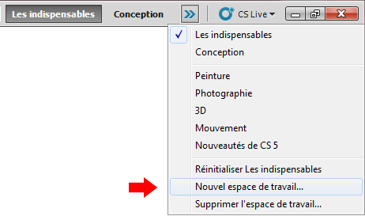Espace de travail - Nouveau
Vous ferez alors apparaitre la fenêtre suivante...
Espace de travail - Nouveau
Choisissez un titre (Nom :) et cochez Menus. Enfin, cliquez sur Enregistrer pour finaliser la sauvegarde de votre espace de travail.
Nous y sommes enfin ? Vous êtes donc équipés pour travailler sur le topissime, que dis-je, l'énormissime PHOTOSHOP :D ! (J'imagine que j'en fais peut-être un p'tit peu trop...)
Le premier chapitre de ce cours est maintenant terminé. Les notions que vous venez d'acquérir vous permettront d'assimiler plus facilement les informations qui suivent dans la mesure où vous allez comprendre ce que vous faites. :) (Ne rigolez pas, le cas contraire n'est pas rare !).
Le prochain chapitre suit logiquement ce que nous venons de découvrir. Au programme : création et édition d'un nouveau document ! Et un petit bonus pour finir, avec l'apparition de notre première « minute théorique ».
Avant de penser "effets spéciaux", "dégradés de couleur", "formes", "design", enfin bref, tout ce qui se rapporte de près comme de loin de l'infographie à proprement dire, nous devons préparer le terrain.
Quoi o_O ?! Mais, on l'a pourtant déjà préparé notre espace de travail, on ne fait que ça depuis le début d'ailleurs :-° ...
Oh, non :D !
Jusqu'à maintenant, nous avons juste cherché à nous conditionner. Nous avons donc pris le temps d'organiser notre espace de travail de sorte à ce que l'on puisse bosser correctement, avec tous les outils dont nous aurons continuellement besoin tout au long de ce cours. Cette étape passée, nous sommes fin prêts pour commencer. Mais pour commencer quoi que ce soit, il nous manque l'essentiel : un support. Bah oui, vous n'écrivez quand même pas sur la table quand vous dessinez à la maison, si ? ;)
Vous l'avez compris, je veux bien entendu parler de la feuille blanche sur laquelle nous allons pouvoir laisser parler notre créativité la plus sincère (en fait, je n'ose même pas imaginer ce que cela pourrait donner !). Sur Photoshop, cette feuille s'appelle "la zone de travail". Je vous le remets une deuxième fois histoire que ça s'imprègne bien parce que vous devez absolument connaitre ce mot :
ZONE DE TRAVAIL
Le problème avec la zone de travail, c'est qu'on la confond trop souvent avec l'espace de travail. D'ailleurs, vous vous êtes certainement demandé si je ne m'étais pas trompé en employant ce nouveau terme ? Ils se ressemblent car leurs noms sont quasi-identiques, mais c'est pourtant leur seul vrai point commun, et j'espère que vous avez bien fait la part des choses vous aussi :
J'aime comparer l'espace de travail avec un bureau de travail réel. Il s'agit en effet de l'espace dans lequel sont disposés par exemple nos crayons et nos pinceaux (dans Photoshop, il s'agit des palettes flottantes comme la boite à outils et encore la palette Calques).
La zone de travail, c'est la feuille sur laquelle l'infographiste dessine. Il s'agit d'un élément à part entière qui compose l'espace de travail, au même titre que la boîte à outil. D'ailleurs, la zone de travail aussi est une palette flottante ! ;)
Créer une zone de travail et la paramétrer
Il est enfin temps de poser une nouvelle feuille blanche sur la table de travail, autrement dit créer une nouvelle zone de travail. Pour cela, je vais vous demander de cliquer sur le bouton Fichier qui se situe dans la barre des menus puis sur Nouveau. Vous pouvez passer par les raccourcis clavier : CTRL + N pour Windows, Command (ou Pomme) + N pour Mac.
Une nouvelle fenêtre fait son apparition, elle est intitulée "Nouveau".
On remarque au premier abord que cette fenêtre est majoritairement constituée de champs blancs déjà remplis (les champs, ce sont les petits rectangles blancs, à l'image de celui dans lequel il est écrit "Sans titre-1"). Il s'agit des valeurs liées aux différents paramètres de la zone de travail que nous sommes en train de créer (ex : "Nom :"). Nous allons être amenés à modifier ces valeurs afin de paramétrer une zone de travail propre à nos besoins. Nous allons alors, par exemple, lui définir un nom, une taille, etc.
Nous rencontrerons ce type de fenêtre plusieurs fois dans ce cours. Alors, pour que mes explications soient un tant soit peu structurées et afin de vous assurer une bonne lisibilité, je procèderai toujours point par point (ici, paramètre par paramètre), de haut en bas et de gauche à droite tout au long du cours, le tout présenté sous forme de tableau. C'est ce qui me semble être la présentation la plus convenable ;) .
En-tête
Définition
Nom
Titre de la zone de travail, celui que portera le fichier final une fois enregistré dans un dossier de votre ordinateur. Ici, il s'agit de "Sans titre-1".
Paramètre prédéfini
Liste dans laquelle figurent différents formats prédéfinis. On parle généralement de format pour désigner les dimensions d'une zone de travail ou bien même d'une image (c'est-à-dire sa largeur et sa hauteur, on y vient juste après). Pour la plupart, ce sont des formats "populaires", comme par exemple les formats A3 et A4 ou bien le format type d'une enveloppe traditionnelle. Le principe est simple, vous n'avez qu'à choisir un type de format parmi ceux qui vous sont proposés dans la liste puis cliquer sur "OK" et Photoshop s'occupe du reste ! :)
Largeur
Comme son nom l'indique, ce paramètre définit la largeur de la zone de travail. Pour la définir, il faut indiquer deux paramètres : une valeur et une unité. La valeur, c'est le chiffre ou le nombre que prend la mesure (on l'indique dans le champs blanc, là où il est écrit 500 dans l'image ci-dessus). L'unité, c'est la grandeur de référence pour mesurer. Par exemple, on dira que la largeur de ma zone de travail fait 500 (valeur) centimètres (unité). D'ailleurs, les unités les plus courantes en infographie sont certainement le pixel et le centimètre (ce dernier est d'ailleurs également très utilisé dans le milieu du bâtiment).
Hauteur
On retrouve quasiment le même paramètre ici, à l'exception que celui-ci définit la hauteur de la zone de travail. Pareil, on indique une valeur et une unité.
Résolution
Tout comme votre écran d'ordinateur, les images que l'on peut consulter à l'aide d'un outil informatique (ordinateur, téléphone portable, iPad...) sont toutes composées de petits carrés de couleur que l'on appelle pixels.
Un pixel n'a pas de taille bien définie. Pour déterminer la taille d'un pixel, il faut définir une résolution pour le représenter graphiquement. Il s'agit plus ou moins d'une échelle comme celles que l'on trouve dans une carte de géographie. Plus la résolution est élevée, moins les pixels sont gros (on s'éloigne). A l'inverse, plus la résolution est basse, plus les pixels sont gros car on se rapproche d'eux à l'échelle. Wikipédia nous le démontre avec cet exemple :
De gauche à droite, la résolution diminue.
La prochaine partie de ce chapitre traite justement des pixels et de la résolution, je vous invite donc à patienter quelques minutes.
Mode colorimétrique
Le mode colorimétrique définit le type d'organisation des couleurs pour une image. Par exemple, si je choisis le mode noir et blanc, je ne pourrai travailler qu'avec ces deux couleurs dans ma zone de travail (ainsi que leurs nuances, c'est-à-dire du gris); pas question d'y voir du jaune ou du rouge. Il existe un mode dédié à l'impression (le CMJN), d'autres auront davantage leur place pour le web, etc. Pour info, un chapitre est consacré aux modes RVB et CMJN dans la deuxième partie de ce cours, préparez-vous à "en voir de toutes les couleurs" ;) .
Contenu de l'arrière-plan
Sur Photoshop, on parle d'arrière-plan pour désigner le fond de la zone de travail. On peut paramétrer l'arrière-plan de trois manières différentes : on crée la zone de travail soit avec un fond blanc, soit avec un fond de couleur (Couleur d'arrière-plan), soit avec un fond sans couleur apparente (Transparent).
Blanc : l'arrière-plan sera naturellement... blanc (c'est celui que j'utilise le plus souvent).
Couleur d'arrière-plan : l'arrière-plan prend ici la "couleur d'arrière-plan" définie dans ce que l'on appelle la palette de couleurs. Nous reviendrons sur celle-ci un peu plus tard, inutile de s'étaler sur le sujet pour le moment.
Transparent : le fond de zone de travail est ici tout simplement transparent (comme du papier calque). Cela permet de travailler sans fond et vous verrez que c'est aussi l'un des fonds que l'on sera susceptibles d'utiliser dans le cours.
Au même titre que le centimètre qui s'abrège cm, veuillez prendre note que l'abréviation du pixel s'écrit px.
Par ailleurs, pour annoncer la taille d'une zone de travail, il existe un jargon qui facilite la tâche à bon nombre de graphistes. En effet, plutôt que de dire "la largeur de ma zone de travail est de 500 pixels et sa hauteur est de 600 pixels", on préfèrera dire "La taille de ma zone de travail est de 500*600px". On annonce en premier la largeur puis la hauteur du document, en prenant soin de séparer les deux par le signe de la multiplication et de finir par noter l'unité des deux valeurs, à savoir le pixel dans mon exemple.
Nous avons fait le tour, il est enfin temps de créer cette maudite zone de travail :D .
En-tête
Valeur (champs blanc)
Nom
Ma première zone de travail
Paramètre prédéfini
Presse-papiers
Taille
500*300 px
Résolution
72 pixels/pouces
Mode colorimétrique
Couleurs RVB pour 8 bits
Contenu de l'arrière-plan
Blanc
Les fonctions avancées ne nous intéresseront pas dans ce cours ;) .
Une fois les paramètres définis, vous n'avez plus qu'à cliquer sur le bouton OK. Félicitations, Vous avez créé votre première zone de travail :) !
J'ajoute par la même occasion que vous pouvez créer plusieurs zones de travail en même temps. Si vous créez trois zones de travail par exemple, vous engendrerez l'apparition de petits onglets correspondant chacun à une zone de travail juste au-dessus de la zone de travail ouverte :
Enregistrer un document sous Photoshop peut se révéler plus complexe qu'il n'y parait. Et ça se constate au premier abord car, si vous n'avez pas touché à la zone de travail que vous venez de créer, il n'est à priori pas possible de l'enregistrer. Je peux vous le prouver, hein ! Essayez d'enregistrer votre projet, vous verrez. Il faut cliquer sur Fichier puis Enregistrer dans la barre des menus, ou bien taper la combinaison CTRL + S (Command (ou Pomme) + S si vous êtes sur Mac). Aucun doute possible, le boutonEnregistrer n'est pas opérationnel !
Et c'est normal. En fait, dans le principe, vous conviendrez qu'il est absolument inutile d'enregistrer un document totalement vide. En tout cas, il ne semble pas vraiment y avoir d'intérêt à le faire.
Par conséquent, ce bouton ne devient opérationnel si et seulement si vous avez apporté des modifications dans la zone de travail, ce qui n'est pas le cas actuellement.
Enregistrer une copie
Il existe tout de même une solution pour le faire si nécessaire, il s'agit du bouton Enregistrer sous... que vous trouverez juste en-dessous du bouton Enregistrer.
Ce bouton va nous permettre d'enregistrer une copie de la zone de travail, qu'elle ait subi ou non des modifications au préalable.
Pour résumer, le bouton Enregistrer permet de sauvegarder la source de notre travail uniquement si des modifications ont déjà été apportées au document tandis que l'autre bouton, Enregistrer sous... sauvegarde une copie de cette source. Ne vous embêtez pas trop avec ça, contentez-vous de savoir comment enregistrer votre travail pour l'instant, c'est le plus important :D .
Désormais, je vous invite à cliquer sur le fameux bouton Enregistrer sous... (CTRL + MAJ + S ou Command (ou Pomme) + MAJ + S) afin de sauvegarder la zone de travail que vous venez tout juste de créer. Évidemment, si nous avions pu cliquer sur le bouton Enregistrer, nous l'aurions fait. Mais que nous passions par l'un ou l'autre, cela ne change rien, la procédure d'enregistrement est de toute façon la même dans les deux cas.
Je suis conscient que pour la plupart d'entre-vous, enregistrer un document sur son ordinateur n'a rien de sorcier. C'est vrai, après tout, la plupart des logiciels demande à ce que l'on passe par la case enregistrement. Mais Photoshop n'est pas un logiciel comme les autres :D . Sa fenêtre d'enregistrement est bien plus spécifique et demande à être étudiée plus sérieusement.
Je le répète, je procèderai de haut en bas et de gauche à droite comme je l'ai fait lors de la création d'une nouvelle zone de travail.
Vous pouvez dans un premier temps choisir la destination de votre enregistrement (Enregistrer dans :). Autrement dit "dans quel répertoire de mon ordinateur vais-je enregistrer mon fichier ?".
Ensuite, vous avez le contenu du répertoire dans lequel vous vous apprêtez à enregistrer votre fichier. Sur l'image, nous sommes dans le Bureau. Donc, le contenu du bureau s'affiche, à vous ensuite de choisir le dossier dans lequel figurera votre document.
Vous pouvez ensuite définir le nom que portera votre fichier. Si vous avez choisi "Ma première zone de travail" comme je vous l'avais demandé tout à l'heure, au moment de créer la zone de travail, c'est ce qui devrait alors s'afficher dans le champs blanc. Si vous n'avez rien écrit, le nom du fichier proposé par Photoshop est "Sans titre-1". De toute façon, c'est à vous de choisir le titre de votre document.
Vous devez ensuite choisir le format de votre fichier... et c'est là que j'interviens. Observez le contenu de la liste déroulante. Certains des formats ne vous seront sans doute pas inconnus. Il devrait y en avoir une quinzaine (selon les versions, je suppose que ce chiffre peut changer).
Je ne vous parlerai que de ces 7 formats seulement :
Format
Extension(s)
Photoshop
.PSD ; .PDD
JPEG
.JPG ; .JPEG ; .JPE
PNG
.PNG
PDF
.PDF
EPS
.EPS
TIFF
.TIFF
GIF
.GIF
Pourquoi ces sept-là et pas les autres ?
Ces sept formats sont ceux que vous êtes susceptibles d'utiliser le plus fréquemment, en tout cas vous aurez forcément besoin de l'un ou de l'autre un jour, selon vos besoins. Les autres ne sont pas facultatifs mais sont spécifiques à certains domaines que nous n'aborderons pas dans ce cours.
Le format Photoshop
Le format Photoshop (dont l'extension la plus connue est .PSD) est le format type de Photoshop. Il s'agit du format "source" de votre travail, celui dans lequel on retrouve tous les éléments qui le composent, toutes les modifications qui y ont été apportées, l'historique, etc. Ce n'est pas véritablement une image : c'est un fichier dédié à la modification et qu'on ne peut ouvrir qu'avec des logiciels de traitement d'image, comme Photoshop évidemment ou éventuellement The GIMP par exemple.
Lorsqu'on crée un nouveau document, celui-ci prend donc en premier lieu l'extension .PSD. Par exemple, le premier document que vous avez créé et que vous vous apprêtez à enregistrer se nommera "Ma première zone de travail.PSD". Il s'agira, je répète, du document source de votre travail, celui par lequel vous devrez obligatoirement passer pour effectuer des modifications sur votre travail.
Le plus souvent, on a un objectif en créant une nouvelle zone de travail : l'enregistrer et obtenir une image fixe, c'est-à-dire un fichier non destiné à la modification mais plutôt à la visualisation. N'est-ce pas ? Alors, vous conviendrez qu'il faille en fait transformer le fichier source (.PSD) en un fichier image ? Ça tombe bien, on a justement un bouton qui permet de créer une copie du fichier source... Vous voyez où je veux en venir ?
Je parle en effet du bouton Enregistrer sous... ! On va enregistrer une copie du fichier Photoshop et lui définir un format permettant de le transformer en un fichier de visualisation, c'est-à-dire de transformer notre travail sous forme d'image.
Je sauvegarde mon travail au format .PSD (fichier source).
J'enregistre une copie de cette source.
Je lui attribue un format qui engendrera la transformation de cette copie en une image, c'est-à-dire un fichier qui permet de visualiser le contenu du fichier source sans passer obligatoirement par Photoshop.
Mais alors, quel format utiliser pour ça ?
Hum, disons tous ceux que je n'ai pas encore cités. Commençons par les plus courants, le JPEG et le PNG.
Les formats PNG et JPEG
Bon, on l'a compris, ils présentent tous les deux une même fonctionnalité, c'est d'ailleurs celle que je me tue à essayer de vous expliquer : ils transforment tous les deux le fichier source en un fichier image (jusque là, pas de surprise). En revanche, on peut noter que leurs caractéristiques sont différentes, c'est-à-dire qu'ils ne vont pas transformer de la même manière. Et c'est pour cela qu'il ne faut pas les confondre et que l'on utilise généralement soit l'un ou soit l'autre, selon nos besoins et nos envies aussi.
Le JPEG est un format très léger qui utilise la « compression ». Cela signifie que votre machine va effectuer un calque pour que l'image sauvegardée n'occupe que très peu de place sur le disque dur de votre ordinateur. Mais on n'a rien sans rien : malheureusement, la qualité de l'image s'en trouvera déteriorée. En effet, plus le fichier est léger, plus la qualité de l'image diminue. On peut toutefois noter que ce format est paramétrable, c'est-à-dire que l'on va pouvoir choisir la degré de compression de l'image, ce qui rend ce format d'enregistrement plus maniable aussi. Mais on ne va pas rentrer dans les détails, cela nous importe peu pour l'instant. ;)
Les caractéristiques du PNG sont à peu près l'inverse de celles du JPG. En effet, bien que la technique de compression soit également utilisée ici, le PNG permet d'enregistrer une image avec une qualité nettement plus optimale. Or, plus la qualité de l'image est bonne, plus le fichier est lourd et de ce fait, il occupera plus de place sur le disque dur de votre ordinateur. L'autre atout du PNG est qu'il gère la transparence contrairement au JPEG.
En résumé, nous savons que :
Enregistrer une zone de travail au format Photoshop (.psd) revient à créer un fichier source. On peut donc modifier le contenu de ce fichier et ne le visualiser qu'avec un logiciel de traitement d'images comme Photoshop.
Enregistrer une copie de cette zone de travail .PSD au format .JPEG permet de transformer ce document en une image (un fichier prévu à la visualisation). La qualité de l'image ne sera pas optimale, mais le fichier ne prendra pas beaucoup de place sur votre disque dur. Attention, il ne supporte pas la transparence.
Enregistrer au format PNG permet également de transformer un document Photoshop en une image. Mais à l'inverse, la qualité de celle-ci restera excellente, à l'inverse de son poids qui sera cette fois plus élevé. Ce format supporte la transparence.
Pour enregistrer un fichier source (.PSD), il faut passer par le bouton Enregistrer. Pour enregistrer une copie de ce fichier source, il faut cliquer sur Enregistrer sous....
Les formats TIFF, EPS et GIF
Les autres formats présentent eux aussi des caractéristiques d'enregistrement différentes, chacun ayant ses propres fonctions. Voici une brève description des formats TIFF, EPS et GIF, nous finirons avec le PDF pour lequel j'ai prévu de passer un petit plus de temps :
TIFF : ce format d'enregistrement est particulièrement adapté pour les travaux à haute résolution. Il a l'avantage de conserver la qualité initiale de l'image. Aucune compression donc, la qualité sera des plus optimales. Et comme vous le savez, plus la qualité de l'image est conservée, plus le fichier est lourd.
EPS : il s'agit d'un format d'enregistrement connu pour être utilisé pour les réalisations de type « vectoriel ». Cette technique de création fait l'objet de notre troisième partie dans ce tutoriel, elle consiste en la construction de tracés et technique de détourages. Avec l'EPS, nous allons conserver tous les tracés vectoriels et serons en mesure de les utiliser d'un logiciel à un autre.
GIF : Globalement, le GIF est proche du PNG à l'exception près qu'il est plus lourd, mais aussi moins efficace. Par exemple, il ne supporte que 256 couleurs différentes et qu'un seul niveau de transparence, tandis que le PNG est plus souple et, par exemple, par extension, plus fiable. C'est d'ailleurs pourquoi il est considéré comme l'antécédent du PNG. Le format GIF présente toutefois un atout : il a été étudié afin qu'il puisse stocker plusieurs images dans un même fichier. C'est ainsi que le "GIF animé" a vu le jour, il s'agit d'un diaporama affichant différentes images de manière successives. Par exemple :
Après avoir créé votre première zone de travail, vous savez maintenant comment l'enregistrer, vous pouvez encore vous féliciter :) !
Enregistrer au format PDF
Présentation
Ce dernier format est un peu plus particulier que ceux que nous venons d'étudier. Le PDF, tiré de l'anglais Portable Document Format (format de document multiplateforme en français), est un format créé et développé par Adobe, le créateur de Photoshop lui-même.
Le pouvoir du PDF réside essentiellement dans sa capacité à conserver certaines propriétés du document enregistré. Je m'explique.
Pour comprendre, il va falloir sortir du contexte "Photoshop", et entrer dans un autre univers : celui du traitement de texte. Quand on crée un nouveau document avec Microsoft Word ou OpenOffice Writer par exemple, et qu'on l'agrémente de textes et images toutes positionnées selon nos souhaits, on crée ce que l'on appelle une mise en forme.
En enregistrant ce fichier source au format PDF, on l'enregistre en un format de visualisation (au même titre que l'image), mais avec la particularité que celui-ci conservera les propriétés de mise en forme. Par exemple, les textes, s'il font "x taille" dans le fichier source, feront "x taille" également dans le fichier PDF.
Tu veux dire que le texte change de taille quand on enregistre un fichier PSD en fichier image ?
Absolument pas, non. En l'occurrence, pour reprendre l'exemple des textes sous Photoshop enregistrés en fichier image, il faut comprendre qu'ils sont finalement eux-mêmes transformés, d'une certain façon, en format image. Avec le PDF, les textes restent des textes. D'où le terme de "portabilité" : on transfert tout plein d'informations conservées dans le format source, dans un nouveau type de fichier dont le format est PDF. De même, les images restent des images. Elles ne sont pas toutes transformées en un seul et même fichier image : chacune garde son format d'origine (.PNG par exemple) et se retrouvent dans le fichier PDF qui joue le rôle de support de ces images, à la place qu'on leur a donnée initialement dans le fichier source du traitement de texte. :)
Le cas Photoshop
Sur Photoshop, c'est un petit peu différent. Vous le savez, lorsque l'on enregistre notre travail (.PSD) en un fichier de visualisation au format PNG par exemple, on le transforme en image. Jusque là, rien de nouveau. :)
En revanche, un fichier PDF enregistré à la base via Photoshop va contenir des données bien spéciales que l'on appelle des pixels (nous reviendrons dessus dans la partie suivante). Pour faire simple, on peut dire que le fichier PDF contient un fichier image.
Ça sert à quoi alors, le PDF ?
Avant tout, il faut savoir que le PDF ne peut se lire qu'avec un logiciel ayant la capacité de l'ouvrir. Le plus connu et le plus utilisé est Adobe Reader.
Ainsi, si vous réalisez une image sous Photoshop, il vous faudra un visualiseur d'image pour l'ouvrir. Si vous créez un PDF, Adobe Reader se chargera de le lire. Mais dans le principe, votre PDF sera une image, c'est pour cela que l'on peut dire que "l'image se trouve dans le fichier PDF". Finalement, ce dernier ne fera qu'office d'intermédiaire.
D'une manière générale, on crée relativement rarement des fichiers PDF sous Photoshop. Si on le fait, c'est aussi parce que le PDF est devenu un format très courant et très demandé. C'est d'ailleurs aussi pour ça que je voulais vous en parler. Vous-même, vous avez déjà ouvert un PDF au moins une fois dans votre vie, j'en suis convaincu.
Dans la majorité des cas, on utilise le PDF pour, par exemple, mettre en ligne et en consultation des plaquettes de présentation. Il est aussi le format le plus apprécié/demandé pour la consultation de CV (curriculum vitae). Ainsi, vous serez à la fin de ce cours en mesure de créer un CV sophistiqué de toute pièce, et de l'enregistrer au format PDF pour qu'il soit grandement consultable (et consulté peut-être ? ;))
Enregistrer pour le web...
Cette fonctionnalité n'apparait pas dans la liste des différents formats d'enregistrement. Et pour cause, il ne s'agit pas d'un format, mais d'un type d'enregistrement. C'est pourquoi vous trouverez cette fonctionnalité dans le menu Fichier > Enregistrer pour le web et les périphériques...
Ce bouton n'est actif que si une zone de travail est ouverte, vierge ou non. En ce qui me concerne, je vous présenterai ce module à l'aide de cette image :
Cliquez sur l'image pour l'agrandir
Je vous invite à cliquer sur le bouton afin d'ouvrir la fenêtre correspondante.
Globalement, c'est à partir de cette fenêtre que vos documents destinés à paraitre sur la toile doivent être enregistrés. Or, vous le savez sûrement, il y a un tas de raisons qui peuvent pousser telle ou telle personne à enregistrer son travail pour le Web. En fait, tout dépend des besoins de chacun. C'est pourquoi je vais passer en revue chaque partie de la fenêtre dans le but de vous familiariser avec elle.
Le cas de l'image seule
S'il est question d'enregistrer une photo par exemple, les paramètres situés à droite de la fenêtre sont susceptibles de vous intéresser. On aperçoit en premier lieu le paramètre au nom plutôt évocateur : "Paramètre prédéfini". Vous l'aurez compris, la liste déroulante présente une succession de paramètres aux réglages déjà effectués. Une présentation de chaque réglage revient continuellement sous la forme suivante :
NOM : GIF, JPEG ou PNG. Il s'agit des formats d'enregistrement, les mêmes que nous venons de voir ensemble.
CHIFFRE : 128, 32, 24. Ces chiffres représentent le nombre de couleurs supportées par le format. Plus le chiffre est important, plus le format prend en considération de couleurs. A ce titre, plus le chiffre est important, plus le poids de l'image le sera.
TRAMAGE : Le tramage correspond plus ou moins au type de transition qu'il peut y avoir d'un pixel à un autre. Si le format est non-tramé, le passage d'un pixel à un autre sera brut. Au contraire, s'il est tramé, un "fondu" apparaitra et sera paramétrable selon certaines propriétés telles que le pourcentage de tramage (moins de pourcents équivaut à un fondu moins important), le type de tramage (diffusion, motif, bruit), la transparence, etc.
Quelle différence faire entre PNG-8 et PNG-24 ?
Ces chiffres-là, précédés d'un tiret, désignent les propriétés du PNG. Si le PNG-8 a l'avantage d'être souple car on peut lui définir bon nombre de paramètres, il reste assez limité. Par exemple, on ne peut lui définir plus de 256 couleurs. Le PNG-24, en revanche, est ce qui se fait de plus optimal en termes de qualité d'image. Aucune limite sur le nombre de couleurs, par exemple.
En ce qui concerne le JPEG, trois solutions : soit JPEG Inférieur (qualité minimale), soit JPEG Moyen (qualité intermédiaire), soit JPEG Supérieur (meilleure qualité, mais pas aussi optimale que le PNG ou le TIFF par exemple).
En-dessous de tous ces paramètres se situe le cadre "Table des couleurs". Il n'est effectif que si vous décidez de travailler avec un certain nombre de couleurs. Si vous choisissez, par exemple, le format "PNG-8 256 Tramé", eh bien la table présentera précisément les 256 couleurs de l'image en cours de modification et disponible en aperçu à gauche de la fenêtre.
Ici, vous pouvez vous en rendre compte à l’œil nu, on retrouve bien la gamme de couleurs de la photo dans la table de droite. Vous pouvez compter, il y en a bel et bien 128. Alors évidemment, la photo de base est constituée de plusieurs millions de couleurs différentes. Avec ce nouveau paramètre (PNG-8 128 Tramé), on a demandé au logiciel de ne retenir que les 128 couleurs principales. Et, vous le voyez dans l'aperçu de gauche, la différence n'est pas si évidente que ça. Pour comparer l'image de base avec l'image paramétrée, il vous suffit de cliquer sur l'onglet "2 vignettes" au-dessus de l'aperçu.
Comment ça se passe si je travaille sur un document qui n'a que 10 couleurs par exemple ?
Si vous choisissez le format PNG-8 128 Tramé par exemple, alors il y aura bel et bien 10 couleurs présentées dans la table. ;)
Pour finir, le cadre "Taille de l'image" vous permet de définir de nouvelles dimensions à l'image en cours d'enregistrement.
Le cas du site web
Cette fonctionnalité de Photoshop est à double-fonction. La première, nous venons de la découvrir, est le réglage d'une image selon différents paramètres.
La deuxième, quant à elle, est directement liée à un outil de Photoshop répondant au nom de Tranche
. On utilise cet outil pour « découper » une image en plusieurs morceaux : on crée alors des tranches. Cette fonctionnalité est particulièrement utile lorsqu'on crée une charte graphique de site web, c'est-à-dire l'aspect visuel d'un site. On commence par créer une image (plus communément appelée une « maquette ») mettant en scène l'aspect visuel dudit site, puis on découpe chaque élément pour finalement les rassembler et les adapter au web.
Ici, on voit les deux premières phases : la première consiste à créer la maquette du site, qui donne un aperçu du site tel qu'il sera présenté sur la toile. Il ne s'agit ici que d'une image. La deuxième phase montre le site « découpé ». On a donc une série d'images que l'on réutilisera avec les langages HTML et CSS pour reformer le site à l'image de la maquette préalablement créée. Les textes ou encore le menu sont techniquement réalisable avec les langages HTML et CSS seuls, on n'a donc pas besoin de les extraire de notre maquette.
Une fois la découpe de l'image avec l'outil Tranche
terminée, on passe à l'enregistrement pour web. Cette fenêtre est utile pour deux choses : tout d'abord, avoir un aperçu de notre travail directement sur notre navigateur Web (ex. : Internet Explorer, Mozilla Firefox, ...), mais aussi et de toute évidence, enregistrer simultanément toutes les images découpées, ainsi que le code HTML qui va permettre de les « maintenir » entre-elles et de les adapter au Web comme je viens de vous l'expliquer.
Aperçu : pour obtenir un aperçu, il suffit de cliquer sur le bouton du même nom en bas de la fenêtre. Vous avez la possibilité de sélectionner le navigateur de choix en cliquant sur la petite flèche suivante.
Enregistrer : en cliquant sur le bouton Enregistrer, vous tomberez sur une fenêtre d'enregistrement semblable à celles auxquelles nous avons déjà eu affaire. Une nouveau toutefois, je veux parler de format. Étant donné qu'il est question d'enregistrer une série d'images et leur code HTML, vous aurez la possibilité de les enregistrer ensembles ou séparément. Si vous les enregistrez ensemble, vous obtiendrez finalement un fichier de type HTML, accompagné d'un dossier dans lequel figurent toutes les images découpées avec la Tranche.
Je vous explique très rapidement comment ouvrir un document, c'est un vrai jeu d'enfant !
La première étape, c'est de cliquer sur Fichier dans la barre des menus puis sur Ouvrir. (CTRL + O ou Command (ou Pomme) + O)
La fenêtre ci-dessous apparait soudainement.
Allez dans le dossier dans lequel vous avez enregistré votre projet "Ma première zone de travail.PSD" et, une fois trouvé, double-cliquez dessus, ou bien cliquez une fois dessus puis sur le bouton Ouvrir.
C'est pas plus compliqué que ça, vous venez d'ouvrir votre document ;) .
J'ai une petite question à vous poser avant de clôturer ce deuxième chapitre :) . Cela ne concerne pas seulement Photoshop, il encadre en fait le domaine de l'infographie. Pour ceux qui ne s'en souviendraient pas (les étourdis quoi !), l'infographie est une discipline qui consiste à faire du graphisme par informatique. D'ailleurs, je vous l'annonce au passage, vous aurez plusieurs fois affaire à ce genre de chapitre qui sont liés à Photoshop mais qui ne concernent pas que lui.
Enfin bref, où en était-je ? Ah oui, je voulais vous poser une question. Savez-vous comment fonctionne votre écran d'ordinateur ?
Euh... bah il est branché à mon unité centrale et il affiche tout ce que je veux... :euh:
Oui, mais ça tout le monde le sait, même si je souligne la logique de votre raisonnement :D ! Maintenant, allons plus loin : sauriez-vous me donner plus de précisions sur comment l'écran affiche ce que vous voulez justement voir ? Par exemple, avez-vous une idée de pourquoi votre écran émet de la lumière ?
Si vous n'avez pas réponses à mes questions (j'espère bien que c'est le cas sinon je vais me retrouver tout seul...), je vais m'empresser de vous expliquer tout cela. Et pour ce faire, je vais avoir besoin d'un écran d'ordinateur !
Woooah ! Un écran d'ordinateur !
Nous nous concentrerons sur la partie principale de l'écran, celle qui est la source de l'affichage et sur laquelle vous êtes justement en train de lire ces textes. L'écran ci-dessus est actuellement éteint.
Allumons-le pour voir ce qu'il laisse apparaitre.
Le Site du Zéro sur Windows 7 et un écran Apple, comme ça pas de jaloux. :-°
Lorsque l'écran de mon ordinateur était éteint, il était noir, inanimé. En l'allumant, deux éléments nouveaux sont apparus : de la lumière et de la couleur.
Ces deux éléments ne sont pas arrivés par la bonté du St-Esprit. En fait, en allumant l'écran, j'ai mis en route tous les pixels de cet écran.
Les pixels ? Ça me dit quelque chose ce truc, je crois en avoir déjà entendu parler quelque part...
Et comment que vous en avez entendu parler ! Ce mot est devenu super courant et on l'emploie constamment pour parler notamment d'écrans, qu'il s'agisse d'une télévision ou d'un ordinateur. Mais savez-vous quel est le rôle du pixel, comment il fonctionne ?
Je vais vous expliquer, mais permettez-moi avant de récapituler brièvement ce que l'on vient de dire pour m'assurer que vous avez bien saisi :
L'écran, quand il est éteint, est tout noir : ni lumière, ni couleur ne s'en échappe.
Quand il est allumé, en revanche, il laisse apparaitre de la couleur et de la lumière.
On peut apercevoir ces deux éléments grâce aux pixels de l'écran.
Un écran peut être (de nos jours du moins) composé de plusieurs milliers voire millions de pixels.
Chaque pixel d'un écran est rempli d'une couleur unique (le bleu par exemple) et émet de la lumière. Ainsi, en allumant votre écran d'ordinateur, vous demandez à tous les pixels de cet écran de s'éveiller et d'afficher chacun une couleur permettant de composer, à eux tous, ce qu'affiche l'écran. Par exemple, quand vous consultez le Site du Zéro, vous êtes en face de millions de petits pixels formant tous le graphisme du site, celui que vous avez actuellement sous les yeux. Si vous changez de page ou que vous vous déplacez à différents endroits d'une même page, vous allez alors demander à ce que le graphisme du site soit différent : vous engendrerez donc une modification des couleurs de chaque pixel. Vous me suivez ?
Une image numérique
Si notre écran d'ordinateur est composé de pixels, il en est de même pour les images que l'on consulte à l'aide d'un outil informatique (téléphone portable, ordinateur, appareils photo, ...). Cela rejoint justement ce que je vous disais : quand l'écran affiche quelque chose (une image, un site internet, un jeu vidéo, peu importe), ce sont les pixels qui s'éveillent et qui se colorisent et forment ce quelque chose. On appelle les images formées de pixels des images numériques.
On se sert des pixels d'une image numérique comme unité de mesure ce qui nous permet ainsi de lui définir une taille, plus communément appelée les dimensions de l'image.
Tu nous parles de taille, d'unité de mesure, ... Mais d'abord, un pixel, ça ressemble à quoi ?
Un pixel est de forme rectangulaire (le plus souvent, il ressemble à un carré). Pour s'en rendre compte et voir de plus près à quoi il ressemble véritablement, il va falloir regarder de plus près notre écran d'ordinateur. Observez attentivement la boîte à messages privés située en haut à droite de votre écran et du site.
Est-ce que vous voyez tous les petits carrés de couleur qui forment l'image de la boîte à messages privés ?
Non ?
Vraiment ?
Et en zoomant sur l'image, vous ne les voyez toujours pas ? :D
Bon sang ! C'est tout flou, j'ai l'impression que l'image est toute brouillée et effectivement, j'ai l'impression d'apercevoir des petits carrés de couleur un peu partout... :o
Vous n'avez pas fini de voir de telles horreurs, je vous le dis :p . Enfin bon, voilà donc à quoi ressemble un pixel ! Et si vous avez encore un peu de mal à apercevoir les pixels dont je vous parle, jetez donc un œil sur cette image :
Cliquez sur l'image pour l'agrandir
Grâce à cet aperçu, on peut voir absolument chaque pixel de l'image. Si nous n'avions pas zoomé, nous n'aurions pas pu reconnaitre un pixel d'un autre tellement ils sont méconnaissables, ou alors très difficilement, excepté peut-être ceux dont les couleurs sont suffisamment différentes. D'ailleurs, c'est pas bien compliqué de s'en rendre compte, il suffit d'observer votre écran et de le constater par vous-même : impossible d'apercevoir concrètement l'existence des pixels tellement ils sont minuscules. A moins d'avoir un appareil photo super performant :p :
On aura tous reconnu le logo du Site du Zéro, véritable identité graphique du site sur lequel vous êtes en train de surfer. Ce qui est génial sur cette photo, c'est que l'on distingue sans problème tous les pixels qui composent le logo. Vous commencez à comprendre maintenant la notion de pixel ?
A propos, quand je vous disais qu'une image pouvait être composée de milliers ou de millions de pixels, je ne vous mentais pas. Il m'a suffi de zoomer sur l'icône de la boîte à messages privés (juste au-dessus de la photo du logo du SdZ) pour avoir réussi à compter plus de mille pixels (oui, j'ai compté, il y en a très exactement 1734). Comprenez que je n'ai pas cherché à compter le nombre de pixels du reste de l'écran, je n'en serais jamais sorti indemne... :lol:
Comment t'as pu compter tous ces pixels un par un ? Il y en a tellement !
Ne vous méprenez pas, je n'ai pas véritablement compter tous ces pixels un par un. En fait, c'est très facile ! Si vous définissez par exemple la taille de 400*250px à une zone de travail, vous aurez alors très précisément 100.000 pixels vides à remplir. Comment je le sais ? Il m'a juste suffit de multiplier le nombre de pixels de la largeur par le nombre de pixels de la hauteur, soit 400 par 250. Ainsi, j'obtiens le nombre exact de pixels de l'ensemble de ma zone de travail.
Tu nous as montré à quoi ressemblait un pixel. Mais finalement, ça fait quelle taille, un pixel ?
Question anodine mais pourtant très subtile. S'il peut être carré ou rectangulaire et qu'il est une unité de mesure, les dimensions d'un pixel sont modulables.
Pour donner une taille au pixel, il faut en fait utiliser une autre unité de mesure. Prenons par exemple le centimètre. On peut ainsi dire que 5 pixels vaut 1 centimètre (ce n'est pas exact hein, c'est juste pour l'exemple), comme on pourrait dire d'ailleurs que 1 centimètre vaut 10 millimètres (ça c'est vrai par contre ;) ). Et pour définir le nombre de pixels pour telle unité de mesure, on va utiliser ce que l'on appelle la résolution.
La résolution
La résolution signifie dans notre cas "combien de pixels équivaut à un centimètre, trois centimètres, deux millimètres, ...".
En informatique, même s'il n'est pas interdit d'utiliser notre bon vieux centimètre, on a plutôt tendance à utiliser l'unité de mesure américaine par excellence, le pouce (un pouce équivaut par ailleurs à 2,54 centimètres).
Mais, le pixel aussi, c'est une unité de mesure. Pourquoi on ne l'utilise pas ?
Quel est l'intérêt pour nous de dire "un pixel équivaut à trois pixels", sachant qu'on ne sait même pas combien vaut un pixel ? D'où l'intérêt d'utiliser une autre unité de mesure comme référence pour définir la taille d'un pixel. Et encore une fois, cela consiste à utiliser la résolution :
Ces valeurs sont approximatives, je ne les ai pas vérifiées.
Sur cette image, on a déterminé le nombre de pixels pour un pouce, tel qu'on le ferait pour définir une échelle géographique (par exemple, 1 centimètre sur une carte de l'Europe équivaudrait à 25 kilomètres).
On dira donc que la résolution de cette image est 30 ppp (pixels-par-pouce).
Dans ce cours, nous travaillerons quasiment tout le temps avec le pixel comme unité de mesure. Autrement dit, nous créerons des images numériques en utilisant les pixels, ce que l'on appelle plus communément des images matricielles (ou images pixelisées, ou image BITMAP en anglais).
Ca veut dire quoi "quasiment tout le temps" ? o_O
Nous verrons plus tard qu'il existe une toute autre technique pour créer des images, mais il n'est pas nécessaire que je vous en parle tout de suite car elle ne nous sera vraiment utile qu'à partir de la troisième partie de ce cours. Pour le moment, retenez l'essentiel, à savoir que nous créerons pour un temps des images numériques grâce aux pixels et qu'on appelle ces images des images matricielles.
Ce deuxième chapitre est terminé. Nous avons étudié un aspect très important en infographie, celui de l'enregistrement. Vous serez continuellement amené à chercher des solutions d'enregistrement pour conserver une qualité de travail des plus optimales.
Cette dernière sous-partie a été pour l'occasion de vous expliquer certaines notions fondamentales, comme le fonctionnement du pixel ou encore de la résolution.
Dans le chapitre suivant, nous entrons dans le vif du sujet avec la création de vos premiers effets spéciaux.
De toute évidence, Photoshop est majoritairement utilisé par les infographistes de métier, bien qu'une bonne partie de ses utilisateurs est encore amateur voire même débutante comme c'est actuellement votre cas.
Parmi leurs objectifs, aussi nombreux soient-ils, forcément l'un d'eux consiste à styliser leurs travaux par l'utilisation d'outils prévus à cet effet, Photoshop étant le logiciel le plus complet et le plus performant en la matière. C'est d'ailleurs ce sur quoi repose ce cours : l'initiation aux différents outils du logiciel.
La panoplie de Photoshop en matière d'outils est très importante et il m'a semblé on ne peut plus évident d'étudier ce que je juge comme étant l'une des fonctionnalités les plus fondamentales du logiciel (et de tous les logiciels de graphisme d'ailleurs), je veux parler des calques, sans quoi Photoshop ne serait plus Photoshop :D .
Cela me permettra d'introduire ce que l'on appellera les modes de fusion et les styles de calque, de puissants effets spéciaux entièrement paramétrables et automatiquement générés par le logiciel.
Je vous l'annonçais, il s'agit selon moi de la fonctionnalité la plus importante de Photoshop ou de tout autre logiciel similaire. Les calques font partie intégrante du logiciel et, qui plus est, ils sont clairement essentiels pour travailler, vous allez vite comprendre pourquoi.
Pour découvrir les calques, nous allons passer le plus clair de notre temps dans la fenêtre de calques qui se situe en bas à droite de votre logiciel (pour les gens biens qui ont pris mon espace de travail comme modèle :-° ) :
Ne vous laissez pas perdre par son interface un peu repoussante je dois dire car en fait elle n'est pas si complexe qu'elle n'y parait, je dirais même que les créateurs du logiciel en ont fait un élément intuitif et relativement facile d'utilisation.
En premier lieu, j'aimerais que vous créiez une nouvelle zone de travail. Pour la taille, je vous laisse décider, ça n'a aucune importance pour le moment :) .
Définition
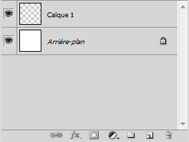
La question que tout débutant se pose en premier, c'est : "mais c'est quoi ça, un calque ?".
C'est une question à laquelle j'ai moi-même un peu de mal à répondre dans la mesure où la définition type d'un calque peut s'avérer relativement complexe à comprendre (alors pour l'expliquer...). On pourrait définir un calque comme étant un élément graphique qui est géré par Photoshop. On sous-entend qu'un calque représente une partie de notre projet, autrement dit l'un des éléments qui compose la zone de travail.
C'est assez délicat à expliquer comme je viens de vous l'annoncer et c'est peut-être encore plus complexe pour vous à comprendre avec de simples mots, c'est la raison pour laquelle je vais illustrer tous mes propos par un exemple pour ceux qui en auraient besoin.
Petite parenthèse : afin que vous puissiez travailler en même temps que moi tout au long de votre lecture, je vous fournirai régulièrement le fichier Photoshop (.PSD) de mes exemples. Vous disposerez alors de la source de mon travail et serez en mesure d'effectuer vos propres essais.
Veuillez télécharger le premier fichier de ce tutoriel. Il s'agit du fichier que j'ai moi-même utilisé pour illustrer l'exemple qui suit. Télécharger le fichier source France.psd
Petite parenthèse faite, on peut continuer ce que l'on avait commencé, j'étais parti pour vous faire un exemple :) .
Exemple
Je découpe la France en quatre parties telles qu'on les connait : l'Est, l'Ouest, le Nord et enfin, le Sud. Chacun de ces quatre points cardinaux compose évidemment la France, comme en témoigne cette image :
L'idéal serait même de séparer encore plus distinctement chaque point cardinal pour faire éclater le schéma en 4 parties (comme c'est le cas dans le fichier source que vous venez de télécharger) pour ensuite jeter un œil sur la fenêtre de calques. On remarque alors que chaque partie du schéma est justement représentée par ce que l'on appelle un calque, qu'il s'agisse des quatre coins de la France ou bien même de l'arrière-plan (le fond blanc) : tous sont des calques que l'on retrouve dans la zone de travail.
Qu'est-ce qu'on peut tirer de cet exemple ? Et bien que chaque élément dans une zone de travail possède son propre calque que l'on retrouve dans la fenêtre de calques. Bien sûr, notez que si l'on n'avait séparé la France qu'en deux (en non en quatre comme on vient de le faire), nous n'aurions alors obtenu que 3 calques : le Nord, le Sud et l'Arrière-plan. Ou bien l'Est, l'Ouest et l'Arrière-plan si la séparation était faite à la verticale ;) .
Un autre exemple ? Admettons que je copie Zozor, la mascotte du Site du Zéro, et que je le colle dans cette même zone de travail. Alors, un nouveau calque sera automatiquement créé car, si vous m'avez suivi, il s'agit d'un nouvel élément composant la zone de travail, et donc d'un nouveau calque qui apparaitra dans la fenêtre de calques. La preuve en image ;) :
Souhaitez-vous télécharger le même fichier mais avec le nouveau calque (Zozor) ? Télécharger le fichier source France_Zozor.psd
Comment ça marche ?
Vous savez ce qu'est un calque et à quoi cela ressemble, mais savez-vous comment on les utilise, ces calques ? Car il y a une certaine manière de les utiliser que vous vous devez de maitriser !
Si vous voulez tout savoir, on pourrait comparer les calques sur Photoshop avec les vraies feuilles de calque que l'on utilise notamment pour dessiner et décalquer en arts plastiques (ou autre). Comme ils sont transparents par défaut (à part l'Arrière-plan si on lui donne un fond blanc ou un fond de "couleur d'arrière-plan" au moment de créer une nouvelle zone de travail), on va s'amuser à superposer tous les calques, comme le montre le schéma ci-dessous.
Ainsi, ce qui est transparent n'est pas visible dans la zone de travail et laisse transparaitre ce qui se trouve juste derrière :
Le trou de forme circulaire que l'on peut apercevoir dans le Calque 2 laisse apparaitre ce qui se trouve derrière lui, à savoir le bleu du Calque 1.
La transparence sur Photoshop est caractérisée par une suite de carrés blancs et gris, à l'exemple de cette image :
Ces petits carrés ne sont apparents que si et seulement si aucun calque n'est visible, c'est-à-dire que c'est le vide, il n'y a rien, néant. C'est transparent quoi :D .
L'ordre des calques
Pour déterminer quel calque apparaitra au premier plan, lequel sera au second plan, et ainsi de suite, il faut passer par la fameuse fenêtre de calques. Ainsi, si le calque se situe tout en haut de la liste, il sera celui qui apparaitra en premier-plan dans la zone de travail. De cette manière, tous les calques qui se situent derrière lui se retrouveront en arrière-plan. Le calque qui se trouve tout en bas de la liste est d'ailleurs le plus souvent le calque nommé lui-même Arrière-plan, celui qui est automatiquement créé à l'ouverture d'une nouvelle zone de travail ;) .
Quel est l'intérêt de créer plusieurs calques ? Moi, je veux tout faire dans un même calque, c'est plus rapide et moins prise de tête !
Plus rapide, oui, je confirme :lol: . Mais penser que c'est moins prise de tête relève sincèrement de la naïveté du débutant :-° !
C'est vrai que cela parait tout de suite plus simple faire tout dans un seul et même calque, à vrai dire je l'avais envisagé moi aussi quand j'ai commencé. Mais au-delà de la simplicité, il faut dire que travailler dans de telles conditions s'avère très loooiinn d'être pratique à court terme. Et croyez-moi, c'est quand on s'en rend compte que ça devient le plus problématique.
Si vous ne travaillez que sur un seul calque pour tout votre projet, vous n'aurez alors plus aucun contrôle sur l'avancée de vos travaux. La zone de travail ne sera composée que d'un seul élément et donc d'un seul calque. Or, si je n'ai qu'un seul calque, cela devient tout de suite très compliqué d'effectuer une modification précise et simple sur une infime partie de l'élément en question !
J'ai justement un petit exemple pour illustrer ce que je viens de dire, je suis sûr que cela vous parlera plus. Exceptionnellement, je ne vous propose pas de télécharger le fichier source de mon travail car vous n'êtes pas censé avoir les connaissances nécessaires pour réaliser un tel exercice (mais ça viendra, rassurez-vous, surtout que ça n'a rien de bien sorcier finalement). Mais cela ne vous empêchera pas de le comprendre, à condition d'avoir toute votre attention ;) .
Nous avons ici cinq billes colorées positionnées les unes derrières les autres. On devine facilement que la bille orange figure tout en haut de la liste dans la fenêtre de calque (elle apparait en effet au premier plan) tandis que la bille grise, qui se situe en arrière-plan, est tout en bas de la liste dans la fenêtre de calques.
Le but de cet exercice est simple, on va chercher à supprimer la bille orange des deux manières que nous avons suggérées.
Si je n'avais utilisé qu'un seul calque pour réaliser ces cinq petite billes, il m'aurait fallu passer directement par la zone de travail et utiliser les outils adéquats afin de supprimer la bille orange tel que me le demande l'exercice. Ainsi, j'en serais forcément arrivé à ce résultat-ci :
Comme vous pouvez le voir, cette technique de travail ne présente que des défauts :
On remarque aisément la marque de suppression de la bille caractérisée par ce rond blanc immonde.
On a du même coup supprimé une partie de la bille verte
L'ombre de la bille orange est encore visible et donc inappropriée.
Rééditons maintenant l'exercice mais cette fois-ci en profitant de la fenêtre de calques. Ainsi, chaque bille possèderait son propre calque : on retrouverait donc le calque lié à la bille grise, un autre calque lié à la bille violette, celui de la bille bleue, etc. Pour supprimer la bille orange tel que nous le demande l'exercice, je vais opter pour la solution qui me semble la plus logique qui soit : je vais supprimer le calque qui lui est lié dans la fenêtre de calques de sorte que la bille disparaisse de la zone de travail. De cette manière, la technique s'avère on ne peut plus efficace :
Alors, qu'en dites-vous ? Ne trouvez-vous pas le résultat plus juste ?
Et comme on n'en a jamais assez d'un, je vous propose un dernier petit exemple parti cette fois-ci d'un véritable projet et qui va illustrer l'ensemble de mes explications sur les calques. J'espère que ce sera suffisamment clair si vous êtes encore un peu perdu, d'autant plus que c'est un exemple très amusant, ça risque de vous plaire :) .
Cette image constitue le fond d'un dessin que je m'apprête à compléter progressivement. Elle est composée de deux calques : le rectangle vert foncé du bas et le rectangle d'un vert un peu plus clair, en partie haute de l'image. Je vais débuter mon dessin en créant deux yeux, c'est-à-dire deux nouveaux calques qui se situeront au-dessus de ceux des deux rectangles dans la fenêtre de calques (en tête de liste si vous préférez).
Cliquez sur l'image pour l'agrandir
A ce moment précis, nous avons quatre calques différents : le rectangle vert foncé, le rectangle vert clair, l'œil gauche et l'œil droit. J'ai logiquement placé les deux yeux au-dessus des deux calques de fond (les rectangles) pour les laisser paraitre dans la zone de travail, sans quoi les rectangles seraient apparus en premier-plan et auraient masqué les yeux.
J'ajoute un visage à ma réalisation.
Cliquez sur l'image pour l'agrandir
Le calque de ce visage se situe en-dessous des calques des yeux et au-dessus des calques de fond. De cette manière, les deux yeux restent visibles à l'écran et apparaissent en premier-plan car, si le calque du visage avait été positionné au-dessus de celui des yeux, ces derniers auraient été logiquement cachés (le visage n'est pas transparent !).
Je continue et ajoute léger sourire sournois au personnage que je suis en train de créer.
Cliquez sur l'image pour l'agrandir
Je lui donne un corps. Quand même.
Cliquez sur l'image pour l'agrandir
Un bras... :-°
Cliquez sur l'image pour l'agrandir
Un deuxième bras, il parait que ça rend mieux.
Cliquez sur l'image pour l'agrandir
Des pattes, puisqu'il s'agit d'un animal. Enfin, je crois !
Cliquez sur l'image pour l'agrandir
Et enfin, des griffes. Oui, vous l'aurez compris, il s'agit d'un ours.
Cet exemple est maintenant terminé. Je dois vous annoncer une bonne nouvelle : d'ici la fin de ce cours, vous serez en parfaite mesure de réaliser un tel dessin ! Vous ferez même beaucoup mieux, je vous le garantis !
Je sais que je vais me répéter, mais j'espère sincèrement que vous avez tout compris de mon discours sur les calques car si ce n'est pas le cas, vous risqueriez réellement d'être perdu et on ne peut pas prétendre travailler sur Photoshop sans les connaitre. N'hésitez pas à relire la sous-partie ci-dessus, ça ne vous coûte rien et il s'agit d'une notion importante qu'il est impératif de maitriser avant de continuer :) .
Nous allons à présent apprendre une opération de base sur Photoshop : comment créer un nouveau calque. Vous allez le voir, c'est tellement duuur ! :p
Créer un calque
Je vous le disais, il vaut mieux s'atteler à la création d'un nouveau calque à chaque nouvelle manipulation sur votre zone de travail plutôt que de ne passer que par un seul et même calque car cela vous permet d'avoir un contrôle permanent sur l'ensemble de votre avancée. Si vous ne créez pas régulièrement des calques à chaque fois que vous en avez besoin, vous vous retrouverez seulement avec l'Arrière-plan en guise de calque et je vous ai déjà donné ma position sur cette méthode de travail un peu barbare.
Du coup, il va falloir créer notre premier calque avant de commencer quoi que ce soit, et ce sera toujours le cas à partir du moment où vous débuterez un nouveau projet. Si vous oubliez, tout ce que vous ferez sera enregistré et représenté par le calque d'Arrière-plan, méfiez-vous ! Et évidemment, on ne peut créer un calque si et seulement si une zone de travail est ouverte ;) .
Ouais bah c'est quand tu veux, hein... :-°
Le moins que l'on puisse dire, c'est qu'il existe pas mal de façons pour créer un calque ! La preuve :
On a la possibilité dans un premier temps de cliquer sur l'icône Nouveau calque
qui se situe en bas de la fenêtre des calques. C'est la façon la plus rapide de créer un calque.
Vous pouvez également cliquer sur la petite flèche
que vous trouverez en haut à droite de la fenêtre de calques, puis sélectionner Nouveau calque... dans la liste apparue.
Un autre moyen est de passer par le menu Calque (dans la barre des menus) pour ensuite cliquer sur Nouveau Nouveau puis sur Calque.
Et pour finir, on n'oublie pas nos bons vieux raccourcis clavier : SHIFT + CTRL + N ou Shift + Command (ou Pomme) + N
Quelle que soit la méthode utilisée, l'apparition du calque est instantanée :
N'hésitez pas à renommer les calques que vous créez, cela vous permettra de vous y retrouver plus facilement.Vous pouvez le faire au moment de leur création (quand la fenêtre "Nouveau calque" apparait) ou bien après, en faisant un clic droit dessus, puis en cliquant sur Propriétés du calque. Je ne sais pas vous, mais Calque 1, ça ne parle pas, moi... :-°
Verrouiller un calque
Dans la partie supérieure de la fenêtre de calque se trouve une série de boutons qui vont nous permettre de verrouiller nos calques.
Lorsqu'un calque est cadenassé (c'est-à-dire que le petit cadenas
apparaît comme c'est tout le temps le cas sur le calque Arrière-plan), on dit qu'il est verrouillé.
A quoi cela peut-il bien servir ? :euh:
Au sens strict du terme, cela signifie que vous pouvez protéger entièrement ou partiellement le contenu d'un calque.
Protéger entièrement le contenu d'un calque : le calque ne peut plus subir de quelconques modifications. Très utile quand on a terminé de travailler sur un calque et qu'on veut le mettre de côté pour ne plus y toucher.
Verrouiller partiellement le contenu d'un calque : ici, seuls quelques paramètres restent ouverts à la modification. Le reste est protégé. Si vous voulez un exemple pour que ce soit plus clair, on va éventuellement pouvoir choisir une option de verrouillage partiel qui nous permettra seulement de modifier la transparence du calque (la transparence est une notion que nous aborderons dans le prochain chapitre) tandis qu'il ne sera plus possible de le déplacer dans la zone de travail.
Bien entendu, on retrouve toutes les possibilités de verrouillage via le même panel que je viens de vous présenter plus haut. En voici une présentation listée.
Tout verrouiller : comme son nom l'indique, ce bouton permet de verrouiller toutes les propriétés d'un calque ou d'un groupe de calques.Tout verrouiller : comme son nom l'indique, ce bouton permet de verrouiller toutes les propriétés d'un calque ou d'un groupe de calques.
Verrouiller les pixels transparents : cela permet de protéger toutes les zones transparentes d'un calque.Verrouiller les pixels transparents : cela permet de protéger toutes les zones transparentes d'un calque.
Ainsi, sur cette image, seul le papillon est susceptible de subir des modifications car tout le reste étant transparent, il est verrouillé et donc protégé. Cette option équivaut à l’option Conserver les zones transparentes des versions antérieures de Photoshop.
Verrouiller les pixels de l’image : ce verrouillage interdit tout type de modification sur le calque avec des outils de peinture tels que le pinceau ou le crayon. Nous commencerons à utiliser ces outils dans la troisième partie de ce tutoriel, on a donc encore le temps d'ici là ;) .Verrouiller les pixels de l’image : ce verrouillage interdit tout type de modification sur le calque avec des outils de peinture tels que le pinceau ou le crayon. Nous commencerons à utiliser ces outils dans la troisième partie de ce tutoriel, on a donc encore le temps d'ici là ;) .
Verrouiller la position : en activant ce bouton, vous n'aurez alors plus la possibilité de déplacer le calque verrouillé dans votre zone de travail.Verrouiller la position : en activant ce bouton, vous n'aurez alors plus la possibilité de déplacer le calque verrouillé dans votre zone de travail.
Faites-en bon usage !
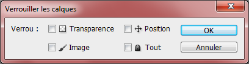
C'est pareil pour les groupes ;) .
Supprimer un calque
Supprimer un calque, c'est encore plus facile que d'en créer un nouveau :) . Voici le moyen le plus rapide : vous sélectionnez le calque que vous désirez supprimer, et vous cliquez sur l'icône Supprimer le calque
en bas de la fenêtre de calques.
Il vous est possible également de faire un clic droit sur le calque en question et de cliquer sur Supprimer ce calque.
Je vais vous en apprendre une bien bonne, j'ai volontairement oublié de vous dire qu'il existait en réalité plusieurs types de calque et que celui dont nous avons parlé tout à l'heure et que l'on a appris à créer est en fait le plus basique mais aussi le plus utilisé de tous :D .
Escroc ! Pfff, comme si on avait besoin de compliquer encore les choses...
Au contraire ! Qui dit différents types de calque dit de nouvelles possibilités et je trouve que c'est plutôt une bonne nouvelle finalement. En effet, si on les nomme tous des "calques" (car ils permettent tous d'afficher un élément graphique dans la zone de travail comme on l'a déjà vu), le fonctionnement de chacun s'avère vraiment différent tout autant que leur utilité, vous allez le voir.
D'une manière générale, je ne suis moi-même pas certain de connaitre absolument tous les types de calque gérés par Photoshop. Mais de toute façon, même si c'était le cas, nous ne les passerions certainement pas tous en revue car, vous le savez, je dois rédiger ce cours de sorte à ce que nous découvrions progressivement, tous ensemble, les bases de Photoshop. Il est donc de mon rôle de m'adapter et d'éviter d'aborder ce qui me semble soit inutile, soit trop complexe. Nous passerons donc en revue les calques qui me semblent être ceux qui correspondent le mieux à ce cours :) .
Calque Image
Le calque Image, c'est celui que nous avons justement créé tout à l'heure. Il prend cette apparence dans la fenêtre de calques :
Ce calque, c'est celui que l'on pourrait appeler le "calque standard" sur Photoshop. Son fonctionnement, vous le connaissez déjà puisque nous l'avons étudié dans la première partie de ce chapitre, vous ne m'en voudrez donc pas si on ne revient pas dessus :) .
Pour créer un calque Image...
A partir du menu : Calque > Nouveau > Calque... > OK
A partir de la fenêtre de calques : Bouton en haut à droite
> Nouveau calque... > OK
A partir de la fenêtre de calques : Bouton « créer un calque »
> OK
Calque d'Arrière-plan
Il s'agit du premier calque que vous trouvez et que vous pouvez paramétrer en ouvrant une nouvelle zone de travail.
Lorsque vous ouvrez une image sur Photoshop, le calque représentant cette image est automatiquement un calque d'arrière-plan. La couleur de l'arrière-plan, vous le savez, est déterminée dans le champs prévu à cet effet au moment de créer une nouvelle zone de travail.
Ce type de calque est caractérisé par un cadenas signifiant que le calque est verrouillé. Il est donc protégé (nous revenons là-dessus un peu plus tard). Je peux simplement vous dire que pour le déverrouiller, il vous faudra faire un double clic sur la vignette du calque puis cliquer sur "Ok". Le calque deviendra de cette manière un calque standard.
En résumé, le calque Arrière-plan, c'est le fond de la zone de travail.
Calque Forme
On parle de "calque de forme" à partir du moment on l'on crée une forme quelconque à l'aide des outils adéquats de la panoplie Photoshop, référence entre autres aux outils appelés Formes et à l'outil Plume, véritables machines à créer que nous aborderons dans la troisième partie de ce cours :D .
Le calque ressemble à cela dans la fenêtre de calques :
A gauche, le carré noir indique la couleur dont est remplie la forme créée. S'il est noir, c'est que la forme est remplie de la couleur noir. Au milieu, il s'agit d'un aperçu de la forme créée à l'intérieur de la zone de travail. La forme est blanche et le reste est gris. Enfin, à droite, c'est le titre de la forme (ici, Forme 1).
Nous aurons le temps de revenir dessus plus tard, c'est le moins que l'on puisse dire. :D
Calque Texte
Le calque de texte prend l'apparence suivante dans Photoshop :
Ce calque apparait à partir du moment où vous tapez du texte dans votre zone de travail. Pour écrire du texte, il faut utiliser l'outil Texte présent dans votre boite à outils. Notez que j'ai consacré un chapitre entier pour les textes tant ils sont importants.
Calque de réglage
Le calque de réglage est un peu différent des autres. Celui-ci permet en effet d'appliquer un effet sur le contenu d'un autre calque.
Le principe est assez simple. En cliquant sur la petite icône
, située en bas de la fenêtre de calques, nous faisons apparaitre une liste constituée de réglages. En choisissant l'un de ces réglages, on crée un nouveau calque (appelé justement "calque de réglage") qui prendra effet sur le calque qui est situé juste en-dessous de celui-ci. On le place toujours au-dessus pour des raisons évoquées plus tôt dans ce chapitre et illustrées via l'exemple des boules colorées.
Bien entendu, la modification engendrée par le calque de réglage au calque situé en-dessous n'est pas définitive. Si l'on supprime le calque de réglage, l'autre calque reprend ses propriétés d'origine.
En quoi consistent ces réglages exactement ? Vais-je en avoir besoin ?
On peut trouver un réglage permettant de modifier la teinte du calque (on engendre alors une transformation de la couleur d'origine du calque), ou encore de corriger son « exposition », terme que l'on définira dans la deuxième partie de ce cours, celle qui porte sur la retouche photographique. Je ne traiterai pas ici de tous les réglages proposés dans cette fenêtre puisque nous en découvrirons une bonne partie au fur et à mesure que nous avancerons dans ce tutoriel.
A titre d'exemple, voici une série de réglages effectués sur un calque. Vous remarquerez alors qu'il y a un calque vierge (nommé "Calque") à la fin de la liste. Il s'agit du calque sur lequel j'ai effectué tous les réglages que l'on retrouve juste au-dessus (s'ils étaient en-dessous du calque dans la liste, les réglages ne seraient pas visibles, je n'ai pas besoin de vous répéter pourquoi).
Calque de remplissage
En plus d'afficher les réglages possibles pour un calque, le bouton
sur lequel nous venons de cliquer peut également servir à créer un calque de remplissage. Le nom de ce bouton parle d'ailleurs de lui-même, il est intitulé "créer un calque de remplissage ou de réglage".
Les calques de remplissage, ce sont les trois premiers de la liste :
Dans la fenêtre de calques, ces calques peuvent prendre cette apparence :
Les calques de remplissage permettent de remplir un calque d'une couleur, d'un motif ou bien d'un dégradé de couleurs et de paramétrer ce remplissage :) .
Au risque de me répéter, je signale qu'il est vraiment essentiel pour tout infographiste qui se respecte de travailler dans de bonnes conditions (le vieux radoteur :p ). J'ai bien peur que de mauvaises conditions de travail puissent avoir des conséquences directes sur le résultat final de vos projets, ce qui serait franchement stupide et même intolérable vous en conviendrez.
Oui, bon, d'accord. Tu vas encore nous embêter avec l'espace de travail, c'est ça ? Je crois qu'on a compris :p !
Non, ça, j'en suis convaincu, c'est rentré ! :D En fait, nous allons rester dans le domaine des calques et toujours dans la même fenêtre d'ailleurs. Il s'agit pourtant cette fois-ci de s'organiser dans la gestion des calques.
J'entends par "gestion des calques" qu'une zone de travail peut être composée de plusieurs milliers de calques (même si, évidemment, à notre niveau, dépasser la centaine serait déjà un exploit du fait du peu de connaissance que l'on a pu acquérir pour le moment) et qu'il fait bon d'apprendre à gérer cette tonne de calque au plus vite dans un souci de lisibilité. Je vais donc préférer jouer la prudence et vous apprendre à correctement gérer tous vos calques tant qu'on est encore en plein dedans. D'ailleurs, vous allez voir que cela peut s'avérer parfois très utile même avec très peu de calques !
Groupe de calques
Dans les cas où l'on se retrouve avec une trop grosse quantité de calques dans un même projet, l'idéal est de les regrouper en plusieurs catégories.
D'une part, la visibilité est meilleure, et d'autre part, c'est plus pratique d'un point de vue ergonomique : on sait parfaitement où se trouve tel calque selon le nom que porte le groupe dans lequel on l'a placé. Par exemple, si je cherche le calque "chien", je le trouverai dans le groupe "animaux". Si je cherche le calque "guitare" (toujours dans la même zone de travail, bien entendu), je le chercherai et le trouverai dans le groupe intitulé "instruments de musique". Vous saisissez ?
Voyons voir cela de plus près. Je vous invite à créer une nouvelle zone de travail si ce n'est pas déjà fait, et je vous laisse le soin de la paramétrer. Ensuite, veuillez créer deux nouveaux calques vides (ne me demandez pas comment on fait sinon je vous étripe !).
Votre fenêtre de calques devrait alors maintenant ressembler à ceci :
Nous allons faire en sorte de rassembler les deux calques standards dans un seul et même groupe. Il va donc tout d'abord falloir créer un nouveau groupe de calques (inutile de vous dire que ce groupe est vide pour le moment). La procédure pour créer un nouveau groupe est quasiment la même que celle pour la création d'un nouveau calque, vous avez plusieurs possibilités :
Cliquez sur l'icône Nouveau groupe
qui se situe en bas de la fenêtre de calques.
Cliquez sur la petite flèche
en haut à droite de la fenêtre de calques pour faire apparaitre une liste dans laquelle vous devrez cliquer sur Nouveau groupe....
Vous pouvez également cliquer sur le bouton Calque dans la barre des menus, puis sur Nouveau et enfin sur Groupe....
Enfin, vous avez la possibilité d'utiliser les raccourcis clavier : CTRL + G ou Command (ou Pomme) + G
Si vous souhaitez renommer un groupe, il vous faudra suivre les mêmes procédures que pour les calques.
Voici l'icône qui représente les dossiers sur Photoshop :
Maintenant, il ne nous reste plus qu'à placer les deux calques dedans et le tour sera joué.
En gros, la procédure sera la suivante : on va d'abord "attraper" les calques pour ensuite les déplacer manuellement afin de les déposer dans le groupe que nous avons créé.
On clique donc d'abord sur l'un des deux calques (peu importe lequel, c'est pareil) pour le sélectionner. On maintient ensuite le clic pour enfin déplacer le curseur de sa souris vers le groupe ciblé (je vous rappelle qu'il s'agit ici du Groupe 1).
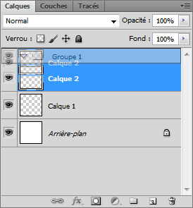
C'est quand le groupe apparait sur fond bleu que le calque est fin prêt à être déposé dedans : vous pouvez lâcher le clic.
Le calque est maintenant dans le groupe. Ce dépôt est caractérisé par le nouvel espacement visible à gauche du calque (le Calque 2 ici).
Pour le deuxième calque (Calque 1), la procédure est la même. On fait ça ainsi de suite selon le nombre de calques que l'on cherche à déplacer dans un groupe...
Et si j'ai plusieurs dizaines de calques à rentrer dans un seul et même groupe, je vais devoir tous les faire un par un ?
Il existe une solution, rassurez-vous. De toute façon, il existe toujours des solutions. ^^
Plutôt que de déplacer tous les calques un par un, il s'agirait en fait de tous les sélectionner en même temps (du moins tous ceux que l'on veut déplacer) puis les "attraper" et les déposer dans le groupe désiré comme on vient de le faire.
On commence par créer une nouvelle zone de travail puis quatre ou cinq calques, et bien entendu un nouveau groupe. On sélectionne ensuite l'un des calques en effectuant un simple clic gauche dessus. Ensuite, on maintient la touche Ctrl (Command/Pomme sur MAC) puis on clic de la même manière sur tous les autres calques que l'on souhaite sélectionner. Cette combinaison permet de conserver les premières sélections :
Ici, les deux calques sont simultanément sélectionnés.
Pour finir, on maintient le clic gauche sur l'un des deux calques en prenant soin de ne plus appuyer sur la touche Ctrl , puis on déplace les deux calques dans le groupe. Parce que les calques étaient tous deux sélectionnés, les deux ont été déplacés dans le groupe.
Bah franchement, même si c'est plus rapide, faut quand même cliquer sur tous les calques, un par un... :-°
Si vous disposez d'une très grande quantité de calques et que même cette technique s'avère trop lente et pas assez adaptée à votre goût pour sélectionner tous vos calques rapidement, vous pouvez utiliser la touche Shift de votre clavier d'ordinateur. Cette touche vous permettra de sélectionner une série de calques en quelques clics. Pour ce faire, il suffit de cliquer sur un calque, puis maintenir la touche et enfin, cliquer sur un autre calque. Tous les calques compris entre l'un et l'autre calque sélectionnés le seront alors également.
Tout d'abord, je clique sur le calque portant le nom Calque 1 pour le sélectionner.
Ensuite, j'appuie sur la touche Shift de mon clavier d'ordinateur et clique simultanément sur le calque portant le nom Calque 7. Tous les calques compris entre Calque 1 et Calque 7 ont été sélectionnés par la même occasion.
Lier les calques
Les avantages que présente la création d'un groupe de calques ne se limitent pas qu'à cela. En effet, lorsqu'on crée un groupe et que l'on y dépose des calques, et bien figurez-vous qu'absolument tous ces calques sont liés à ce groupe. Cela signifie que si vous sélectionnez le groupe dans la fenêtre de calques, vous serez à même de pouvoir le déplacer lui (et donc tout ce qui se trouve à l'intérieur) dans la zone de travail (on va parler du déplacement des calques dans une zone de travail plus loin dans ce cours).
Mais alors voilà, je ne sais pas pour vous, mais personnellement, je trouve cela très contraignant de devoir tout le temps créer un groupe de calques pour déplacer plusieurs calques ensemble. Moi, je profite des groupes pour m'organiser et travailler dans de bonnes conditions et non pas pour pouvoir déplacer tous les calques d'un groupe en même temps. Par exemple, il m'arrive d'avoir besoin de déplacer deux calques ayant chacun leur groupe spécifique. Comment on fait dans ce cas ?
Bah, c'est pas compliqué. Tu fais comme tu l'as dit, c'est-à-dire sélectionner tous les calques que tu souhaites "lier" à l'aide de la touche Ctrl (Command) ou Shift de ton clavier. Pas vrai ?
Cette technique s'avère effectivement rapide et efficace par moment et c'est d'ailleurs la raison pour laquelle que je vous en ai touché un mot dans ce cours. Le problème, c'est que lorsqu'on sélectionne deux calques de cette manière, cette sélection n'est que provisoire. Ils ne sont pas véritablement « liés » l'un avec l'autre : si je clique sur un autre calque, la sélection des deux calques s'annule.
Ce qu'il faudrait donc, c'est trouver un moyen de véritablement lier deux calques, les "attacher" ensemble et ceci qu'ils soient sélectionnés ensemble ou non.
Et bien sûr, si je vous dis tout ça, c'est qu'une fonctionnalité a été conçue et qu'on va évidemment s'en servir ! :D Il s'agit de la petite illustration en bas de la fenêtre de calques intitulée Lier les calques
.
Avant tout, il va falloir déterminer quels calques nous allons chercher à lier ensemble. Et pour cela, nous allons utiliser une technique que l'on maitrise maintenant sur le bout des doigts, à savoir sélectionner ces calques ensemble à l'aide des touches Ctrl (Pomme) ou Shift du clavier.
Une fois les calques sélectionnés tous en même temps, la petite icône
s'active. Il ne nous reste plus qu'à cliquer dessus !
Les petites chaines font leur apparition : les calques sont liés !
Notez qu'une fois les calques désélectionnés, les petites chaines disparaissent (voir ci-dessous). Cela ne signifie pas que vos calques ne sont plus liés.
Masquer un calque
Aviez-vous remarqué le petit œil situé à côté de chaque calque ou groupe de calques dans la fenêtre de calques ? Sauriez-vous me dire de quoi il s'agit :-° ?
Je veux parler de cet œil :
L'œil sur Photoshop permet de masquer ou d'afficher un calque ou groupe de calques dans la zone de travail. C'est-à-dire que si l'œil est visible, le contenu du calque apparait dans la zone de travail. A l'inverse, si l'œil est absent, son calque n'apparait pas dans la zone de travail.
L'œil est apparent pour chaque rond. Ainsi, tous les ronds sont visibles aussi dans la zone de travail.
L'œil à côté du gros rond est absent : ce dernier n'est plus visible dans la zone de travail. Attention : il n'est pas supprimé, il est masqué.
Dupliquer un calque
Il arrive très souvent que l'on ait besoin d'utiliser plusieurs fois un même élément présent dans la zone de travail, autrement dit plusieurs fois un même calque.
Imaginez par exemple que vous soyez en train de créer... mettons, je ne sais pas, un ordinateur portable de toute pièce sur Photoshop (vous n'en êtes pas encore là, mais cela va venir, vous verrez ! :p ) et que vous cherchiez à créer plusieurs dizaines de touches de la même forme et de la même couleur afin de réaliser le clavier de cet ordinateur. Afin d'éviter de les réaliser toutes ces touches unes par unes et surtout histoire de vous simplifier la vie, vous n'en créerez qu'une seule et la dupliquerez autant de fois que nécessaire, c'est-à-dire que vous allez effectuer des copies de cette touche "universelle" !
Théoriquement, nous avons tout d'abord une fenêtre de calque composée de deux calques : l'Arrière-plan et le Calque 1.
La duplication se fera sur le Calque 1. Nous espérons donc créer une copie de ce calque. Et, à vrai dire, ce n'est vraiment pas compliqué... il suffit juste de faire un clic droit dessus et cliquer sur le lien Dupliquer le calque... ou bien de cliquer une fois dessus pour le sélectionner (faire apparaitre un fond bleu) puis cliquer sur la petite flèche
en haut à droite de la fenêtre de calques pour faire apparaitre une liste dans laquelle vous aurez la possibilité de cliquer sur Dupliquer le calque....
Quand le calque est dupliqué, sa copie prend le même nom que l'originale mais suivi de la mention copie.
Le raccourci clavier associé à la duplication de calque est : CTRL + J pour Windows, et Command (ou Pomme) + J pour Mac.
Je crois franchement que c'est l'un des chapitres les plus théoriques de ce cours. Je ne dis pas que vous n'en mangerez plus (et puis quoi encore ? :p ), mais sachez en tout cas que je suis ravi de savoir que vous avez tenu jusqu'au bout.
Il faut absolument que vous compreniez que la notion de calques sur Photoshop est primordiale. Si c'est encore flou et que vous n'êtes pas certain de savoir comment ils fonctionnent, je dois alors vous demander de relire ce chapitre jusqu'à que vous soyez sûrs de pouvoir continuer la lecture de ce tutoriel. Car oui, la lecture deviendra bien plus complexe si vous n'êtes pas au point avec les calques.
Bonne nouvelle ! Dans le chapitre suivant, vous allez enfin pratiquer. Et croyez-moi sur parole, vous allez réussir à vous surprendre :D !
Vous venez d'acquérir la base des bases de Photoshop. Vous connaissez désormais l'espace de travail, vous savez manipuler une zone de travail (qu'il s'agisse d'en créer une nouvelle ou de l'enregistrer, vous savez faire) et, pour finir, vous avez la notion de calque, ce qui est primordial pour la suite du cours (et pour toute personne se vantant de faire de l'infographie :-° ).
Nous passons désormais à une étape qui vous semblera peut-être beaucoup moins théorique et sans doute plus passionnante que les précédentes dans la mesure où vous serez à même de créer vos premiers effets spéciaux (champagne !).
Eh oui, les effets spéciaux, ce sont l'objet de ce chapitre :D .
Jouer avec la transparence grâce aux modes de fusion
Allez, on rentre maintenant dans le vif du sujet et le moins que l'on puisse dire, c'est qu'on commence fort avec les célèbres modes de fusion !
C'est quoi ce truc, encore...
Il s'agit d'une énième fonctionnalité que nous met à disposition Photoshop et qui a pour vertu de créer des effets spéciaux franchement terribles :D . Techniquement parlant, cela consiste à jouer avec la transparence des calques pour y transformer leurs couleurs selon la spécificité de chaque mode. Un programme très intéressant nous attend...
Seule la partie supérieure de la fenêtre de calques nous intéressera pour le moment :
Nous pouvons décomposer cette image en trois groupes de fonctionnalités :
En haut à gauche se situe la liste déroulante avec tous les modes de fusions. On s'y intéresse incessamment sous peu ;) .
Juste en dessous, ce sont les différents moyens mis à notre disposition pour verrouiller un calque. Je reviens dessus juste après les modes de fusion.
Enfin, à droite, il y a ce que l'on appelle l'opacité et le fond. Cela me permettra de conclure cette sous-partie pour passer à la suite du chapitre.
Tout est OK ? Alors continuons :) .
Les modes de fusion
Comme convenu, nous allons commencer ce chapitre avec les modes de fusions. Avant tout, veuillez ouvrir une nouvelle zone de travail avec les paramètres de votre choix. J'aimerais que vous preniez l'habitude d'ouvrir à chaque fois une nouvelle zone de travail et que vous y créiez un nouveau calque standard vide car il se peut que certaines fonctionnalités du logiciel ne soient opérationnelles que si une zone de travail est existante, accompagnée d'au moins un calque Image. En prenant cette habitude, vous m'éviterez de me répéter tout le temps et on gagnera un peu de temps et d'énergie. :p
Maintenant que l'on peut vraiment commencer, je vous invite à cliquer sur la petite flèche (ou sur "Normal") afin de dérouler et afficher la liste dans laquelle se trouvent les fameux modes de fusion.
Sans même comprendre tout ce charabia, on peut facilement constater du choix très large qui nous est offert. Mais alors, la vraie question, c'est "qu'est-ce que c'est, un mode de fusion ?" C'est vrai, c'est tout de même curieux comme termes, vous ne trouvez pas ?
Fonctionnement
Un mode de fusion est une des nombreuses fonctionnalités du logiciel Photoshop; celle-ci est directement liée aux calques, c'est d'ailleurs pour cela qu'on la retrouve dans la fenêtre de calques.
Les modes de fusion ont été conçus afin d’améliorer la créativité de vos images et votre productivité. Ils sont automatiquement générés par Photoshop qui se charge alors de créer un jeu de transparence entre au moins deux calques. En d'autres mots, cela signifie que l'on va appliquer l'un des modes (de fusion) à l'un des calques de la zone de travail pour qu'il fusionne avec celui qui se trouve derrière lui. En reformulant, cela consiste à faire fusionner deux calques en appliquant à l'un d'eux ce que l'on appelle un mode de fusion.
Par exemple, si j'applique le mode de fusion appelé Incrustation (vous le trouverez dans la liste des modes de fusion) à un premier calque que j'appelle Calque 1, celui-ci fusionnera alors avec le second calque (appelons-le Calque 2), c'est-à-dire qu'un jeu de transparence va se créer en fonction des propriétés du mode de fusion sélectionné. En l'occurrence, la propriété du mode Incrustation permet de "remplacer" les pixels sombres d'une image par des pixels encore plus sombres et les pixels clairs par des pixels plus clairs. On peut donc dire que ce mode renforce le contraste de couleurs de l'image.
Pour tout vous dire, je n'ai pas prévu de traiter tous les modes de fusion. A mon sens, il ne serait pas raisonnable d'énumérer chaque mode de fusion en les accompagnant tous d'un exemple car cela serait trop lourd et pas forcément très ludique. En effet, il y a tellement d'exemples pour lesquels on peut avoir recours aux modes de fusion que j'arriverais à vous pondre une page de plusieurs kilomètres de long et évidemment, je ne m'y risquerai pas.
J'ai donc préféré opter pour la simplicité, c'est-à-dire que l'on va simplement passer en revue un ou deux modes de fusion parmi ceux qui sont les plus parlants à mon goût pour que vous puissiez voir ce qu'ils ont dans le ventre mais aussi et surtout pour que vous compreniez "comment ceux-là fonctionnent" et comment les modes de fusion d'une manière générale fonctionnent via des exemples précis et relativement concis.
Exemples
Pour ce premier exemple, je vous propose d'utiliser le mode de fusion que l'on vient de définir, à savoir l'Incrustation. Comme je vous le disais, il nous faut forcément travailler avec deux images pour que l'une fusionne avec l'autre. Ainsi, on peut travailler avec :
Deux images totalement différentes. Par exemple, un coucher de soleil et un portrait de Jimmy Hendrix.
Deux images identiques : l'originale et sa copie (dupliquée).
Un calque vide et une image.C'est un cas un peu particulier qui nécessite l'utilisation d'outils que nous aborderons plus loin dans ce cours. Nous reviendrons alors dessus le moment opportun.
Nous allons commencer par travailler avec une seule image que nous allons alors dupliquer. Cette image, c'est celle-ci :
Cliquez sur l'image pour l'agrandir
N'hésitez pas à travailler avec moi ! Télécharger l'image Fleuve.png Pour télécharger l'image, faites un clic droit puis "Enregistrer sous"
Pour l'ouvrir sur Photoshop :
Soit vous copiez l'image, puis vous suivez la procédure de création d'une nouvelle zone de travail (Fichier > Nouveau...). Si vous avez bien copié l'image, la taille de la zone de travail sera déjà paramétrée. Si non, essayez de copier à nouveau l'image, puis vérifiez. Une fois la zone de travail créée, faites Édition > Coller. L'image viendra se placer au centre de la ZDT, en tant que nouveau calque.
Soit vous ouvrez directement l'image en tant que nouveau document en cliquant sur Fichier > Ouvrir. De cette manière, l'image ouverte fera office de calque d'Arrière-plan. (Vous pouvez vérifier la fenêtre de calques) Il vous faudra alors le déverrouiller. Un double-clic sur la vignette du calque fera l'affaire.
Quel que soit votre choix, vous êtes censé avoir au moins un calque représentant la photo ci-dessus, et éventuellement un deuxième calque de type Arrière-plan vide (ce qui est mon cas). Je vous demanderais de bien vouloir dupliquer le calque de l'image dans un premier temps afin que l'on se retrouve au final avec deux images : l'originale et sa copie.
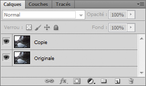
Veillez à ce que la copie soit située au-dessus de l'originale, cela me facilitera grandement la tâche pour les explications.
Le tout maintenant, c'est d'appliquer le mode de fusion Incrustation au calque Copie pour le faire fusionner avec le calque Originale et générer un nouveau jeu de transparence, et par extension un jeu de couleur grâce au mode. Ainsi, il va falloir sélectionner le calque Copie puis faire dérouler la liste des modes de fusion pour finalement cliquer sur Incrustation.
Une fois que le mode est défini, on peut apercevoir un changement instantané au sein de notre zone de travail...
Cliquez sur l'image pour l'agrandir
Nous le disions, ce mode de fusion tel qu'il est défini obscurcit les couleurs sombres et éclaircit les couleurs vives. Ainsi, l'image subit des changements chromatiques (cf. : relatifs à la couleur) lui donnant un nouvel aspect.
La différence est encore plus parlante si l'on compare l'image avant et après mode (le fameux avant/après ^^ ) :
Cliquez sur l'image pour l'agrandir
Afin d’étoffer un peu cette partie sur les modes de fusion, je vais vous proposer une petite démonstration. Pour cela, j'utiliserai une image en guise d'exemple sur laquelle je vais appliquer quelques modes de fusion afin que vous puissiez constater des effets que produisent chacun d'entre-eux.
L'image en question, la voici :
Cliquez sur l'image pour l'agrandir
J'appliquerai une couche de peinture rouge sur l'ensemble du paysage afin de constater de l'effet que le monde de fusion produira.
Et quand bien même ce serait possible, je ne souhaite pas m'y risquer. Je vous propose donc une série d'exemples avec la définition Adobe à côté pour ceux que ça intéressaient éventuellement. Cliquez sur les images pour les agrandir.
Obscurcir Analyse les informations chromatiques de chaque couche et sélectionne la couleur de base ou de fusion (la plus foncée) comme couleur finale. Les pixels plus clairs que la couleur de fusion sont remplacés, et les pixels plus foncés demeurent intacts.
Teinte Crée une couleur finale ayant la luminance et la saturation de la couleur de base et la teinte de la couleur de fusion.
Soustraction Analyse les informations chromatiques de chaque couche et soustrait la couleur de fusion de la couleur de base. Dans les images 8 et 16 bits, les valeurs négatives obtenues sont écrêtées à zéro.
Saturation Crée une couleur finale ayant la luminance et la teinte de la couleur de base et la saturation de la couleur de fusion. Ce mode ne produit aucun effet sur une zone non saturée (avec une valeur de gris égale à 0).
Lumière tamisée Assombrit ou éclaircit les couleurs, selon la couleur de fusion. Cet effet équivaut à projeter une lumière de projecteur diffuse sur l’image. Si la couleur de fusion (source lumineuse) contient moins de 50 % de gris, l’image est éclaircie comme si elle était moins dense. Si la couleur de fusion contient plus de 50 % de gris, l’image est obscurcie, comme si elle était plus dense. Lorsque vous dessinez avec un noir ou un blanc pur, vous obtenez une zone nettement plus foncée ou plus claire, mais vous n’obtenez ni un noir ni un blanc pur.
Incrustation Multiplie ou superpose les couleurs, selon la couleur de base. Les motifs ou les couleurs recouvrent les pixels existants, tout en préservant les tons clairs et les tons foncés de la couleur de base. La couleur de base n’est pas remplacée, mais mélangée à la couleur de fusion pour reproduire les tons clairs ou foncés de la couleur d’origine.
Éclaircir Analyse les informations chromatiques de chaque couche et sélectionne la couleur de base ou de fusion (la plus claire) comme couleur finale. Les pixels plus foncés que la couleur de fusion sont remplacés, et les pixels plus clairs demeurent intacts.
Différence Analyse les informations chromatiques de chaque couche et soustrait la couleur de base de la couleur de fusion, ou inversement, en fonction de la couleur la plus lumineuse. La fusion avec du blanc inverse les valeurs de la couleur de base ; la fusion avec du noir ne produit aucun effet.
Densité couleur - Analyse les informations chromatiques de chaque couche et éclaircit la couleur de base pour reproduire la couleur de fusion par réduction du contraste entre les deux. La fusion avec du noir ne produit aucun effet.
Couleur plus foncée Compare la somme des valeurs des couches des couleurs de fusion et de base et affiche la couleur présentant la valeur la plus faible. Le mode Couleur plus foncée ne génère pas une troisième couleur, issue de la fusion Obscurcir, mais choisit les valeurs de couche les plus faibles entre la couleur de base et la couleur de fusion afin de créer la couleur finale.
Couleur plus claire Compare la somme des valeurs des couches des couleurs de fusion et de base et affiche la couleur présentant la valeur la plus élevée. Le mode Couleur plus claire ne génère pas une troisième couleur, issue de la fusion Éclaircir, mais choisit les valeurs de couche les plus élevées entre la couleur de base et la couleur de fusion afin de créer la couleur finale.
Couleur Crée une couleur finale ayant la luminance de la couleur de base et la teinte et la saturation de la couleur de fusion. Ce mode préserve les niveaux de gris de l’image et est pratique pour colorer des images monochromes ou pour teinter des images en couleurs.
Allez, pour le plaisir des yeux, j'aimerais vous montrer l'un de mes effets préférés. Je ne vais pas chercher midi à quatorze heures : je vous épargne mes longs monologues longues et fatigantes explications :
Pour cet exemple, je ne vais utiliser qu'un seul calque que je vais dupliquer. Ce sera cette image-ci :
Je vais dans un premier temps dupliquer cette image puis, grâce aux pouvoirs magiques qui me sont conférés, je vais rendre cette duplication totalement floue.
Je sais, ça pique un peu les yeux :D .
Je place la copie floue en-dessous de l'originale dans la fenêtre de calques puis j'applique l'excellent mode de fusion appelé Incrustation à cette dernière afin de "l'insérer" dans l'image floue.
Le résultat ?
Merveilleux ! :D N'hésitez pas à comparer l'originale avec celle-ci...
J'ai failli vous dire qu'on en avait terminé avec les modes de fusion. Que nenni :p ! On n'a fait ici qu'introduire les modes de fusion pour que vous puissiez comprendre leur fonctionnement avec quelques cas intéressants. Dans la suite du cours, nous allons les utiliser de manière concrète, sur des exemples qui en valent véritablement la peine. Nous apprendrons par ailleurs à exploiter les modes de fusion de manière précise grâce au pinceau. Mais je vous en ai déjà trop dit, alors on passe vite à la suite avant que je ne gaffe encore !
Opacité et Fond
On continue notre découverte des fonctionnalités de la partie supérieure de la fenêtre des calques et, comme convenu, nous allons nous intéresser à la partie droite de la fenêtre.
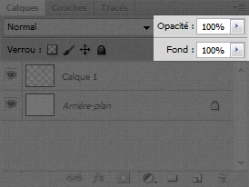
Il s'agit de deux fonctionnalités très pratiques que vous serez continuellement amenés à utiliser au cours de vos projets.
L'opacité et le fond sur Photoshop sont deux réglages liés à la transparence des calques. Au premier sens du terme, on dit qu'un objet est transparent quand il se laisse traverser par la lumière. En d'autres mots, un objet est transparent lorsque l'on peut voir à travers lui.
Sur Photoshop, modifier la valeur de l'opacité (qui se lit en %) revient à modifier la transparence de l'intégralité du calque. Plus la valeur est basse, moins le calque est visible et plus on peut voir à travers lui, comme en témoigne l'exemple ci-dessous.
Ce qu'il faut bien retenir, c'est que l'opacité engendre une modification de la transparence sur tout le calque. Pourquoi j'insiste là-dessus ? Parce qu'à l'inverse, la fonctionnalité "fond" engendre une modification de la transparence sur le fond du calque, sans toucher à ce que l'on appelle les styles de calque que nous lui aurons appliqués.
Un style de calque ? C'est quoi, ce truc ? o_O
Ce que je peux vous dire pour l'instant, c'est qu'il s'agit à nouveau d'effets spéciaux et, encore une fois, qui sont automatiquement gérés par Photoshop. Mais je ne souhaite pas m'étaler sur le sujet car on va voir ce que c'est d'ici quelques minutes, ce sont les deux sous-parties suivantes :) .
Pour l'heure, notez simplement que l'opacité engendre une modification de la transparence sur l'intégralité du calque, tandis que le fond modifie la transparence du calque sans affecter la transparence des effets spéciaux que nous lui aurons ajoutés grâce aux styles de calque (on dit alors qu'on a modifié la transparence du fond du calque).
En résumé :
Modifier le % de l'opacité, c'est modifier la transparence de l'intégralité du calque.
Modifier le % du fond, c'est modifier la transparence du calque sans affecter les styles de calque que nous lui avons appliqués (les styles de calque, c'est ce que nous nous apprêtons à étudier).
Exemple
Dans cet exemple, nous allons modifier l'opacité de l'un des calques pour le faire disparaitre de l'image. Voici le contenu de la zone de travail :
Cliquez sur l'image pour l'agrandir
Le Calque 1 n'est autre que ce qui se trouve en haut à droite de l'image, c'est-à-dire le panneau lumineux "Hôtel" et ses quelques décorations. Le Calque 2 représente tout le reste, à savoir la cathédrale et le ciel de nuit.
Pour faire disparaître l'enseigne "Hôtel", on va tout bonnement modifier l'opacité de son calque (Calque 1).
Modification de l'opacité : 30% Cliquez sur l'image pour l'agrandir
Modification de l'opacité : 0% Cliquez sur l'image pour l'agrandir
Vous le voyez, le Calque 1 a complètement disparu sur ce dernier exemple. On peut toutefois dire qu'il est toujours «là» car le calque n'a pas été supprimé. Il est juste totalement transparent, rendant visible le ciel qui se trouve derrière.
En introduction, je vous avais promis vos premiers effets spéciaux. Si les modes de fusions sont de bons instruments pour en réaliser, vous n'avez rien vu et n'êtes pas au bout de vos surprises avec les styles de calque. Derrière ce drôle de nom se cachent de puissantes fonctionnalités que vous serez très, très souvent amenés à utiliser pour vos prochains projets. Qui plus est, ces effets sont totalement paramétrables, cela les rend faciles et agréables à utiliser.
Style de calque, kézako ?
Un style de calque est une option que l'on ajoute aux calques de notre zone de travail pour que Photoshop génère des effets. Ces effets ne sont pas particulièrement extraordinaires (au sens propre et figuré du terme), il est question par exemple d'ombrage, de contour ou entre autres de dégradés de couleur. On peut dire que l'on va donner du "style" au calque.
Avant de créer une nouvelle zone de travail, veuillez télécharger le fichier Photoshop ci-dessous. Il s'agit du premier document sur lequel nous allons travailler en attendant de télécharger d'autres travaux tout au long de cette partie et de celles qui suivent. Télécharger le fichier source Ex_OmbreP.psd
Une fois le fichier téléchargé, veuillez l'ouvrir sur Photoshop.
Puis, veuillez cliquer une fois sur le Calque 1 afin de le sélectionner et ensuite cliquer sur l'icône des options de fusion
que vous trouverez en bas de la fenêtre des calques.
Une nouvelle liste apparait, il s'agit sans surprise des fameux styles de calque dont je vous parle depuis tout à l'heure. Nous allons ouvrir et découvrir la fenêtre principale à partir de laquelle nous allons paramétrer les différents styles de calque en cliquant sur "Options de fusion..." tout en haut de la liste.
C'est donc par le biais de cette fenêtre que nous définirons quelles options ajouter aux calques et que nous les configurerons pour leur donner du style (à prononcer avec l'accent anglais :lol: ).
Les styles, justement, se situent dans la partie gauche de la fenêtre, c'est-à-dire la zone recouverte de vert sur l'image ci-dessous. La zone rouge, quant à elle, recouvre tous les paramètres relatifs au style sélectionné qui vont nous servir à le configurer.
En ouvrant cette nouvelle fenêtre, vous tombez directement sur la partie permettant de paramétrer "les options de fusion"...
... Hein ? Attends une minute, je suis carrément perdu, là. C'est quoi une option de fusion ? C'est pas ce que l'on vient de voir, là, avec le Big Ben ?
Et BIM ! Dans le panneau :p . Il ne faut pas confondre les modes de fusion et les options de fusion.
Un mode de fusion, c'est ce que nous venons tout juste de voir ensemble, il s'agit de la fameuse liste déroulante et des modes que nous avons appliqués aux images telles que le Big Ben et le panneau de signalisation, vous savez.
Les options de fusion sont des paramètres liés à tous les styles de calque de la liste de gauche. Il s'agit de l'interface présentée ci-dessus. Celle-ci permet d'adapter la façon dont les styles de calque (que nous allons étudier en profondeur dans quelques secondes) et les modes de fusion interagissent avec les calques. En d'autres termes, on utilise cette première interface pour paramétrer l'ensemble des styles de calque avant de les paramétrer individuellement.
Par exemple, on va pouvoir se servir de cette première interface pour définir un mode de fusion qui prendra effet sur tous les styles de calque présentés dans la cadre vert, à gauche de la fenêtre ci-dessus. Pour le bon déroulement de ce chapitre, nous ne toucherons pas aux paramètres des options afin de se concentrer sur les styles de calque.
Ombre portée
Pour inaugurer cette longue et périlleuse partie, nous allons aborder le premier style de calque de la liste, il est appelé Ombre portée. Alors, de quoi s'agit-il ?
Comme son nom l'indique, il est question d'ajouter une ombre au calque sélectionné. Il ne fait aucun doute que vous savez ce qu'est une ombre (tout du moins j'ose l'espérer - pensez à Lucky Luke si ce n'est pas le cas), je vous épargne la définition type d'une ombre.
Veuillez cliquer sur l'option "Ombre portée". Attention, il ne faut pas cliquer sur la petite case blanche qui se situe à côté du nom de l'option mais bel et bien sur le texte "Ombre portée". Cliquer sur la case blanche, c'est sélectionner l'option et la rendre opérationnelle avec ses paramètres par défaut. Or, cliquer sur le texte "Ombre portée", c'est afficher et nous laisser la possibilité de modifier ses paramètres, ce que nous nous apprêtons justement à faire.
Comme vous pouvez le voir, il y a un certain nombre de paramètres disponibles et j'ai longtemps hésité pour déterminer comment j'allais vous les présenter. L'idée, ce serait donc de les étudier un par un, de haut en bas et de gauche à droite, et sous forme de tableau, comme je l'ai fait avec la fenêtre de création d'une nouvelle zone de travail :) .
Paramètre
Valeur
Mode de fusion
Il est de retour ! Le mode de fusion peut aussi fonctionner pour faire fusionner un style de calque avec un calque de la zone de travail. Vous pouvez donc définir un mode de fusion à l'ombre et ainsi, un jeu de transparence s'effectuera entre elle et le calque de second plan (celui qui se trouve derrière le calque sélectionné et auquel on a ajouté l'ombre portée justement).
Couleur de l'ombre
Comme son nom l'indique, ce paramètre permet de donner une couleur à l'ombre. Un peu hors du commun, je dois l'admettre, mais en même temps on travaille sur Photoshop :-° . Pour choisir une couleur, il suffit de cliquer sur le petit rectangle noir qui se situe juste à côté de la liste déroulante des modes de fusion et ainsi vous ouvrirez le sélecteur de couleurs. On revient là-dessus un peu plus loin dans le cours.
Opacité
L'opacité permet de définir la transparence de l'ombre. Moins il y aura d'opacité, moins l'ombre sera visible. C'est une notion déjà abordée, j'espère que c'est rentré :) .
Angle
Ce paramètre permet de modifier l'angle de l'ombre portée, c'est-à-dire de lui définir une position dans la zone de travail en fonction du calque.
Deux possibilités : soit je tape directement la valeur de l'angle de l'ombre dans la case blanche (ici : -45), soit je déplace manuellement le rayon dans le cercle, à l'aide de ma souris. Ce rayon qui indique très précisément où se situe l'ombre par rapport au calque. Vous le savez, pour créer une ombre, il faut forcément une source de lumière. Dans cet exemple, le rayon est placé en bas à droite (approximativement) ; on imagine alors que c'est ici d'où provient la source de lumière, et qu'elle se dirige dans la direction que prend le rayon. L'ombre se situera donc en haut à gauche du calque.
En effet, comme on peut le constater, l'ombre se retrouve en haut à gauche, à l'opposé du rayon dans les paramètres de l'ombre portée (et donc de notre position et de la direction que prend notre regard).
Utiliser l'éclairage global
En cochant cette option, les paramètres des ombres portées de tous les calques prendront le même angle. En d'autres termes, si vous définissez un angle à l'ombre portée d'un calque (appelé Calque 1) puis que vous modifiez l'angle de l'ombre portée d'un autre calque (appelé Calque 2) tout en laissant l'option d'éclairage global cochée, alors l'angle du Calque 1 prendra la même valeur que celui du Calque 2.
Distance
Ce paramètre permet de choisir la distance qui sépare l'ombre du calque. Plus la valeur est importante, plus la distance le sera.
Pour déplacer l'ombre manuellement (sans passer par des valeurs écrites), il vous faut déplacer la fenêtre des styles de calque sur le côté pour avoir la zone de travail en champs de vision puis cliquer sur cette dernière et déplacer votre curseur pour que l'ombre le suive.
Grossi
Avec ce paramètre, il est possible de donner plus d'épaisseur à l'ombre. Plus la valeur définie est importante, plus l'ombre s'épaissit.
Taille
Avec celui-ci, vous définissez une taille à l'ombre. A l'inverse du paramètre "Grossi", plus la valeur de la taille est importante, plus l'ombre s'étend et perd un peu de son opacité sur les bords
Nous nous contenterons des paramètres de la catégorie "Structure" pour ce style de calque, comme convenu. On laisse donc le reste de côté ;) .
L'essai
Il est temps de mettre en pratique ce que l'on vient de voir avec notre premier essai. Il y en aura un pour chacune des options ;) .
Avant de paramétrer l'ombre portée, veuillez sélectionner le calque nommé Calque 1 dans votre fenêtre de calques. Nous le sélectionnons afin de travailler dessus. Je rappelle aux étourdis que nous allons effectuer des modifications sur ce document-ci :
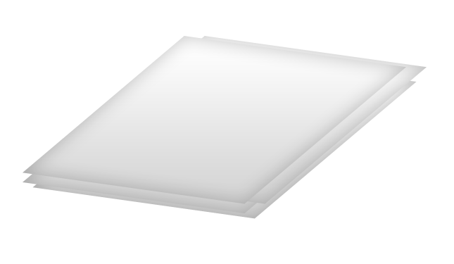
Voici ensuite les instructions, je vais vous demander de reprendre chacun de ces paramètres et de les insérer dans votre fenêtre pour l'option Ombre Portée :) .
Mode de fusion : Produit
Couleur : Par défaut (noir)
Opacité : 50 %
Utiliser l'éclairage global : non (à décocher avant d'indiquer des valeurs aux paramètres suivants)
Angle : 105 °
Distance : 3 px
Grossi : 0 %
Taille : 8 px
Veuillez valider les paramètres donnés dans les instructions ci-dessus. Voici le résultat que nous obtenons :
Nous sommes donc parvenus à créer une ombre correcte entre la première et la deuxième feuille, si bien que l'on a l'impression que la feuille ombrée survole un peu les autres. Pour garder une certaine uniformité, l'idée à présent serait de rajouter une ombre à chacune des feuilles et donc, à tous les calques visibles dans la fenêtre de calques (hormis l'arrière-plan évidemment).
Il faudrait donc logiquement retaper chacune des valeurs de chacun des paramètres pour chacun des calques. Autant de manœuvres lourdes que Photoshop va nous éviter, il existe en effet un moyen bien plus efficace et beaucoup moins fatiguant pour ce genre d'opérations répétitives : nous allons copier les paramètres du Calque 1 et les coller dans tous les autres calques de la fenêtre. Ainsi, nous transférerons toutes les propriétés du Calque 1 vers ces autres calques. C'est à la fois un gain de temps et d'énergie et vous n'imaginez pas à quel point je suis ravi que cela existe ! :D
Pour copier les paramètres du style de calque "Ombre portée" précédemment ajoutés au Calque 1, il faut faire un clic droit sur ce dernier puis cliquer sur le bouton Copier le style de calque. Enfin, pour les coller, il faut effectuer un clic droit sur chacun des autres calques et cliquer sur le lien Coller le style de calque. Vous remarquerez alors que l'ombre portée sera automatiquement paramétrée sur le calque sélectionné. Et si vous avez bien suivi, vous devriez obtenir l'image suivante :
Elles sont pas belles, nos feuilles de papier ? Grâce aux ombres portées, nous avons réalisé un effet de profondeur et avons donné du relief au paquet de feuilles, ce qui a également permis de styliser chaque feuille et de lui donner un côté "design". C'est plutôt basique mais franchement, je trouve ça très efficace. J'adore ! :D
Ombre interne
Avant de commencer la lecture, assurez-vous d'avoir téléchargé le nouveau document correspondant à ce style de calque. Télécharger le fichier source Ex_OmbreI.psd
Après l'ombre portée, je vous présente l'ombre interne. Contrairement à l'ombre portée qui permettait de créer une ombre externe au calque sélectionné, l'ombre interne crée une ombre non pas à l'extérieur mais à l'intérieur du calque.
Une ombre à l'intérieur du calque ? Je te demande pardon ? o_O
Cela peut paraitre bizarre peut-être, mais croyez-moi, c'est une option très intéressante et même surprenante dans la mesure où, si l'ombre portée donne cet effet de profondeur que l'on a connu avec le paquet de feuilles, l'ombre interne, quant à elle, va permettre l'apparition d'un contraste sur les bords du calque et ainsi va nous permettre donner du relief au calque.
Comment ça vous n'avez rien compris ? :-° Allons, voyons voir cela de plus près. Veuillez sélectionner l'option "Ombre interne" dans la liste (en prenant soin, une nouvelle fois, de bien cliquer sur "ombre interne" et pas sur la petite case blanche ^^ ).
Première impression : les paramètres ressemblent étrangement à ceux de l'ombre portée. Quoi que, je dis étrangement, mais je vous avais plus ou moins prévenus que la catégorie "Structure" recensait quasiment les mêmes paramètres à chaque fois. J'ai donc pris la décision de ne pas vous refaire un tableau comme je l'ai fait pour l'ombre portée car cela alourdirait le tutoriel pour pas grand chose de nouveau au final.
On peut noter une seule différence remarquable qui vient du paramètre "Maigri". Pour l'ombre portée, le nom de ce paramètre était "Grossi" : il fallait en effet grossir l'ombre. Pour l'ombre interne, il s'agit de la faire grossir "à l'intérieur du calque", donc à l'inverse de la faire maigrir (c'est tordu, je l'admets...). Du coup, on va devoir indiquer une valeur en % : si la valeur est égale à 100%, alors l'ombre interne occupera 100% du calque. Vous me suivez ?
L'essai
L'image sur laquelle nous travaillerons est la suivante. Je vous rappelle que l'on va régulièrement effectuer des essais chaque fois qu'une nouvelle notion sera abordée :) .
Nous effectuerons cet essai sur le calque nommé Calque 4 dans la zone de travail. Pareil, je vous donne les valeurs à indiquer dans les champs prévus à cet effet :
Mode de fusion : Produit
Couleur : Par défaut (noir)
Opacité : 27 %
Angle : 120 °
Utiliser l'éclairage global : oui (à cocher)
Distance : 0 px
Maigri : 20 %
Taille : 90 px
En paramétrant le style de calque avec ces valeurs, le résultat sera le suivant :
Je vous le disais, l'ombre interne peut servir à donner du relief au calque. Il s'agit d'un effet plutôt courant et grâce auquel on peut rendre une création plus sophistiquée qu'elle ne l'était déjà. La preuve, s'il on applique une ombre interne à tous les ronds du document Photoshop que je vous ai fourni, on obtient une image tout de même plus élaborée :
Vous savez, on pourrait même accentuer ce relief en modifiant par exemple l'angle, la distance ainsi que l'opacité de l'ombre interne. Voyez plutôt :-° :
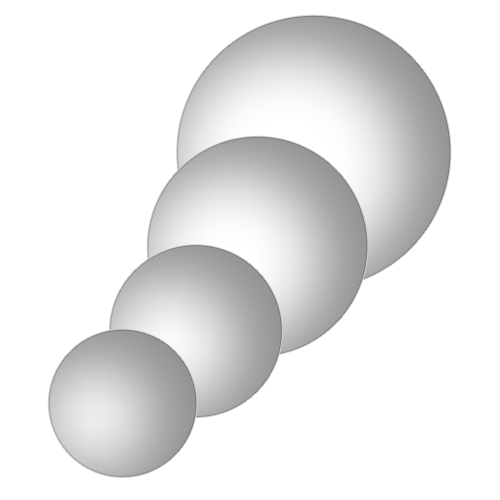
Pas mal, n'est-ce pas ? Je vous laisse deviner tout seuls quelles valeurs j'ai pu indiquer pour paramétrer l'ombre interne, je suis sûr que vous y arriverez. Au pire, n'hésitez pas à demander de l'aide sur le forum Graphisme du Site du Zéro. :)
Lueur externe
Avant de commencer la lecture, assurez-vous d'avoir téléchargé le document correspondant à ce style de calque. Télécharger le fichier source Ex_LueurE.psd
On en a terminé avec les ombres, il est temps de s'intéresser aux lueurs en commençant par la lueur externe.
Comme son nom l'indique, ce style de calque permet de créer une lueur, c'est-à-dire des rayons lumineux que l'on dit "externes" car ils débutent à partir des contours du calque vers l'extérieur, à l'image de l'ombre portée quand sa distance est paramétrée à 0 px. Je tiens à ce que vous ne confondiez pas la lueur externe et l'ombre portée. Je répète que c'est une lueur, semblable à des rayons de lumière qui s'échappent des contours du calque.
Certains paramètres de styles de calque reviennent régulièrement, ne vous étonnez pas si je ne reviens pas dessus.
Paramètre
Valeur
Mode de fusion
Déjà vu.
Opacité
Déjà vu
Bruit
Si je vous parle d'effet "neige", savez-vous ce que cela signifie ? Vous savez, ce sont ces petits pointillés que l'on retrouve notamment lorsque l'on ne capte plus une chaine de télévision. Et bien, on peut aussi nommer cet effet "neige" du bruit, et modifier la valeur de ce paramètre va alors avoir pour conséquence de brouiller la lueur.
Couleur
Déjà vu. Il faut cliquer sur le petit carré noir pour faire apparaitre une fenêtre à partir de laquelle vous pourrez modifier la couleur.
Technique
Ce paramètre détermine la précision de votre lueur. Si vous choisissez l'option "précise", alors la lueur sera moins détendue, plus compacte, plus forte et plus... précise :-° . Si vous aviez laissé l'option "plus tamisée", votre lueur aurait été plus approximative, plus floue, plus détendue... tamisée quoi.
Grossi
Déjà vu.
Taille
Déjà vu.
L'essai
C'est parti pour une nouvelle manipulation. Cette fois-ci, vous avez téléchargé cette image :
Je vous invite à rentrer les informations qui suivent sur le Calque 2.
Mode de fusion : Normal
Opacité : 64 %
Bruit : 3 %
Couleur : #FF0000
Ce code de couleur est à insérer au niveau de l'encadrement rouge sur cette image (sans le #) :
Grossi : 2 %
Taille : 13 px
Veuillez laisser les autres paramètres tels que vous les avez trouvés (par défaut). Vous devriez obtenir ceci :
Lueur interne
Avant de commencer la lecture, assurez-vous d'avoir téléchargé le document correspondant à ce style de calque. Télécharger le fichier source Ex_LueurI.psd
La lueur interne fonctionne de la même manière que l'ombre interne : c'est une lueur qui prend forme à l'intérieur du calque.
Vous connaissez, là aussi, la plupart des paramètres de cette option. La nouveauté en revanche, c'est qu'il est possible de choisir la source de départ de la lueur, chose qui n'était pas permise avec l'ombre interne (en même temps, une ombre reste une ombre, il s'agit d'une silhouette ni plus ni moins) :
.
Choisir la source de départ de la lueur, c'est définir à quel endroit elle va débuter.
Soit votre lueur part du contour de votre calque (comme la lueur externe et les deux types d'ombres).
Soit votre lueur part du centre de votre calque (et c'est la nouveauté).
Un exemple ne vous ferait pas de mal, je crois :-° ...
L'essai
Nous effectuerons deux essais, chacun présentant le résultat selon les deux sources paramétrables. L'image sur laquelle nous travaillerons est la suivante :
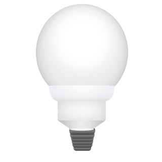
Nous travaillerons sur le calque nommé Calque 2.
Dans le premier exemple, la source de la lueur interne sera le contour du calque, comme l'indiquent les instructions suivantes :
Mode de fusion : Normal
Opacité : 75 %
Bruit : 0 %
Couleur : #FFFF78
Technique : Plus tamisée
Source : Contour
Maigri : 10 %
Taille : 98 px
Observons le résultat si l'on changeait la source de la lueur, ainsi que quelques autres paramètres :
Mode de fusion : Normal
Opacité : 100 %
Bruit : 0 %
Couleur : #FCFE7D
Technique : Plus tamisée
Source : Centre
Maigri : 0 %
Taille : 62 px
Dans le premier exemple, la lueur a pris forme à partir des bords de l'ampoule (autrement dit de son contour). A l'inverse, dans cet exemple, la lueur a débuté au centre de l'ampoule.
Utilisez plusieurs styles de calque en même temps !
N'hésitez pas à combiner plusieurs styles de calques si vous pensez qu'ils peuvent aller ensemble. C'est le cas pour notre ampoule, regardez. De base, l'ampoule ressemble à ça :
En lui ajoutant les options de fusion que nous avons vues (voir liste ci-dessous), voyez comment j'ai pu l'améliorer :
Ombre portée
Ombre interne
Lueur externe
Lueur interne
Biseautage et Estampage
Avant de commencer la lecture, assurez-vous d'avoir téléchargé le document correspondant à ce style de calque Télécharger le fichier source Ex_Biseautage.psd
Veuillez ouvrir la page des options de fusion (c'est-à-dire la fenêtre des styles de calque) puis cliquer sur l'option "Biseautage et estampage".
C'est un style de calque vraiment très, très intéressant, compte tenu de son puissant pouvoir. Il permet de donner du relief au calque !
Bah, c'est ce que l'on vient tout juste de faire ! Tu sais, avec l'ombre portée... ?
Ah. En effet, l'ombre portée permettait de donner du relief, tout comme l'ombre interne d'ailleurs. Mais voilà, ce n'était pas un relief concret, disons que c'est par le biais de l'ombre que nous arrivions à percevoir un effet de profondeur. Or, avec l'option biseautage, nous allons concrètement modifier le calque pour créer un relief, un vrai. Vous me suivez ?
Décortiquons chaque paramètre de l'option et plus précisément celle de la catégorie « Structure », avant de procéder à notre essai coutumier :
Paramètre
Valeur
Style
Le style permet de définir quel type de biseau ou d'estampage (autrement dit quel type de relief) nous donnerons à notre calque.
Technique
Il s'agit de choisir la forme que prendra le relief. En d'autres termes, quelle tête aura notre relief :D .
Profondeur
Ce paramètre permet de définir la profondeur du relief. Plus la valeur de ce paramètre est élevée, plus le relief va se renforcer, donnant un effet de profondeur plus important.
Direction
Il s'agit d'indiquer la direction que prendra le relief. Quand un relief se crée (où que ce soit), on a forcément besoin d'une petite source de lumière pour l'apercevoir, car les côtés du relief n'ont pas la même intensité de couleur (et c'est ce qui donne ce relief justement). Quand on parle de direction, on définit le côté d'où la source provient (vers le haut ou vers le bas). Je vous invite à essayer, n'oubliez pas de cocher l'aperçu en tant réel ;) .
Taille
Ce paramètre détermine la taille du relief. Plus la valeur de ce paramètre est élevée, plus le relief va gagner en hauteur et prendre la forme d'une pyramide ou d'un cube (selon l'angle et la direction donnée au relief).
Flou
Permet de donner du flou au relief.
Angle
Le paramètre Angle fonctionne de la même manière que celui des ombres. Il s'agit simplement, cette fois-ci, de définir un angle de la fameuse source de lumière, à l'image du paramètre "Direction".
Je ne souhaite pas m'éterniser sur les autres paramètres, mais je ne vous empêche pas de les essayer par vous-même. Nous en avons assez vu, on a du pain sur la planche ! Mais avant de passer au style de calque suivant...
L'essai
Une nouvelle fois, je vous propose deux essais afin de constater de deux résultats en fonction des paramètres proposés. Nous travaillerons sur le calque nommé Calque 1 (en même temps, c'est le seul sans compter l'arrière-plan).
Tout d'abord, comme à l'accoutumée, un aperçu de l'image que vous avez téléchargée sur laquelle nous allons travailler, suivi des instructions habituelles :) .
Style : Biseau Interne
Technique : Ciselage marqué
Profondeur : 281 %
Direction : Haut
Taille : 4 px
Flou : 0 px
Utiliser l'éclairage global : non (à décocher)
Angle : 120°
Élévation : 30°
Continuons avec le deuxième essai.
Style : Estampage oreiller
Technique : Lisser
Profondeur : 461 %
Direction : Haut
Taille : 8 px
Flou : 5 px
Utiliser l'éclairage global : non (à décocher)
Angle : 120°
Élévation : 30°
Dans les deux exemples, on peut constater que le tableau a pris du relief. Dans le premier, il a gagné en profondeur. Dans le deuxième exemple, on a incrusté le tableau dans le mur, laissant à nouveau apparaitre un effet de profondeur.
Cette option de fusion remplit l'intérieur du calque d'une texture. Il crée ainsi un effet satiné auquel on peut avoir recours pour, par exemple, créer un effet de lumière et d'ombre interne. Ce paramètre est toutefois assez particulier et il convient de l'utiliser avec précaution pour obtenir un effet propre et efficace.
Que signifie "obtenir un effet satiné" ?
Pour comprendre, il faut faire travailler son imagination et penser à un textile bien connu de tous : la soie. A moins qu'elle ne soit tendue, vous conviendrez que la soie, lorsqu'on la manipule, forme des plis à l'image de cet exemple :
Ce sont ces mêmes plis que satin permet de réaliser. Ces mêmes plis auxquels je faisais référence lorsque j'évoquais la texture créée par le style de calque. Je vais vous proposer un ou deux exemples sous peu. Je voudrais avant vous présenter rapidement la fenêtre de paramètre du style.
Pour régler Satin, on retrouve la plupart des paramètres déjà évoqués plus tôt dans ce chapitre. Une nouveauté, le contour, va nous permettre de moduler l'aspect du satin à l'aide d'une courbe accompagnée de paramètres prédéfinis, comme vous pouvez le voir ci-dessous. En modifiant l'aspect du satin, on ajoute de la texture au calque.
Voici deux exemples, dans lesquels je vous propose les effets que peut générer ce style de calque, selon comment et pourquoi on l'utilise. Je triche un peu pour le deuxième exemple : j'ai passé le satin en mode « lumière vive ».
Vous le voyez, les formes géométriques initialement remplies d'une unique couleur chacune, ont pris un nouvel aspect, un aspect satiné pour être plus précis, grâce à notre nouveau style de calque. Pour l'heure, je vous invite à faire des essais pour découvrir plus en profondeur ce style de calque.
Incrustation couleur
Avant de commencer la lecture, assurez-vous d'avoir téléchargé le document correspondant à ce style de calque. Télécharger le fichier source Ex_Incrustation_Couleur.psd
Je crois que cette option parle d'elle-même (à se demander parfois à quoi je sers :-° ). Elle sert à incruster de la couleur dans nos calques, autrement dit à les remplir d'une couleur unique.
Ainsi, si je coche ce style de calque, je vois mon calque (qui est en l'occurrence le Calque 2 dans le document que je vous ai fourni) rempli de la couleur rouge.
Le rouge est la couleur donnée par défaut. Il est bien entendu possible de la modifier, pour cela il faut cliquer sur le petit rectangle à droite de la fenêtre. Ce rectangle est rouge, c'est la couleur actuellement sélectionnée. Une nouvelle fenêtre apparait dès lors que vous avez cliqué sur le rectangle rouge.
Il s'agit du sélecteur de couleurs. Cette fenêtre ne nous est pas vraiment inconnue, nous avions eu l'occasion de nous en servir tout à l'heure, lorsqu'il était question de changer la couleur de la lueur externe. Je vous avais simplement donné un code de couleur qui ressemblait à ça : #000000 (non, ce n'est pas un code binaire :D ), sans vous donner de plus amples explications.
Mais alors, c'est quoi ce truc ?
Un code de type #000000 est appelé code hexadécimal de couleur. Un code hexadécimal de couleur est composé de six chiffres et/ou lettres précédé(e)s par le signe #. Ces chiffres sont le fruit de calculs mathématiques générés par Photoshop.
Chaque couleur possède son propre code hexadécimal. Par exemple, le code de la couleur rouge (lorsque vous ouvrez la fenêtre d'incrustation de couleur, c'est la couleur par défaut) est #FF0000 .
Vous pouvez vous amuser à modifier les deux derniers chiffres de ce code par le 4 et le 5 (par exemple). Vous obtiendrez une sorte de rouge rosé ^^ .
Pour être plus précis, nous avons très exactement trois façons de définir une couleur. La première, vous la connaissez désormais, il s'agit de taper un code hexadécimal. Quant à la deuxi...
...QUOI ? Tu veux dire qu'on va devoir apprendre le code hexamachin de chaque couleur ??? Il doit y en avoir des milliers, même pas la peine de compter sur moi !
Il y en a des millions :D . Bah quoi, le travail d'infographiste, c'est pas de tout repos hein :-° ... Mais évidemment que non, parce que si c'est ça être infographiste, je vous invite à cliquer sur la petite croix rouge en haut à droite de votre écran :D .
Il existe une deuxième solution bien moins complexe (et même une troisième, vous allez voir !), encore heureux. En fait, ce qui va le plus nous intéresser, c'est la zone de gauche, avec toutes les couleurs sous forme de dégradé.
Dans cette zone, veuillez observer le petit cercle aux contours blancs. Ce cercle, il cible la couleur que vous souhaiterez incruster dans le calque :
Avec ma souris, je déplace le cercle dans la zone de sélection de couleur.
L'idée, c'est de cibler une couleur qui m'intéresse avec ce cercle. Quand c'est fait, je clique une fois. La couleur ciblée dans le cercle a été automatiquement enregistrée, on peut d'ailleurs voir un aperçu de cette couleur à gauche du bouton OK de la fenêtre : le petit rectangle a changé de couleur.
Enfin, je clique sur le bouton OK si je suis satisfait.
J'aimerais changer de couleur et mettre du bleu. Comment faire ?
Il faudrait alors modifier la dominante de rouge présente dans le zone de gauche pour que l'on puisse cibler une couleur différente. Et je suis sûr que cela ne vous est pas passé inaperçu, il y a une sorte de frise verticale avec plein de couleurs au milieu de la fenêtre.
C'est par le biais de cette frise que nous allons définir une nouvelle couleur dans la zone de gauche.
Aux extrémités gauches et droites de cette frise, vous devriez apercevoir deux flèches symétriques, l'une pointant vers l'autre. Ces flèches ciblent l'intérieur de la frise, à savoir les couleurs. Il faudrait donc les déplacer et leur choisir une cible.
Pour ce faire, veuillez maintenir le clic sur l'une des deux flèches et la faire glisser de haut en bas. Quand la couleur ciblée vous convient, lâchez le clic : la couleur dominante dans la zone de gauche a changé. C'est ensuite à vous de cibler la couleur recherchée.
Et la troisième méthode, alors ?
J'ai failli l'oublier. Lorsque le sélecteur de couleurs est ouvert, vous avez la possibilité de cliquer n'importe où sur la zone de travail pour "aspirer" le code hexadécimal du pixel que vous aurez ciblé avec votre curseur. Je ne m'étalerai pas trop sur le sujet car, dans le chapitre suivant, une sous-partie sera justement dédiée à la pipette, l'outil qui permet d'effectuer ce genre d'opération.
L'essai
Après la théorie, place à la pratique, même si j'ai prévu de ne pas y passer des heures.
Nous travaillerons sur le document de l'exemple du début de cette partie.
J'ouvre la palette des options de fusion pour le Calque 2 et clique sur l'option "Incrustation de couleur". Nous choisirons les paramètres suivants :
Mode de fusion : Normal
Opacité : 100%
Code hexadécimal : #678457
Le cœur change alors de couleur et prend la couleur donnée par le code hexadécimal :
J'applique maintenant une couleur aux autres calques de ma zone de travail, excepté le Calque 1 (il s'agit du t-shirt) et l'arrière-plan. Voici le résultat que j'obtiens :
Incrustation de dégradé
Avant de commencer la lecture, assurez-vous d'avoir téléchargé le document correspondant à cette option de fusion. Télécharger le fichier source Ex_Incrustation_Dégradé.psd
Un dégradé de couleur, pour ceux qui en douteraient, est une transition progressive d'une couleur vers une autre.
Il en existe différents styles. Photoshop nous en propose cinq :
Radial
Linéaire
Angle
Réfléchi
Forme éclatée
Rentrons dans le vif du sujet, il est temps d'ouvrir la fenêtre du style de calque "Incrustation de dégradé" (à partir du calque nommé Calque 1).
D'une manière générale, vous connaissez la moitié des paramètres de l'option. Nous avons un mode de fusion à définir, un angle ainsi que l'opacité du dégradé. Rien de bien sorcier jusqu'ici ;) .
C'est après que ça se corse. Nous rencontrons pour la première fois les paramètres nommés Inverser, Aligner sur le calque et l'échelle (ceci sans compter le menu du paramètre Style, que nous avons déjà rencontré pour le style de calque Biseautage). Mais ce qui devrait vous intriguer tout particulièrement, c'est que nous retrouvons le fameux rectangle horizontal rempli d'un dégradé allant du noir vers le blanc, nous l'avions rencontré dans les réglages du style de calque "Lueur externe". Eh bien figurez-vous qu'il s'agit du cœur de l'option de fusion "Dégradé". C'est en cliquant dessus que l'on s'aperçoit à quel point cette option est complète puisqu'une nouvelle fenêtre dans laquelle se trouvent de nouveaux paramètres apparait. Prenez soin de bien cliquer dans le rectangle (en plein dans le dégradé) et non sur la petite flèche noire située à sa droite.
Cette fenêtre, c'est l'éditeur de dégradé. Nous décomposerons cette fenêtre en deux parties :
Commençons par la première partie de la fenêtre, c'est-à-dire celle encadrée en rouge.
Il s'agit des réglages appartenant à la catégorie "Paramètres prédéfinis". Vous remarquez une succession de carrés remplis de couleurs qui forment toutes des dégradés. Comme son nom l'indique, il s'agit de paramètres déjà prêts à l'utilisation. C'est-à-dire que les dégradés sont déjà créés, paramétrés et prêts à l'emploi. Le seul travail de l'infographiste dans ce cas serait de cliquer sur le dégradé de son choix (histoire de ne pas trop s'fouler :-° ).
Les paramètres que vous avez sous les yeux sont censés être ceux proposés par défaut sur Photoshop, c'est-à-dire à la première ouverture du logiciel. Il existe en fait un tas d'autres dégradés dont les paramètres sont prédéfinis, et ce n'est pas pour nous déplaire d'ailleurs. Pour accéder aux autres dégradés de couleurs, il faut cliquer sur la petite flèche en haut à droite de la fenêtre.
Une nouvelle liste apparait alors. Dans la première partie de cette liste, vous pouvez déterminer le type d'affichage des petits carrés remplis de dégradé, tandis que la deuxième partie de la liste consiste à réinitialiser les dégradés (encore faut-il les avoir modifiés) ou les remplacer. Pour remplacer un dégradé, il faut ouvrir un fichier dont l'extension est .GRD. Il est possible de télécharger des dégradés dont les paramètres sont prédéfinis sur internet, vous pouvez même créer vos propres dégradés ! Mais chaque chose en son temps, cette étape est la suivante ;) . Pour l'heure, nous nous arrêterons sur la dernière partie de la liste :
Bruits
Effets spéciaux
Harmonies des couleurs 1
...
Ce sont tout bonnement les autres paramètres prédéfinis fournis par Photoshop. Cliquez sur l'un d'eux pour les faire apparaitre dans les "paramètres prédéfinis" de l'éditeur de dégradé.
Chaque paramètre représente un thème pour donner une idée générale des types de dégradés auxquels nous aurons droit en les choisissant. En cliquant sur "Pastel"...
... les vignettes affichent désormais des dégradés aux couleurs pastelles.
Tout à l'heure, j'ai remarqué un dégradé un peu bizarre...
Cette petite vignette représente l'incrustation d'un dégradé d'une seule couleur.
Comment un dégradé peut-il n'avoir qu'une seule couleur, puisque par définition, un dégradé c'est une transition progressive entre deux couleurs ?
Sur la vignette figurent des petites carrés gris et blanc. Ces petits carrés représentent la transparence sur Photoshop. C'est d'ailleurs le cas aussi pour l'arrière-plan d'une zone de travail : s'il n'y a pas de couleur d'arrière-plan, le fond prendra alors cette même apparence :
Après avoir masqué l'arrière-plan (le petit œil à gauche du calque est absent), on constate que le fond de la zone de travail prend l'apparence de petits carrés blancs et gris.
Ainsi, ici, on crée un dégradé entre le noir et la transparence.
Créer un dégradé personnalisé
Pour l'instant, tout ce que l'on a su faire, c'est choisir des dégradés préparés et prêts à l'emploi. Autant dire que l'on ne s'est pas trop foulé. On va donc faire semblant de travailler un peu et nous allons définir nos propres paramètres, des paramètres que nous personnaliserons selon nos goûts et nos besoins.
Nous allons devoir passer à la deuxième partie de la fenêtre.
Voici la liste des nouveaux paramètres que nous avons sous les yeux, accompagnés d'une petite explication :
Titre
Définition
Nom
Donnez un nom au dégradé que vous créez.
Nouveau
C'est le bouton qui vous permet de sauvegarder le nouveau dégradé que vous avez créé. Dès lors que vous aurez enregistré un nouveau dégradé, il apparaitra sous forme de vignette dans l'espace "Paramètres prédéfinis" et sera prêt à l'emploi.
Type de dégradé
Vous pouvez choisir Uniforme ou Bruit. Le premier, c'est le dégradé que nous connaissons. Si vous choisissez Bruit, votre dégradé changera complètement de forme et paraitra plus "éclaté". C'est assez compliqué à expliquer, je vous invite à essayer, vous vous rendrez vite compte de la différence :) .
Lissage
Cela vous permet de lisser votre dégradé. Ici aussi, c'est très difficile à expliquer, vous comprendrez plus facilement en essayant.
Nous allons désormais nous intéresser à la barre de dégradé qui suit. Nous constatons que le dégradé part du noir vers le blanc : ce sont les paramètres initiaux du dégradé. Notre objectif sera de modifier ces couleurs et d'en ajouter d'autres.
Les arrêts
Il faut tout d'abord modifier le noir qui se situe à gauche de la barre.
A ce même endroit, il y a deux petits carrés : l'un est au-dessus de la barre, l'autre juste en-dessous. Nous ne nous intéresserons d'abord qu'à celui du dessous.
Il faut cliquer une fois dessus et ainsi, vous activerez ce que l'on appelle l'Arrêt "couleur" que vous trouverez en bas de l'éditeur de dégradé.
Une fois activé, l'arrêt "couleur" n'est plus grisé, il devient opérationnel.
Pour remplacer le noir, il vous suffit simplement de cliquer sur le rectangle de cette même couleur pour laisser apparaitre le sélecteur de couleurs. Après, vous savez faire ;) . Ne faite pas attention à la petite flèche de droite.
Concernant le blanc, la procédure est la même :) . Vous cliquez une fois sur le petit carré situé à droite et en dessous de la barre (il est blanc cette fois-ci), puis vous choisissez la couleur que vous souhaitez dans le sélecteur de couleurs.
A côté de l'arrêt "couleur", il y a l'arrêt "position".
Cet arrêt permet de définir quelle position occupe une couleur dans la barre de dégradé. Cette valeur est définie en pourcentage. Pour comprendre comment cela fonctionne, il faut considérer que la barre de dégradé vaut 100%. Par défaut, la couleur noire est à 0% de la barre de dégradé (car tout à gauche) et la couleur blanche à 100% car elle est tout à droite de la barre. Si l'on inscrit par exemple 50% pour la couleur noir, alors le petit carré en-dessous de la barre de dégradé se déplacera jusqu'à atteindre la moitié de la barre (50% était la moitié de 100%). Cela fonctionne donc dans les deux sens.
Ajouter une couleur au dégradé
Notre objectif ici est d'ajouter de nouvelles couleurs au dégradé de base, doté normalement de deux couleurs. Bizarrement, il n'y a pas de bouton prévu à cet effet. Nous avons cependant deux solutions que vous êtes libres de choisir :
Vous choisissez un dégradé aux paramètres prédéfinis et ayant déjà trois ou quatre couleurs (vous avez un aperçu dans la vignette, souvenez-vous). Vous pourrez alors changer les couleurs de chaque carré et les déplacer à votre guise.
Vous préférerez peut-être créer vous-même chaque nouveau petit carré. Et pour faire ça, il faut cliquer entre les deux petits carrés en-dessous de la barre de dégradé, c'est-à-dire dans la zone rose dessinée ci-dessous.
Cliquez n'importe où dans cette zone, et un nouveau carré sera créé. Vous pouvez ensuite modifier sa position et sa couleur comme nous venons de le voir :) . Par exemple...
Pour finir avec les dégradés...
Veuillez quitter l'éditeur de dégradé pour revenir à la fenêtre du style "Incrustation de dégradé". Vous allez apercevoir une liste déroulante précédée de la mention "Style :". Le premier paramètre sélectionné est le dégradé linéaire. C'est le dégradé par défaut, celui que l'on étudie depuis tout à l'heure. Il en existe en réalité plusieurs, dont voici un aperçu pour chacun :
Le dégradé linéaire
Le dégradé radial
Le dégradé réfléchi
Le dégradé d'angle
Le dégradé de forme éclatée
En-dessous des styles de dégradé, nous retrouvons notre fameux cercle qui permet de définir un angle. Il fonctionne de la même manière que pour les autres styles de calque que nous avons déjà étudiés, vous ne m'en voudrez pas si nous revenons pas dessus.
On va terminer cette partie sur les dégradés avec le dernier (et nouveau) paramètre, l'échelle ! J'entends déjà des "ouf" ^^ . Bon, ce n'est pas très compliqué. Plus la valeur que vous lui attribuez est élevée, plus vous "zoomerez" sur le centre du dégradé. Vous vous concentrerez donc sur le centre du dégradé. Essayer vous semblera sans doute plus explicite que ma piteuse mon explication :-° .
L'essai
Pour ce nouvel essai, nous reprendrons notre tout premier exemple. Pour rappel, je fais référence à toutes les feuilles empilées les unes sur les autres :
Vous le voyez ici, un dégradé est déjà formé à l'intérieur des feuilles. Pourtant, en téléchargeant le fichier source, vous remarquez qu'il n'y pas de trace d'une quelconque « incrustation de dégradé » dans les styles de calque. Ainsi, notre objectif pour cet essai sera de remplacer l'actuel dégradé par celui de votre choix, et ceci bien entendu pour chacune des quatre feuilles. Vous pouvez choisir une couleur différente pour chacune ! De même, n'hésitez pas à conserver l'ombre portée que je vous ai invités à réaliser au début du chapitre, avec ce même exemple.
J'ai réutilisé les mêmes paramètres pour chaque feuille. La seule différence proviendra des couleurs utilisées pour les dégradés. Ainsi, pour chaque calque, voici les réglages effectués sur le style "Incrustation dégradé" :
Mode de fusion : Normal
Opacité : 100%
Dégradé : voir ci-dessous
Style : Linéaire
Aligner sur le calque : Oui (à cocher)
Angle : 104°
Échelle : 100%
Concernant le paramètre "Dégradé", voici un aperçu de celui que j'ai personnellement créé. Si vous ne savez pas comment reproduire le même dégradé, remontez quelques lignes plus hauts, je vous l'explique dans la partie "Créer un dégradé personnalisé".
Au risque de me répéter, la position des arrêts sera la même pour tous les calques. Seules les couleurs changent, dont voici les codes que je vous présente de gauche à droite.
Calque 1
Codes hexadécimaux (de gauche à droite, pour les trois couleurs) : #890000 > #d22626 > #af0b0b
Type de dégradé : Uniforme
Lissage : 0%
Calque 2
Codes hexadécimaux (de gauche à droite, pour les trois couleurs) : #004489 > #268bd2 > #0b58af
Type de dégradé : Uniforme
Lissage : 0%
Calque 3
Codes hexadécimaux (de gauche à droite, pour les trois couleurs) : #4a8900 > #83d226 > #6faf0b
Type de dégradé : Uniforme
Lissage : 0%
Calque 4
Codes hexadécimaux (de gauche à droite, pour les trois couleurs) : #894000 > #d28326 > #af6f0b
Type de dégradé : Uniforme
Lissage : 0%
Voici le résultat obtenu :
Incrustation de motif
Comme son nom l'indique, ce style permet d'appliquer un motif sur le calque sélectionné.
Sans trop s'étendre sur le sujet, les motifs sont une bonne solution pour appliquer une sorte de texture au calque.
Comme le dégradé, c'est en cliquant sur la vignette de la texture apparente que vous atteindrez une petite interface vous permettant de sélectionner ceux de votre choix, mais aussi d'en ouvrir de nouveaux via le même menu déroulant dont l'ouverture se fait à partir de la petite flèche :
Pour ce style de calque aussi, je vous dispense d'un essai. Le précédent était déjà suffisamment éprouvant. ;)
Contour
Avant de commencer la lecture, assurez-vous d'avoir téléchargé le document correspondant à cette option de fusion. Télécharger le fichier source Ex_Contour.psd
Pour conclure cette longue partie sur les styles de calque, voyons de plus près le style de calque dont le nom est "Contour".
Cette option, comme son nom l'indique partiellement, permet de donner un contour au calque sélectionné (wahou, ça, c'est de l'info ! :D ). Reprenons nos bonnes vielles habitudes et déterminons le mode d'action de chacun des paramètres.
Paramètre
Définition
Taille
Il s'agit de définir une taille de contour. Plus la valeur est élevée, plus le contour s'épaissit.
Position
Il est question ici de déterminer la position du contour vis-à-vis du calque. Le contour doit-il être visible à l'extérieur, à l'intérieur ou au centre (entre les deux) du calque ?
Mode de fusion
:-°
Opacité
Non, je ne me répèterai pas là non plus.
Type
Vous choisissez ici quel sera le type de contour de votre calque. Quand on parle du type de contour, on a droit à 3 possibilités : la première, c'est la plus commune, c'est le contour à couleur unique (rouge, bleu, vert, bref une seule couleur comme on l'a fait pour l'option de fusion "Inscrustation de couleur"). La deuxième, moins fréquente, c'est le contour à motif. Il s'agit d'un contour caractérisé par des motifs, n'hésitez pas à tester si cela vous intéresse. Enfin, le troisième et dernier type de contour est le contour à dégradé. Il s'agit ni plus ni moins d'un contour non pas caractérisé par une couleur unique mais par un dégradé.
Une configuration est nécessaire pour chacun des types de contour. Si vous choisissez le type "couleur", vous aurez la possibilité de définir quelle couleur apparaitra. Il en est de même pour les dégradés et les motifs.
L'essai
Et maintenant, essayons de configurer un contour sur le projet que je vous ai demandé de télécharger :
Taille : 7 px
Position : Extérieur
Mode de fusion : Normal
Opacité : 100 %
Type de remplissage : Couleur
Couleur (0%) : #FFFFFF
Résultat :
Un contour blanc s'est alors formé tout autour du texte.
Pfiou ! C'est fini, FI-NI ! Faut dire que les styles de calque m'ont particulièrement fatigué !
J'espère que vos premiers effets vous ont plu ! Vous n'êtes qu'au troisième chapitre de ce tutoriel et vous avez déjà acquis une certaine base, ça c'est certain. Mais ce n'est pas terminé, nous avons encore du pain sur la planche et c'est le moins que l'on puisse dire !
Il est temps de manipuler vos premiers outils. Il ne s'agit pas d'étudier des outils nécessairement essentiels pour la construction de vos projets à venir, mais plutôt de côtoyer ce que j'appelle les outils pratiques.
Il est intéressant de les connaitre avant de continuer notre apprentissage car ils vous permettront de travailler de manière plus fluide et plus précise. En d'autres mots, ils vous faciliteront la vie et on ne va pas s'en plaindre :-° . Par exemple, effectuer un zoom important puis se déplacer dans la zone de travail zoomée rapidement.
Cette première approche avec les outils de Photoshop en devient donc nécessaire avant d'étudier les autres, ça vous laissera la possibilité de vous familiariser avec eux.
Tentons de comprendre comment fonctionne l'incontournable Zoom, que l'on peut retrouver dans bon nombre de logiciels, graphisme ou non.
L'outil zoom, c'est celui avec la petite vignette dans laquelle se trouve une loupe :
.
L'outil zoom de Photoshop se veut pratique et performant et c'est l'une des raisons qui m'a poussé à lui consacrer cette sous-partie. Croyez-moi, on est très loin de l'outil zoom que l'on retrouve entre autres sur Paint et encore Microsoft Word et cela mérite d'être étudié un peu plus minutieusement. :)
La loupe sur la vignette de l'outil n'a pas été choisie de manière anodine, puisque le phénomène produits par l'un et par l'autre sont clairement comparables. L'intérêt, vous l'aurez compris, pour un infographiste d'utiliser le zoom est qu'il aura plus de facilité à contrôler l'ensemble de la partie de la zone de travail zoomée, lui permettant ainsi d'avoir accès aux détails les plus inaccessibles et de travailler de manière plus précise et minutieuse pour un travail optimal.
Utilisation
Zoomer sur Photoshop n'a rien de sorcier, c'est même très facile. Il existe différentes façons de procéder, voici celles que vous serez susceptibles d'utiliser le plus fréquemment.
Avec la souris
La première méthode consiste à utiliser l'outil à l'aide de la souris de votre ordinateur (cela sous-entend donc qu'il existe une méthode ne nécessitant pas l'utilisation de la souris).
Il faut cliquer sur l'icône
Zoom dans Photoshop ou taper sur la touche Z pour sélectionner l'outil.
Une fois l'outil en main, il faut tout d'abord cibler une partie de la zone de travail, celle bien entendu que nous souhaitons grossir. Une fois ciblée, on clique une fois et on fait donc grossir l'élément une première fois.
Ce premier zoom a fait grossir la zone de travail à 200%. Ce chiffre représente l'échelle à laquelle nous nous situons. Cela signifie que, par défaut, la zone de travail est affichée 100% de sa taille. Plus on clique, plus l'échelle augmente, qui peut atteindre les 3200%. Autant dire que le zoom est énorme et que vous pourrez rarement trouver aussi précis sur d'autres logiciels "basiques" pourvus d'un outil zoom.
N'oubliez pas qu'en ciblant un élément de votre zone de travail, c'est sur celui-ci que le zoom sera effectué.
Pour "dézoomer", c'est-à-dire rétrécir les pixels de la zone de travail, il suffit de se rendre dans la barre des options (en haut de votre logiciel, avec l'outil zoom sélectionné) puis de cliquer sur
.
Vous pouvez utiliser votre clavier et votre souris pour aller plus vite. Voici la manœuvre à effectuer :
Sur Windows : Z puis ALT(maintenir la touche Alt puis cliquer) Sur Mac : Z + Option(maintenir la touche Option puis cliquer)
A savoir que vous pouvez également créer une sélection autour de la partie que vous souhaitez zoomer, c'est-à-dire que vous poserez des limites autour de votre cible pour que le zoom ne se fasse qu'à cet endroit. Il suffit pour cela de prendre l'outil, de maintenir le clic et de déplacer son curseur. Une fois la sélection faite, lâchez le clic et le zoom se fera automatiquement. Plus d'info dans le chapitre suivant.
Avec le clavier
La deuxième solution consiste à effectuer un zoom à l'aide des touches de votre clavier d'ordinateur. Et honnêtement, entre nous, cette manœuvre me semble être la plus rapide et c'est celle que j'ai adoptée. Cela évite en effet de passer par la souris, ce que j'estime comme étant un gain de temps considérable.
T'es vraiment un sacré cossard, toi !
Avec l'expérience, vous me donnerez raison et vous regretterez de m'avoir collé une étiquette de flemmard puisque vous adopterez vous aussi mes "techniques de travail" tellement elles s'avèrent concrètes et efficaces. :-°
Bref, assez parlé, comment on fait pour zoomer sans la souris ? Et bien, on utilise le clavier, évidemment !
Ce n'est pas bien dur ici non plus car il suffit d'appuyer sur la touche Ctrl (ou Commande si vous êtes sur Apple) de votre clavier dans un premier temps puis d'appuyer simultanément sur la touche + de votre clavier (si vous souhaitez zoomer) ou la touche - (si vous cherchez à dézoomer).
Pour zoomer...
Windows : CTRL et + Mac : Command (ou Pomme) et +
Pour dézoomer...
Windows : CTRL et - Mac : Command (ou Pomme) et -
Vous comprenez, maintenant, pourquoi j'utilise le clavier plutôt que la souris ? N'y voyez pas d'incitation aucune, je veux juste me justifier et vous expliquer le pourquoi du comment et c'est incontestable, la méthode "clavier" s'avère franchement plus rapide.
Le problème du clavier, c'est que je ne peux pas de "cibler" une partie de ma zone de travail. Le zoom se fait au centre de la zone de travail...
Justement, pour contrecarrer ce petit "problème" qui n'en est pas vraiment un d'ailleurs, on va avoir recours à un outil que je vous présente dans ce même chapitre. On y arrive ;) .
Quand on zoome sur une partie d'une image, on agrandit la portion de l'image ciblée. Si le zoom est très important, seule la partie zoomée de l'image reste visible, le reste sort de son cadre de travail. Cela nous donne donc quelque chose comme ça :
Merci à Sh4rk de m'avoir autorisé à utiliser le meilleur des Zozor jamais conçu jusqu'ici ;) .
Le cadre rouge représente ici la partie visible de Zozor, la mascotte du Site du Zéro. Le reste sort du cadre de travail, il n'est pas visible, comme le montre le schéma ci-dessous.
On a vu qu'en utilisant le clavier pour zoomer, celui-ci ciblait le centre de la zone de travail et on n'avait donc pas la possibilité de choisir exactement où zoomer. On va procéder de la manière suivante :
On zoome d'abord (que ce soit avec le clavier ou avec la souris).
Puis on se déplace dans la zone de travail avec le zoom toujours effectif.
Que signifie "se déplacer dans la zone de travail", en fait ?
On peut se déplacer dans la zone de travail à partir du moment où celle-ci est plus grande que l'espace de travail, comme le montrait le schéma ci-dessus après avoir zoomé sur Zozor. Sur cet exemple, nous avions zoomé sur les yeux de la mascotte du SdZ. Se déplacer dans la zone de travail consisterait donc à changer de cible pour avoir une autre partie de la zone de travail en champ de vision.
Pour se déplacer dans la zone de travail, le premier réflexe du débutant est logiquement d'utiliser les petites flèches que l'on retrouve autour de la zone de travail et qui permettent de se déplacer de haut en bas et de gauche à droite (et ce pour n'importe quel logiciel), comme le montre l'image ci-dessous.
Cliquez sur l'image ci-dessus
Quand ces petites flèches apparaissent, c'est que l'espace de travail ne peut pas afficher tout le contenu de la zone de travail et donc, cela signifie que l'on va pouvoir se déplacer dans la zone de travail.
La raison pour laquelle je vous parle de ces flèches, c'est parce que nous n'allons pas les utiliser :D . On va utiliser un outil beaucoup plus pratique que vous retrouverez dans la boite à outils, la Main
, que vous pouvez sélectionner en appuyant sur la touche H de votre clavier.
Le principe est simple, il faut cliquer n'importe où sur la zone de travail en maintenant le clic et déplacer le curseur de la souris. Alors, l'outil main va jouer le même rôle que les flèches, il va nous permettre de nous déplacer dans la zone de travail. Si je clique et que je déplace mon curseur vers le haut, je déplace l'ensemble de ma zone de travail vers le haut et je vais alors avoir accès au contenu du bas de la zone de travail. A l'inverse, si je clique et déplace mon curseur vers le bas, je vais pouvoir accéder au contenu du haut de ma zone de travail. N'oubliez pas que cette cette manœuvre n'est possible que si ma zone de travail n'est pas totalement visible comme c'est très souvent le cas quand on effectue un zoom ;) .
Et avec le clavier, ça donne quoi ?
Plutôt que de passer, encore une fois, par la souris, vous avez la possibilité d'utiliser une touche de votre clavier d'ordinateur. Il s'agit de la touche Espace.
Par conséquent, il vous suffit d'appuyer sur la touche Espace de votre clavier pour activer l'outil main, puis de cliquer sur le bouton gauche de votre souris tout en déplaçant son curseur.
Quand nous réorganisions notre espace de travail au début du cours, je vous avais demandé d'ajouter la palette flottante nommée "Navigation". Elle se situe alors théoriquement en haut à droite de votre espace de travail et, quand vous ouvrez une nouvelle zone de travail, elle ressemble à ceci :
On peut dire que cette petite fenêtre est effectivement un condensé des deux outils que nous venons d'étudier car elle permet à la fois de zoomer dans la zone de travail et de se déplacer à l'intérieur.
Un zoom plus précis.
En bas de cette petite palette figure une petite jauge précédée d'un champ rempli par la valeur 100%. Si vous avez bien suivi, vous êtes censé avoir déjà compris de quoi il s'agit. Vous ne voyez pas ? C'est bien entendu l'échelle de notre zoom, pardi ! :)
Aucune raison d'utiliser cette petite fenêtre ! J'ai mon outil zoom et franchement, moi, ça me suffit...
Par le biais de cette palette Navigation, vous aurez la possibilité d'effectuer LE zoom parfait, c'est-à-dire le zoom qui correspond précisément à vos attentes en terme de précision.
Je ne vois pas où tu veux en venir...
Tout à l'heure, nous avons su effectuer 10 zooms, chaque zoom correspondant à un pourcentage, le tout allant de 100% (valeur par défaut) à 3200% (valeur maximale du zoom). En utilisant cette petite jauge, ce n'est plus 10 zooms que l'on va pouvoir faire mais autant de zoom qu'il y a de pourcentage, tant que le nombre est entier. Je veux faire un zoom à 200% ? Pas de problème ! Je veux faire un zoom à 2148% ? Pas de problème non plus, tant que ce pourcentage est compris entre 100% et 3200% (pour zoomer, et non dézoomer) et que c'est un nombre entier, c'est-à-dire sans virgule.
La première méthode est la plus simple : vous modifiez le 100% dans le champ blanc par une nouvelle valeur. Ne dépassez pas 3200% au risque de faire rouspéter le logiciel.
Le pourcentage minimal est déterminé en fonction de la taille de l'image. On s'en fiche un peu, on ne s'amusera jamais à dézoomer autant notre zone de travail ;) .
La deuxième méthode consiste à déplacer le curseur de la jauge de gauche à droite. Plus vous irez à droite, plus le zoom sera important.
Se déplacer encore plus rapidement !
Intéressons-nous maintenant à la deuxième fonctionnalité que présente la palette Navigation. Il s'agit du cœur de la palette, ce fameux carré blanc au contour rouge :
En réalité, ce carré, c'est votre zone de travail :D .
Gné ? o_O
Si je devais utiliser les termes exactes, je dirais qu'il s'agit en fait d'un aperçu de votre zone de travail. Si on a un carré tout blanc ici, c'est parce que j'ai ouvert une nouvelle zone de travail vide. Ainsi, si j'ouvre par exemple une image dans ma zone de travail (l'image de Zozor par exemple), ce n'est pas un carré blanc qui va apparaitre mais bien mon image.
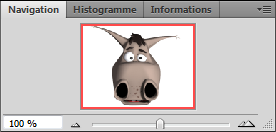
Vous me direz, à quoi cela peut-il bien servir d'avoir un aperçu miniature de notre zone de travail sachant qu'on l'a en grandeur nature en face de nous, quand on travaille dessus ? La réponse est pourtant toute trouvée : elle va nous permettre de nous déplacer en quelques clics dans la zone de travail ! En effet, l'atout de cet aperçu, c'est qu'il ne change pas de taille. Quand on zoome dessus sur la zone de travail, l'image de l'aperçu n'est pas agrandie ! Non, à la place, c'est le contour rouge qui va se rétrécir et cibler la partie zoomée !
On obtient cet aperçu en zoomant de cette manière sur la zone de travail :
Cliquez sur l'image pour l'agrandir.
Ce qui est visible à l'écran est entouré du cadre rouge. Cela revient en fait à reprendre mes illustrations des sous-parties ci-dessus, si vous voyez desquelles je parle :) .
Et à quoi tu veux en venir, en fait ? Car là, je n'ai rien de vraiment nouveau : on a juste zoomé.
Là où je veux en venir, c'est qu'une fois le zoom effectué, vous pouvez cliquer n'importe où dans l'aperçu pour déplacer automatiquement le contour rouge là où vous aurez cliqué et ainsi, vous déplacer dans la zone de travail ! Essayez de zoomer encore un peu puis de cliquer ici, par exemple :
Cela engendrera systématiquement une modification de position du cadre rouge...
...et cela vous permettra ainsi de vous déplacer !
Cliquez sur l'image pour l'agrandir
C'est franchement simple et à la fois très efficace, notamment quand on travaille sur une très grande image (imaginez devoir se déplacer avec l'outil Main sur une image immense, on en aurait pour des heures, alors qu'en un clic, on passe d'un point A à un point B en un rien de temps !).
Nous passons désormais à la suite, et nous nous apprêtons à étudier l'outil déplacement
.
Cet outil fait partie de ceux que vous utiliserez le plus souvent dans la mesure où vous devrez sans cesse passer par lui pour déplacer des calques ou groupes de calques dans votre zone de travail.
Attention, il ne s'agit pas de se déplacer dans la zone de travail tel que le permet l'outil Main
. Ici, on va directement déplacer un élément de la zone de travail, c'est-à-dire l'un des calques qui la compose.
Sélectionner un calque
Lorsqu'un calque est sélectionné, il est caractérisé par un fond bleu comme le montre l'image ci-dessous.
Ici, c'est la Forme 1 qui est sélectionnée.
En premier lieu, il va falloir sélectionner le calque que nous souhaitons déplacer (on ne met pas la charrue avant les bœufs). D'ailleurs, il faut forcément que le calque soit préalablement sélectionné pour que l'on puisse le déplacer.
On pourrait alors passer par la fenêtre de calques pour sélectionner un calque, cela semble logique après tout. On se rendrait alors dans la fenêtre de calques, rechercherait celui que nous souhaitons déplacer puis le sélectionnerait.
Mais en fait, voilà, il existe un moyen beaucoup plus pratique. L'idée, ce serait de passer directement par la zone de travail, pas touche à la fenêtre de calques ^^ . On rechercherait alors directement dans la zone de travail l'élément que nous souhaiterions voir sélectionné dans la fenêtre de calques, ce qui nous éviterait alors de nous embêter à rechercher le calque dans la fenêtre de calques (en sachant que s'il existe des centaines de calques, on va mettre énormément de temps à le retrouver). Vous me suivez ? :)
Pour sélectionner un calque directement dans la zone de travail, on va avoir recours à l'outil déplacement
. On l'utilisera également pour effectuer des déplacements.
Afin de prendre l'outil en main, veuillez cliquer sur l'icône correspondant à l'outil. Vous pouvez appuyer sur la touche V.
Vérifiez que la case "Sélection du calque" située dans la barre des options soit bien cochée. Ainsi, il suffit de cibler un élément de la zone de travail et de cliquer dessus pour sélectionner le calque de cet élément dans la fenêtre de calques (j'ai créé une flèche blanche sur le calque sélectionné pour améliorer la lisibilité de mon exemple et que vous compreniez que c'est le calque bleu qui est sélectionné).
Dans ma zone de travail à gauche, j'ai cliqué sur le carré bleu. Comme on peut l'apercevoir, c'est le calque "Carré bleu" qui est sélectionné. Si je clique sur le carré rouge, c'est le calque nommé "Carré rouge" qui sera sélectionné.
Pareil, j'ai créé une nouvelle flèche blanche au niveau du carré rouge pour que vous appuyer mon exemple. Dans le fichier que vous avez téléchargé, cette flèche est inexistante et c'est normal ;) .
En décochant l'option "Sélection du calque" dans la barre d'options des outils, vous serez en mesure de sélectionner le calque manuellement dans la zone de travail. Pour cela, il vous faudra taper simultanément sur la touche Ctrl ou Command (Pomme).
Déplacer le calque sélectionné
Bon, c'est bien beau de faire tout ça, mais faut bien que cela nous serve à quelque chose. L'outil possède deux fonctionnalités :
Sélectionner un calque (déjà fait).
Déplacer le calque sélectionné.
Déplacer un calque consiste à changer sa position dans la zone de travail, c'est-à-dire que l'on va le déplacer d'un point A vers un point B.
Votre outil déplacement
en main, il suffit que vous mainteniez le clic à l'intérieur de votre zone de travail (je vous conseille de cibler l'élément à déplacer même si vous n'êtes pas obligé) et que vous déplaciez le curseur de votre souris. Ainsi, l'élément sélectionné va suivre le curseur et de ce fait, changer de position.
Un exemple arrive, n'hésitez pas à travailler en même temps que moi ! Télécharger le fichier source Deplacer_calque.psd
La zone de travail du document que vous venez de télécharger est la suivante :
1. Je sélectionne le calque nommé Objet et y maintiens le clic.
2. Je déplace ensuite mon curseur de sorte à déplacer en même temps le calque Objet.
3. Quand je suis satisfait de la nouvelle position donnée au calque, je relâche le clic.
>
Libre à vous ensuite de déplacer vos calques où vous le souhaitez. Vous pouvez même les déplacer hors de la zone de travail ! Ils ne seraient alors plus visibles :
A l'image de nos amis développeurs, il nous est possible d'écrire des petites notes à même la zone de travail sans pour autant qu'ils soient visibles au moment d'enregistrer le document.
Les développeurs, lorsqu'ils rédigent leurs codes, ont un moyen simple de laisser des commentaires cachés, que seuls eux peuvent apercevoir et modifier via le document source de leur travail. Pour les connaisseurs, il s'agit des balises suivantes en XHTML :
<!-- Commentaire -->
Le principe est le même sur Photoshop : vous ajoutez des petites annotations, sous forme de petites images que l'on peut facilement masquer et qui se situent dans la zone de travail.
Est-ce vraiment nécessaire ?
De manière générale, ce code est fait pour vous, il est là pour vous servir de rappel. Il peut donc devenir nécessaire dans certaines circonstances. Par exemple, il suffit que votre image soit très grande ou encore que vous ne l'ayez pas travaillée depuis plusieurs semaines pour que les petites notes vous aident à vous souvenir de tout ce que vous seriez susceptible d'avoir oublié.
Pour écrire une note, il vous faut tout d'abord sélectionner l'outil Annotations
dans la boite à outils. Le raccourci clavier associé à cet outil est la touche N.
Puis, il ne vous reste plus qu'à cliquer une fois sur la cible de votre choix à l'intérieur de la zone de travail pour qu'une petite fenêtre apparaisse.
Une fois que vous avez fini d'écrire un commentaire, vous pouvez le cacher en cliquant sur le petit carré blanc qui se situe en haut à droite de la fenêtre.
Pour supprimer une annotation, cliquez droit sur la petite note (voir les images ci-dessous) puis sur "supprimer l'annotation".
Vous avez un micro ?
Si les notes écrites ne vous suffisent pas, Photoshop vous offre la possibilité de créer des notes audio. Le principe est exactement le même, à l'exception qu'il vous faut disposer d'un micro et que vos notes seront sonores.
Alors, vous enregistrerez votre voix et ferez le commentaire comme si vous le faisiez à l'écrit, puis vous serez libre de l'écouter directement en travaillant sur votre zone de travail.
Je suis prêt à parier ma bouteille d'eau que la majorité d'entre-vous a eu un petit sourire en lisant le titre de cette partie :D .
Savez-vous ce qu'est une pipette ? Il s'agit de ce petit outil qui permet d'absorber un liquide et que l'on utilise généralement dans les laboratoires de chimie.
Dans votre boite à outil, la pipette est représentée par cette icône :
. Je vous invite à cliquer dessus ou à appuyer sur la touche I de votre clavier.
Sur Photoshop, la pipette joue un rôle relativement proche de la pipette des laboratoires dans la mesure où elle sert à absorber n'importe quelle couleur de la zone de travail. Le principe est simple, il faut sélectionner l'outil, cibler une partie de la zone de travail puis cliquer dessus. Alors, la pipette absorbera la couleur ciblée et transfèrera son code hexadécimal dans la palette de couleurs (souvenez-vous, vous avez déjà entendu parlé de ces termes dans la deuxième partie des options de fusion).
Il devient intéressant d'utiliser la pipette lorsque l'on souhaite, par exemple, reprendre une couleur d'une image ou bien, lorsque l'on a défini une couleur à l'un des éléments qui compose notre zone de travail et notamment si l'on n'a pas conservé son code hexadécimal.
Pour cet exemple, j'ai décidé de choisir un arc-en-ciel pour que vous distinguiez bien chaque couleur qui compose l'image.
Tout d'abord, je sélectionne l'outil Pipette <image legende="Outil Pipette>medias\uploads.siteduzero.com_files_259001_260000_259575.png</image>. Puis, jetons un œil sur la palette de couleurs et plus précisément sur la couleur de premier-plan.
Ici, la couleur de premier plan est le noir, la couleur d'arrière-plan est le blanc.
Je place mon curseur sur l'un des 7 arcs, disons le jaune pour commencer.
Cliquez sur l'image pour l'agrandir
Une fois la partie de ma zone de travail ciblée, je clique dessus, puis, je jette à nouveau un œil sur ma palette de couleurs. Le résultat parle de lui-même, la couleur de premier-plan a changé, il s'agit désormais du jaune de mon arc-en-ciel ;) .
Je vous invite à essayer, vous pouvez d'ailleurs utiliser une autre image si vous le souhaitez !
Nous avons fait le tour des "outils pratiques". Il y en a d'autres, je ne vous le cache pas, mais je crois que nous avons passé en revue les principaux. C'est en tout cas ceux que j'utilise le plus régulièrement si ça peut vous rassurer :) .
Pour les parties suivantes, nous continuerons de nous intéresser au contenu de la boite à outils (c'est d'ailleurs le cas pour la plupart des prochaines parties de ce tutoriel) et le prochain outil va nous permettre d'effectuer des sélections simples.
Si l'on associe régulièrement l'activité de graphiste aux outils tels que le pinceau ou le crayon de papier, il ne faut pas oublier que nous, infographistes, avons l'énorme avantage de pouvoir utiliser de nouvelles technologies liées à l'informatique. Cela nous permet ainsi de pouvoir profiter des irremplaçables calques, mais aussi des "retours en arrière" (c'est-à-dire que l'on peut annuler de mauvaises manipulations avec les touches Z combinée à la touche Ctrl (PC) ou Command (Mac)), sans parler du nombre illimité de feuilles mis à notre disposition ^^ .
Parmi les fonctionnalités avantageuses que nous offrent l'informatique et plus exactement Photoshop, il y a les outils de sélection.
Il n'est pas question de sélectionner un calque dans la fenêtre de calque comme on a appris à le faire avec l'outil déplacement, mais de créer une sélection directement dans la zone de travail pour ne travailler que ce qu'il y a à l'intérieur de cette sélection et protéger tout le reste.
Ainsi, on va apprendre à conserver la partie sélectionnée afin d'y apporter des modifications. Mais je ne vous en dis pas plus.
S'ils ne font pas partie des outils que je nomme "outils pratiques", cela ne fait pas moins d'eux des outils utiles et efficaces :) .
Avant de commencer, je vous propose de répondre à la question « quel intérêt pourrait-on trouver à créer une sélection ? »
Nous allons être amenés à réaliser tout un tas de sélections avec pour chacune d'elle une forme différente, mais il faut bien qu'elles nous soient utiles à quelque chose. J'associerai un exemple d'utilisation à chaque nouvel outil étudié. En attendant, je dirais que la sélection peut servir, entre autres, à :
Sauvegarder le contenu de la sélection.
Fractionner un calque en plusieurs "petits" calques.
Copier ou couper le contenu sélectionné.
Effectuer une modification du contenu sélectionné et protéger tout le reste.
Supprimer le contenu de la sélection.
Déplacer le contenu sélectionné.
Transformer le contenu sélectionné.
...
Autant de possibilités auxquelles un infographiste peut avoir très souvent recours. ;)
Propriété d'une sélection
Je vous le disais, nous nous apprêtons à créer des sélections. Lors des deux premières parties de ce chapitre, nous apprendrons à manipuler les deux outils de sélection existants et les illustrerons à l'aide d'exemples. Parce que savoir les manipuler, c'est bien, mais en faire quelque chose d'utile, c'est encore mieux !
A savoir qu'à force de travailler sur Photoshop, je me suis rendu compte que certains outils devenaient indispensables, quels que soient les projets sur lesquels je travaillais. Les outils de sélection font justement partie de ces ustensiles desquels je ne me sépare plus.
Même si j'ai ma petite idée, qu'est-ce qu'une sélection ?
Une sélection se caractérise sous la forme de petits pointillés animés formant un contour fermé. On ne peut créer une sélection qu'à l'intérieur de la zone de travail.
Créer une sélection dans la zone de travail revient à "encadrer" une partie de cette zone pour travailler dessus et seulement dessus. Ainsi, tout le reste (ce qui n'a pas été sélectionné) est protégé, on ne peut plus y toucher.
Sur ce schéma, la zone colorée est la zone en sélection. Elle est donc prête à subir des modifications. Le reste (que j'ai volontairement noirci - la sélection ne produit aucunement cet effet en temps normal) est protégé : aucune modification n'est possible ici.
Outil rectangle de sélection
Fonctionnement
Voyons maintenant ce que ces outils ont dans le ventre. Concrètement, il existe quatre outils de sélection et nous n'allons en étudier que deux proposant chacun une forme géométrique différente :
Rectangle de sélection
Ellipse de sélection
Nous commencerons par l'outil rectangle de sélection
que je vous invite à sélectionner en cliquant sur sa petite vignette, ou bien en tapant sur la touche M de votre clavier d'ordinateur.
L'outil rectangle de sélection fait partie de la famille des outils de sélections géométriques. Avec cet outil, la sélection que nous allons créer va prendre la forme d'un rectangle quelconque, c'est-à-dire que la sélection se verra dotée de 4 angles droits.
Le moment est venu de vous expliquer comment l'utiliser ! :)
N'hésitez pas à travailler avec moi ! Télécharger l'image paires_chaussures.png Pour télécharger l'image, faites un clic droit puis "Enregistrer sous"
Voici l'image sur laquelle nous allons nous exercer, vous aurez reconnu trois paires de chaussures. Attention, grosse production et qualité oblige, j'ai disposé sur cette photo trois types de chaussure différents !
Mieux qu'un long discours, voici les 4 étapes (fort simples, je vous demande de me croire) de fonctionnement de cet outil :
Tout d'abord, il faut choisir un point dans la zone de travail à partir duquel la sélection va être créée et va prendre forme.
Ensuite, il va nous falloir cliquer sur ce "point de départ" et maintenir le clic.
Une fois que c'est cliqué, déplacez le curseur de votre souris. C'est ainsi que des pointillés apparaissent : ils caractérisent la sélection. Bon signe : celle-ci prend forme.
Relâcher le clic quand la sélection effectuée convient : les pointillés dansent, votre sélection est terminée.
Trouvez-vous cela compliqué ?
Exemple
Je vous invite à copier l'image sur laquelle nous travaillerons puis la coller dans une nouvelle zone de travail, à moins que vous l'ayez déjà fait. N'oubliez pas : si vous copiez une image, Photoshop prendra compte automatiquement de cette copie et retiendra les dimensions de l'image copiée. Vous n'avez donc pas à taper la taille de la zone de travail puisqu'elle est auto-paramétrée ;) . Autrement, vous pouvez aussi ouvrir l'image en passant directement par le menu Fichier > Ouvrir.
Pour faire cet exemple, je m'apprête à suivre à la lettre les quatre étapes indiquées ci-dessus. Je vais ainsi illustrer chacune d'elle par une image. Veuillez penser à cliquer sur chacune des images suivantes pour les agrandir, merci.
J'ai décidé de créer une sélection autour de la la paire de chaussures de droite (ça s'appelle des ballerines pour ceux que ça intéresserait). Je place alors mon curseur en haut à gauche de de celles-ci car c'est ici que je souhaite voir prendre forme mon rectangle de sélection (étape 1).
Je clique ensuite sur le point que j'ai ciblé avec mon curseur puis je maintiens le clic comme le demande l'étape 2.
Je déplace mon curseur et je laisse apparaitre les pointillés de la sélection (étape 3).
Enfin, quand je suis satisfait de ma sélection, je lâche le clic : ma sélection est terminée (étape 4).
Nous venons de réaliser notre première sélection !
J'ai lâché le clic trop vite, ma sélection n'est pas correcte ! Que faire ?
Si vous n'êtes pas satisfait de votre sélection, vous n'avez pas de quoi la rattraper pour le moment malheureusement. Des solutions moins draconiennes existent, mais pour l'heure, je peux vous proposer de supprimer votre sélection ratée pour la recommencer ou bien, plus simple, de la déplacer si le cadre de sélection vous convient.
La sélection n'est pas bonne, vous souhaitez la supprimer pour la recommencer : cliquez une fois et n'importe où dans la palette flottante de la zone de travail (que ce soit à l'intérieur de la zone de travail ou en dehors, si c'est dans cette fenêtre, cela fonctionnera). Ce clic effacera la sélection en activité, vous pouvez alors en recommencer une. Voici d'ailleurs les bons vieux raccourcis clavier :
CTRL + D Command (ou Pomme) + D
La forme donnée à votre sélection est correcte, mais vous souhaitez la déplacer de quelques pixels : à l'inverse, il faut cliquer à l'intérieur de la sélection en maintenant le clic puis déplacer le curseur de la souris.
Qu'est-ce que je peux faire de ma sélection ensuite ?
Je vous en parlais au début du cours, il est possible d'utiliser une sélection pour diverses raisons. On peut, par exemple, s'en servir pour ne conserver que son contenu, c'est-à-dire supprimer tout ce qui se trouve en-dehors de la sélection. Voici un petit exemple.
Conserver le contenu d'une sélection
N'hésitez pas à travailler avec moi ! Télécharger l'image trois.jpg Pour télécharger l'image, faites un clic droit puis "Enregistrer sous"
En ce qui me concerne, je suis souvent amené à ne conserver que certains morceaux d'une image quand je travaille sur Photoshop. Par exemple, il est déjà arrivé que l'on me numérise une photo de famille et que l'on me demande de ne conserver que le portrait des enfants. J'ai donc utilisé l'un des outils de sélection (pour sélectionner la partie à conserver) et ai cherché à ne sauvegarder qu'elle. Voici les démarches que j'ai entreprises, sur une nouvelle photo. Nous n'allons conserver qu'une seule partie de cette image :
Il s'agira du chiffre trois. On suit donc les étapes suivantes :
1. J'ai effectué une sélection autour de ce qui est fait le sujet de la photo : le chiffre trois.
2. Il faut ensuite faire un "copier/coller". Pour copier, on clique sur Édition > Copier. J'aurais aussi pu faire un clic droit à l'intérieur de la sélection puis cliquer sur "Copier". Le raccourci clavier est CTRL + C (Command (ou Pomme) + C).
3. Suite à ça, j'ai créé une nouvelle zone de travail dont la taille a automatiquement été paramétrée en fonction des dimensions de l'image que j'ai copiée.
4. Pour finir, je colle le contenu de ma sélection dans la nouvelle zone de travail (Édition > Coller - le raccourci clavier est CTRL + V (Command (ou Pomme) + V)
Zone de travail
Le contenu de la sélection a bel et bien été conservé et il se trouve désormais dans une nouvelle zone de travail. Il ne nous reste plus qu'à la sauvegarder comme nous l'avons appris ;) .
Modifier le contenu de la sélection
Je ne souhaite pas rentrer dans les détails avec la modification de calque pour le moment. Pour tout vous dire, c'est ce que nous allons constamment faire dans la deuxième partie de ce cours, on commence d'ailleurs dans le dernier chapitre de cette première partie ! Il n'est donc pas question de s'y éterniser pour le moment, j'espère que vous comprenez.
Pourquoi l'avoir entamée alors ?
En fait, j'aimerais simplement vous montrer un exemple de modification possible pour que vous compreniez ce que j'entends par "modification". Si l'on peut modifier un calque en lui donnant de nouvelles formes (nous ferons ce que l'on appelle alors une déformation), on peut aussi très bien modifier le contenu même du calque, par exemple ses couleurs.
Pour cet exemple, je vais utiliser un calque de remplissage pour réaliser un dégradé à l'intérieur de ma sélection. Voici l'image sur laquelle je travaille :
Je commence par créer une sélection autour de mon ballon à l'aide de l'ellipse.
Je crée ensuite un nouveau calque de remplissage. Pour cela, il faut cliquer sur l'icône
Créer un calque de remplissage ou de réglage, en bas de la fenêtre de calques, puis sur "Dégradé...". Je prends le temps de paramétrer mon dégradé (ce que vous êtes censés pouvoir faire tout seuls) puis je clique sur "Valider". On supprime la sélection, et on obtient une balle de tennis aux contours renforcés par le dégradé radial que j'ai appliqué à l'intérieur de la sélection.
La barre d'options
Au début du cours, lorsque vous découvriez l'espace de travail, j'ai eu l'occasion de présenter brièvement la barre d'options des outils, souvenez-vous.
Figurez-vous que nous allons enfin commencer à travailler avec ces options, l'objectif est d'améliorer la forme de nos sélections qui sont pour le moment, vous me l'accorderez, un peu trop rectangulaires. Nous nous concentrerons sur cette série de boutons :
Comme vous pouvez le voir, le premier bouton sélectionné est celui qui se situe tout à gauche de la barre. Il s'agit de l'option par défaut, l'option de base pour l'outil rectangle de sélection. Elle n'apporte rien de plus que ce que nous avons pu faire jusqu'ici, c'est-à-dire la créer une sélection rectangulaire. Par contre, les autres boutons vont davantage nous intéresser dans la mesure où ce sont des options que nous n'avons évidemment pas encore abordées.
Ajouter à la sélection
Testons en premier lieu l'option
Ajouter à la sélection. Je vous invite à cliquer dessus ou à utiliser la touche SHIFT(en maintenant la touche)
Jusqu'ici, nous avons su créer une sélection relativement simple, une sélection qui n'était pas plus élaborée que cela :
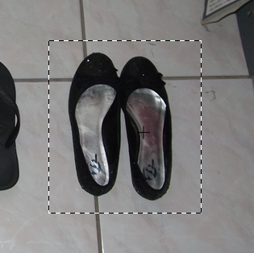
Grâce à l'option Ajouter à la sélection, nous allons être en mesure de :
Effectuer de nouvelles sélections en plus de la première sélection créée.
Additionner ces nouvelles sélections avec la première sélection créée pour l'agrandir et lui ajouté de nouveaux angles droits.
Effectuer de nouvelles sélections signifie que nous allons créer plusieurs sélections toutes en activité en même temps. Par exemple, nous avions sélectionné les ballerines tout à l'heure. Et bien, nous allons maintenant pouvoir sélectionner chaque paire de chaussures, simultanément.
Il est par ailleurs également possible de combiner deux sélections et ainsi créer des formes plutôt farfelues :-° .
Comme son nom le laisse penser, l'option permet d'ajouter une nouvelle sélection à celle initialement créée. Si la nouvelle sélection est créée à l'intérieur de la sélection mère, alors les deux sélections ne prendront qu'une seule et même forme (image ci-dessus), tout en gardant chacune leurs paramètres respectifs.
Tu peux m'expliquer plus précisément comment on fait ?
Sur l'image ci-dessous, j'ai créé une sélection banale à l'intérieur de la croix et en gardant l'option Nouvelle sélection sélectionnée.
Je clique ensuite sur le bouton représentant l'option Ajouter à la sélection. On remarque alors que le curseur de ma souris a changé, il est désormais accompagné d'un signe + (on comprend alors qu'il s'agit d'ajouter une sélection).
Je crée ensuite une nouvelle sélection autour de la branche supérieure de la croix, comme ceci :
Une fois l'opération terminée, il ne reste plus qu'à relâcher le clic.
Les deux sélections se sont alors additionnées pour ne former qu'une seule et même sélection. On refait la même chose sur la branche de gauche...
... Puis sur toutes les autres.
Et notre croix est entièrement sélectionnée. :)
Soustraire de la sélection
Maintenant que l'option Ajouter à la sélection n'a plus de secret pour vous, la maitrise des deux autres sera très vite acquise ;) .
L'option
Soustraire de la sélection ne sert non pas à ajouter une sélection (ça manquerait de sens d'ailleurs) mais à supprimer une partie de la sélection. En fait, l'idée est simple, on utilise cette option de la même manière que la précédente mais en sachant que l'effet sera inverse.
N'hésitez pas à travailler avec moi ! Télécharger l'image clavier_ordinateur.png Pour télécharger l'image, faites un clic droit puis "Enregistrer sous"
On commence donc par créer une sélection globale dans laquelle la touche de la lettre G est comprise. Le but sera de la sélectionner.
On clique ensuite sur le bouton représentant l'option Soustraire de la sélection. On peut passer par la touche ALT(en la maintenant) (ou Option pour Mac).
Nouvelle remarque : le curseur de ma souris a encore changé, il s'agit désormais du signe - (on comprend alors qu'il s'agit de soustraire de la sélection :-° ).
On crée une nouvelle sélection de telle sorte que seule la partie de sélection en-dessous de la lettre soit supprimée :
On crée ensuite une nouvelle sélection, mais au-dessus de la lettre G cette fois-ci. On aura remarqué que la portion de sélection du bas a bel et bien été supprimée.
Enfin, on réitère l'opération sur les bords gauche et droite de la touche G et on obtient finalement une sélection dans laquelle la lettre G figure seule :
Finalement, les zones sélectionnées avec l'option ont été effacées et on laissé place à une seule sélection.
Sélectionner l'intersection
Travaillons à présent avec l'option Sélectionner l'intersection
. Je vous invite à la sélectionner, puis à créer un rectangle de sélection basique sur fond blanc, à l'image de l'exemple ci-dessous. Pour utiliser cette option, il existe également le raccourci clavier SHIFT + ALT(Maintenir les touches) (Shift + Option(Maintenir les touches) pour Mac).
Ensuite, pour bien comprendre comment cette option influence le résultat final de la sélection, il faut recréer un rectangle de sélection en le commençant à l'intérieur du premier pour le finir à l'extérieur (comme on l'a fait juste avant avec l'option "Ajouter à la sélection"), ou bien en le commençant à l'extérieur vers l'intérieur :
Alors, une nouvelle sélection apparait :
Je vous explique ce qui s'est passé ? En fait, avec l'option "Sélectionner l'intersection", nous avons gardé en sélection la zone qui se trouve être la rencontre entre les deux sélections mères. On a fait se croiser l'une et l'autre, ce qui a engendré la formation d'un troisième rectangle de sélection qui a été conservé...
Le style
Le style. Ce nom ne nous est pas inconnu, nous avons déjà rencontré un paramètre semblable avec l'un des styles de calque étudiés. Ici, le style va nous permettre de fixer la sélection sous deux formes différentes.
Le style par défaut est "normal". On ne va pas revenir dessus, c'est celui que nous utilisons depuis le début et je crois qu'on a compris :-° . En déroulant la liste, on aperçoit toutefois deux nouveaux styles.
Proportions fixes
Taille fixe
En sélectionnant le style "Proportions fixes", vous vous obligerez à créer des sélections carrées. Pas de rectangle donc, les quatre côtés de votre sélection seront de longueurs égales.
En sélectionnant le style "Taille fixe", vous activerez les paramètres situés à droite de l'option "Style".
En fait, ce qu'il faut savoir pour comprendre, c'est que vous pouvez donner une taille fixe à votre rectangle (donc, une largeur à gauche et une hauteur (synonyme de longueur) à droite), vous n'aurez donc plus besoin de recréer la sélection, il suffira simplement de cliquer sur la zone de travail pour qu'apparaisse automatiquement un nouveau rectangle de sélection aux tailles indiquées dans les paramètres.
Nous reviendrons sur l'option "Contour progressif" un peu plus loin dans le cours. Pour l'heure, on a fait le tour des options pour l'outil rectangle de sélection et il est temps de passer à la suite ;) .
Je dédie une nouvelle partie à l'outil ellipse de sélection car, même si son utilisation est identique à celle de l'outil rectangle de sélection, sa sélection est différente et il me semble plus judicieux de les séparer en deux parties bien distinctes.
Il s'agit là aussi d'un outil faisant partie de la famille des outils de sélection géométrique. A l'instar de son confrère, l'outil
Ellipse de sélection, que vous pouvez sélectionner en tapant à nouveau sur la touche M, permet de réaliser une sélection de forme ronde ou ovale.
Parce qu'ils font partie de la même famille, il faut faire un clic droit sur l'icône représentant l'outil rectangle de sélection pour laisser apparaitre celle de l'outil ellipse de sélection.
Les étapes permettant de réaliser une sélection sont exactement les mêmes, je vous les rappelle au cas où :
Choisir tout d'abord un point dans la zone de travail à partir duquel la sélection va être créé et prendre forme.
Cliquer sur ce point et maintenir le clic.
Déplacer le curseur de la souris. C'est ainsi que des pointillés apparaissent : ils caractérisent la sélection, cela signifie qu'elle prend forme.
Relâcher le clic quand la sélection effectuée convient.
L'avantage avec cet outil, c'est que sa sélection n'est formée d'aucun angle droit. Du coup, c'est pratique si on veut sélectionner un objet de forme ronde, comme un ballon de football par exemple, ou alors quand il est question de sélectionner un objet oval comme... un ballon de rugby tiens :-° . Mais cela devient encore plus intéressant quand on fait intervenir les options de l'outil présentes dans la barre d'options des outils, sûrement plus intrigant que pour l'outil rectangle de sélection ;) .
Exemples
Nous avons déjà pu manipuler l'outil rectangle de sélection avec chacune de ses options. Je crois donc qu'il n'est pas nécessaire de s'y atteler à nouveau.
Je vous ai concocté une série d'exemples avec chacune des options de l'outil ellipse de sélection.
Sélection ronde
Pour effectuer un cercle parfait, maintenir la touche Shift. On peut alors s'amuser à créer une sélection autour d'un ballon de basket, par exemple. :)
Sélection ovale
On aurait pu utiliser un ballon de rugby pour cet exemple, mais cela aurait été trop simple. :-°
Ajouter à la sélection
Cela fonctionnement de la même manière que le rectangle de sélection !
Et pour notre exemple :
Soustraire de la sélection
Même principe, mais cette fois-ci on retire une partie de la sélection préalablement créée.
On reprend le même exemple, en sélectionnant tout ce qui ne constitue pas l'un des trois disques. L'objectif est finalement de n'avoir en sélection que les CD : la fond beige n'est plus du tout sélectionné.
Sélectionner l'intersection
Une tomate n'est jamais vraiment ronde. :)
Contrairement à l'outil rectangle de sélection, dont l'option peut s'avérer être une véritable valeur ajoutée, elle est bien moins pertinente et plus compliquée à utiliser avec l'ellipse.
Pour finir avec ce chapitre, nous allons passer en revue le menu "Sélection que vous trouverez dans la barre des menus.
Une fois déroulé, vous apercevez le contenu du menu. Rassurez-vous, ces fonctionnalités sont relativement simples à utiliser, d'autant que nous n'allons pas toutes les étudier maintenant.
La première porte bien son nom : "Tout sélectionner". Elle permet de créer une sélection tout autour de la zone de travail. Je n'ai pas besoin de vous faire un dessin, hein. ;)
La deuxième et la troisième sont aussi très significatives. L'une permet de retirer la sélection, l'autre de la reformer. Enfin, il y a le bouton "intervertir" que nous traiterons en profondeur plus tard dans ce cours.
La fonctionnalité "Tous les calques" permet quant à elle de sélectionner tous les calques (hormis ceux qui sont entièrement verrouillés) dans la fenêtre de calque (il ne s'agit donc pas d'une sélection à pointillés hein), tandis que le bouton "Désélectionner les calques" sert à faire exactement ce qu'il dit. Enfin, en cliquant sur "Calques similaires", vous demanderez à votre logiciel de ne sélectionner que les calques de même type que celui qui est déjà en sélection. Par exemple, si un calque standard est sélectionné, tous les autres calques standards seront sélectionnés. De même, si c'est un calque Forme qui est sélectionné, alors cliquer sur ce bouton vous permettra de sélectionner tous les calques Forme de votre fenêtre de calques.
Plage de couleurs...
Juste avant de commencer, voici l'image ouverte dans ma zone de travail. Il est inutile que vous la téléchargiez, votre attention seule suffira. :)
Ce paramètre, appelé la "plage de couleurs", est un peu plus complexe que les autres et c'est pourquoi j'aimerais y prêter une attention toute particulière. Je vous invite à cliquer dessus.
Une fenêtre encore inconnue apparait. C'est ici que tout se passe.
Vous le voyez, nous avons en plein milieu un aperçu de la zone de travail. C'est le cœur du paramètre. Voyons ça de plus près.
Vous avez tout d'abord la possibilité de choisir le mode de sélection. En faisant dérouler la liste, on aperçoit en tout premier le mode "Pipette". Il va de pair avec le fameux aperçu dont je viens de vous parler. En effet, en cliquant sur un élément quelconque de l'aperçu (par exemple, sur l’œil gauche), la pipette va se charger de ne conserver que les couleurs de l'élément ciblé par votre clic. Donc, si la pupille de l’œil est noire, tous les éléments noirs de la zone de travail apparaitront blanc sur noir dans l'aperçu. De même, si je clique sur le blanc de l'un des yeux de ce fabuleux bonhomme, le deuxième œil apparaitront blancs sur noir dans l'aperçu, ainsi que les sourcils qui, comme vous pouvez le voir, sont colorés d'une couleur à tendance grise/blanche. La preuve en image :
En cliquant sur le bouton OK à droite de la fenêtre, vous demandez à la plage de couleurs de ne créer des sélections qu'autour des éléments blancs sur noir dans l'aperçu, autrement dit autour des yeux, une bonne partie des sourcils mais aussi autour du fond, qui lui-même est aussi blanc que le blanc des yeux ! Faites-en l'expérience sur une image quelconque, ça fonctionnera !
Revenons-en à nos différents modes de sélection. En réalité, il y en a deux différents : le premier, c'est la pipette. Le deuxième consiste à sélectionner un ton de couleurs (le vert, le bleu, le rouge, ...) que la plage va se charger rechercher dans la zone de travail pour ne conserver que celui-ci. En mettant une sélection de rouge par exemple, alors seule la langue du bonhomme ressortira blanc sur noir dans l'aperçu, signe qu'elle sera en sélection si je valide sur OK.
La langue n'a pas été entièrement sélectionnée, pourquoi ?
La sélection se fait en fonction de l'intensité des couleurs ciblées par votre curseur, dans le cas de l'utilisation de la pipette. Si vous cliquez sur un rouge très clair, alors la pipette prendra en compte un certain nombre de rouges différents et proches du rouge clair, et créera en ce sens une plage de couleurs. Si toutefois vous décidez de ne sélectionner que les rouges, comme on vient de le faire avec la langue, alors Photoshop ne prendra en compte que les rouges se rapprochant véritablement de celui-ci. Et en l'occurrence, sur notre exemple, la sélection s'est arrêtée plus ou moins lorsque le rouge s'assombrissait.
Il existe toute de même deux paramètres permettant de guider notre sélection dans son choix des couleurs à sélectionner. Il s'agit des jauges de tolérance et d'étendue.
La première désigne l'aptitude de l'outil à définir la correspondance de couleur. Autrement dit, « jusqu'où l'outil doit-il aller dans la recherche de correspondance ? ». Après avoir pointé la pipette sur le rouge vif de la langue par exemple, on va pouvoir demander à notre logiciel de propager davantage sa suggestion de sélection, toujours en prenant compte des correspondances entre la couleur de base (le rouge vif) et les autres couleurs.
La deuxième, l'étendue, ne fonctionne que si la case "Clusters de couleurs localisées" est cochée. Cette case enclenche une nouvelle plage de sélection d'une toute autre forme, d'une forme circulaire pour être plus précis. L'étendue sert à indiquer à quelle distance une couleur doit se situer pour être incluse dans la plage circulaire de sélection.
« Modifier » une sélection
Ce paramètre permet de moduler une sélection déjà créée, l'objectif étant de lui donner un nouvel aspect. Par exemple, on peut partir d'une sélection rectangulaire, et modifier l'angle des coins pour les arrondir.
Pour accéder à ce menu, il vous faudra donc d'acord créer une sélection, puis cliquer sur Sélection > Modifier et laisser dérouler la liste suivante :
Cadre... : permet de créer un véritable cadre dont l'espacement est défini par le nombre de pixels indiqué.
Lisser... : permet d'arrondir les coins dans le cas de sélections avec angles droits
Dilater... : permet d'élargir la sélection.
Contracter... : permet de réduire la sélection.
Contour progressif... : j'ai prévu de vous parler du contour progressif plus loin dans ce cours. Pour faire court, il s'agit d'étendre le contour de la sélection pour la rendre approximative sur un nombre défini de pixels. On en reparle plus loin. ;)
Transformer la sélection
Transformer une sélection ne consiste pas à la « modifier ». La transformation est un aspect que je développe de long en large le temps de deux chapitres dans cette première partie. A ce titre, je vais simplement vous expliquer pourquoi transformer n'est pas modifier.
Si vous essayez en même temps que moi, vous vous apercevrez que des petits carrés blancs apparaissent tout autour de la sélection.
Ce sont ce que l'on appelle des poignées. Chaque poignée est déplaçable et c'est là le cœur de la transformation : la sélection est comme « collée » aux poignées. Donc si l'on en déplace une, la sélection va suivre.
Quel intérêt pourrait-on trouver à créer une sélection ? C'est vrai, jusqu'ici nous avons réalisé un tas de sélections avec pour chacune d'elle une forme différente, mais il faut bien qu'elles nous soient utiles à quelque chose. C'est ce que l'on va déterminer dans cette partie du cours.
Le moins que l'on puisse dire, c'est qu'on peut en faire, des trucs ! De tête, je dirais qu'on peut, entre autres :
Sauvegarder le contenu de la sélection.
Fractionner un calque en plusieurs "petits" calques.
Copier ou couper le contenu sélectionné.
Effectuer une modification du contenu sélectionné et protéger tout le reste.
Supprimer le contenu de la sélection.
Déplacer le contenu sélectionné.
Transformer le contenu sélectionné.
...
Autant de possibilités auxquelles un infographiste peut avoir très souvent recours.
Conserver le contenu sélectionné
N'hésitez pas à travailler avec moi ! Télécharger l'image trois.jpg Pour télécharger l'image, faites un clic droit puis "Enregistrer sous"
Je suis souvent amené à ne conserver que certains morceaux d'une image quand je travaille sur Photoshop. Par exemple, il est déjà arrivé que l'on me numérise une photo de famille et que l'on me demande de ne conserver que le portrait des enfants. J'ai donc utilisé l'un des outils de sélection (pour sélectionner la partie à conserver) et ai cherché à ne sauvegarder qu'elle. Voici les démarches que j'ai entreprises, notez simplement qu'à la place d'un portrait de famille, j'utilise une photo (un peu bizarre) prise avec mon téléphone dans le palier de l'immeuble où je vis. Nous n'allons conserver qu'une seule partie de cette image :
Il s'agira du chiffre trois. On suit donc les étapes suivantes :
1. J'ai effectué une sélection autour de ce qui est fait le sujet de la photo : le chiffre trois.
2. Il faut ensuite faire un "copier/coller". Pour copier, on clique sur Édition > Copier. J'aurais aussi pu faire un clic droit à l'intérieur de la sélection puis cliquer sur "Copier". Le raccourci clavier est CTRL + C (Command (ou Pomme) + C).
3. Suite à ça, j'ai créé une nouvelle zone de travail dont la taille a automatiquement été paramétrée en fonction des dimensions de l'image que j'ai copiée.
4. Pour finir, je colle le contenu de ma sélection dans la nouvelle zone de travail (Édition > Coller - le raccourci clavier est CTRL + V (Command (ou Pomme) + V)
Zone de travail
Le contenu de la sélection a bel et bien été conservé et il se trouve désormais dans une nouvelle zone de travail. Il ne nous reste plus qu'à la sauvegarder comme nous l'avons appris ;) .
Modifier le contenu de la sélection
Je ne souhaite pas rentrer dans les détails avec la modification de calque pour le moment. Pour tout vous dire, c'est ce que nous allons constamment faire dans la deuxième partie de ce cours, on commence d'ailleurs dans le dernier chapitre de cette première partie ! Il n'est donc pas question de s'y éterniser pour le moment, j'espère que vous comprenez.
Pourquoi l'avoir entamée alors ?
En fait, j'aimerais simplement vous montrer un exemple de modification possible pour que vous compreniez ce que j'entends par "modification". Si l'on peut modifier un calque en lui donnant de nouvelles formes (nous ferons ce que l'on appelle alors une déformation), on peut aussi très bien modifier le contenu même du calque, par exemple ses couleurs.
Pour cet exemple, je vais utiliser un calque de remplissage pour réaliser un dégradé à l'intérieur de ma sélection. Voici l'image sur laquelle je travaille :
Je commence par créer une sélection autour de mon ballon à l'aide de l'ellipse.
Je crée ensuite un nouveau calque de remplissage. Pour cela, il faut cliquer sur l'icône
Créer un calque de remplissage ou de réglage, en bas de la fenêtre de calques, puis sur "Dégradé...". Je prends le temps de paramétrer mon dégradé (ce que vous êtes censés pouvoir faire tout seuls) puis je clique sur "Valider". On supprime la sélection, et on obtient une balle de tennis aux contours renforcés par le dégradé radial que j'ai appliqué à l'intérieur de la sélection.
----------------------------------------
1. Je crée la sélection.
2. J'effectue la modification (rendu négatif, on en parlera plus loin dans le cours).
3. Je supprime ma sélection mais conserve la modification apportée.
Sur cette image, la partie sélectionné a été modifiée : les couleurs ont été changées, elles sont désormais en négatif. Je répète que nous irons beaucoup plus loin dans la prochaine partie. Patience ;) .
Transformer le contenu de la sélection
Bien que vous ayez déjà acquis certaines bases sur Photoshop, vous n'êtes pas encore à même d'effectuer des transformations. Si vous voulez tout savoir, les transformations sur Photoshop font l'objet de deux chapitres complémentaires dans ce cours, ce sont les derniers de cette première partie.
Si toutefois je vous en touche un mot, c'est surtout pour vous montrer globalement en quoi cela consiste et ce que cela donne. Enfin, j'avoue que c'est un peu aussi pour vous mettre l'eau à la bouche, car je suis certain que cela va vous plaire :-° ...
Admettons que nous soyons en train de travailler sur cette image :
Et que nous voulions insérer l'image suivante à l'intérieur de la première de sorte à ce qu'elle apparaisse comme le contenu du tableau situé au centre de l'image :
Alors, nous allons transformer cette image pour qu'elle prenne de nouvelles dimensions et une nouvelle forme. Ensuite, on n'a plus qu'à !
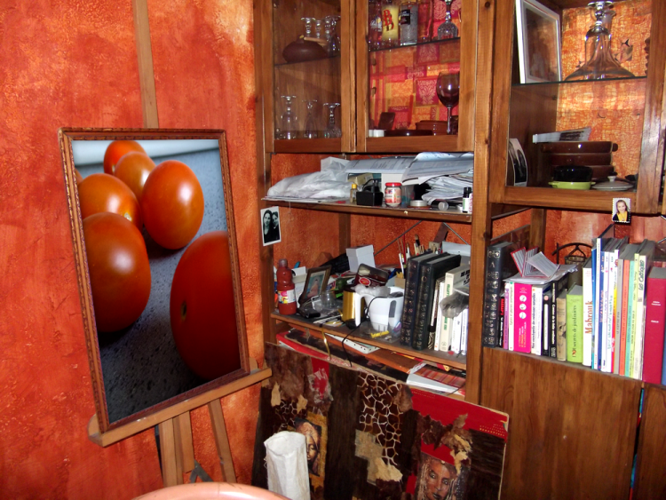Notez que j'ai ajouté une petite ombre interne pour améliorer l'intégration de l'image dans le tableau.
Supprimer le contenu de la sélection
Une fois la sélection en activité, vous appuyez sur la touche "retour" (back) de votre clavier ou alors vous passez par la barre des menus en cliquant sur Édition puis sur Supprimer. Facile ;) .
Inutile de vous reposer, le cours n'est pas terminé ! On passe à la partie suivante et nous allons développer nos connaissances pour agrandir un peu plus nos possibilités de sélection. Je ne vous en dis pas plus ;) .
Vous savez quoi ? On n'en a pas terminé avec les sélections ! :D
Héhé, j'imagine déjà la tête que vous tirez : o_O !
En fait, les outils Rectangle et Ellipse de sélection sont des outils de base et, même s'ils sont utiles, il ne sont pas forcément pratiques.
Dans nos exemples, nous avons su effectuer une sélection sous deux formes communes et très limitées : circulaire et rectangulaire.
Imaginez maintenant que je veuille sélectionner un bonhomme. Il ne s'agit pas de sélectionner le personnage avec tout ce qui se trouve autour de lui, mais juste lui, juste sa silhouette, sans aucun décor. Je n'ose même pas imaginer la tête carrée que je lui ferais si je n'utilisais que le rectangle de sélection. Mais heureusement, ces nouveaux outils ont justement été étudiés pour répondre à nos besoins.
Laissez-moi vous présenter le Lasso, premier outil de détourage que nous allons étudier. Il fait partie d'une famille de trois outils similaires qui servent tous à détourer, mais leur utilisation est différente.
Le Lasso est le premier de la liste, il est caractérisé par cette icône :
. Pour faire apparaitre cette icône et sélectionner l'outil dans la boite à outils, il faut cliquer droit sur cette petite vignette
et cliquer sur l'icône de l'outil Lasso :
Vous avez également la possibilité d'appuyer sur la touche L.
Votre outil est activé ? Alors on peut commencer :) .
Quand j'emploie le terme de détourage, je veux en fait faire référence à la précision et la flexibilité qui caractérisent ces nouveaux outils, contrairement aux outils de sélection que l'on vient d'étudier.
Bon, une chose est certaine, ils permettent tous de créer des sélections. En revanche, l'utilisation des outils de détourage est totalement différente des outils de sélection et c'est la raison pour laquelle ils n'appartiennent pas à la même famille. C'est pour cela aussi que je ne les ai pas mis dans le même chapitre, d'ailleurs. Cette fois-ci, vous allez voir qu'il faut d'abord faire un détourage manuel avec votre souris d'ordinateur afin de créer la sélection.
Le chapitre "sélection" portait sur la création de sélections simples tels que des rectangles ou des ronds. Cette fois-ci, nous serons capables de contrôler la forme des sélections dans la mesure où nous allons nous-même les tracer, de manière précise et de sorte à lui donner l'apparence que l'on veut.
Le lasso «classique»
Avec le
Lasso classique, on dit que le détourage se fait à main levée. Il faudra donc créer un tracé (un détourage) manuellement avec la souris de votre ordinateur, à l'image de ce que vous feriez avec un crayon et une feuille de papier. En effet, imaginez dessiner un cercle avec un crayon sur une feuille de papier.
Le principe est le même sur Photoshop : vous formez une boucle et quand la boucle est fermée, ce cercle se transforme en une sélection.
Ton cercle est tout difforme ! Franchement, pourquoi s'embêter avec cet outil alors que j'ai l'outil ellipse de sélection qui s'avère être plus rapide et qui crée des cercles parfaits ?
Parce que vous n'êtes pas obligés de créer des cercles ! Évidemment, si c'est pour créer une sélection parfaitement ronde, l'outil ellipse de sélection est le plus adapté. Mais l'intérêt du Lasso, c'est de pouvoir effectuer une sélection... disons personnalisée. Je pourrais donc réaliser ce genre de sélection :
Je comprends mieux ! Mais alors, pourquoi appeler ce chapitre "Le détourage" ?
Si l'on utilise les outils lasso, c'est justement pour détourer un élément de notre zone de travail. On n'utilise pas le Lasso comme on utiliserait n'importe quel autre outil de sélection du chapitre précédent. L'intérêt, c'est de pouvoir tracer la sélection autour de l'élément de la zone de travail (autrement dit le détourer), c'est-à-dire tracer cette sélection au niveau de ses contours pour qu'elle n'entoure que cet élément.
Je vous propose une petite démonstration.
Je choisis un point de départ à partir duquel je vais débuter le détourage de l'élément. Pour plus de visibilité, j'effectue un zoom sur l'image afin de pouvoir travailler plus minutieusement.
Je maintiens le clic puis déplace mon curseur pour effectuer le tracé de ma sélection : le détourage commence.
Une fois le tracé terminé, je lâche le clic : ma sélection est terminée.
CTRL + D Command (ou Pomme) + D
Comme vous pouvez le constater, la sélection nous a permis de supprimer le fond et de ne conserver que l'élément que nous avons détourer avec le lasso. Et voilà le travail ! :D
C'est super mal fait ton truc, ça déborde de tous les côtés ! :lol:
Un peu de respect pour les artistes, je vous prie :-° .
Bon, ok, ce détourage est très laid. On est franchement loin du résultat que l'on peut attendre de Photoshop. Si l'outil Lasso est utile dans certaines mesures, il peut devenir l'un des outils les plus difficiles à manier. C'est d'ailleurs pour cela qu'on ne l'utilise pas pour les sélections complexes.
Alors oui, finalement, c'est un outil très difficile à manier car on n'a pas le droit à l'erreur. Une fois que le détourage est commencé, on a ni le droit de dépasser, ni le droit de lâcher le clic pour se reposer. C'est franchement pas pratique !
Et comme si on nous avait entendu dire ça, un dérivé de l'outil Lasso a été conçu et il va s'avérer beaucoup plus maniable. On passe à la partie suivante !
», nouvel outil appartenant à la grande famille des outils Lasso, même si on peut facilement dire qu'il est franchement plus performant que son cousin le Lasso "classique" :D .
Pour sélectionner outil, vous pouvez cliquer sur ta petite vignette, ou bien taper sur la touche L.
Le principe de cet outil reste identique à celui de l'outil Lasso. Il permet d'effectuer une sélection en détourant un élément de la zone de travail. Ce qui change véritablement, c'est la façon dont il faut utiliser l'outil. Plus de maniabilité pour plus de précision, telle est la particularité de ce Lasso que nous allons de suite découvrir :) .
On a vu que pour détourer un élément avec l'outil Lasso "classique", il fallait le faire d'une seule traite, en maintenant le clic puis en effectuant le tracé de la sélection sans que l'on ne puisse s'arrêter. Avec le Lasso Polygonal, on va là aussi détourer, mais on note plusieurs fonctionnalités lui donnant clairement l'avantage :
Premier avantage de taille, on peut effectuer des arrêts quand on détoure. De cette manière, il n'est plus question de tout faire d'une seule traite :D .
Avec l'outil Lasso classique, il n'était pas permis de se tromper. Nous avons désormais la possibilité de rectifier le tir en cas d'erreur.
D'accord, l'outil présente ses avantages, on l'a bien compris. Mais en quoi son utilisation est-elle vraiment différente ?
A l'inverse de l'outil Lasso "classique", on va créer ce que l'on appelle des points d'ancrage. Ces points d'ancrages sont toute la différence entre les deux outils, car ils vont nous permettre de travailler doucement, minutieusement et sûrement. Voyons cela de plus près avec un exemple.
Voici l'image sur laquelle cet exemple va vous être proposé :
Cliquez sur l'image pour l'agrandir.
N'hésitez pas à travailler avec moi ! Télécharger l'image Loupe.png Pour télécharger l'image, faites un clic droit puis "Enregistrer sous"
Le Lasso Polygonal en main, je m'apprête à détourer la loupe.
Je commence par définir un point de départ : jusque là, rien de nouveau. Mon détourage débutera donc ici :
Cliquez sur l'image pour l'agrandir.
Une fois le point de départ choisi, je clique dessus une fois sans maintenir le clic. Et de fait ! En ayant cliqué une fois sur le bouton de ma souris sans maintenir le clic, je m'aperçois qu'un trait se forme automatiquement entre le point de départ que j'ai choisi et le curseur de ma souris. Essayez vous aussi, vous verrez. Faites comme moi puis déplacez votre curseur dans la zone de travail !
Cliquez sur l'image pour l'agrandir.
Ce trait, il représente le fameux traçage qui me permet de détourer mon élément (la loupe). Tout à l'heure, ce traçage apparaissait quand nous maintenions le clic avec l'outil Lasso classique. Cette fois-ci, il faut d'abord cliquer une fois puis déplacer son curseur pour définir la trajectoire et la longueur du trait (autrement dit du traçage qui me permet de détourer).
L'objectif, c'est de lui faire parcourir un chemin jusqu'à le faire revenir au point de départ pour que le détourage soit terminé (comme on l'a fait avec le Lasso classique).
Comment je fais pour lui faire parcourir un chemin, sachant qu'à priori, je ne peux pas faire mieux qu'un "trait"...
Nous allons créer des points d'ancrage. D'ailleurs, on en a déjà créé un, il s'agit du point de départ sur lequel nous avons cliqué pour la première fois. En cliquant, nous avons créé le premier point d'ancrage. Il va ensuite falloir créer un deuxième point d'ancrage, puis un troisième, un quatrième... jusqu'à revenir au point de départ, c'est-à-dire le premier point d'ancrage. Je m'explique :
1. Tout d'abord, j'ai choisi un point de départ. j'ai donc cliqué une fois dessus (sans maintenir le clic) : un premier point d'ancrage a été créé (un point d'ancrage sera systématiquement représenté par une flèche dans mes schémas). Dès lors, j'ai la possibilité de commencer mon détourage en étirant le trait (qui est automatiquement créé par Photoshop), chose possible en déplaçant le curseur de la souris.
2. Je donne donc une trajectoire et une longueur au trait (toujours en déplaçant mon curseur) de sorte à ce que ce premier trait suive le contour de l'élément à détourer : il ne faut donc pas que le trait soit trop long et il faut impérativement qu'il soit collé au contour de la loupe sans quoi la sélection ne sera pas correcte.
3. Le principe consiste à créer autant de point d'ancrage que nécessaire pour "suivre" le contour de l'élément à détourer de manière correcte. Chaque nouveau point d'ancrage permettra alors de donner une nouvelle trajectoire au traçage à l'aide d'un nouveau trait.
4. La suite est la même : il va falloir créer un certain nombre de points d'ancrage jusqu'à réussir à détourer tout l'élément de la zone de travail, c'est-à-dire jusqu'à revenir au point de départ.
5. Quand tous vos points d'ancrage sont terminés et que vous êtes revenus jusqu'au point de départ, le détourage est terminé, la sélection prend forme :
Nous avons donc tracé un chemin avec les traits du Lasso pour détourer la loupe et créer une superbe sélection franchement plus élaborée que nos sélections simples du chapitre précédent.
A un moment, j'ai créé un point d'ancrage au mauvais endroit. Du coup, mon trait débordait sur l'élément de ma zone de travail. Que faire ?
Vous pouvez supprimer tous les points d'ancrage que vous aurez créés un à un. Admettons que vous soyez en train d'effectuer un détourage et qu'à un moment, vous créiez un point d'ancrage pas suffisamment collé au contour de votre élément ce qui signifie que la sélection finale va "déborder". Il vous suffit simplement d'appuyer sur la touche Retour (backspace) de votre clavier d'ordinateur à ce moment là pour annuler le mauvais point d'ancrage et le recommencer. Vous pouvez effectuer cette opération autant de fois que nécessaire.
Avant d'utiliser le lasso polygonal...
Retournons à nos affaires ^^ . On se souvient qu'avec l'outil
Lasso ("lasso classique" comme j'aime l'appeler), nous avions tenté d'amocher de sélectionner le célèbre « Diana princess of wales memorial fund ». On avait obtenu cette espèce de truc :
J'interdis quiconque de se moquer ! C'est de l'art, vous pouvez pas comprendre :-° .
Plus sérieusement, je vous avais promis monts et merveilles avec le Lasso polygonal. Au premier regard, on se rend vite compte que la sélection est meilleure (et en plus, très rapide) :
Et en effet, je crois que le résultat parle de lui-même :D !
Fini les débordements. La sélection au détourage "polygonal" s'est avérée plus efficace que le détourage "à main levée" :) .
Vous ne disposez plus de cette image pour travailler à nouveau dessus ? Télécharger l'image Diana.png Pour télécharger l'image, faites un clic droit puis "Enregistrer sous"
Le Lasso Magnétique est le dernier outil de la famille des Lasso. C'est un outil pourvu d'une intelligence remarquable, ce qui fait de lui le plus facile à utiliser parmi les trois de la même famille.
Ce lasso est représenté par cette petite icône :
. Pour le sélectionner, on se souvient qu'il faut faire un clic droit sur la vignette du Lasso Polygonal
(dernier outil que nous avons normalement sélectionné) pour faire apparaitre la liste des trois outils Lasso ;) . La touche L est un raccourci vers la sélection de cet outil.
Je ne vais pas vous surprendre en vous annonçant que celui-ci produit le même effet que les autres, on l'utilise aussi, effectivement, pour détourer un élément de la zone de travail puis pour faire apparaitre une sélection. Et comme pour les autres outils, l'utilisation de celui-ci est différente, le détourage va s'avérer beaucoup plus intuitif (mais pas forcément plus précis !).
En fait, le Lasso Magnétique, c'est un peu un mélange des deux outils Lasso que nous avons déjà étudiés, bien qu'il soit en plus doté d'une certaine intelligence. On n'a rien sans rien malheureusement, ce qui signifie que l'on pourra profiter de leurs avantages, mais que leurs défauts vont beaucoup nous restreindre.
On parle d'intelligence dans la mesure où il repère de manière autonome les contours de l'élément à détourer, ce qui engendre alors une automatisation des points d'ancrage (pas besoin de cliquer, le logiciel le fait pour vous !). L'outil porte bien son nom : il possède une sorte de magnétisme qui lui permet de reconnaitre tout seul les bords du calque à détourer.
Tout ce que vous avez à faire, vous, de votre côté, c'est guider un minimum l'outil vers les contours du calque à sélectionner à l'aide du curseur de votre souris. Si vous ne le guidez pas, l'outil ne saura pas quoi détourer. Du coup, vous mâchez la moitié du travail, il fait le reste.
Comment est-ce possible ? Il ne peut tout de même pas deviner ce que je souhaite sélectionner !
Le Lasso Magnétique détient un pouvoir assez étonnant. Sans que nous ayons besoin de faire quoi que ce soit, il analyse et détecte les contours de l'élément à détourer en fonction de ses couleurs et de ses couleurs voisines. Ce que je veux dire, c'est qu'il va reconnaitre les couleurs du contour de l'élément à détourer et va systématiquement les différencier avec celles du fond (donc, les couleurs externes à cet élément, celles qui "touchent" ses contours).
Mais alors c'est génial ! A bas le Polygonal, vive le Magnétique !
Je vous arrête ! Comme je vous l'ai dit, si ce nouvel outil présente des avantages, il est pourvu d'assez gros défauts. Déjà, nous n'avons pas un contrôle total sur l'outil.
Il est intelligent, certes, mais une sélection sera forcément plus soignée si elle est créée manuellement, comme on peut le faire avec le lasso Polygonal. Mais en plus, il arrive très souvent que l'outil se trompe ! Il peut alors ne pas détourer correctement l'élément ciblé (dans ce cas, il lui arrive de déborder ou bien carrément de commencer à détourer un autre élément de la zone de travail) ou alors ne pas effectuer une sélection vraiment précise et soignée comme on pourrait facilement le faire avec l'outil Lasso Polygonal !
Je dois admettre que créer un exemple avec un tel outil n'a pas été chose simple, et je suis certain que vous comprendrez mieux en faisant des essais. Voici toutefois quelques images présentant le fonctionnement de l'outil Magnétique :) .
Exemple
N'hésitez pas à travailler avec moi ! Télécharger l'image LdZ.png Pour télécharger l'image, faites un clic droit puis "Enregistrer sous"
L'objectif de cet exercice sera de détourer la lettre "C" de "Apprenez à programmer en C". On commence donc par sélectionner notre outil magnétique puis on effectue un zoom sur le "C" pour plus de précision.
Cliquez une première fois à l'intérieur de ce "C", en prenant soin de placer votre curseur au bord de cette même lettre. Vous n'avez pas besoin de maintenir le clic, puis la liaison est automatique.
Et effectivement, il ne vous reste plus qu'à déplacer votre curseur autour du "C", et ce de manière approximative : le lasso magnétique s'occupe du reste. ;)
Lorsque le petit « o » apparait au niveau de votre curseur, vous pouvez cliquer ou appuyer sur la touche Entrée de votre clavier. Et voilà le travail !
Avouez-le, le Lasso Magnétique, c'est franchement pour les fainéants :-° . Enfin, personnellement, je ne trouve pas ça plus mal et d'ailleurs, on ne va pas quand même pas s'arrêter en si bon chemin, si :D ?
Il faut dire que le simple fait de savoir que l'outil que nous nous apprêtons à étudier s'appelle la baguette magique
intrigue pas mal. Utilisez la touche Wpour sélectionner cet outil.
En tout cas, il est encore question d'un outil intelligent et qui peut s'avérer vraiment très pratique. D'ailleurs, à l'inverse du lasso Magnétique, j'utilise très souvent la baguette magique.
Ce nom n'a pas été choisi au hasard. On peut assurément parler de magie dans la mesure où cette petite baguette va travailler à notre place !
Hein ? Tu veux dire que je peux me la couler douce et ne rien faire ? Ça, c'est cool :soleil: .
Bah, on peut dire que vous n'aurez pas grand-chose à faire, en tout cas. En fait, vous n'aurez qu'une chose à faire... cliquer ! Aucune manœuvre délicate ici, la seule chose qu'on vous demande, c'est cliquer avec votre souris :D !
Le principe est simple. Il faut d'abord cibler une partie dans un calque que nous prévoyons de sélectionner. Dès lors, une seule opération est demandée : cliquer dans la partie ciblée avec le curseur de notre souris. Laissons ensuite opérer la magie : la zone ciblée est automatiquement sélectionnée.
J'ai encore un peu de mal à comprendre comment ça fonctionne. C'est encore une histoire de couleurs ?
Tout à fait, il est encore question de différenciation entre les couleurs. La zone ciblée par le curseur est remplie d'une certaine couleur. La baguette va analyser cette zone et tout ce qu'il y a autour de cette zone. Elle va déterminer les couleurs les plus ressemblantes, c'est-à-dire qu'elle va scruter TOUS les codes hexadécimaux et ne va sélectionner que les pixels dont les couleurs sont proches.
N'hésitez pas à travailler avec moi ! Télécharger l'image Baguette.png Pour télécharger l'image, cliquez droit puis "Enregistrer sous"
Veuillez observer l'image suivante.
Cette image est composée de deux couleurs majeures : un bleu clair et un bleu foncé. Pour sélectionner le rectangle de couleur bleu foncée, figurez-vous que je n'ai utilisé ni l'outil rectangle de sélection, ni l'outil Lasso polygonal. J'ai simplement cliqué dessus avec la baguette magique.
Pourquoi la zone bleue foncée ? Car la baguette l'a différenciée de la zone bleue claire, vous saisissez ? Ce qu'il faut bien comprendre, c'est que sur cette image, la baguette n'a eu absolument aucun mal à faire une sélection parfaite car les deux couleurs sont bien différentes l'une de l'autre. Mais la baguette présente ses limites à partir du moment où il y a trop de couleurs différentes au sein d'une même zone de travail. Par exemple, sur une photo composée de milliers voire de millions de pixels colorisés, autant dire qu'elle sera inutilisable (comment voulez-vous qu'elle détermine quelles couleurs prendre en compte s'il y en a des millions, toutes différentes ?).
N'hésitez pas à travailler avec moi ! Télécharger l'image Photoshop.jpg Pour télécharger l'image, faites un clic droit puis "Enregistrer sous"
Sur cette image, nous avons trois éléments distincts : le texte "Photoshop", le contour rectangulaire bleu et ce qui nous intéressera plus particulièrement, le fond blanc. Avec la baguette, nous allons supprimé ce fond pour que cela devienne transparent. On commence donc par cliquer sur le fond blanc à l'extérieur des lettres, on laisse ainsi apparaitre cette nouvelle sélection qui est venue encadrer la partie blanche et seulement elle :
La baguette magique a analysé chaque couleur et n'a retenu que le blanc. Il ne reste plus qu'à appuyer sur la touche "retour" de son ordinateur pour le supprimer, comme sur l'image ci-dessous.
En essayant désormais sur le contour bleu, comme ceci :
On le voit, seul le bleu a été mis en sélection par la baguette. On appuie sur la touche "retour" de son clavier, et on supprime effectivement le contour bleu, caractérisé par l'apparition des carrés blancs et gris qui représentent la transparence sur Photoshop :
Finalement, ce n'est pas un outil si pratique que ça s'il faut toujours travailler sur des images aux couleurs bien distinctes les unes et des autres ?
Détrompez-vous ! Cela arrive plus souvent qu'on ne le croit. De toute façon, quand on a besoin de faire une sélection un peu élaborée, on n'utilise pas la baguette magique. En revanche, on l'utilise très souvent pour sélectionner un élément d'une zone de travail dont le fond est rempli d'une couleur unique. Plutôt que de faire un détourage à la main, on va profiter du fond à couleur unique pour faire travailler la baguette magique qui va alors ne prendre en compte que la couleur de ce fond.
Configurer la baguette magique
Vous pouvez paramétrer la baguette magique pour influencer son analyse des couleurs et l'inciter à exclure ou inclure des nuances ou des intensités de couleur. Pour modifier le jugement de la baguette, Photoshop nous propose l'option "tolérance" que vous trouverez dans la barre des options. Sa valeur par défaut est censée être de 32. Avec cette option, vous définissez le degré de tolérance de votre baguette vis-à-vis des nuances et de l'intensité de couleur de votre calque pour qu'elle effectue une sélection plus juste. Plus la valeur de la tolérance est élevée, moins la baguette se souciera des différences de couleur entre les pixels. A l'inverse, plus elle est basse, plus elle y prête attention.
Je vous invite à faire des essais, ça vaut le coup :) !
Comme si nous n'en avions pas assez, il existe un autre outil de sélection qui, à l'image de la baguette, produira 99% du travail à votre place. Elle porte bien son nom : la sélection rapide, car avec cet outil, la sélection est rapide. :D
Pour sélectionner cet outil, vous pouvez utiliser la touche W.
Avec la baguette, il suffisait de cliquer une fois pour voir une sélection apparaitre. Cette fois-ci, la tâche sera légèrement plus compliquée car il va falloir diriger la sélection qui se formera en fonction de la trajectoire que prendra votre curseur, réaction plus ou moins proche de celle du lasso magnétique. Aussi, le la même manière que la baguette, la sélection sera automatiquement créée.
Pour reprendre les termes de l'aide fournie par le logiciel, au fur et à mesure que vous faites glisser la souris, la sélection s’élargit et suit automatiquement les contours définis de l’image.
Je ne saisis pas. Quels paramètres permettent à l'outil de savoir ce que l'on veut précisément sélectionner ? Avec la baguette, on avait la tolérance...
Cet outil n'a pas besoin de tolérance, mais d'une configuration différente mais aussi plus précise. En réalité, il faut imaginer que l'on tient un pinceau en main et que l'on va non pas étaler de la peinture, mais de la "sélection". Voyez plutôt :
Ici, j'ai dessiné un forme avec un pinceau...
Avec l'outil Sélection rapide, ce n'est pas de la peinture qui se forme (comme ci-dessus), mais bien une sélection.
Attention, il faut bien faire la distinction entre pinceau et sélection. Ici, on n'utilise pas de pinceau à proprement parler (il existe effectivement un outil pinceau, mais nous apprendrons à nous en servir le moment venu) mais bien un outil de sélection qui réagit plus ou moins de la même manière. La petite particularité de cet outil, c'est que comme la baguette magique, il tente de vous guider en faisant attention aux différences de couleur.
Configuration
Comme tous les outils de Photoshop, la sélection rapide est paramétrable. A l'image d'un pinceau que l'on peut acheter en boutique, on va pouvoir tout d'abord choisir ici le diamètre de l'outil, autrement dit l'épaisseur de l'outil : 1px, 5px, 30px, ... ? On va également pouvoir déterminé la dureté de l'outil, qui est, vous le verrez, propre à l'outil "pinceau" de Photoshop. Il s'agit des contours de la sélection qui, si la dureté est égale à 100%, seront parfaitement nets. Il y a ensuite le 'pas', défini en pourcentages, qui permet de contrôler la fluidité de sélection lorsque, clic maintenu, on déplace notre curseur pour créer cette sélection. Enfin, il nous est possible de donner une forme à notre « pinceau de sélection », déterminée par un angle et un pourcentage d'arrondi.
Pour tout cela, il suffit de se rendre sur la barre d'option puis de cliquer sur la vignette suivante.
Exemple
N'hésitez pas à travailler avec moi ! Télécharger l'image Cafe.png Pour télécharger l'image, faites un clic droit puis "Enregistrer sous"
Nous essayerons de sélectionner la tache claire visible au niveau de la mousse à café :
On définit des paramètres adaptés, comme un diamètre relativement fin, une dureté minimale et un pourcentage de pas ni trop bas, ni trop élevé, afin que la fluidité de sélection soit contrôlée. On maintient le clic et on passe sur la tache progressivement, doucement, pour que la sélection se forme. On peut, pour s'assurer que la sélection se fasse correctement, cliquer petit à petit.
On continue progressivement jusqu'à sélectionner l'ensemble de la partie claire de la mousse. Vous aurez remarqué que j'ai zoomé sur ces exemples, toujours dans un souci de précision. ;)
À vous de jouer. ;)
Si les outils de sélections du chapitre précédent ont leur utilité et ne sont pas à rejeter, on peut dire que l'on a franchement plus de liberté avec les outils que nous venons de voir.
Entrainez-vous Amusez-vous à sélectionner n'importe quoi parmi vos images personnelles, le tout étant de vous sentir à l'aise avec les outils :) .
Lorsque nous avions étudié pour la première fois la création d'une zone de travail, nous avions dû déterminer ses dimensions. C'est alors que je vous avais expliqué qu'une dimension était le terme que l'on utilisait pour désigner l'espace physique que la zone de travail occupait, autrement dit sa taille (largeur * hauteur).
Une fois la zone de travail créée, sachez qu'il est possible de modifier ses dimensions même si nous avons déjà entamé une partie de notre travail. Et on va voir qu'il existe différentes façons de redimensionner une zone de travail grâce à quelques outils que l'on peut, là aussi, nommer "outils pratiques" ;) .
Nous allons d'abord voir comment modifier la taille d'une image dans la zone de travail.
En règle générale, quiconque utilise régulièrement Photoshop vous dira qu'il existe un outil particulièrement pratique pour redimensionner un calque. Il s'agit d'une transformation que l'on nomme Homothétie. :lol: (oui, j'ai moi aussi tiré une drôle de tête en lisant pour la première fois ce terme quelque peu imprononçable... pour info, il faut lire "o-mo-té-ci"). Je ne vais pas vous parler tout de suite de cette transformation car elle fait l'objet d'une sous-partie dans le chapitre suivant, ce chapitre porte judicieusement le nom de "Transformations sur les axes X et Y".
Plutôt que ça, nous allons travailler avec la fonctionnalité d'édition appelée Taille de l'image. Vous la trouverez en cliquant sur le menu Image > Taille de l'image, ou en tapant la combinaison suivante sur votre clavier : ALT + CTRL + I (Option + Command (ou Pomme) + I)
Avant de commencer, veuillez vous procurer l'image sur laquelle nous allons travailler :
N'hésitez pas à travailler avec moi ! Télécharger l'image bulle.png Pour télécharger l'image, faites un clic droit puis "Enregistrer sous"
Une fois l'image téléchargée puis ouverte sur Photoshop, vous pouvez ouvrir la fenêtre "Taille de l'image".
Nous allons nous servir de cette fenêtre pour modifier la taille de notre document. Cela signifie que, dans notre cas actuel, nous modifierons les dimensions de toute la zone de travail, soit :
Les dimensions de la zone de travail vont changer (diminuer ou augmenter).
Tout ce qui se trouve à l'intérieur de la zone de travail va aussi connaitre un changement. En effet, la taille du contenu de la zone de travail va augmenter/diminuer proportionnellement au changement de taille connu par la zone de travail.
Observez très attentivement ce schéma. Ce sont des mathématiques simples (je n'ai jamais été très doué en maths et cela ne m'a pas vraiment empêché de le comprendre).
La zone de travail a été réduite par deux, ce qui signifie que tout son contenu a lui aussi été réduit par deux. Ce principe s'applique aussi bien si l'on essaye de doubler les valeurs : si une zone de travail mesure 100*100px et qu'on l'augmente à 200*200px (autrement dit qu'on la double), la taille de tout ce qui se trouve à l'intérieur va elle aussi augmenter de manière proportionnelle, soit par 2. Ce serait d'ailleurs aussi la même chose si nous avions multiplié la taille de la ZDT par 3, par 10 et pourquoi pas même par 102,2 etc.
Faisons un essai et tentons de comprendre comment fonctionne la fenêtre Taille de l'image que je viens de vous faire ouvrir. On remarque en premier lieu que cette fenêtre est décomposée en trois grandes parties :
Dimensions du pixel
Taille du document
Une série de cases à cocher suivie d'une liste déroulante
Pour dire les choses simplement et grossièrement, on peut dire que les deux premières catégories sont en fait les mêmes (dimensions du pixel et taille du document). Du moins elles ont toutes deux une fonction commune : déterminer la nouvelle taille de notre image sur Photoshop. Que vous changiez la valeur des dimensions de pixel ou celles de la taille du document, vous verrez que le résultat est le même : les dimensions de la zone de travail et de son contenu auront vraisemblablement été modifiées sur Photoshop.
Mais alors pourquoi faire deux catégories différentes ? Puis, d'abord, dans la catégorie "Taille du document", il y a aussi la résolution qu'on peut changer !
Et bien, oui ! Elle est là, la réponse à votre question ! Modifier la taille du document, c'est changer la largeur, la hauteur et la résolution de ce document. Vous saisissez l'idée ?
Non, pas du tout ? :D Bon, alors dans ce cas, trêve de bavardage, on va tout de suite faire un exemple, ça vaudra mieux j'en suis sûr.
L'exemple
Veuillez ouvrir l'image que vous avez téléchargée :
Actuellement, les dimensions de cette image sont 500*425 px.
Nous allons augmenter les dimensions de cette image en modifiant ces valeurs (que vous trouverez dans la catégorie "Dimensions de pixel") par celles indiquées ci-dessous :
Largeur : 1000 pixels
Hauteur : 850 pixels
Je répète : les dimensions de l'image telle que vous l'avez téléchargées sont censées être 500*425 px. Il faudrait maintenant modifier ces valeurs par 1000*850px, soit précisément le double.
Ah, bah en modifiant la valeur de la largeur (1000px), celle de la hauteur a automatiquement été remplacée, et par celle que tu m'as indiquée en plus, soit 850px !
Ceci est parfaitement logique puisque, je vous le disais, modifier la taille de la zone de travail via la fonctionnalité Taille de l'image revient à le faire proportionnellement.
On parle ici de proportionnalité dans la mesure où, comme la largeur de l'image était à l'origine de 500px et la hauteur de 425px, et parce que vous avez modifié la largeur à 1000px, la hauteur s'est "remise à niveau". On a augmenté la largeur de 100%, donc la hauteur s'est vue augmenter de 100% elle aussi.
Si vous ne désirez pas travailler avec la proportionnalité et de ce fait avoir un contrôle total sur les dimensions de la largeur ET de la hauteur, il suffit de décocher la case "Conserver les proportions" que vous trouverez en bas de la fenêtre.
En ce qui concerne les valeurs de la partie Dimensions de pixel de notre fenêtre, sachez qu'en les modifiant, vous engendrerez par la même occasion une modification des valeurs des champs de la catégorie "Taille du document". ;) Si vous divisez par deux les valeurs des "dimensions de pixel", vous diviserez par deux les valeurs de la "taille du document".
En attendant, je vous invite à vérifier que vous avez bel et bien tapé les valeurs suivantes :
Vous pouvez ensuite valider vos modifications en cliquant sur le bouton OK. Le résultat ? Les dimensions de l'ensemble de notre travail ont augmentées :
1000*850px
Personnellement, j'ai plutôt pris l'habitude d'utiliser cette fonctionnalité pour réduire une image beaucoup trop grande pour la taille de mon écran (alors que, depuis le début, nous n'avons fait que grossir une image, l'exemple des petites bulles de couleurs). C'est souvent le cas des photos que l'on prend avec nos appareils : elles sont généralement très, très grandes. Essayez d'ouvrir sur Photoshop une photo de votre collection. A condition que votre appareil soit suffisamment performant (ou sinon, cela voudra dire que votre appareil est dépassé et vous aussi d'ailleurs :p !), vous devriez avoir un aperçu de votre photo semblable à celui-ci :
Cliquez sur l'image pour l'agrandir
L'aperçu actuel est correct car il n'est pas dans son état d'origine : il est affiché avec un zoom de 33,3%, vous pouvez voir ça au niveau de l'onglet de la zone de travail, en haut à gauche. Veuillez alors zoomer sur la zone de travail jusqu'à qu'on est un aperçu à 100, comme ici :
Cliquez sur l'image pour l'agrandir
Comme vous pouvez le voir, on n'a pas accès à l'intégralité de l'image sur notre écran du fait de sa grande taille. On a presque l'impression d'avoir zoomé dessus : pourtant, notre zoom est bel et bien de 100%.
Pour remédier au problème et réduire l'ensemble de l'image, j'ai tendance à utiliser la fonctionnalité Taille de l'image. En l'ouvrant, j'ai accès aux données de l'image et notamment ses dimensions :
Pour l'exemple mais aussi et surtout pour faire simple, je vais réduire par deux (encore une fois !) les valeurs de la taille du document et ce de manière approximative. Ainsi, je vais remplacer 19,24 cm (largeur) par 10 cm en prenant soin de conserver les proportions (cocher la case) pour que la hauteur soit automatiquement changée en fonction de la largeur, soit 7,5 cm. Inutile pour le moment de toucher à la résolution.
En validant, j'obtiens une image deux fois plus petite :
Cliquez sur l'image pour l'agrandir
A première vue, je n'ai pas encore accès à l'ensemble de mon image car celle-ci s'avère encore un peu trop grande. Il suffit simplement de réduire encore peu plus les dimensions de la taille du document comme nous venons de le faire. ;)
Mais en fait, on en fait quoi du champ résolution dans tout ça ?
La vraie question à se poser, c'est "que fait la résolution dans la partie dimensions du pixel et pourquoi n'est-elle pas dans la partie taille du document ?". Et vous devriez savoir y répondre. Si vous vous souvenez bien de la leçon du tout premier chapitre de ce cours, on détermine les dimensions d'un pixel grâce à... la résolution !
Cela signifie que si vous modifiez la valeur de la résolution (actuellement à 72 ppp), vous modifierez en même temps la dimension des pixels. Mais attention ! En modifiant la résolution, vous ne changez pas la taille du document, seulement la taille des pixels. Et comme la taille des pixels change, la taille du document parait changée.
Voici un schéma pour mieux comprendre le fonctionnement de la résolution dans le cas présent.
Merci à Vivi's pour sa généreuse participation (image + explications) !
Comme vous pouvez le lire, les deux carrés mesurent chacun 2 centimètres. Pourtant, tout comme moi, vous devriez voir le carré du bas plus gros que celui du haut, et c'est normal. En fait, c'est la résolution qui fait que l'image apparait plus grande à l'écran. Pourtant, techniquement parlant, ces deux images font exactement la même taille, seuls les pixels sont plus nombreux :) . J'espère avoir été clair, c'est un sujet relativement délicat à comprendre (et à expliquer aussi, d'ailleurs !).
Pour info, plus la résolution est importante, plus l'image est de bonne qualité. On peut faire cette constatation très simplement : en imprimant deux documents, l'un à 72ppp et l'autre à 300ppp, ce dernier sortira de meilleure qualité, comme si l'image était plus "détaillée" que l'autre. Vous pouvez essayer. ;)
Comment faire si je veux agrandir la zone de travail sans affecter les dimensions de son contenu ? En d'autres termes, je veux pouvoir élargir mon plan de travail...
C'est simple, on va utiliser une autre fonctionnalité du logiciel que je vous propose de traiter tout de suite ;) . En ce qui concerne les deux autres cases à cocher en bas de la fenêtre Taille de l'image, je ne juge pas nécessaire d'en parler car je crois sincèrement que cela ne nous sera pas utile dans l'immédiat. C'est assez spécifique et ce n'est pas nécessaire de s'étaler sur le sujet à notre niveau ;) .
Nous nous demandions comment augmenter la taille de la zone de travail sans modifier la dimension des éléments qui la composent. Tout à l'heure, quand on modifiait la taille de l'image, on avait droit par exemple à ceci :
Alors que la zone de travail (ici en blanc au contour gris) augmentait, son contenu (la pièce de puzzle) augmentait aussi de manière proportionnelle.
Désormais, nous aimerions faire en sorte d'augmenter la zone de travail sans que les dimensions des éléments qui la composent n'augmentent aussi, à l'image de ce schéma :
Veuillez tout d'abord ouvrir l'image sur laquelle nous venons de travailler puis ouvrir la fenêtre qui va nous permettre de modifier la taille de la zone de travail. Il faut d'abord cliquer sur Image puis sur Taille de la zone de travail.
Ici aussi, il existe un raccourci clavier. Il s'agit de la combinaison ALT + CTRL + C (Option + Command (ou Pomme) + C)
Voilà la bête, c'est ici que tout se passe. Décortiquons cette fenêtre comme nous avons désormais l'habitude de le faire.
Cette fenêtre est divisible en deux parties : Taille actuelle et Nouvelle taille. La première partie est de type informative, elle vous rappelle la taille actuelle de votre document, soit 14,11*7,05cm ici.
On retrouve ces valeurs inscrites dans les champs blancs de la deuxième partie. On a donc la largeur et la hauteur, tous ceux suivis de leur unité respective, le centimètre. C'est simple, il suffit de modifier ces valeurs pour modifier la taille de la zone de travail. Si vous mettez une valeur supérieure à 14,11 (cm) à la largeur, alors la largeur de votre document augmentera. C'est évidemment la même chose pour la hauteur.
Et ces espèces de flèches directionnelles, elles servent à quoi alors ?
En modifiant les valeurs dans les champs blancs du dessus, on modifie soit la largeur, soit la hauteur. Ainsi, en prenant l'exemple de la largeur, on obtient un tel résultat...
Cette image représente ma zone de travail d'origine.
Cette image représente ma nouvelle zone de travail. J'y ai modifié les valeurs de la largeur, et celle-ci s'est élargie aux deux extrémités gauche et droite, de la même taille.
Vous devez comprendre via cet exemple que, si par exemple, ma zone de travail mesure 200 pixels de largeur et que je l'augmente de 200 pixels supplémentaires (soit 400 pixels en tout), il y aura 100 pixels de plus à gauche, 100 pixels de plus à droite.
En utilisant les fameuses "flèches directionnelles", on va avoir la possibilité de choisir un seul côté à qui donner les 200 pixels supplémentaires. Ainsi, si on veut élargir la zone de travail de 200 pixels vers la gauche, on obtiendra un tel résultat :
Voyons voir de plus près cette série de flèches et tentons de les comprendre. Car figurez-vous qu'elles fonctionnent plutôt... bizarrement.
On a précisément 9 petits carrés tous remplis d'une petite flèche allant chacune vers une direction différente. Tous sauf un : celui du milieu. Lui n'a pas de flèche et il y a une raison. En fait, cette case vide indique la position de votre zone de travail à partir de laquelle les flèches vont prendre leur direction et donc, cela indique quels côtés vont être agrandis ou rétrécis.
Heu... j'ai un peu de mal à te suivre. :(
C'est pas clair ? Très bien, faisons un essai, vous allez tout de suite comprendre. Actuellement, on a la case du milieu qui est vide et toutes les autres ont une flèche pointant chacun dans une direction. Ainsi, si on modifie et augmente les valeurs de la hauteur et la largeur dans les champs blancs, on sait que la taille de la zone de travail va être augmentée dans sa généralité, c'est à dire vers la gauche, vers le haut, vers la droite et vers le bas.
Maintenant, si la case vide se trouvait par exemple à la place de la flèche pointant vers la gauche, comme cette image...
... on comprendrait alors que la taille ne serait plus affectée sur le côté gauche car il n'y a plus de flèche pointant vers ce côté-ci. Vous saisissez ? Ainsi, la taille de la zone de travail sera augmentée vers la droite.
Pour modifier la position de la case "vide", il faut tout simplement cliquer sur la case de votre choix.
Là, tu n'as fait qu'augmenter la taille de la zone de travail. Qu'est-ce que cela donne si je veux la réduire ?
C'est parfaitement la même chose. Vous choisissez dans un premier temps la position de la case vide puis vous modifiez les valeurs dans les champs blancs en prenant soin d'inscrire des valeurs plus petites. De cette manière, vous réduirez la taille de la zone de travail en fonction de la direction des flèches. :)
A présent que nous savons modifier la taille de la zone de travail et que nous savons utiliser les paramètres liés à la "taille d'une image", je vous propose de tenter une toute autre manœuvre, toujours en rapport avec notre zone de travail.
Le principe de cette nouvelle fonctionnalité est de faire effectuer une rotation à la zone de travail. On se sert généralement de ce paramètre lorsque le contenu de la zone de travail s'y prête. Par exemple, si du texte apparait à la verticale dans l'image sur laquelle on travaille, on va faire faire une rotation à la zone de travail (et par extension à l'image) pour afficher ce texte à l'horizontale, c'est-à-dire à l'endroit, le temps d'y apporter les modifications nécessaires.
On retrouve cette fonctionnalité juste en-dessous de celle que nous venons d'étudier, en cliquant sur Image puis sur Rotation de l'image. Ainsi, en laissant votre curseur sur ce dernier bouton, une liste fait son apparition :
Cette liste présente précisément 5 paramètres pré-réglés, tous permettant de faire pivoter la zone de travail selon un angle différent. Évidemment, si vous choisissez 90°, votre zone de travail va pivoter à... 90°. :-°
En utilisant cette fonctionnalité, vous engendrerez un pivotement de l'ensemble de la zone de travail, un peu comme ce que produisait la fonctionnalité Taille de l'image. Nous verrons dans le chapitre suivant comment modifier l'angle seulement d'un des calques de notre zone de travail (et non toute la zone de travail comme c'est le cas actuellement).
D'ailleurs, dans le cas d'une utilisation plus sensée, on peut faire pivoter une zone de travail verticale en une zone de travail horizontale comme je vous l'expliquais tout à l'heure, notamment si l'on a du texte et que l'on souhaite pouvoir travailler dessus sans avoir à pencher la texte constamment :
On n'a pas beaucoup de choix... Comment faire si je veux faire pivoter ma ZDT à 54°, par exemple ?
On va devoir passer par le paramètre "Paramétrée" que vous trouverez dans la même liste. En cliquant dessus, cette petite fenêtre apparait :
Il suffit simplement de modifier la valeur 0 dans le champs blanc par la valeur de votre choix.
Horaire : faire pivoter la zone de travail dans le sens normal d'une aiguille d'une montre.
Antihoraire : faire pivoter la zone de travail dans le sens contraire d'une aiguille d'une montre.
On conclut ce chapitre avec le recadrage, un outil vraiment très pratique et qui fait le bonheur d'un bon nombre de photographes.
Vous vous souvenez de l'outil de sélection ? Du moins, vous vous souvenez de comment cela fonctionne ? Et bien c'est exactement pareil. Enfin... à une différence près, et de taille ! :p Avec l'outil de sélection, on protégeait tout ce qui ne se trouvait pas à l'intérieur de la sélection. Ainsi, ce qui se trouvait à l'intérieur était ouvert à la modification.
Si l'on utilise l'outil
Recadrage de la même manière (comme si on effectuait une sélection), il ne sert pas tout-à-fait à la même chose :) . Il est, comme son nom le laisse présager, utilisé pour recadrer une partie de la zone de travail. Alors, on encadre un élément de la zone de travail puis cette dernière reprend les dimensions de ce même élément.
Faisons un essai. :) Nous travaillerons sur cette image :
Cliquez sur l'image pour l'agrandir
N'hésitez pas à travailler avec moi ! Télécharger l'image Vue.png Pour télécharger l'image, faites un clic droit puis "Enregistrer sous"
Comme vous pouvez le voir, cette photo cible l'horizon donné par l'ouverture de cette fenêtre. Grâce à l'outil de recadrage, nous allons cibler ce « paysage » afin d'éliminer les zones « inutiles ».
Commencez par sélectionner l'outil
Recadrage. Vous pouvez utiliser la touche C.
Utilisez-le ensuite comme si vous utilisiez l'outil
Rectangle de sélection : vous vous rendrez compte qu'une sélection va se former progressivement... Faites-la bien au niveau du cadre de la fenêtre.
Une fois votre sélection terminée, c'est en relâchant le clic que vous laisserez apparaitre ce cadre quadrillé :
Concentrez-vous sur le cadre et non sur le quadrillage. Ce cadre représente les nouvelles dimensions que vous donnerez à la zone de travail.
Et le quadrillage, il sert à quoi dans ce cas ?
Le quadrillage va nous servir à effectuer un recadrage correct et juste. On s'en sert pour cibler convenablement le sujet que nous allons recadrer afin de le faire dans les bonnes mesures. Il existe plusieurs types de quadrillage que vous trouverez dans la barre des options, le paramètre s'intitule "Incrustation repère recadrage" :
Sans : pas de quadrillage...
Règle tiers : quadrillage que nous connaissons.
Grille : quadrillage beaucoup plus détaillé pour un recadrage encore plus précis.
Vous pouvez par ailleurs modifier les dimensions de votre nouveau cadrage avant de le "valider" en déplaçant les petits carrés transparents que j'ai l'habitude d'appeler des poignées :
. Cela vous permettra d'afficher le cadrage et de l'ajuster comme bon vous semble. Pour utiliser une poignée, il suffit de déplacer l'un des petits carrés, il vous faudra alors placer votre curseur dessus, cliquer sur ce petit carré, maintenir le clic puis, enfin, déplacer votre curseur. On peut en ce sens rétrécir ou agrandir notre cadre sur la largeur ou la hauteur.
Une fois le cadrage terminé, appuyez sur la touche Entrée de votre clavier...
Hey, une minute papillon. Ton truc, ça revient à faire une sélection et enregistrer le contenu de cette sélection dans une nouvelle zone de travail... comme tu nous l'as déjà appris ? o_O
Oui, c'est bien vu. Mais alors voilà, faire un recadrage avec l'outil de sélection est une des nombreuses possibilités que nous offre cet outil. Or, il est à mon sens plus conventionnel d'utiliser l'outil de recadrage pour effectuer un recadrage (il ne porte pas son nom pour rien) car, en plus d'être beaucoup plus rapide, il sert avant tout à recadrer une image et non "conserver un élément d'une zone de travail" comme on l'avait fait avec le rectangle de sélection.
Et "recadrer" peut aussi vouloir dire "remettre en place une image un peu inclinée" par exemple. Voici un exemple.
Encore Londres, je sais. :-°
N'hésitez pas à travailler avec moi ! Télécharger l'image soldat.png Pour télécharger l'image, faites un clic droit puis "Enregistrer sous"
Sur cette image, on note un léger basculement vers la droite de l'ensemble de la prise. Grâce au recadrage, nous allons réussir à remettre en place l'ensemble de la photo pour qu'elle ne paraisse plus inclinée. Commençons par effectuer une sélection autour de la maisonnette et du garde, comme ceci :
Nous allons maintenant incliner ce recadrage de sorte à rendre son contenu 'droit' une fois validé. Pour ce faire, il faut placer son curseur à l'extérieur du recadrage jusqu'à qu'il prenne l'apparence d'une double flèche courbée, maintenir le clic et déplacer son curseur de gauche à droite :
Appuyez sur la touche Entrée une fois le recadrage terminé et observez le résultat :
L'image n'est maintenant plus inclinée, du moins... en apparence. Mais on ne va pas s'arrêter là car l'atout majeur de l'outil recadrage repose sur sa flexibilité grâce à une option que l'on retrouve dans la barre d'options : la perspective. Cette option n'apparait qu'une fois la sélection de recadrage faite (mais pas validée), on la retrouve tout à la droite (perspec.) :
Jusqu'ici, nous avons été en mesure d'effectuer deux opérations sur notre recadrage :
Agrandir ou rétrécir la sélection du recadrage.
Faire pivoter la sélection du recadrage.
A l'aide de l'option perspective, nous allons torsader la sélection de sorte à la moduler en fonction de l'élément de l'image que nous allons chercher à recadrer. Allez, on reprend les bonnes vieilles habitudes, c'est parti pour un exemple. :)
Cliquez sur l'image pour l'agrandir
N'hésitez pas à travailler avec moi ! Télécharger l'image feuille.png Pour télécharger l'image, faites un clic droit puis "Enregistrer sous"
Notre objectif consistera à recadrer l'image pour ne conserver que la feuille aux écritures colorées mais avec une petite difficulté cette fois. Nous allons en effet chercher à ne recadrer que cette feuille, nous retirerons ainsi toute trace de ce qui se trouve autour comme la table orange par exemple.
La première opération à effectuer est celle que nous connaissons déjà, c'est-à-dire que l'on va d'abord tracer la sélection rectangulaire de recadrage autour de la feuille, comme ceci :
Cliquez sur l'image pour l'agrandir
Désormais, nous allons utiliser les poignées afin d'ajuster notre recadrage aux contours de la feuille. Ainsi, après avoir coché l'option perspective, vous n'avez qu'à placer votre curseur sur l'un des carrés transparents du cadre (le curseur prend alors une nouvelle apparence), cliquez dessus puis déplacez le curseur : vous pouvez alors articuler le cadrage selon vos souhaits.
Cliquez sur l'image pour l'agrandir
Reproduisez la même opération sur l'ensemble des poignées de sorte à obtenir ce résultat-ci :
Cliquez sur l'image pour l'agrandir
Ajustez le cadrage et, une fois satisfait, appuyez sur la touche Entrée de votre clavier pour le valider.
Le travail est maintenant terminé, l'image est recadrée et a même perdu sa perspective de base.
Ce petit chapitre sur l'édition des dimensions d'une zone de travail touche à sa fin. Vous allez voir que la suite est parfois ressemblante à ce que nous venons de faire (dans la forme). Nous allons aborder la transformation, véritable outil de guerre dont on aura constamment besoin pour la construction de nos projets à venir.
Nous voici à la fin de cette première partie du tutoriel. Je suis vraiment heureux que vous en soyez arrivés là : cela prouve que vous êtes motivés et déterminés, ça fait plaisir à voir :) .
Le titre de ces deux chapitres de conclusion est assez évocateur et j'espère que vous vous plairez à les lire. Nous allons apprendre ensemble à transformer un calque et à le déformer à notre guise. Autant de techniques de travail qu'il est impératif de maitriser si vous voulez donner un sens à vos futures créations.
Cette première sous-partie fera l'objet d'une « minute théorique » sur le thème de la symétrie. Un bref récapitulatif pour ceux à qui le collège remonte loin, et la possibilité de découvrir de quoi il s'agit pour les plus jeunes d'entre nous.
C'est le moment pour vous de vous reposer un peu en attendant le reste du chapitre.
La minute théorique : transformer à l'aide de la symétrie
Le terme de "transformation" est employé pour diverses raisons, en fonction des domaines pratiqués. Transformer un calque sur Photoshop, c'est le transformer géométriquement.
On a tous suivi des cours de géométrie au moins une fois dans sa vie à l'école ? Et bien le principe est le même. Pour tracer un rond au compas ou bien un carré à la règle, on utilise les axes X et Y, respectivement appelés abscisse et ordonnée. Plus exactement, on détermine une position géométrique sur ces deux axes, qui sont perpendiculaires entre-eux, puis on trace une figure géométrique en les utilisant comme base.
Sur Photoshop, on retrouve les axes X et Y dans la zone de travail :
Ainsi, on effectue des modifications sur ces deux axes : de haut en bas (on ne travaillerait alors que sur l'axe Y), de bas en haut (idem, on transforme le calque sur l'axe Y), de gauche à droite (ici, on modifie le calque sur l'axe X), de droite à gauche (idem, axe X), mais aussi pourquoi pas du bas droit vers le haut gauche (on transformerait alors le calque sur la diagonale, à savoir sur les deux axes : X et Y), ou du haut droit vers le bas gauche (X et Y aussi).
La symétrie, c'est quoi ?
Nous allons nous intéresser à plusieurs types de symétrie. Il m'a semblé plus prudent de passer par là avant d'étudier les fonctionnalités faisant l'objet de ce chapitre et du suivant.
Symétrie axiale
Le premier type de symétrie dont je souhaite vous parler se nomme symétrie axiale. Pour la comprendre, il suffit de prendre une feuille sur laquelle sont dessinées deux figures. Si on plie correctement la feuille en deux et que ces deux figures se superposent, alors on dit qu'elles sont symétriques par rapport à la pliure.
On arrive plus facilement à s'imaginer ce qu'est un centre de symétrie avec l'exemple du terrain de football que voici.
La première moitié d'un terrain de football est parfaitement symétrique par rapport à l'autre, la ligne blanche du milieu étant l'axe à partir duquel la symétrie est formée, vous saisissez l'idée ? :) Si l'on décale légèrement chaque moitié du terrain par rapport à leur ligne du milieu...
Symétrie centrale
Si nous avions besoin d'un axe de symétrie pour la symétrie axiale, nous aurons cette fois besoin d'un point de symétrie. De ce fait, on dira de deux objets qu'ils sont "symétriques" par rapport à un point. Petite piqûre de rappel sur la construction d'une symétrie centrale :
On dessine un point, qui est notre point de symétrie
On trace notre figure géométrique (en prenant l'exemple d'un losange)
On trace un trait partant de chaque sommet du losange vers le point de symétrie.
Avec le compas, on place la pointe sur le centre de symétrie et la mine sur le sommet du triangle. On fait pivoter le compas puis on trace un arc de cercle qui vient couper la droite tracée et passant par ce même sommet et le point de symétrie.
On réitère l'opération avec tous les autres sommets.
Pour finir, on efface tous les traits en ne conservant que l'intersection entre les arcs-de-cercle et les traits.
Et qu'est-ce qu'on fait avec ça ?
Cela m'a permis de vous expliquer le principe de la symétrie centrale. Théoriquement, si l'on devait voir le résultat de notre cheminement, on obtiendrait :
Le losange en haut à gauche est notre losange originel. Son symétrique est le losange en bas à droite (forcément). On en déduit facilement (et plus qu'une déduction, il s'agit d'une explication avérée) que le losange a pivoté autour du point de symétrie. C'est d'ailleurs la raison pour laquelle les couleurs se sont inversées (vérifiez bien) ;) .
Maintenant que ces deux notions de symétrie sont acquises, vous aurez clairement plus de facilité à saisir le fonctionnement des transformations sur Photoshop.
Et on commence fort puisque l'on va directement avoir affaire à la symétrie axiale. Tous les paramètres que nous nous apprêtons à étudier ne sont pas des outils à proprement dire. En tout cas, vous ne les retrouverez pas dans la boite à outils. Je dirais plutôt que ce sont des fonctionnalités de Photoshop, fonctionnalités que vous retrouverez en totalité en déroulant le menu Édition puis dans Transformation.
Les premières transformations que nous allons produire sont les deux dernières de la liste, à savoir "Symétrie axe horizontal" et "Symétrie axe vertical".
Et bien devinez quoi ? Ces deux types de transformation consistent à transformer un élément de la zone de travail... en son symétrique grâce à la symétrie axiale !
C'est parti pour un exemple illustré :) .
N'hésitez pas à travailler avec moi ! Télécharger l'image Main_gauche.png Pour télécharger l'image, faites un clic droit sur le lien puis "Enregistrer sous..."
Voici l'image que nous allons transformer. Franchement, ce n'est vraiment pas compliqué maintenant que vous avez acquis la notion de symétrie axiale. En reprenant l'exemple de la pomme, on sait que l'on détermine le symétrique d'une image en fonction de son axe de symétrie et à partir du moment où, si l'on plie la feuille en deux à partir de cet axe, les deux images se superposent.
Ce cas est avéré sur cet exemple. Nous avons d'un côté l'image originelle et à gauche son symétrique que j'ai nommé "transformation".
Vous l'aurez donc compris, avec les transformations "Symétrie axe", on est en mesure de transformer le calque en son symétrique.
Attention, il n'est pas question de créer un nouveau calque contenant le symétrique du calque originel car en transformant le calque, vous le remplacez par son symétrique.
En d'autres termes, si l'image originelle est la suivante :
En cliquant sur "Symétrie axe horizontal", vous la transformerez sur l'axe des abscisses et c'est son symétrique qui la remplacera.
De la même manière, en transformant l'image originelle sur l'axe des ordonnées (ce qui signifie à la verticale), on la remplace par son symétrique :
D'accord, mais, va savoir pourquoi, j'ai l'impression que cette transformation n'est pas très utile, je me trompe ?
Carrément que vous vous trompez :D ! Bon, après, on peut trouver nécessité à cette transformation pour différents besoins, je ne saurais dire lesquels exactement. Je peux toutefois vous donner un ou deux exemples, le premier qui me vient étant lié au domaine de la photographie. Les explications suivantes, généreusement fournies par victor, fidèle membre du Site du Zéro reconnu pour son mauvais caractère ses talents de photographe, vous permettront d'en apprendre davantage sur le sens directionnel d'une photo,
Citation : victor
Quand on prend une photo, il faut prendre en considération le sens de la lecture. En Europe et en Occident de manière générale, on lit de gauche à droite. Ainsi, dans les régions où on lit de gauche à droite, faire "regarder" le sujet d'une photo vers la droite donne une illusion d'ouverture.
Faire regarder le sujet vers la gauche produit l'effet inverse : fermeture.
C'est très présent dans la façon d'appréhender et de comprendre une image chez les photographes, et même si c'est totalement inconscient chez la majorité des gens qui ne sont pas forcément renseignés, cela influence énormément votre lecture (on parle de lecture d'image pour dire appréhension, compréhension) d'une image (à votre insu).
Exemple
Une voiture qui se dirige vers la droite donne l'impression de partir. Si elle va vers la gauche de l'image, on pensera alors qu'elle arrive.
Idem pour un objet volant. Par exemple l'avion ou l'oiseau, pour faire croire qui s'élève dans le ciel, devra le faire d'en bas à gauche à en haut à droite. L'inverse, d'en bas à droite à en haut à gauche, serait en quelque sorte inesthétique pour des raisons purement liées à la photographie. Je peux te parler par exemple de la lecture en Z, mais ça, c'est une autre histoire (qui aurait beaucoup plus sa place dans un article de photographie que dans un cours dédié à Photoshop) :-° ...
Du coup, on peut avoir recours à cette transformation quand on a besoin de modifier la direction de notre sujet :
Ici, on peut se poser une question : lequel de ces couloirs est celui d'où on est venu et lequel celui où nous allons ?
Une voiture qui se dirige vers la droite donne l'impression de partir. Si elle va vers la gauche de l'image, on pensera alors qu'elle arrive.
Idem pour un objet volant. Par exemple l'avion ou l'oiseau, pour faire croire qui s'élève dans le ciel, devra le faire d'en bas à gauche à en haut à droite. L'inverse, d'en bas à droite à en haut à gauche, serait en quelque sorte inesthétique pour des raisons purement liées à la photographie. Je peux te parler par exemple de la lecture en Z, mais ça, c'est une autre histoire (qui aurait beaucoup plus sa place dans un article de photographie que dans un cours dédié à Photoshop) :-° ...
Du coup, on peut avoir recours à cette transformation quand on a besoin de modifier la direction de notre sujet :
Je vous rappelle que toutes les transformations se trouvent dans le même menu (Édition > Transformation).
Nous allons à présent utiliser la transformation nommée "Rotation". Sur Photoshop, la rotation désigne le fait d'effectuer un mouvement autour d'un seul et même point. Si vous avez bien suivi le chapitre, ce que je viens de dire devrait faire "tilt"... Vous voyez où je veux en venir ? Je veux faire référence au fameux point de symétrie que nous avons rencontré lors de mon explication sur la symétrie centrale. On va donc avoir affaire à elle (comme par haaaasard ! :D ) !
Un exemple arrive, n'hésitez pas à travailler avec moi ! Télécharger les deux fichiers sources : : fichier 1 - fichier 2 Rotation.psd - Horloge.png (Faites un clic droit puis 'Enregistrer sous...' pour télécharger cette dernière)
Voici les images sur lesquelles je vais vous expliquer comment cela fonctionne.
Souvenez-vous, la symétrie centrale se construit à l'aide d'un élément essentiel : le point de symétrie (déjà répété maintes et maintes fois). On se souvient alors que l'on avait tracé des droites puis des arcs de cercle permettant de créer le squelette du symétrique. Je vous rassure, nous n'aurons pas besoin de faire tout cela : tout est automatisé, nous n'aurons qu'à cliquer sur des boutons figurant dans le menu Transformation. D'ailleurs, en déroulant ce menu (Édition > Transformation), on a droit à trois fonctionnalités :
Rotation 180°
Rotation 90° horaire
Rotation 90° antihoraire
Ces trois boutons vont nous permettre de définir un angle de rotation.
Rotation 180° : on fait pivoter) la figure en fonction du point de symétrie sur 180°
Rotation 90° horaire : on fait pivoter la figure autour du point de symétrie dans le sens des aiguilles d'une montre sur 90°
Rotation 90° antihoraire : même fonctionnement, sauf que la rotation se fait dans le sens contraire des aiguilles d'une montre sur 90°
On donne alors trois angles à partir desquels l'élément sélectionné va effectuer une rotation, vous saisissez ?
Je vous présente le résultat de la transformation lorsque l'on demande à l'image d'effectuer une rotation à 90° horaire.
Sur notre horloge sans chiffre, le sens a changé. On peut notamment s'en rendre compte à l'aide du reflet visible sur le fond noir de l'horloge :
Et maintenant, le résultat une fois une rotation à 90° de type antihoraire effectuée.
De la même manière, toutes les feuilles ont été déplacée de 90° mais dans le sens contraire d'une aiguille d'une montre.
Quand on fait pivoter un élément à 90°, il faut juste "imaginer" que l'image de base est à l'origine présentée à l'horizontale pour se rendre compte qu'il s'agit bel et bien d'une symétrie centrale ;) .
L'homothétie est une transformation géométrique. Les définitions que l'on peut trouver sur la toile sont assez compliquées, on va se contenter d'utiliser la transformation pour comprendre son fonctionnement, ce sera plus explicite pour vous.
Jusqu'ici, nous n'avons pas eu besoin de manipuler quoi que ce soit. Tout ce que l'on a fait, c'est cliquer sur des boutons du menu à partir desquels une transformation s'effectuait automatiquement. Cette fois-ci, si nous cliquons sur le bouton Homothétie dans le menu Transformation, nous ne faisons qu'activer la fonctionnalité. Cela signifie qu'il faut l'utiliser manuellement avec la souris de son ordinateur.
Un exemple arrive, n'hésitez pas à travailler avec moi ! Télécharger l'image SdZ.png
Pour cet exemple, je travaillerai sur ce document :
On aura tous reconnu le devenu-célébrissime logo du Site du Zéro. En allant chercher la transformation dans Édition > Transformation > Homothétie et en cliquant dessus, je m'aperçois d'un changement au sein de ma zone de travail : une sorte de cadre apparait.
Ce cadre signifie que la transformation est activée : nous allons pouvoir effectuer la transformation. Notre travail, à nous, consistera à déplacer les petits carrés transparents que l'on peut apercevoir aux bords et aux coins de l'image.
Pour cela, il suffit simplement de maintenir le clic sur l'un des carrés et de déplacer le curseur de sa souris. En le déplaçant, on va entrainer avec nous le carré transparent, qui lui va entrainer avec lui et étirer le logo.
D'accord, mais en quoi l'homomachin est-elle une symétrie ?
La définition proposée par Wikipédia est particulièrement difficile à comprendre. Pour faire simple, je peux vous dire que cette transformation telle qu'on l'utilise en infographie va nous permettre de réduire ou agrandir une image sur la largeur ou la hauteur. Techniquement, c'est un peu plus complexe, mais on s'en tiendra à cette définition si vous le voulez bien.
Nous avons la possibilité de modifier la position de 8 carrés transparents : 4 aux coins et 4 sur les arêtes (c'est-à-dire les bords de l'image, pas besoin de vous faire un dessin non plus). Chaque carré permet de transformer l'élément encadré (ici, le logo du Site du Zéro). Par exemple, en travaillant sur le carré suivant, on va être en mesure de modifier la hauteur du cadre (et donc de l'image, puisque qu'il va l'entrainer avec lui).
De même, en travaillant sur le carré gauche situé au bord de l'image, on peut modifier la largeur de cette dernière :
Enfin, en modifiant la position de l'un des carrés transparents situés aux coins de l'image, on peut modifier la taille générale de l'image, c'est-à-dire la rétrécir sur la largeur et/ou sur la hauteur, autrement dit sur la diagonale.
Il faut maintenir le clic sur le carré transparent pour pouvoir le déplacer avec le curseur. Pour cet exemple, j'ai commencé par déplacer le carré transparent situé en haut, sur le bord de mon image. J'ai eu deux choix : soit agrandir la hauteur du calque, soit la rétrécir. Pour le coup, je l'ai rétrécie :
Remarque : sur l'exemple ci-dessus, on peut apercevoir en fond l'image originelle, c'est-à-dire celle qui n'a pas été transformée. Ne vous laissez pas tromper, c'est pour l'exemple uniquement ;) .
Pour valider la transformation (c'est-à-dire retirer le cadre et donc laisser l'image telle qu'on l'a transformée), j'ai utilisé la touche Entrée de mon clavier. Notez que j'aurais très bien pu cliquer sur le bouton suivant dans la barre des options :
;) .
Qu'est-ce que cela donne si je déplace l'un des carrés transparents situés aux coins de l'image ?
Comme je vous l'ai dit, si l'on déplace l'un de ces petits carrés, nous pouvons transformer le calque sur l'axe X et Y (abscisses et ordonnées) c'est-à-dire sa largeur ET sa hauteur (on va alors effectuer un déplacement en diagonale). Faisons un essai :) .
Pour cet exemple, je travaillerai sur ce petit carré transparent.
Je vais alors cliquer dessus et appuyer simultanément sur ma touche Shift afin d'effectuer une diminution des tailles de l'image de manière proportionnelle.
On constate que l'image a globalement rétréci. Je valide ensuite la transformation, et voici le résultat obtenu !
Par comparaison, on remarque le changement de taille radical :
Transformer en homothétie, pour quoi faire ?
C'est une question qui va souvent revenir dans ce chapitre et celui qui suit. C'est la raison pour laquelle je vais, chaque fois que je juge nécessaire de le faire, vous proposer un exemple concret de ce à quoi peut servir telle ou telle transformation. Ainsi, vous pourrez vous faire une idée de l'utilité de chacune d'entre elles ;) .
L'exemple que j'ai choisi pour l'homothétie est basé sur l'incrustation d'une image dans un écran de télévision. On va donc commencer par choisir une télévision :-° .
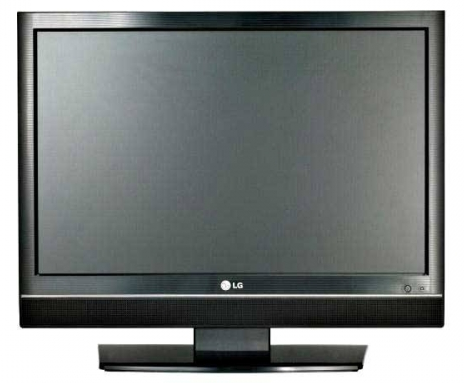
J'ai alors cherché une image relative à la télévision à insérer dans cet écran. Allez savoir pourquoi, la première idée qui m'est venue est... le JT ! Et qui dit JT dit... PPDA :D .
Notre objectif sera le suivant : nous allons tenter de réduire la taille de cette image de sorte à ce que ses nouvelles dimensions nous permettent de l'insérer dans l'écran d'ordinateur. On va donc activer la transformation Homothétie avant de rétrécir l'image puis de la placer au niveau de l'écran.
Un nouvel exercice amusant !
Et si nous travaillions l'homothétie d'une toute autre manière ? On pourrait par exemple utiliser deux images aux sujets communs mais aux échelles différentes...
Mais qu'est-ce qu'il est en train de me raconter, là... ? o_O
Pour illustrer l'homothétie, victor m'a suggéré un petit exercice de mise à l'échelle. Il m'a fourni deux photos que je vous présente ci-dessous. Chacune d'elles présente un appareil photo et une règle. Votre mission, si vous l'acceptez, consiste à "réunir" ces deux photos en une seule et même image sur laquelle les appareils photos apparaitront à la même échelle, ceci parce que l'on va faire superposer les mesures des deux règles et pour que l'on se rende bien compte de leur différence de taille.
Voici les consignes : on va chercher dans un premier temps à superposer les deux images. Ensuite, pour réussir l'exercice, nous allons réduire l'image de l'appareil photo Minox à l'aide de l'homothétie de sorte à ce que les mesures de la règle se superposent à celles de la règle de l'image du Konica.
Veuillez tout d'abord créer une nouvelle zone de travail aux dimensions supérieures à celles des deux images. Par exemple : 800*650px. On aura ainsi toute la place pour travailler ;) . Puis, veuillez copier et coller les deux images ci-dessus ou les ouvrir dans Photoshop pour les faire ensuite glisser dans la zone de travail que vous venez de créer. Au final, la fenêtre de calques doit ressembler à celle-ci :
Nous allons maintenant réduire le calque Minox afin que les mesures de sa règle se superposent avec celles de la règle Konica.
Petit problème : la règle Konica est totalement masquée par le calque Minox qui figure en premier plan dans la fenêtre de calques. Si vous avez bien suivi depuis le début, vous savez qu'il existe une solution très efficace qui consisterait à modifier la transparence d'un calque, en l'occurrence celui de Minox, ceci dans le but de laisser apparaitre celui de Konica :-° ... Je vous invite alors à réduire l'opacité du calque Minox à 50% puis activer la transformation Homothétie sur ce même calque.
Nous allons utiliser l'homothétie afin de réduire l'image de l'appareil photo Minox pour que les mesures de sa règle se superposent à celles de la règle de l'appareil photo Konica. En d'autres termes, nous allons faire en sorte que les mesures 0 et 10 des deux règles ne fassent qu'une.
Allez-y, commencez. Utilisez l'homothétie afin de réduire proportionnellement (appuyer simultanément sur la touche Shift ou Command) l'image Minox et rassembler les deux mesures de chaque image que je viens de vous donner. Voilà où je veux en venir :
Validez la transformation quand vous la jugez correcte puis rétablissez l'opacité de l'appareil photo à 100%. Le travail est terminé, vous venez d'ajuster une image à l'échelle d'une autre :D .
On a pu, ainsi, se rendre compte de la différence de taille entre l'appareil photo Konica (plus imposant) et l'appareil photo Minox (plus petit) grâce à la transformation en homothétie ^^ .
Ahhh, cette nouvelle transformation, elle va vous plaire, cela ne fait aucun doute ! Nous nous intéressons désormais à la transformation nommée Inclinaison.
Quand on clique dessus, nous n'avons à priori rien de nouveau. On retrouve notre espèce de cadre avec ses fameux petits carrés transparents. Ce qui change, c'est quand on manipule ces petits carrés.
Ici, il n'est plus réellement question de symétrie mais de redressement. Nous allons tout bonnement incliner le calque (pas difficile à deviner, je le conçois :-° ), c'est-à-dire que l'on va le pencher et pourquoi pas même le coucher.
Voici l'image sur laquelle je vais vous proposer d'effectuer une inclinaison.
Une fois la transformation Inclinaison choisie, on l'active :
En maintenant le clic sur le carré transparent situé en haut au milieu de l'image puis en déplaçant le curseur vers la droite, on remarque que le haut du calque se déplace en conséquence sans que le bas ne bouge.
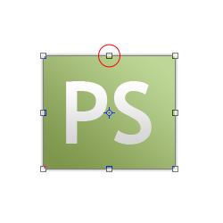
En transformant l'image à partir d'un des carrés situés en son milieu (comprendre tous les carrés sauf ceux qui se situent dans les coins de l'image), on ne travaille que sur l'axe des abscisses ou l'axe des ordonnées. Sur cet exemple, nous avons travaillé sur l'axe des abscisses (nous avons effectué un transformation de gauche à droite). On remarque alors que le déplacement a été totalement linéaire (si nous avions cliqué sur le carré transparent situé au coin inférieur droite par exemple, nous aurions pu effectivement travailler sur l'axe des ordonnées et des abscisses car nous aurions pu effectuer un déplacement de haut en bas et de gauche à droite).
Continuons. Là, on peut déjà dire que l'image est inclinée, mais allons accentuer cette inclinaison en travaillant sur ce petit carré.
Je déplace alors ce carré vers le bas.
Je vous invite à comparer les deux dernières images. La différente n'est pas très importante, mais clairement visible. N'oubliez pas qu'il faut taper sur la touche Entrée de votre clavier (ou cliquer sur le bouton prévu à cet effet dans la barre des options) pour appliquer la transformation.
Pour le plaisir, j'ai ajouté une petite ombre portée à l'image pour lui donner un peu plus de style.
Qu'est-ce que cela donne si on transforme le calque à partir des coins de l'image ?
En travaillant avec les coins de l'image, l'inclinaison sera encore plus prononcée. Je dirais même que l'image sera couchée, on donnera l'impression qu'il existe un sol invisible sur lequel l'image s'est posée.
Je vous propose un petit essai, toujours sur la même image bien entendu.
Nous allons maintenir le clic sur le coin inférieur droite de l'image.
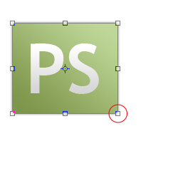
Puis, nous déplaçons notre curseur comme nous l'avons appris. On note encore une fois la linéarité sur les deux axes ;) .
On y ajoute un petite touche personnelle, et voilà le résultat :-° ...
Plutôt sympa cet effet de perspective, n'est-ce pas ? :)
Allez, on passe au tout dernier chapitre avant d'attaquer la deuxième partie. Courage ! :)
Suite et dernier chapitre de cette première partie portant toujours sur les techniques de transformation sur les axes X et Y.
Plus on avance et plus les transformations vont s'avérer importantes. Nos premières transformations étaient relativement simples, nous dirons que l'inclinaison était déjà plus élaborée. Et bien, avec la torsion (première transformation de ce nouveau chapitre), on va aller encore plus loin et vous n'êtes pas au bout de vos surprises !
Vous savez maintenant parfaitement où se trouvent les transformations, je n'ai pas besoin de vous le rappeler :) . Nous allons travailler avec la "Torsion".
Avant de cliquer où que ce soit, voici l'image sur laquelle je souhaite vous présenter mon exemple :
Maintenant, on peut cliquer sur la transformation "Torsion" :D .
Une nouvelle fois, on retrouve le cadre avec ses petits carrés transparents. Rien de nouveau donc, nous allons devoir travailler avec ces derniers comme nous venons tout juste de le faire avec la transformation précédente.
En quoi consiste cette transformation ?
On appelle "torsion" l'action qui consiste à tordre quelque chose. Cela veut dire que nous allons apprendre à... tordre un calque (si ça, c'est pas tordu !) :-° .
Le principe est toujours le même, on va choisir un carré transparent parmi les 8 visibles, maintenir le clic dessus puis déplacer le curseur de notre souris pour effectuer la torsion. Exemplifions :) .
J'ai décidé que j'allais tordre l'image à partir de son coin supérieur gauche.
D'un mouvement de souris qui m'a permis de déplacer son curseur et donc le coin supérieur gauche de l'image vers l'intérieur de cette image, je suis parvenu la tordre de cette manière.
Mais je ne me suis pas arrêté là ! Avant de valider cette transformation, j'ai entrepris une nouvelle torsion au départ du coin inférieur droite de l'image.
J'ai ensuite effectué la même opération que pour ma première torsion, c'est-à-dire que j'ai déplacé le petit carré transparent vers l'intérieur de l'image.
Voici le résultat final :
Je n'ai pas l'impression d'avoir véritablement tordu l'image, là...
Bien que ça n'y paraisse pas, nous avons bel et bien effectué une torsion, c'est-à-dire que nous avons tordu l'image sans qu'au final, on puisse se rendre véritablement compte qu'elle ait été tordue. Du coup, on a donné de nouvelles apparences et perspectives à nos images, regardez.
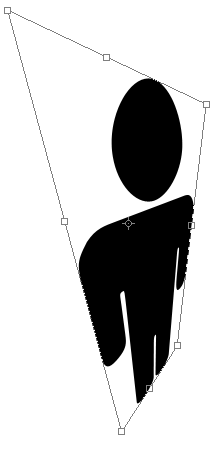
Je trouve cette transformation vraiment passionnante. La diversité des formes qu'il nous est possible d'effectuer m'incite tout particulièrement à en faire usage dans mes projets :) . D'ailleurs, est-ce que vous vous souvenez de l'exemple que je vous avais proposé dans le chapitre des sélections ?
Comment ça, quel exemple ? :D Cet exemple, pardi ! (section "Transformer le contenu d'une sélection") On avait incrusté l'image d'une pizza dans un écran New-Yorkais, un peu à l'image de ce que l'on a fait avec notre PPDA national. Simplement, l'incrustation dans l'autre exemple est plus complexe dans la mesure où l'écran est quelque peu incliné. Enfin, vous savez comment faire maintenant, on peut soit utiliser l'inclinaison ou, si l'angle ne nous le permet pas, user de la torsion :) .
La transformation suivante ne porte pas son nom au hasard : elle consiste à donner de la profondeur au calque de sorte à ce qu'un effet de perspective apparaisse.
La perspective, tu dis ?
Oui, la perspective. S'il s'agit d'un terme utilisé dans divers domaines, nous traiterons la perspective géométrique (comme c'est étonnant :D !).
On construit la perspective à l'aide d'un point de fuite. Il s'agit d'un point inexistant et imaginaire sur lequel nous nous baserons pour concevoir notre construction. Voyez le schéma ci-dessous.
En haut, il y a le point de fuite : il n'existe pas, vous êtes censés l'imaginer. S'il apparait sur cette image, c'est bien entendu pour l'exemple. ;)
En bas, il y a le carré gris. C'est notre image, celle que nous allons transformer. Je l'ai nommée Figure.
Nous allons commencer par activer la transformation en cliquant sur "Perspective" dans le menu Édition > Transformation.
Ainsi, en déplaçant l'un des coins supérieurs de la figure, ici le coin gauche...
... vers le point de fuite que l'on imagine, on va également engendrer le déplacement simultané du coin opposé qui va alors lui aussi s'approcher vers le point de fuite et ce de manière totalement symétrique.
Ainsi, on crée une perspective car les côtés gauche et droit du carré se dirigent vers ce point de fuite. Pour que cet effet de perspective soit encore plus marquant, on peut rapprocher les deux coins du carrés de sorte à ce qu'ils se touchent carrément.
La perspective prend alors tout son sens quand on a donné de la profondeur à l'image.
Gné ? Je ne vois en aucun cas un effet de profondeur dans cette image. Ça fait juste un triangle :D .
Cela ne se voit pas car l'image est grise, neutre. En reprenant le même exemple mais avec une image avec un contenu, une route par exemple, on peut obtenir un résultat un peu plus sympa.
Voici une route des plus traditionnelles. Comme je vous le disais, en y ajoutant de la perspective, la route prend une toute autre apparence, on a alors l'impression qu'elle s'éloigne et que l'image elle-même est en 3D (les fameux mots clés !) :
Au fait, on n'est pas obligé d'imaginer un point de fuite au centre de la figure. En effet, en travaillant avec les carrés transparents du milieu (c'est-à-dire tous les carrés transparents qui ne sont pas aux coins de l'image comme ceux que l'on vient tout juste d'utiliser), on peut déplacer le point de fuite imaginaire. Regardez :
La perspective est la même. J'ai simplement modifié la trajectoire de la route en fonction d'un nouveau point de fuite. Pour modifier cette trajectoire, j'ai déplacé ce carré transparent :
Eh bien mes amis, il faut dire que tout cela passe bien vite. On en est déjà à la dernière transformation ! Désormais, on va travailler avec la déformation :) .
Le plus gros de notre temps, nous avons appris à déplacer une image dans l'espace. Nous l'avons alors inclinée, couchée, tordue, perspectivée bref, de bien belles choses, mais nous ne l'avons pas encore véritablement déformée.
Tu plaisantes ? Regarde donc tes silhouettes noires, elles sont toutes déformées !
Oui, c'est vrai, mais vous allez vous rendre compte que les possibilités sont plus nombreuses avec la déformation et que les résultats sont franchement plus élaborés.
Par définition et sur Photoshop, on dit qu'une déformation est la modification de la forme ou de la taille d’une image. C'est donc ce que l'on va faire, ensemble, en travaillant sur cette image :
Souvenez-vous, pour chacune des transformations étudiées, chaque fois que l'on en activait une, notre image se voyait entourée de ce cadre :
Eh bien, figurez-vous que cela change légèrement quand on active la déformation.
Tout d'abord, il n'y a plus huit carrés transparents mais seulement quatre ! On les retrouve à chaque coin de l'image. D'autre part, on remarque l'apparition de nouveaux éléments, je veux parler de la grille qui traverse l'image et qui relie chacun de ces nouveaux points gris :
Cette grille, elle est l'atout principal de la déformation. C'est une fonctionnalité que l'on ne connait pas (elle n'est pas nouvelle pour rien) et le moins que l'on puisse dire, c'est qu'elle en a dans le ventre !
En activant la déformation (je dis bien en l'activant seulement), on va rendre notre calque élastique. On va donc pouvoir l'étirer à notre guise pour le déformer (d'où le nom déformation), et pour cela, on va justement faire usage de cette grille.
Le principe de la déformation, c'est d'utiliser les différentes parties de la grille que l'on va alors étirer avec le curseur de notre souris. Avant, nous ne pouvions utiliser que les huit carrés transparents suivants :
Désormais, on va pouvoir utiliser entièrement l'image, c'est-à-dire la déformer dans sa totalité. Qu'il s'agisse des petits carrés transparents, des points gris ou de l'image en elle-même (c'est-à-dire à l'intérieur même de cette image), vous effectuerez bel et bien une déformation !
Avant toute manipulation, je vous signale que j'ai nommé certains éléments de la nouvelle grille.
Dans l'exemple ci-dessous, j'ai maintenu le clic sur le carré transparent du haut gauche de mon image et ai déplacé mon curseur vers son intérieur.
La déformation s'est correctement déroulée comme vous pouvez le voir. On a étiré le coin du haut gauche de l'image vers son intérieur comme convenu. On note cependant une nouveauté liée aux petits points gris : ils n'ont pas bougés et sont toujours reliés avec le carré transparent.
En fait, on va les manipuler pour changer la courbe de l'image qui se situe entre le carré transparent que nous venons de déplacer (il s'agit du carré que j'ai nommé C1) et les carrés transparents nommés C2 et C4. Si vous voulez tout savoir, nous aurions très bien pu les modifier avant même d'avoir touché au carré transparent.
Évidemment, on utilise ce point gris de la même manière que les carrés transparents, il suffit juste de maintenir le clic dessus et de déplacer son curseur ;) .
On peut remarquer que la courbe a bel et bien été modifiée !
Je vous ai concocté une petite image animée pour que vous puissiez comparer la courbe avant et après la déformation du point gris.
On ne va pas s'arrêter là. Un autre avantage que présente la déformation est de pouvoir déformer l'intérieur de l'image. Cela veut dire que l'on va procéder exactement pareil qu'avec les petits carrés transparents et les points gris, sauf que notre point de référence cette fois-ci, ce sera la grille qui traverse l'image.
Du coup, en déformant le milieu de l'image, on note une déformation de la grille :
Aucun carré ni point n'ont été déplacés sur cet exemple. Je n'ai fait que maintenir le clic en plein milieu de l'image et le déformer en bougeant mon curseur. Ainsi, on se rend compte à quel point la déformation est intéressante. On utilise très souvent cette fonctionnalité de Photoshop pour des images abstraites mais aussi énormément dans le domaine de la déformation photographique ;) .
Histoire de vous inciter à essayer la déformation autant que vous le pouvez, je vous propose un exemple. Je suis parti de ce rond :
Avec un peu de jugeote, on peut laisser parler sa créativité la plus profonde :D .
Plus sérieusement, prenons un exemple sensé, je vais déformer cette image :
Cette composition est constituée de deux calques : le rond au dégradé de gris pour le premier, tous les petits ronds noirs pour le deuxième. Je clique sur Edition > Transformation > Déformation.
Ensuite, je maintiens le clic au niveau des deux cercles rouge ci-dessous, et je vais, l'un après l'autre, les déplacer en diagonale comme ceci :
Ce qui donne :
On réitère l'opération sur la partie inférieure du rond, ce qui nous donne le résultat suivant :
Quand bien même le rond n'est pas devenu carré (ce n'était pas forcément ce que je recherchais, soit dit en passant), il est clair qu'il ne s'agit plus d'un cercle parfait.
On peut ensuite d'amuser à modifier de nouveau ce qui était anciennement rond, en maintenant le points noirs supérieurs et inférieurs, et les rabattant à l'intérieur de notre cadre de déformation :
Et pour ceux que ça intéresserait, on peut rendre notre dessin homogène en reproduisant la même opération sur les ronds :
Libre à vous d’interpréter ce dessin comme bon vous semble. A vrai dire, cela peut ressembler à quelque chose, mais aussi à rien : certains logos émanent de l'imagination des graphistes et n'ont pas forcément de signification pure et dure. Personnellement, ça me fait penser à une sorte de dé, ce sera donc mon interprétation à moi. :)
Finalement, j'espère que vous aurez saisi à quel point cette transformation est puissante. N'hésitez vraiment pas à faire des essais, vous serez sans aucun doute souvent amenés à utiliser la déformation.
Bon, même si je redoute vos réactions, je dois vous faire une petite confidence que je garderais bien pour moi. Ce que j'essaie de vous dire, c'est que... et bien, figurez-vous que je n'utilise absolument jamais les transformations que nous venons de voir ensemble.
Tu me fais marcher :lol: ? *Rire jaune*
Non, non, c'est la vérité. Enfin, quand je dis que je n'utilise pas les transformations, disons que je ne passe pas par le menu "Transformation". J'utilise un moyen différent, à savoir la Transformation manuelle.
Bon Dieu, pourquoi nous avoir enquiquiné avec toutes tes transformations à la noix dans ce cas ?
Eh bien, rassurez-vous, la transformation manuelle regroupe absolument toutes les transformations que nous avons jusqu'ici étudiées, qu'il s'agisse de la rotation, de l'inclinaison ou bien même de la déformation. Il s'agit d'un tout-en-un que je préfère personnellement utiliser, après je n'oblige personne à me suivre, chacun procède comme il le veut.
Pour activer la transformation manuelle, il faut ouvrir le menu Édition et cliquer sur "Transformation manuelle" (juste au-dessus du menu "Transformation"), ou bien passer par la combinaison CTRL + T (Command (ou Pomme) + T).
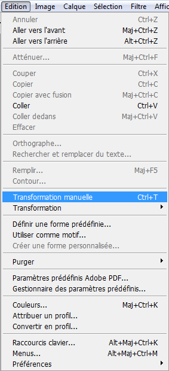
Une fois activée, la transformation laisse apparaitre le cadre suivant.
Comme vous pouvez le remarquer, il s'agit du premier cadre que l'on ait connu avec la plupart des transformations étudiées (finalement, seul le cadre de la déformation changeait). Et bien figurez-vous que cette fois-ci, vous allez pouvoir effectuer toutes les modifications jusqu'ici étudiées rien qu'avec ce cadre et les touches de votre clavier (quand c'est nécessaire d'en utiliser).
Par exemple, en maintenant le clic sur l'un des carrés transparents situés sur les coins de l'image suivante et en appuyant simultanément sur la touche Shift du clavier, nous serons en mesure d'effectuer une transformation en homothétie. De même, si l'on ré-effectue cette même opération mais maintenant le clic sur le carré transparent situé en haut du calque au niveau de son bord et en appuyant cette fois-ci sur les touches ShiftetCtrl (ou Command/Pomme), nous aurons la possibilité d'incliner le calque :) .
Voici la liste des différents raccourcis à connaitre (après avoir activé la transformation).
Homothétie : ne nécessite aucun raccourci. Il suffit de cliquer sur l'un des coins de l'image (et d'appuyer sur la touche SHIFT pour la proportionnalité).
Rotation : ne nécessite aucun raccourci. Il suffit de maintenir le clic n'importe où en dehors du cadre puis de déplacer son curseur. Vous définissez alors très précisément l'angle de la rotation ;) .
Inclinaison : SHIFT + CTRL (ou SHIFT + COMMAND si vous êtes sur MAC)
Torsion : CTRL (ou COMMAND si vous êtes sur MAC)
Perspective : aucun raccourci.
Déformation : aucun raccourci clavier. Cependant, vous trouverez le bouton
dans la barre des options permettant d'activer la transformation.
Un petit exercice amusant
Maintenant que vous êtes à même de pouvoir faire une transformation sur un calque, vous allez pouvoir vous exercer sur un exemple plutôt amusant. Admettons que nous soyons en train de travailler sur cette image :
Le but de l'exercice est d'insérer l'image suivante à l'intérieur de la première de sorte à ce qu'elle apparaisse comme le contenu du tableau blanc à motifs situé à gauche de l'image :
Alors, nous allons transformer cette image pour qu'elle prenne de nouvelles dimensions et une nouvelle forme. Ensuite, on n'a plus qu'à !
Notez que j'ai ajouté une petite ombre interne pour améliorer l'intégration de l'image dans le tableau.
Et voilà que se termine ce dernier chapitre :) . Le moins que l'on puisse dire, c'est qu'on en aura appris des choses !
Selon moi, les infographistes ont constamment recours aux transformations dans leurs projets, même quand ça parait improbable au départ. C'est tout du moins mon cas. D'ailleurs, je n'ai pas besoin de vous dire qu'il ne faut en négliger aucune, hein ;) .
Ce qui est génial, c'est que l'on est en plein dans la modification de calque. Et maintenant que l'on est dans le vif du sujet, nous ne ferons que cela dans les prochains chapitres ! Modifications, modifications et modifications !
En même temps, à y lire le titre de la prochaine partie, c'est facile à deviner...
La première partie de ce tutoriel s'achève ici. Il n'est jamais facile de terminer tout une partie d'un cours contenant autant d'informations si l'on n'en trouve pas la motivation. Et pour ça, je tiens à vous féliciter. :)
J'oserais presque dire que vous ne faites plus partie de la catégorie des « novices », désormais ! Toujours débutant, certes, mais le cours est loin d'être terminé et vous avez encore bien des choses à apprendre avec moi !
Dans la prochaine partie, nous approfondirons nos connaissances en nous intéressant à un domaine particulièrement rattaché à Photoshop, je veux parler de la retouche photographique. Cela vous intéresse ? Alors passez à la suite, qu'attendez-vous !?
Tiens, vous êtes toujours avec moi ? Quelle assiduité, je constate que votre soif d'informations n'est pas en reste et cela me convient parfaitement, j'ai encore un tas de trucs à vous raconter :D .
D'un point de vue technique, savez-vous ce qu'est une couleur ? Je veux dire... vous savez utiliser certains outils du logiciel et quelques une de ses fonctionnalités et c'est déjà un très bon début, croyez-moi. Toutefois, on ne se dit pas infographiste avec si peu d'arguments. Savoir utiliser un logiciel, c'est bien. Connaitre la technicité de ce que vous effectuez, c'est vous permettre de comprendre ce que vous faites et comment cela fonctionne, un peu à l'image de ce que vous avez appris sur le pixel, la résolution et le matriciel.
Par conséquent, avant de débuter le cours (qui porte davantage sur l'utilisation et le paramétrage des couleurs d'une image, soit dit en passant), je vous ai concocté une petite minute théorique, comme vous les aimez ! Je dois dire que le titre de cette partie est un peu provocateur, évidemment que vous savez ce qu'est une couleur. Simplement, je souhaite aller plus loin dans la réflexion et déterminer le pourquoi du comment. C'est à la fois bon pour vous et fondamental si vous voulez un jour vous vanter d'être infographiste.
Dans la première partie, nous avons vu l'essentiel en ce qui concerne la base des bases pour l'utilisation des outils et fonctionnalités de Photoshop. Si vous voulez, c'était une "partie introductive". Toutefois, on a pu voir à quel point la notion de couleur pouvait devenir complexe, notamment depuis que l'on a utilisé les fameux codes hexadécimaux. Un petit point sur les couleurs ne serait donc pas une mauvaise chose.
Plus qu'un cours théorique banal comme on en trouve un peu partout (même à l'école), il s'agit d'une vraie mine d'information qui ne fera pas de mal à votre culture personnelle. ;)
Un jour d'école, et plus précisément pendant un cours d'arts plastiques, le professeur nous avait demandé, à mes camarades de classe et moi, si nous savions ce qu'était une couleur.
"Une couleur ? Tss, fastoche."
Alors, tout le monde (moi compris) s'est empressé de demander la parole pour donner la réponse. Pourtant, quand le professeur m'a interrogé, je me suis retrouvé absolument sans réponse.
"Une couleur ? Hum... Je sais ce que c'est... Mais pourtant, je suis incapable d'expliquer quoi que ce soit o_O ..."
Je ne vous raconte pas la honte :p . Et si c'était mon tour de vous demander si vous savez ce qu'est une couleur ? Sauriez-vous vraiment me répondre ? Je vais faire en sorte de vous éviter ce supplice et vous proposer une explication avec des mots simples et accessibles tant la définition scientifique est trop complexe à mon goût.
Bon, vous le savez maintenant, je ne suis pas très doué pour les définitions. Celle-ci est tirée de l'encyclopédie Wikipédia, comme j'ai désormais l'habitude de le faire ;) .
Citation : Wikipédia
La couleur est une sensation qui provient de la capacité de l'œil humain de distinguer trois analyses différentes d'une vue : la vision rouge, la vision verte et la vision bleue.
La combinaison de ces trois visions permet de voir en couleurs.
En langage informatique, on nomme une telle combinaison un mode colorimétrique. Nous en avons déjà vaguement entendu parler dans le chapitre portant sur la création d'une zone de travail ;) . On présente les modes colorimétriques sous leurs abréviations respectives :
RVB (du français Rouge-Vert-Bleu)
RGB (de l'anglais Red-Green-Blue)
De manière métaphorique, on peut dire que l'œil humain est configuré au mode colorimétrique RVB. Il s'agit donc d'un mode "naturel" et commun à tous.
Le mode RVB est défini par trois couleurs : le rouge, le vert et le bleu (au risque de me répéter). Ce sont les couleurs primaires du RVB (c'est-à-dire ses couleurs d'origine).
Lorsque l'on mélange ces trois couleurs entre elles (on appelle cela une synthèse additive, mais je ne vous demande pas de retenir ce terme), on engendre l'apparition de nouvelles couleurs : ce sont les couleurs secondaires. Par exemple, si on mélange le rouge et le vert, on obtient du jaune. De même, si on mélange le rouge mais avec le bleu cette fois, on obtient du magenta. Mais ne vous y trompez pas : cela fonctionne si et seulement si les couleurs proviennent d'une source lumineuse. On ne parle donc pas de peinture ou d'encre, juste de lumière.
Afin de générer différents tons de couleur, par exemple du jaune foncé ou du jaune clair, on va jouer avec l'intensité des couleurs primaires.
Leur quoi ? Qu'est-ce que c'est que ça ? o_O
Oui, chaque couleur primaire du mode RVB et d'un quelconque autre mode colorimétrique d'ailleurs est caractérisée par son intensité. Pour le mode RVB, on définit cette intensité à l'aide de valeurs allant de 0 à 255 pour chacune d'elles.
Rouge : 0 (nulle)
255 (max.)
Vert : 0
255
Bleu : 0
255
Il existe un schéma qui permet de représenter graphiquement la combinaison de chacune des couleurs. A première vue, il semble un peu complexe à comprendre mais avec un peu de concentration, vous réussirez à le déchiffrer :
Je n'y arrive pas, je ne comprends absolument rien... Ça veut dire quoi, tous ces codes ?
Allez, un petit effort. :D Prenez 5 minutes pour bien analyser le schéma et le comprendre. Tout en haut, au-dessus de la couleur rouge, il est indiqué :
R : 255
V : 0
B : 0
Ici, l'intensité du rouge est maximale (elle a atteint la valeur max. de 255). A contrario, celle des couleurs vert et bleu est nulle, c'est pourquoi il n'y a que le rouge qui apparait. C'est aussi le cas pour le vert (en bas à gauche) et le bleu (en bas à droite).
D'accord ! Et concernant les trois autres couleurs, ce sont des combinaisons, c'est bien ça ?
Oui, pour obtenir le cyan (en bas du schéma), on a combiné le vert et le bleu. Du coup, si l'on regarde le code d'intensité, ça donne :
R : 0 (pas de rouge du tout)
V : 255
B : 255
Les valeurs du vert et du bleu sont maximales tandis que celle du rouge est nulle. C'est ainsi que le Cyan est formé. Et quand on mélange carrément les trois couleurs primaires (donc que l'on mélange le rouge, le vert et le bleu, tous trois en intensité maximale 255), ça donne du blanc ! Oui, oui, du blanc !
Attention, je vous rappelle que les couleurs RVB sont visibles par l'humain à partir du moment où elles sont tirées d'une source lumineuse. Du coup, si vous allumez deux lampes torches, l'une dont l'éclairage est vert et l'autre dont la lumière émise est bleue, et que vous ciblez les deux lampes à un même endroit, vous laisserez apparaitre non pas du vert ni du bleu, mais... du cyan. ;) Et comme les pixels de votre écran envoient de la lumière, on peut facilement en déduire que les pixels sont "codés" en... RVB, c'est bien, vous suivez !
Tu veux dire qu'il existe un autre mode colorimétrique différent du RVB ? :o
Si vous voulez tout savoir, il existe bien d'autres modes colorimétriques que le RVB. Sur Photoshop, la liste est relativement longue, je peux néanmoins vous en citer quelques uns pour l'exemple, comme le RVB, les niveaux de gris, les couleurs indexées et... le CMJN !
Il s'agit d'un mode que l'on appelle également quadrichromie et qui s'écrit CMYK en anglais. Si RVB signifie Rouge-Vert-Bleu, le CMJN regroupe quatre teintes :
Cyan
Magenta
Jaune
Noir
Attends, attends... les trois premières de ta liste sont les couleurs secondaires du RVB, non ? Celles qu'on obtient en combinant ses couleurs primaires !
D'un point de vue schématique, on peut effectivement inverser toutes les couleurs du mode RVB pour obtenir celles du mode CMJN. Ainsi, on appellera la combinaison des couleurs du CMJN une synthèse soustractive, terme que je ne vous demande pas de retenir encore une fois. ;)
Un mode "dépassé"
Le mode CMJN n'a pas connu le jour tout de suite. En réalité, au départ, le mode n'était pas composé de quatre couleurs mais de trois seulement : on connaissait alors le mode CMJ pour Cyan-Magenta-Jaune (donc pas de noir).
Comment on faisait, alors, sans noir ?
Vous vous méprenez : le noir existait bel et bien. Et pour l'obtenir, c'était finalement assez simple, il suffisait de combiner les trois couleurs primaires du CMJ que l'on connait maintenant : le cyan, le jaune et le magenta. Un peu à l'instar du blanc que l'on obtient avec les couleurs primaires du RVB d'ailleurs. Regardez plutôt la représentation graphique du mode CMJ, cela vous parlera peut-être plus étant donné qu'il ressemble comme deux gouttes d'eau à celui du RVB :
Néanmoins, on a constaté que le mode CMJ n'était pas particulièrement efficace, du moins on s'en est aperçu quand on l'utilisait pour imprimer. En fait, l'explication, c'est que les cartouches d'imprimante n'étaient pas entièrement remplies de leurs couleurs respectives, elles ne l'étaient pas à 100% contrairement à ce que peut afficher le schéma ci-dessus (qui est correct, je vous l'assure : c'est juste à l'impression que l'on se rendait compte du contraire). Problème, si ces trois couleurs n'ont pas 100% de leur intensité, forcément, on n'a pas 100% de noir (mais plutôt du gris).
Ainsi, pour palier à ce problème de noir pas vraiment noir, il a juste fallu rajouter du noir pur, d'où ce nouveau mode que l'on connait et utilise aujourd'hui, le CMJN ;) .
Ici encore, on pourrait représenter graphiquement le CMJN et ses combinaisons de couleurs avec un schéma assez différent finalement des deux autres puisqu'on n'a pas trois couleurs, mais quatre : le cyan, le magenta, le jaune et... le noir !
Mais pourquoi ne pas utiliser le RVB pour imprimer ?
On peut très bien utiliser le RVB pour imprimer. Du moins, en soi, c'est faisable. Mais on a tendance à utiliser le mode CMJN pour imprimer car il est fait pour ça. Disons que ce n'est pas une obligation, mais une possibilité. En fait, il vaut mieux qu'une image à imprimer soit codée au mode CMJN car le résultat sera plus optimal. Pourtant, quand vous prenez une photo avec votre appareil photo, vous allez capter les lumières de l'environnement et créer une photo numérique, c'est-à-dire au mode RVB...
Hum... donc je peux imprimer une photo prise avec mon appareil photo, même si cette photo est en RVB ?
Oui, de toute manière votre photo sera forcément en RVB si elle sort de votre appareil. Pour que l'impression fonctionne, il existe une automatisation qui consiste à convertir votre image RVB en une image CMJN. C'est d'ailleurs pour cela que je vous disais qu'il n'était pas obligatoire d'avoir une image au mode CMJN pour imprimer, même si techniquement l'image sera imprimée avec ce mode grâce à l'automatisation. Notez toutefois que, d'une manière générale, les professionnels de l'imagerie ont tendance à convertir eux-mêmes leurs travaux RVB au mode CMJN (comprendre "manuellement") car l'automatisation peut engendrer une perte de qualité suffisamment importante à l'impression pour qu'une telle démarche soit nécessaire. D'ailleurs, la majorité des imprimeries vous demandera à coup sûr des images CMJN. ;)
On peut dire que la minute théorique est plus ou moins passée maintenant car vous allez devoir ouvrir Photoshop pour cette sous-partie. Avant cela, vous auriez très bien pu suivre ce chapitre sans même l'avoir ouvert au préalable !
On va se concentrer quelques minutes sur la palette flottante "Couleur" que j'appellerai fenêtre Couleur tout au long de cette partie pour que vous ne la confondiez pas avec un autre élément que nous allons aborder en même temps. Vous trouverez la fenêtre Couleur à droite de votre logiciel, à moins que vous ayez disposé votre espace de travail à votre sauce. :D
Au premier abord, vous ne devriez pas être trop perdu par l'interface de cette fenêtre. Si c'est le cas, ce n'est pas très grave je vous rassure. On a de toute façon déjà fait une belle avancée, moi qui disais il y a encore quelques chapitres que vous serez plus à l'aise avec l'interface de Photoshop au fur et à mesure que vous lirez le tutoriel, je suis sûr que c'est un peu le cas.
Comment lire et comprendre la fenêtre Couleur ? C'est plutôt simple en fait, d'ailleurs vous connaissez déjà à peu près tous les éléments qui la composent. Cette fenêtre n'est en fait qu'un concentré de tous les éléments que l'on retrouve dans la palette de couleurs que nous utilisons pour ouvrir le sélecteur de couleur et en définir une. Mieux encore, elle est un raccourci vers ce sélecteur.
À gauche de la fenêtre, juste en-dessous de l'onglet "Couleur", vous apercevez ceci :
. Si vous avez bien suivi le cours, vous vous souviendrez ce sont les couleurs de premier plan et d'arrière-plan. Il s'agit tout bonnement d'un raccourci, car on retrouve cette même palette dans la boite à outils :
Sur cette image...
La couleur de premier plan est le noir.
La couleur d'arrière-plan est le blanc.
Je vous invite à cliquer sur l'aperçu miniature de la palette de couleurs afin de remettre par défaut les couleurs de premier et d'arrière-plan. En cliquant, ce sont les couleurs noir et blanc qui remplaceront les précédentes.
Bon, essayons de creuser un peu et de voir comment fonctionne le reste de cette fenêtre. Nous nous intéresserons aux trois éléments ci-encadrés :
Chaque ligne se présente par une lettre suivie d'une jauge/frise et d'un champ blanc au chiffre 0. Les lettres représentent l'initiale des couleurs primaires du RVB, ce qui ne devrait pas vous étonner suite à ce que l'on vient d'étudier sur les modes colorimétriques.
Les jauges permettent de définir l'intensité des couleurs. En déplaçant le curseur de la jauge de gauche à droite, on réduit ou augmente l'intensité de couleur de 0 à 255. On peut aussi taper une valeur dans le champ blanc prévu à cet effet, il suffit de remplacer le 0.
Par exemple, en inscrivant la valeur 255 à la couleur rouge (R) et 255 à la couleur bleue, comme ceci...
... on obtient, oh, tiens, du magenta ! Cela ne vous rappelle rien ? :D Oui, rouge + bleu = magenta !
Finalement, c'est assez simple, vous inscrivez les valeurs de chaque couleur (rouge et/ou vert et/ou bleu) et vous obtenez leurs couleurs secondaires en fonction de l'intensité des couleurs que vous aurez définies grâce à la jauge ou le champ blanc.
Terminons avec le dernier élément de la fenêtre Couleur. Je veux parler parler de la petite frise colorimétrique que l'on trouve tout en bas :
C'est un vrai petit bijou car, en plus d'être super fonctionnelle, cette frise constitue la miniature du sélecteur de couleurs. Elle recense ici toutes les couleurs existantes du mode RVB : on a alors le rouge, le jaune, le vert, le cyan, le bleu et le magenta, sans parler du noir et du blanc. On les aperçoit ici même sur l'horizontale de la frise :
À l'image du sélecteur de couleurs, on peut définir la luminosité et la saturation des couleurs. Sur le sélecteur de couleurs, on faisait cela en déplaçant le rond transparent respectivement à la verticale et à l'horizontale :
Avec ce sélecteur miniature, c'est la même chose. Je dirais même que c'est plus simple (mais pas forcément très précis), on clique sur une couleur et hop, elle apparait en couleur de premier-plan dans la palette de couleurs. Et ainsi, les couleurs R V et B sont paramétrées comme le montre l'image ci-dessous.
Notre petit tour de fenêtre n'est pas encore terminé. Avez-vous remarqué le petit point d'exclamation accompagné d'un carré de couleur en bas à gauche ?
En fait, ce petit panneau "attention" vous indique que la couleur en vigueur n'est techniquement pas imprimable. Tout du moins c'est ce que constate Photoshop, lui qui n'en a que pour le CMJN quand il s'agit d'imprimer. Cet avertissement est très utile si vous projeter d'imprimer votre document, cela vous permet de savoir si vos couleurs passeront correctement ou non. De ce fait, Photoshop met une autre fonctionnalité à votre disposition : il vous génère automatiquement une alternative à la couleur non-imprimable que vous avez choisie. D'où le petit carré de couleur que vous trouverez juste à côté du panneau de signalisation sur lequel il faut cliquer pour le rendre effectif ;) . En résumé :
Je définis une couleur via mon sélection de couleurs.
Cette couleur n'est pas gérée par le mode CMJN, donc non-imprimable sans perte de qualité.
Alors, le panneau "attention" vous signale que Photoshop vous suggère une nouvelle couleur proche de la vôtre que vous êtes libre de choisir en cas d'impression.
Je vous avais promis qu'on allait parler de couleur, je ne vous ai pas menti ! Ceci dit, vous avez appris des choses, aujourd'hui, n'est-ce pas ? :)
Le cours est loin d'être terminé, je dirais même qu'il commence véritablement maintenant. On est parti pour travailler les couleurs d'une photo pendant quasiment toute cette partie, même si bien entendu d'autres surprises vous sont réservées ;) .
Je ne vous apprends rien en vous disant que Photoshop est étroitement lié à la photographie. Quiconque est photographe a déjà touché au moins une fois dans sa vie le logiciel à la plume. Pourquoi ? Parce que photographie rime très souvent (pour ne pas dire constamment) avec retouche. D'où le terme de retouche photographique devenu courant dans la vie de tous les jours.
Les lecteurs moins avertis se demanderont légitimement pourquoi ils utilisent Photoshop et pas un autre. A vrai dire, s'il s'agit d'un choix qui leur est propre et bien qu'il existe des alternatives (parfois même gratuites !), on a tendance à utiliser Photoshop plus qu'un autre car il est reconnu comme étant le logiciel le plus complet et le plus performant. J'ose d'ailleurs croire que c'est l'une des raisons qui vous a poussé à lire ce tutoriel :-° ...
Les termes de "retouches photographiques" sont tellement répandus que je suis persuadé que la majorité des lecteurs ici présents savent ce que c'est. Pourtant, je me permets de croire que vous n'imaginez pas réellement à quel point retoucher une image peut s'avérer utile et intéressant. Qui n'a jamais été confronté aux yeux rouges après une prise avec flash ? Qui n'a jamais obtenu des photos ratées à cause d'un satané contre-jour ? Qui n'a jamais rêvé de donner des couleurs à une photo qui est à l'origine trop fade, sans vie ? Autant de défauts que Photoshop nous permet de régler grâce à des paramètres prévus à cet usage.
Rendez-vous compte : on ouvre des fenêtres qui servent à régler des paramètres de l'image, on y rajoute un zeste de jugeote et hop, le tour est joué. On appelle cela la chromie, et c'est maintenant que ça se passe ;) .
De nos jours, prendre de belles photos est à la portée de tout le monde. On ne compte plus le nombre d'appareils photo performants que l'on trouve sur le marché, même les téléphones portables en sont maintenant équipés, c'est dire.
Très souvent pourtant, il arrive que les résultats ne soient pas ceux escomptés à cause, par exemple, d'une lumière trop importante émise sur le sujet de la prise. Cette lumière peut provenir de différentes sources : le soleil, une lampe, et même très souvent le flash de l'appareil lui-même ! Ce problème récurrent est dû au fait que l'appareil a capté trop de lumière au moment de la prise.
En photographie, on utilise un terme pour définir l'action d'un rayonnement lumineux sur une pellicule photographique : il s'agit de l'exposition. Ainsi, quand une photo est trop claire, disons plutôt trop lumineuse, on parle de surexposition, on dira alors que la photo est surexposée. On peut aussi très bien dire qu'une photo est sous-exposée, cela serait alors dû à un manque de lumière.
Notre objectif dans ce chapitre va être de régler cette surexposition dérangeante. Vos photos seront alors retouchées, certes. Mais au moins, elles ne seront plus bonnes à jeter à la poubelle et vous pourrez vous vanter d'avoir remis sur pied une photo à l'origine ratée ;) .
Niveaux de couleur
La première fonctionnalité que nous découvrirons dans ce chapitre consiste à régler les niveaux de couleur d'une image. Veuillez créer une nouvelle zone de travail puis ouvrir la fenêtre correspondant aux niveaux de couleur, via le menu Image > Réglages > Niveaux.
Mais au fait, il s'agit d'un réglage ! Et, souvenez-vous, il existe justement un calque spécialement dédié aux réglages ! Il s'agit du calque appelé Calque de réglage. Il vous suffit simplement de cliquer sur le bouton
en bas de la fenêtre de calque puis de cliquer sur "Niveaux". Ainsi, la fenêtre des niveaux de couleur s'ouvre, alors qu'un nouveau calque est créé :
Le raccourci clavier est le suivant : CTRL + L (Command (ou Pomme) + L)
Je vous conseille personnellement de créer un nouveau calque de réglage à chaque fois. C'est franchement plus pratique car il suffit simplement de supprimer ce calque pour annuler les réglages effectués, en admettant que vous ayez besoin de les supprimer, bien entendu ;) .
Je crois que vous serez d'accord avec moi, la première chose que l'on remarque en ouvrant cette fenêtre, c'est cet espèce de graphique noir pas très esthétique. En réalité, il s'agit d'un graphe que l'on appelle histogramme. Nous allons découvrir en quoi cet histogramme consiste et comment il faut le lire :) .
Sur Photoshop, l'histogramme indique le niveau (de détail) des tons d'une image. Il nous permet en fait de savoir si les tons de l'image sont suffisamment clairs ou suffisamment foncés pour ensuite faire des réglages si nécessaire. Ainsi, on retiendra trois types de tons :
Tons clairs, que l'on assimile aux couleurs claires (blanches) d'une image.
Tons moyens, que l'on assimile aux couleurs comprises entre le blanc et le noir (grises) d'une image.
Tons foncés, que l'on assimile aux couleurs sombres (noires) d'une image.
Reconnaitre une image surexposée d'une image sous-exposée
Vous l'aurez compris, si les tons d'une image sont trop clairs, l'image est surexposée. A l'inverse, si les tons sont trop foncés, trop sombres, l'image est sous-exposée.
Pour différencier une surexposition d'une sous-exposition sans même comparer deux images l'une avec l'autre, on peut tout simplement jeter un œil sur l'histogramme de chacune d'elle. Je vous explique comment cela fonctionne.
Le cercle noir encadre la petite flèche remplie elle-même de noir. En déplaçant cette flèche vers la droite, on règle l'intensité des sombres présents sur l'image. En d'autres termes, ce réglage permet de corriger les couleurs se rapprochant du noir sur l'image.
La flèche blanche située quant à elle à droite et qui est justement entourée par le cercle blanc permet d'augmenter le niveau de luminosité des fortes lumières visibles à l'image.
Enfin, le cercle gris encadre la petite flèche remplie elle-même de gris (les choses ne sont pas faites au hasard ;) ). On peut cette fois-ci faire varier la flèche de gauche à droite.
- Déplacer le curseur vers la gauche permet de réduire à la fois l'intensité et le contraste de l'image. - Déplacer le curseur vers la droite permet d'augmenter l'intensité et le contraste de l'image.
Attention, cela n'affecte en rien les modifications apportées à l'aide des flèches noire et blanche.
Vous savez maintenant comment gérer les niveaux de couleur. A gauche, ce sont les tons sombres. A droite, les tons clairs. Au milieu, les tons moyens, comme le montre le schéma ci-dessous.
Sur l'histogramme de l'image A, on remarque que le graphique n'occupe que la partie gauche de l'espace dans lequel il se trouve. Cela signifie que les valeurs de l'histogramme dans la partie droite (où le graphe n'apparait plus) sont nulles. L'image est sous-exposée.
A l'inverse, l'image C présente un graphique qui n'occupe que la partie droite de l'espace qui lui est réservé. Les valeurs de l'histogramme à gauche sont donc maintenant nulles : l'image est surexposée.
Enfin, l'histogramme de l'image B occupe toute la largeur dans l'espace qui lui est dédié, cela correspond à une image dont l'exposition est relativement correcte (malgré les variances que l'on peut constater mais l'essentiel, c'est que le graphe occupe toute largeur).
Si cela vous intéresse, voici un graphique un peu plus régulier afin que vous vous fassiez une petite idée :
Il s'agit sans doute du cas le plus courant de surexposition et de sous-exposition. On parle de contre-jour dans une photo quand une forte source de lumière est face à celui qui prend la photo et éclaire le sujet par derrière. Alors, le plus souvent, l'arrière-plan est très surexposé tandis que le sujet de la prise est quant à lui beaucoup sous-exposé. Voici un cas de contre-jour :
Tiens, ça tombe bien, c'est l'image que je vous ai faite télécharger. On reconnait un cas de contre-jour sur cette photo à cause de la forte source de lumière provenant du ciel (ou plus précisément du soleil, pour ceux qui ne l'auraient pas remarqué...).
Pour l'heure, je vous propose de retravailler toute la partie sous-exposée de cette image. Et devinez quoi ? Nous allons régler les niveaux de couleurs de cette image :D !
Je n'ai pas besoin de vous rappeler comment on ouvre cette fenêtre, hein !
Il y a clairement un souci, là ! Le graphe de l'histogramme occupe toute la largeur de la fenêtre. Pourtant, l'image est surexposée ET sous-exposée, tu l'as dit toi-même !
C'est un peu plus compliqué que ça, à vrai dire... Je vous ai dit que si le graphe n'occupait que la partie gauche ou la partie droite de l'espace qui lui est réservé, c'est que l'image était soit trop exposée, soit pas assez. Du coup, si on suit cette logique, on en conclut aisément que si ce graphe occupe toute la largeur de cet espace, c'est que l'image est correctement exposée. Pourtant, je vous avais tout de même signalé qu'un autre facteur devait être pris en compte : la variation du graphe.
La variation du graphe ?
Oui, la variation du graphe, regardez par exemple celui-ci :
Ici, il occupe toute la largeur disponible. En revanche, on remarque que la courbe n'est pas du tout constante : elle monte en flèche, puis redescend d'un coup, etc... autant de variations qui sont dues à l'intensité des tons de la photo (donc de son exposition). Je vous avais donc proposé un exemple d'un graphe plus constant, souvenez-vous :
Sur cet histogramme, le graphe est constant, régulier et occupe toute la largeur de la fenêtre :) .
Continuons avec la photo sur laquelle nous travaillions initialement. Notre objectif, je vous le disais, sera de régler la sous-exposition pour que l'image finale reprenne des couleurs et que l'exposition en devienne meilleure. Notre première manœuvre consistera alors à sélectionner toute la partie sombre de l'image afin de ne travailler qu'elle et de protéger la partie surexposée de l'image. Si nous n'effectuons pas cette manœuvre, absolument toute l'image va gagner en luminosité : à la fois la partie sous-exposée (ce qui nous intéresse) et la partie surexposée (ce qui nous intéresse moins !). Et pour effectuer cette sélection, rien de mieux que notre bon vieux Lasso polygonal
:D !
Le retour du Lasso Polygonal !
Veuillez tout d'abord sélectionner votre outil :) . Je vais ensuite devoir vous demander de créer une sélection autour de la partie surexposée de l'image, comme le montre mon exemple ci-dessous. Si je peux vous conseiller, vous n'êtes pas obligés de faire ça minutieusement, ce serait trop complexe. Contentez-vous simplement de détourer "à peu près" la zone surexposée de la photo.
En effectuant cette sélection, nous nous sommes donné la possibilité de travailler la zone surexposée de l'image. Pourtant, ce qui nous intéresse, nous, c'est de retravailler la partie sous-exposée...
Bah, c'est un peu stupide de nous avoir fait sélectionner la mauvaise partie de l'image...
J'en suis bien conscient, mais vous imaginez bien que je n'ai pas fait les choses au hasard :-° . A vrai dire, il existe une option qui permet de changer la partie sélectionnée avec celle qui ne l'est pas. Admettons que l'on ait sélectionné 1/4 d'image. Cela veut dire donc dire que les 3/4 restants ne sont pas sélectionnés. Et bien grâce à cette option, la sélection va s'intervertir et ce seront désormais les 3/4 de l'image restants qui seront sélectionnés.
Assurez-vous de bel et bien avoir l'outil Polygonal entre les mains. Puis, veuillez faire un clic droit à l'intérieur de la zone sélectionnée.
C'est alors que la partie surexposée de l'image n'est plus sélectionnée. En réalité, c'est maintenant la zone sous-exposée qui l'est !
Nous sommes donc fin prêts à régler la sous-exposition de l'image maintenant que celle-ci est correctement sélectionnée ! Et on ne va pas chômer, ouvrons directement la fenêtre qui nous permet de faire des merveilles :D !
Comme moi, vous aurez remarqué la transformation subie par le graphe. En fait, il change en fonction de ce que nous avons sélectionné dans l'image. Du coup, il occupe majoritairement la partie gauche de la fenêtre, sous-entendu que la partie de l'image sélectionnée est sous-exposée (et c'est ce que nous recherchions, ça tombe bien !).
Comment je fais pour modifier mon image, alors ? Je déplace les petites flèches des niveaux pour modifier les tons ?
Vous avez compris le principe, oui. Toutefois, travailler la chromie d'une image grâce aux niveaux de couleur ne se résume pas qu'à "déplacer les petites flèches". C'est un vrai travail qui demande réflexion et précision. Pourquoi ? Parce que si on ne réfléchit pas et que l'on se lance n'importe comment, on arrive très vite à des résultats... sophistiqués :D .
Évidemment, je caricature, il ne faut pas tout prendre au pied de la lettre. Nous travaillerons les tons clairs et moyens de la partie sous-exposée pour justement qu'elle ne le soit plus et qu'elle gagne en clarté. On ne va pas y aller par quatre chemins, je vous propose un exemple de graphe retravaillé :
Si vous décidez de reproduire ce graphe, vous pouvez utiliser les valeurs des niveaux d'entrée que voici : 6 - 2,73 - 193. Et là, surprise ! Votre image est totalement transformée, les couleurs sont clairement plus vives, on a atténué comme il fallait cette sous-exposition dérangeante.
Mais alors voilà, il subsiste un problème de taille que l'on remarque plus aisément quand on retire la sélection actuellement en route (pas le contenu hein, juste la sélection en elle-même :) ).
Bon sang comme c'est affreux :D ! Malheureusement, la zone retouchée ayant subi des modifications colorimétriques (liées à la couleur des nuages entre-autres), on note une distinction trop importante avec la zone non-retouchée et faut dire que cela gâche un peu tout le travail jusqu'ici effectué :( .
Mais alors, comment remédier au problème, c'est super moche, là... ? o_O
Il faudrait faire en sorte d'atténuer cette distinction entre la partie retouchée et celle intouchée pour que l'on remarque moins le contour trop net et 'cassant'. Pour cela, nous allons faire appel au fameux contour progressif. Il s'agit d'une option liée au Lasso Polygonal que l'on retrouve dans la barre d'options des outils :
Il est écrit 0 px dans le champs blanc du milieu. Cela signifie que l'on peut écrire un nombre de pixels mais aussi que ce nombre indique le taux de progression du contour de la sélection que l'on va justement exprimer à l'aide de cette unité (px)... Ainsi, plus le nombre de pixels est important, moins le contour de la sélection est net (le contour prendra alors une apparence floue). Sous entendu que, si vous laissez le contour progressif à 0 px, le contour restera très net comme ça a été le cas maintenant.
De ce fait, il va falloir ajouter un taux de progression au contour de la sélection pour atténuer le contour du calque pour qu'il n'apparaisse pas aussi net à l'écran. On y verra alors que du feu !
Tu veux dire qu'on va devoir recréer une sélection ? Tu veux pas nous donner l'une de tes combines habituelles pour aller plus vite ?
Un moyen de ne pas trop vous fatiguer, vous voulez dire ? :p
Ce qui me semble être le plus rapide (et surtout le moins fatiguant, oui, je sais...) en ce contexte serait d'annuler les dernières manipulations effectuées dans la zone de travail grâce à l'historique. Ainsi, en remontant cet historique, vous retrouverez la sélection de tout à l'heure, celle que vous avez supprimée quand je vous ai demandé de le faire. La combinaison des touches suivantes vous permettra également de revenir en arrière : CTRL + Z (Command (ou Pomme) + Z)
Remontez deux fois : une première fois pour retrouver votre sélection, une deuxième fois pour annuler la retouche. Il va falloir la recommencer !
Ici, vous ne pouvez pas utiliser la barre d'option des outils et inscrire un contour progressif à la sélection car celle-ci a été créée avant. Il faut toujours indiquer un contour progressif avant d'effectuer la sélection. Mais au lieu d'en recréer une, on peut avoir recours effectivement à l'historique. Une fois la sélection sous les yeux, il vous faudra faire un clic droit à l'intérieur de cette sélection puis cliquer sur le bouton "Contour progressif". Une nouvelle fenêtre apparaitra alors dans laquelle je vous invite à entrer la valeur 20px.
On remarque alors l'apparence nouvelle de la sélection qui devient beaucoup plus ronde : c'est bon signe, le contour est maintenant progressif.
Maintenant que le contour progressif est validé, il ne nous reste plus qu'à retoucher à nouveau l'image comme on vient de le faire.
Notre image s'est vue revêtir de couleurs moins ternes et plus vives. Finie la sous-exposition, on peut dire qu'on y voir plus clair. Je vous laisse le soin de comparer l'image initiale et l'image retouchée, je crois qu'il n'y a pas photo ! ;) N'hésitez pas à retravailler les niveaux de couleur même après les avoir réglés une première fois.
Concernant la partie surexposée, vous êtes désormais capables de le faire tout seul, la procédure étant la même. Allez, une seule petite difficulté peut-être, vous devez non pas modifier les tons clairs mais les tons foncés de la zone.
Je ne pouvais pas passer à la partie suivante sans traiter ce cas de mauvaise exposition ultra connu.
Quand on prend une photo portrait, c'est-à-dire une photo d'un visage, ce qu'il en ressort est parfois loin de ce à quoi on s'attendait : le visage peut s'avérer trop sombre ou trop clair. Les traits sont alors moins visibles, les couleurs moins apparentes et je ne vous parle même pas la mauvaise mine que cela donne à la personne photographiée !
Pour traiter un visage endommagé par une source de lumière trop importante, il existe une technique que nous avons déjà étudiée et même employée auparavant dans le cours. Si nous aurons à nouveau besoin des niveaux de couleurs comme vous vous en doutez, nous commencerons en revanche notre retouche photographique à l'aide des modes de fusions !
J'ai choisi de traiter le visage suivant. Vous approuverez mon choix quand vous verrez à quel point il est surexposé...
Je ne vous mentais pas, hein, cette photo est bien caractérisée par une surexposition car on peine sérieusement à reconnaitre les traits de ce visage, tandis que les couleurs du visage sont relativement froides.
Et tu vas nous faire croire que le simple fait d'utiliser un mode de fusion va arranger tout cela, d'un coup ?
C'est bien possible, oui ! Mais bon, si on se rend compte que cela ne suffit pas, on pourra toujours par la suite régler les niveaux de couleur de l'image, rien ne nous en empêche du moins. ;)
Avant tout, il va nous falloir dupliquer le calque du visage pour que l'on utilise le mode de fusion sur cette copie afin qu'elle fusionne avec l'originale. Souvenez-vous, on utilise un mode de fusion pour que le calque de premier plan fusionne avec ce qui se trouve en arrière-plan.
Pour dupliquer un calque, je vous rappelle qu'il existe le raccourci clavier CTRL + J (Command (ou Pomme) + J).
Une fois le calque dupliqué, il ne nous reste plus qu'à lui définir un mode de fusion. Il suffit alors de faire dérouler la liste et de cliquer sur le mode qui nous intéresse, à savoir ici le mode PRODUIT.
Pourquoi ce mode ? Il y en a une tonne !
Vous imaginez bien que je n'ai pas choisi le mode produit au hasard. Bien au contraire, j'ai décidé de prendre ce mode de fusion plutôt qu'un autre pour la bonne et unique raison qu'il a la vertu de "capturer" un excès de lumière et ainsi d'atténuer la luminosité trop présente au sein d'une image. Ainsi, le résultat final parait moins clair et cela s'avère très utile sur un visage car les traits en ressortent et cela tombe bien car c'est ce que l'on cherche à faire dans cet exemple !
Voyons ensuite à quoi ressemble notre zone de travail et plus précisément notre image :
Sans même avoir paramétré les niveaux de couleurs, nous avons réussi à ajouter du contraste à l'image et à faire ressortir chaque trait de celui-ci, sans oublier que les couleurs sont maintenant légèrement plus chaudes, plus apparentes. L'aspect général de la photo reste relativement froid, mais c'est aussi le sujet qui le veut : notre objectif n'était pas de modifier l'environnement de la photo mais bel et bien de renforcer les traits du visage et d'insister sur les couleurs.
J'estime personnellement qu'il n'est pas nécessaire de régler les niveaux de couleur de l'image car elle me semble tout-à-fait acceptable en l'état actuel. Vous pouvez néanmoins dupliquer le calque de premier-plan (celui dont le mode de fusion est PRODUIT) pour insister sur ce mode de fusion et renforcer le contraste déjà existant. Je ne vous interdis pas non plus d'utiliser les niveaux de couleur si vous souhaitez retravailler davantage l'image, évidemment. :)
C'est ainsi que s'achève ce chapitre portant sur la chromie. J'espère que vous ne qualifierez plus vos photos surexposées ou sous-exposées de "ratées" maintenant ! :)
Au fait, que l'on s'entende, la chromie regroupe bien d'autres techniques et ne signifie pas nécessairement "correction de l'exposition". Certaines des techniques que nous allons voir dans le prochain chapitre sont d'ailleurs elles aussi liées à la chromie.
Même si le titre de ce chapitre est différent du précédent, il n'est pas question de bifurquer dans un tout autre domaine. Nous avons commencé avec les techniques de réglages, nous terminerons avec ! :)
Il est encore question dans ce chapitre de travailler la chromie d'une image, simplement, nous nous concentrerons sur ses couleurs.
Vous verrez que bon nombre d'images peuvent être gâchées à cause, par exemple, d'un excès de couleur ou bien même de couleurs trop fades. Nous allons donc tenter de remédier aux problèmes les plus courants, et nous en profiterons pour apprendre les techniques permettant de modifier les couleurs au sein d'une image.
Tenez-vous prêt, l'aventure continue. :)
Modifier, raviver et éclaircir les couleurs d'une image
C'est certainement le réglage le moins complexe de tous les réglages permettant de changer la couleur d'une image. Il est à la fois très simple d'utilisation et très puissant, c'est fait d'ailleurs partie de ceux parmi lesquels j'ai le plus souvent recours quand je travaille sur des projets de retouche.
La fenêtre que nous nous apprêtons à ouvrir se nomme "Teinte et Saturation". Nous allons donc avoir la possibilité de régler ces deux paramètres d'une photo, tout en ayant la possibilité d'y modifier sa luminosité. Un trois en un, quoi. :)
En premier lieu, veuillez ouvrir la fenêtre qui nous intéresse. Encore une fois, vous avez la possibilité de créer un calque de réglage en passant par le bouton Créer un calque de remplissage ou de réglage
en bas de la fenêtre de calques, ou bien vous pouvez effectuer ce réglage directement sur le calque sélectionné en passant par le menu Image > Réglages > Teinte/Saturation.
Ceci sans oublier les raccourcis clavier bien entendu.
CTRL + U Command (ou Pomme) + U
N'hésitez pas à travailler en même temps que moi ! Télécharger l'image Teinte.png Pour télécharger l'image, faites un clic droit puis "Enregistrer sous...".
Teinte et saturation
Notre premier travail dans ce troisième chapitre consistera à... changer la couleur des yeux d'un visage humain. À moins que la nature vous ait bien dotés, je crois que l'on a tous rêvé un jour de savoir à quoi on ressemblerait avec des yeux bleus, verts ou même gris ! On va donc travailler ce que l'on appelle leur teinte et éventuellement leur saturation.
Du coup, on devine facilement que l'on ne se préoccupera que de la partie supérieure de la fenêtre :
Et voici l'image sur laquelle nous travaillerons :
Notre premier travail consistera à détourer les yeux de la jeune femme. L'idée, encore une fois, c'est d'utiliser le Lasso Polygonal
. Il faut sélectionner un œil dans un premier temps, puis sélectionner le deuxième en cochant l'option Ajouter à la sélection.
Je vous déconseille par ailleurs d'inclure la pupille des yeux dans votre sélection : une pupille est noire et doit le rester. Enfin, n'hésitez pas à ajouter 1 ou 2 pixels de contour progressif pour atténuer le contour trop net d'une sélection, comme on l'a fait pour corriger la sous-exposition de l'image du chapitre précédent.
Une fois vos sélections terminées, vous pouvez rouvrir la fenêtre Teinte et saturation.
Comme je l'ai dit précédemment, nous nous concentrerons sur deux réglages uniquement : la teinte et la saturation.
Teinte : régler la teinte consiste à modifier la couleur de l'élément sélectionné, en l'occurrence les yeux. On peut alors passer du bleu au rouge, en passant par du jaune ou du vert.
Saturation : régler la saturation consiste à modifier la vivacité de la couleur : soit plus vive, soit plus terne, jusqu'à même lui retirer toute saturation visible et la transformer en noir et blanc.
Nous procéderons en deux étapes. D'abord, nous définirons une nouvelle couleur pour les yeux de la jeune femme, ensuite nous travaillerons la saturation de la couleur choisie.
Pour modifier un paramètre, on se retrouve face à une petite flèche (encore !) que l'on peut faire varier de gauche à droite. On peut également utiliser notre clavier d'ordinateur pour taper une valeur dans le champs prévu à cet effet (là où sont inscrits les 0).
J'ai personnellement décidé de changer la couleur des yeux de la jeune femme en un jaune orangé complètement irréaliste. Peu importe, c'est pour l'exemple ! J'ai alors cherché la valeur qui semblait correspondre à mes attentes et me suis arrêté à -150. Si ça ne vous plait pas , définissez votre propre couleur.
Voilà pour la teinte. Faut dire que ce n'était pas très compliqué ! Intéressons-nous maintenant à la saturation de cette couleur. L'idée, c'est de rendre la couleur plus vive ou plus terne. Cela peut s'avérer utile pour donner, par exemple, un peu plus de réalisme à la modification... Regardez si je mets la saturation au maximum :
À moins que notre objectif soit de transformer la jeune femme en vampire, je crois que les yeux sont ici un peu trop saturés ! ;) Si, au contraire, on leur avait enlevé un peu de saturation, on aurait obtenu un résultat plus réaliste, même si des yeux jaunes, ça n'existe pas (histoire d'en rajouter encore une petite couche).
Oui, c'est pas mal du tout ! Mais on ne peut vraiment rien faire d'autre avec la teinte et la saturation ?
Hum, vous savez, après, on peut imaginer un peu tout et n'importe quoi. C'est à vous de déterminer en quoi cette fonctionnalité peut vous être utile. Je vous donne l'exemple des yeux, mais il en existe des milliers d'autres. On peut, par exemple, raviver les couleurs d'un paysage.
Observez cette image :
N'hésitez pas à travailler en même temps que moi ! Télécharger l'image Paysage.png Pour télécharger l'image, faites un clic droit puis "Enregistrer sous...".
Il s'agit d'un paysage tout droit venu de Bretagne. À première vue, cette image va vous sembler tout à fait normale, du moins au niveau de couleurs (comment ça, c'est pas normal qu'il ne soit pas en train de pleuvoir ?). À moins que, tout comme moi, vous ne les jugiez un peu trop ternes ?
Regardez avec quelle simplicité on peut arranger cela. Il suffit simplement d'augmenter la saturation de l'image pour obtenir un résultat tout bonnement exceptionnel. C'est le mot !
Alors, qu'est-ce que vous en dites ? Avouez que c'est quand même exceptionnel de pouvoir redonner autant de couleurs aussi facilement ! Enfin, j'ai tout de même noté un petit bémol dans cet exemple, je veux parler du banc. A l'origine, il est absolument tout blanc. Or, depuis que j'ai modifié la saturation de l'image, je trouve qu'il est devenu légèrement bleu.
Comment on fait, alors ?
Eh bien, vous le savez très bien. On détoure en premier lieu le banc avec le Lasso Polygonal (vous commencez à comprendre combien il est important de le maitriser maintenant ?) :
Puis on modifie la valeur de la saturation du banc pour la mettre à 0 ainsi que la luminosité éventuellement afin que le banc redevienne tout blanc.
Vous pouvez par la suite vous amuser à modifier la teinte de la globalité de l'image. On arrive parfois à obtenir des résultats... colorés. Bon, c'est souvent dénué de sens et il faut travailler avec précision pour obtenir de jolies images, mais rien ne nous empêche de nous amuser un peu :D .
Et voici maintenant l'effet ultime de la mort, le fameux noir et blanc tant convoité :D :
Pour créer cet effet, il suffit simplement de désaturer complètement l'image, autrement dit de déplacer la jauge de la "Saturation" à -100 . Vous pouvez accentuer cet effet noir et blanc à l'aide des niveaux de couleur si vous le souhaitez. Voici un petit aperçu de ce que cela pourrait donner :
Vous ne voyez pas vraiment la différence ? Mais si, voyons, regardez cette petite animation, vous allez vous en compte plus facilement :
Pour désaturer l'ensemble d'une image, vous pouvez également passer par le réglage suivant : Image > Réglages > Désaturation.
J'utilise les niveaux de couleur pour le noir et blanc, mais j'aurais d'ailleurs très bien pu le faire pour toutes les autres images ci-dessus. A vous de voir :) .
Et la luminosité ?
Dans tout ça, j'ai quand même réussi à oublier de vous parler de la luminosité ! Quoique je vous en ai touché un petit mot pour le banc du paysage.
Ce paramètre permet d'augmenter ou de diminuer la luminosité d'une image (c'était plutôt facile à deviner...). J'ai l'habitude de beaucoup utiliser la luminosité pour faire ressortir un élément précis d'une image qui est de couleur blanche. Cela ne sert pas qu'à cela, mais c'est du moins l'une des possibilités que nous offre cette fonctionnalité.
Le cas le plus courant que je recense se trouve être les dents que l'on a tendance à vouloir blanchir. Et c'est d'ailleurs l'exemple que je souhaite vous présenter pour illustrer l'une des multiples utilités de la luminosité. Voici l'image sur laquelle je vais travailler :
N'hésitez pas à travailler en même temps que moi ! Télécharger l'image Sourire.png Pour télécharger l'image, faites un clic droit puis "Enregistrer sous...".
Plus de surprise, j'entreprends le détourage des dents de la dame pour créer une sélection.
Enfin, j'ouvre la fenêtre Teinte/Saturation et modifie la valeur de la luminosité à 20. Ainsi, les dents paraissent de suite beaucoup plus blanches, peut-être même un peu trop ici... :euh:
L'essentiel, c'est que vous compreniez que l'on peut très aisément blanchir une zone déjà blanche grâce à la luminosité. N'hésitez pas à retravailler la saturation des dents pour qu'elles paraissent encore plus réalistes :) .
Le chapitre précédent portait sur l'exposition : nous avions alors cherché à atténuer un excès ou un manque de luminosité. Cette fois-ci, j'ai prévu de vous faire retravailler une image composée en majorité d'une couleur qu'on qualifiera d'excessive.
Cela signifie par exemple que la photo en question apparait comme étant teintée par une seule couleur ou presque. Voici un exemple, cela vous parlera peut-être déjà plus. C'est l'image sur laquelle nous travaillerons :
N'hésitez pas à travailler en même temps que moi ! Télécharger l'image Montagne.png Pour télécharger l'image, faites un clic droit puis "Enregistrer sous...".
Incontestablement on remarque que la couleur bleue est trop importante ici, à croire que l'on a posé un film bleu sur la pellicule au moment de prendre la photo. Pourtant, ce n'est pas le cas, croyez-moi, c'est moi qui ai pris cette photo. Cette mauvaise colorimétrie de l'image est en fait due à une température de couleur trop froide de la lumière éclairant la scène, il s'agit plus techniquement parlant d'un problème de balance des blancs comme on dit dans le jargon. Notre objectif sera donc de retirer le trop plein de bleu et de donner plus de couleurs à l'image finale.
Nous utiliserons pour cela la célèbre balances des couleurs, que vous trouverez dans le menu Image > Réglages > Balances de couleurs. Vous pouvez également créer un nouveau calque de réglage via le menu prévu à cet effet en bas de la fenêtre de calque
:
Ou bien, plus simplement, en passant par le raccourci clavier CTRL + B (Command (ou Pomme) + B).
Comme son nom l'indique, ces paramètres consistent à faire la balance entre plusieurs couleurs pour travailler les couleurs initiales d'une image en fonction des différents tons de cette même image. Cela signifie que s'il y a trop de bleu, on va retravailler toutes les autres couleurs sur tous les tons de sorte à atténuer ce bleu et faire apparaitre de nouvelles couleurs à l'image.
Nous débuterons notre retouche en retravaillant les tons foncés de l'image. Je vous invite en conséquence à cocher les tons foncés dans la balance des tons :) .
Comme notre but est de retirer un maximum de bleu dans l'image, nous allons déplacer les petites flèches situées sur les jauges à l'opposé de ce qui s'apparente à du bleu. De ce fait, nous ferons glisser la flèche située entre Cyan > Rouge vers le rouge et la flèche du Jaune > Bleu vers le Jaune. Pour le moment, on ne touche ni au magenta, ni au vert.
Premier résultat :
Le bleu est tout de suite moins intense, c'est plutôt bon signe :) . Mais il est encore bien trop présent à mon goût, on va donc s'affairer à régler les tons moyens. On clique alors sur le bouton "Tons moyens" et on ré-exécute la même opération que pour les tons foncés.
Deuxième résultat :
Ahhh. Les couleurs commencent doucement à apparaitre tandis que le bleu a presque disparu, on a apparemment plus de jaune et de rouge maintenant. Et c'est normal, puisqu'on a fait la balance entre le bleu et ces deux couleurs-là. Enfin, peu importe, on continue sur notre lignée, il faut faire disparaitre toute trace de bleu, même sur les tons clairs de l'image. Vous savez ce qu'il vous reste à faire, vous cochez les tons clairs dans la balances des tons et vous déplacez les curseurs à l'opposé du bleu et du cyan.
Troisième résultat :
Et là, c'est le drame. On constate que le rouge et le jaune ont maintenant envahi la majorité de l'image, on les qualifierait même d'excessifs :lol: . Et puis, on n'a même plus de bleu, c'est dire ! Mais rassurez-vous, ce résultat est en quelque sorte voulu, du moins on va dire qu'il est normal. On avait un objectif, retirer toute trace de bleu. Le moins que l'on puisse dire, c'est que c'est réussi. Du coup, le plus gros du travail a été abattu, il nous reste en fait un dernier petit réglage à faire et l'image sera finalisée bien comme il faut.
L'image à l'origine est bleue. Il faut donc garder une certaine uniformité et ainsi laisser un peu de bleu pointer le bout de son nez sans quoi l'image perdrait de son réalisme. On va par conséquent réutiliser la balance des couleurs en commençant par les tons clairs pour voir ce que cela donne. Vous verrez, on n'a pas grand chose à faire normalement... :-°
Après avoir coché la case des "Tons clairs", je vous demanderais de bien vouloir cliquer sur le bouton "Conserver la luminosité" que vous trouverez en bas de la fenêtre. Cela va nous permettre de retrouver la source de luminosité initialement captée par l'appareil photo, on va avoir l'impression que la luminosité sera accentuée.
À partir de maintenant, on n'a plus qu'à régler à nouveau les couleurs pour obtenir un résultat plus réaliste. Alors attention, il ne faut pas faire ça tête baissée sans réfléchir un minimum. La première étape nous a permis d'éliminer tout le bleu. Maintenant, on veut retrouver du bleu, mais pas seulement ! Donc contrôlez-vous et ne m'en remettez pas trop. Cette deuxième étape consiste à faire apparaitre de nouvelles couleurs. Voici les réglages que j'ai personnellement effectués, cela m'a semblé être le résultat le plus intéressant :
Quatrième résultat :
Je ne sais pas vous, mais, si on se rapproche d'un bon résultat, j'estime que c'est encore trop jaune vers le bas de la photo. Par déduction, j'en suis venu au fait que les éléments du bas de la photo se trouvaient être dans des tons plutôt foncés (c'est du moins l'impression que cela me donne...), je vais par conséquent retravailler une dernière fois les tons foncés de sorte à ajouter un zeste de bleu, comme je le conseillais plus haut.
Et voilà le travail, la photo finale a carrément évolué et elle est désormais totalement différente de l'originale. On retrouve plus de couleurs, plus de contrastes et surtout moins de bleu. Cinquième et dernier résultat :
Rien ne vous empêche de bidouiller un peu si vous souhaitez obtenir des résultats encore plus spectaculaires. :)
Au cours de mes projets, il m'est arrivé que l'on me demande quelque chose d'assez intriguant. Le client a formulé sa demande de cette manière :
Le client : "Au cours de mon dernier voyage, j'ai pris deux photos de mon salon. Malheureusement, les couleurs de la première sont bien trop sombres par rapport à celle de la deuxième. Que pouvez-vous faire ?"
La première solution qui m'est venue à l'esprit (et je suppose que c'est également votre cas) était d'utiliser les niveaux de couleurs car l'une des deux images était sous-exposée. Mais j'ai finalement opté pour un réglage qui a été conçu à cet usage, il s'agit de la correspondance de la couleur.
Le principe est plutôt simple : on prend une image de base, on demande gentiment au logiciel de faire correspondre les couleurs d'une autre image avec celles de l'image de base et on refait quelques petits réglages de finition si nécessaires. C'est pas plus compliqué que ça :D !
Voici les deux images sur lesquelles nous allons bosser. La première est l'image de base, l'autre l'image de référence, c'est-à-dire celle dont les couleurs nous intéressent.
1. Image de base
2. Image de référence
N'hésitez pas à travailler en même temps que moi ! Télécharger l'image de base Correspondance.png Télécharger l'image de référence Correspondance1.png Pour télécharger les images, faites un clic droit sur les liens puis sur "Enregistrer sous...".
Il faut ouvrir les deux images sur Photoshop, chacune ayant sa propre zone de travail. En réalité, nous travaillerons sur l'image de base uniquement en utilisant l'image de référence pour neutraliser ses couleurs et les faire correspondre avec l'image de base. Du coup, je vous demande de mettre en avant-plan la zone de travail contenant l'image de base, comme ceci :
L'image de base se nomme Correspondance.png sur cet exemple, tandis que l'image de référence est intitulée Correspondance1.png
Ensuite, veuillez cliquer sur le bouton du menu Image > Réglages > Correspondance de la couleur....
Une nouvelle fenêtre apparait.
C'est ici que tout se passe, par le biais de cette fenêtre que nous définissons l'image de référence et que nous effectuons les derniers réglages de finition.
Pour commencer, nous allons dire au logiciel quelle image nous utiliserons comme référence car lui ne le sait pas. Pour ce faire, nous allons regarder en bas de la fenêtre, dans la catégorie "Statistiques de l'image" et nous utiliserons la liste déroulante suivante :
En l'ouvrant, on fait afficher deux titres d'image : le titre de la photo de base (Correspondance.jpg) et celui de la photo de référence (Correspondance1.jpg). Nous cliquerons sur le titre de la photo de référence pour la définir comme telle.
On a d'ores et déjà une image relativement bien transformée, aux couleurs vives et chaudes, comme celles que l'on trouve dans l'image de référence :) . Allez, je vous la remets sans le montage du dessus juste pour le plaisir des yeux :D :
Mais ce n'est pas forcément terminé... Cela dépend de votre jugement : si vous la sentez bien comme cela, alors il n'est pas nécessaire d'effectuer des réglages supplémentaires et votre image est terminée. Si toutefois vous n'êtes pas satisfait, certains réglages vous sont mis à disposition. Vous le trouverez dans la partie supérieure de la fenêtre, catégorie "Options d'image".
Luminance : accentuer ou atténuer le taux de lumière visible sur l'image.
Intensité de couleurs : augmenter ou diminuer l'intensité des couleurs présentes à l'image.
Fondu : augmenter ou diminuer la transparence des couleurs de la première image par rapport à la deuxième.
Un petit mot sur le bouton "Neutraliser" : en cochant cette option, vous supprimerez automatiquement une éventuelle dominante de couleur dans l’image cible.
Maintenant, je vous laisse effectuer les réglages que vous jugez nécessaires de paramétrer. Pour ma part, j'ai réduit un peu la luminance et l'intensité des couleurs que je jugeais trop fortes. Je n'ai pas coché la case "Neutraliser".
Bon, c'est très léger mais à comparer, je vous assure que la différence est bien présente.
On peut avoir recours à ce nouveau réglage pour deux grandes raisons selon moi. La première consisterait à remplacer l'une des couleurs qui composent une image, la seconde à isoler cette couleur de toutes les autres. Pour cette dernière, on sature en fait toutes les couleurs de l'image (on les transforme en noir et blanc) hormis une seule, celle que l'on souhaite justement isoler. Ainsi, on fait ressortir cette même couleur pour faire d'elle la couleur prédominante de l'image. Cet effet est souvent utilisé sur des images dont le sujet est connu comme étant caractérisé par sa couleur, à l'exemple des cabines téléphoniques anglaises que l'on connait pour leur rouge pétant.
Ce réglage est très facile d'utilisation et cela fait de lui un réel atout. Aucune manipulation, aucun détourage. Et le plus fort, c'est que l'on n'a pas besoin d'outil, il suffira simplement de jouer avec des paramètres comme on a maintenant pris l'habitude de le faire tandis que le logiciel s'occupera du reste :soleil: .
Nous tenterons les deux techniques évoquées plus haut. Pour commencer, nous n'allons non pas reproduire l'exemple ci-dessus (qui consistait à isoler le rouge du reste) mais allons plutôt tenter de remplacer ce rouge par une couleur différente.
Remplacer une couleur
Quelques explications...
En quoi consiste le travail que nous nous apprêtons à effectuer ? Pour vous expliquer, je n'ai pas trouvé mieux que de vous proposer un schéma très simple. Ainsi, nous admettrons qu'une image est majoritairement composée de ces 5 couleurs :
On y retrouve deux gris (foncé et clair), du orange, du vert et enfin, du rouge. Bon, il s'agit bien d'un exemple, ne vous y trompez pas : une image est évidemment composée de plusieurs milliers de couleurs différentes. Ici, je vous présente simplement les couleurs dominantes de l'image.
Notre objectif ici consistera à remplacer la couleur rouge (à droite du schéma) par une autre couleur, disons du bleu.
Nous retrouvons absolument toutes nos couleurs du dessus dans ce schéma, à l'exception du rouge qui a été remplacé par du bleu comme je le souhaitais. Cela signifie qu'il n'y a absolument plus du tout de rouge visible sur l'image car le bleu a pris sa place.
Fonctionnement
Après la théorie, la pratique. Il est temps de commencer, nous allons apprendre à remplacer le rouge par une autre couleur. Ouvrons tout d'abord la fenêtre du réglage. Pour ce faire, il suffit de cliquer sur le bouton du menu Image > Réglages > Remplacement de couleur....
Notre premier travail consistera à sélectionner la couleur que nous souhaitons remplacer au sein de notre image, au sein de notre zone de travail, c'est-à-dire le rouge de la cabine téléphonique. De ce fait, il nous faudra tout d'abord nous intéresser aux trois motifs successifs représentant la pipette que l'on a connu dans la première partie de ce cours.
En théorie, la petite pipette n'a qu'une seule et même fonctionnalité et c'est celle que nous connaissons déjà : elle permet en effet d'"absorber" une couleur et d'y transférer son code hexadécimal dans la palette de couleurs. Mais alors, pourquoi trois vignettes ? On les différencie les unes des autres grâce aux petits signes mathématiques qui les accompagnent :
La vignette de gauche est la pipette traditionnelle, celle que nous connaissons et que nous venons de définir.
Celle du milieu (avec le signe +) permet d'absorber d'autres couleurs en plus de la première. Par exemple, si vous sélectionnez du bleu dans un premier temps et que vous souhaitez sélectionner du orange en même temps, vous n'aurez qu'à utiliser la pipette "Ajouter" (c'est son nom) et sélectionner ces deux couleurs.
A l'inverse, la pipette de droite (avec le signe -) consiste à retirer une couleur déjà absorbée. Si vous avez absorbé du bleu, vous pouvez le retirer en le ciblant à nouveau dans la zone de travail mais avec cette fois-ci la pipette "Retirer". Ainsi, le bleu absorbé ne le sera plus.
Nous commencerons ici par utiliser la pipette "normale" afin de sélectionner une couleur dans l'image en cours de modification. Il s'agira de cliquer n'importe où dans la zone de travail tant que vous ciblez le rouge de la cabine téléphonique. De mon côté, j'ai cliqué par ici :
Quand c'est cliqué, on peut voir quelle couleur a été absorbée et si la sélection est correcte ou non grâce à l'aperçu offert par la fenêtre du réglage :
Le carré de couleur rouge situé en haut de la fenêtre confirme que nous avons bel et bien sélectionné du rouge. Mais le plus intéressant se trouve un peu plus au centre, là où l'on a droit à un aperçu en noir et blanc de la cabine téléphonique.
Pourquoi l'aperçu est-il en noir et blanc ?
En dessous de cet aperçu, on peut apercevoir deux cases à cocher :
Sélection
Image
En cochant "Image", l'aperçu est en couleur, copie parfaite de la zone de travail telle qu'on l'a laissée avant d'ouvrir la fenêtre du réglage. Or, le lien coché par défaut reste pourtant "Sélection" et ce n'est pas plus mal car c'est celui que j'avais justement prévu de vous faire utiliser.
Je préfère ce mode-ci car l'aperçu est beaucoup plus parlant à mon humble avis. En effet, nous allons profiter du blanc et du noir pour distinguer les couleurs absorbées de celles qui ne le sont pas. En d'autres termes, les couleurs absorbées à la pipette deviendront blanches dans l'aperçu tandis que toutes les autres deviennent noires. Plus l'objet dont nous souhaitons remplacer la couleur se distingue du décor grâce à la différence blanc/noir, plus le remplacement de couleur sera optimal.
Incontestablement, la cabine téléphonique dans mon exemple se détache bien du reste : elle est blanche comme neige dans l'aperçu tandis que le fond est tout noir. On y est : maintenant que la cabine a été isolée du reste, on n'a plus qu'à modifier sa couleur.
N'hésitez pas à faire varier la barre de tolérance située au-dessus de l'aperçu. Plus la valeur est importante, plus le réglage "tolère" les variantes de rouge par rapport à celui que vous avez sélectionné. Cela veut dire que moins la valeur de tolérance est importante, moins le réglage prendra en compte les couleurs similaires au rouge que vous viendrez d'absorber (logique...).
Bon, le plus gros du travail a été abattu, la suite va s'avérer beaucoup plus facile je vous rassure :D . Nous avons passé en revue tous les éléments de la fenêtre du réglage, à l'exception de ceux-ci...
"Remplacement" ! Voilà qui devrait nous intéresser ^^ . Voyons voir, qu'avons-nous ici ? Cette partie de la fenêtre présente trois paramètres : la teinte, la saturation et enfin, la luminosité. Cela ne vous rappelle rien... ?
Bien sûr ! On retrouve ces mêmes paramètres dans la fenêtre "Teinte/Saturation", cette même fenêtre que nous venons tout juste de découvrir en début de chapitre. Vous savez donc ce qu'il vous reste à faire, c'est-à-dire faire varier de gauche à droite la teinte (pour modifier la couleur initiale qui est le rouge), ainsi que la saturation et la luminosité si cela vous semble nécessaire.
Ainsi, en indiquant les valeurs suivantes...
Teinte : -152
Saturation : -34
Luminosité : +18
... J'obtiens ce résultat-ci !
Malheureusement, on peut encore apercevoir des traces de rouge autour de la cabine. Cela est dû à l'absorption du rouge avec la pipette que je n'ai semble-t-il pas assez correctement effectuée. Mais aucune raison de paniquer : il suffit simplement de rouvrir la fenêtre du réglage "Remplacement de la couleur...", réutiliser la pipette normale et sélectionner les éléments encore rouges (n'hésitez pas à utiliser la tolérance si vous êtes dans le même cas que moi !) pour finalement obtenir un résultat plus convenable :
Isoler une couleur dans une image
Essayons maintenant la deuxième technique dont je vous ai parlé qui consiste à isoler une couleur des autres. Vous allez voir que la procédure n'est que légèrement différente de celle permettant de remplacer une couleur. Je vous rappelle que "isoler une couleur", ça revient à "désaturer" toutes les autres pour ne laisser apparaitre que celle-ci. Cela signifie que nous n'allons conserver que le rouge de la cabine téléphonique et transformer en noir et blanc le reste de l'image.
Je vous invite à fermer le travail que vous venez de produire et à rouvrir une nouvelle zone de travail avec l'image de la cabine téléphonique de couleur rouge. En gros, je veux que vous ayez cette image sous les yeux :
Je vais également vous demander de bien vouloir rouvrir la fenêtre du réglage intitulé "Remplacement de la couleur...". Il va falloir refaire exactement la même chose que ce que l'on vient de faire, mais dans le sens inverse. Ainsi, il va falloir sélectionner absolument toutes les couleurs à part celle que nous souhaitons isoler, en l'occurrence la couleur rouge. Et prenez garde ! Comme nous allons chercher à absorber plusieurs couleurs en même temps, nous profiterons de la pipette "Ajouter" qui sert justement à cela.
Veuillez sélectionner toutes les couleurs présentes dans cette image hormis celles qui s'apparentent à du rouge, c'est-à-dire la cabine téléphonique. J'aimerais au mieux que vous arriviez à ce résultat dans l'aperçu en noir et blanc :
N'hésitez pas à faire usage de la tolérance pour un résultat plus optimal. Comme vous pouvez le constater, ce n'est plus la cabine qui est blanche mais tout le reste, et c'est justement ce que nous cherchions à faire ! Du coup, c'est désormais la cabine qui est de couleur noire, nous avons donc fait du bon boulot :) .
L'ultime étape consiste à travailler la saturation de la zone blanche (du décor donc) : on va pour ce faire transformer la valeur actuellement de 0 pour la modifier à -100 (désaturation totale). Eventuellement, vous êtes libre de travailler la luminosité si cela vous semble nécessaire. Pour ma part, je l'ai réduite à -15 afin de faire ressortir davantage le rouge de la cabine. Et voici le résultat :
Mon premier exemple (au tout début de cette partie) présentait un gris beaucoup plus foncé, la luminosité était en effet beaucoup moins importante.
Nous en avons provisoirement terminé avec les réglages sur Photoshop. Cela ne nous empêchera néanmoins pas de travailler les couleurs de nos images dans le prochain chapitre.
Il est temps de sortir la grande artillerie, on va (enfin) utiliser ce qui se trouve dans la boite à outils de Photoshop à savoir... des outils ! :D
Depuis que nous avons commencé à traiter la retouche photographique, j'ai involontairement trouvé le moyen de ne pas vous faire utiliser un seul nouvel outil et pourtant, ce n'est pas ce qui manque sur Photoshop.
Ce que je vous propose maintenant, c'est de profiter de cette énorme panoplie d'outils offerte par le logiciel et de retravailler une photo un peu plus minutieusement. Fini les réglages automatiques : cette fois-ci, on va faire fumer notre souris d'ordinateur et travailler avec détail notre image. Nous allons alors corriger certaines parties de l'image en cours de modification, à l'inverse des réglages qui engendraient une modification de l'ensemble de l'image.
La densité des couleurs d'une photo. En voilà des termes plutôt étranges que l'on assimile difficilement avec la photo, du moins au premier abord, surtout quand on n'y connait pas grand chose dans ce domaine.
En réalité, corriger la densité d'une image consiste tout simplement à retravailler les tons de couleur de cette image. On peut alors par exemple avoir pour objectif de fortifier ses contrastes, on va donc renforcer ou atténuer les trois tons de couleur que l'on connait sur le bout des doigts maintenant : tons clairs, tons moyens et tons foncés.
Mais attends une seconde... on a les réglages de niveaux de couleurs pour ça, non ?
Le principe est le même. Avec les niveaux de couleurs, on modifiait les tons de toute l'image, dans son intégralité. On ouvrait alors la fenêtre "Niveau de couleurs", on réglait la jauge de gauche à droite et le tour était joué.
L'outil de densité est un pinceau avec lequel nous allons engendrer des modifications précises et ciblées. En fait, grâce à cet outil, on va choisir quelle partie de l'image traiter précisément grâce au curseur de notre souris et en définissant entre autres la taille de notre pinceau. On va donc être en mesure de travailler sur une partie restreinte de l'image. C'est un travail, ma foi, plus long mais aussi beaucoup plus minutieux, ce qui se présente comme étant un réel avantage.
Il existe deux outils permettant de retravailler la densité : l'un la renforce (Densité +), l'autre l'atténue (Densité -). Nous étudierons les deux bien entendu.
Atténuer la densité
Pour dire les choses grossièrement, atténuer la densité des couleurs d'une image permet "d'éclaircir" ses couleurs. Nous utiliserons donc l'outil
Densité -. (Le raccourci clavier est la touche O)
Votre curseur, quand cet outil est sélectionné, est représenté par un cercle transparent au contour noir. Ce cercle représente la pointe de votre pinceau, ou plus précisément son diamètre. Attention, ne vous y trompez pas, nous n'allons pas peindre ici. En fait, nous allons faire semblant de peindre. Pourquoi "faire semblant" ? Parce qu'il n'est pas question d'utiliser de la couleur ou de la peinture. Non, nous allons utiliser l'outil de densité et le passer sur les éléments à travailler, comme nous le ferions si nous avions besoin de les recouvrir de peinture avec un pinceau.
Veuillez faire un clic-droit n'importe où sur votre zone. Une nouvelle fenêtre s'ouvre...
Grâce aux éléments que l'on trouve dans cette fenêtre, il va nous être possible de paramétrer le bout de notre pinceau (donc modifier sa taille, sa forme et sa dureté).
Épaisseur : définissez le diamètre du bout de votre pinceau.
Dureté : pinceau sec/mouillé.
Liste de pinceaux : pointes de pinceau (appelé des "poils") aux paramètres prédéfinis.
Avant de s'exercer avec un exemple concret comme on a maintenant l'habitude de le faire, laissez-moi vous montrer rapidement comment fonctionne le pinceau et plus précisément l'outil de densité. Étant donné que nous allons d'abord travailler avec l'outil Densité -, j'en ai volontairement choisi une à la texture globalement sombre :
Outil en main, je commence par cliquer une fois (en maintenant le clic) et faire des va-et-vient de gauche à droite sur la partie supérieure de mon image.
On note un premier changement, une bande blanche est en effet apparue. Grâce à l'outil de Densité -, je suis parvenu à éclaircir la partie sur laquelle j'ai maintenu le clic de gauche à droite.
Continuons. Je reproduis les mêmes gestes, mais cette fois-ci une ligne en-dessous en essayant de mordre un peu et repasser légèrement sur la première bande blanche que j'ai déjà tracée. Une fois la deuxième bande blanche tracée, je lâche le clic et recommence une fois, en prenant soin de repasser sur cette même ligne blanche, ce qui donne dans l'ordre :
1. Je clique et fais un aller-retour de gauche à droite.
2. Je recommence exactement la même chose : je reclique et refais un aller-retour de gauche à droite sur la même bande blanche.
La bande blanche est devenue encore plus blanche une fois que je suis repassé dessus. Cela fait partie des choses à savoir avec l'outil Densité : plus vous le passez quelque part, plus il prend effet. Mais à condition que vous lâchiez le clic à chaque fois, sans quoi cela ne fonctionnera pas.
Du coup, je réédite ce que je viens de faire jusqu'à arriver en bas de mon image, en prenant soin à chaque fois que je recommence une ligne de repasser une fois supplémentaire avec un nouveau clic.
Ce que l'on vient de faire porte un nom : il s'agit d'un dégradé. Nous avons effectivement réussi à en créer un en jouant avec la densité des couleurs : de la plus foncée à la plus claire.
Alors oui, l'outil Densité n'est pas forcément l'outil le plus approprié pour créer des dégradés, mais ce n'était pas vraiment la finalité recherchée de cet exercice. Je voulais simplement que vous compreniez comment fonctionne l'outil et j'espère que cet exemple était suffisamment parlant.
Densité +
L'outil Densité +
fonctionne exactement de la même manière que l'outil densité - . La seule différence, vous vous en doutez, c'est que celui-ci accentue la densité et donc, fonce les couleurs d'un calque. Pour le sélectionner, faites un clic droit sur l'outil densité - puis cliquez sur l'icône de la densité + représentée par une main.
Cette fois-ci, nous utiliserons pour exemple un petit rond que voici :
N'hésitez pas à travailler avec moi ! Télécharger l'image Rond_densité.png Pour télécharger l'image, faire un clic droit puis "Enregistrer sous"
Vous pouvez comparer cette image à celle de notre exemple ci-dessus, vous remarquerez alors que la couleur utilisée (encore le gris) est beaucoup plus claire. Nous allons donc foncer la couleur grâce à l'outil de densité prévu à cet effet. Nous allons néanmoins faire cela de manière à ce que notre travail soit à la fois plus complexe (mais pas forcément plus compliqué) et plus intéressant.
Cette fois-ci, notre objectif consistera à transformer ce petit rond en une boule. En d'autres termes, nous allons donner du relief au rond pour en faire une sphère parfaitement ronde.
Commencez par sélectionner l'outil Densité +
si cela n'est pas déjà fait. Le raccourci clavier est précisément le même que le précédent : O.
Veillez à ce que le diamètre de votre pinceau soit de 93px.
Dans l'exemple précédent, avec l'outil de densité -, je vous avais fait faire des aller-retour à l'horizontale, c'est-à-dire sur la largeur du carré. Maintenant que nous avons un rond, nous allons procéder exactement de la même manière, mais en suivant la courbe du rond, en commençant par le bas.
En suivant mes indications à la lettre, vous ne devriez pas voir de grande évolution. C'est normal, c'est parce que vous n'avez travaillé qu'avec un seul clic. Or, comme je le disais, vous n'accentuerez pas l'effet de l'outil en faisant plusieurs aller-retour en un seul clic mais en recliquant régulièrement. Ainsi, si on reproduit plusieurs fois les étapes indiquées dans mon schéma ci-dessus (je clique, je maintiens le clic, je lâche le clic...), mettons 10 fois, on est censé obtenir un résultat semblable à celui-ci :
On remarque d'ores et déjà que le rond prend l'apparence d'une boule. Bien entendu, on ne va pas s'arrêter en si bon chemin. Je vais toutefois vous demander d'annuler les modifications que vous venez d'apporter à votre rond car tel qu'il est maintenant, il va nous être difficile d'en faire une boule correcte, le contraste étant trop fort. A vrai dire, c'était juste pour l'exemple. Je vous rappelle que pour annuler vos actions, vous pouvez passer par le menu Édition > Annuler ou bien vérifier votre historique dans la palette flottante à droite de votre logiciel, au-dessus de la fenêtre des calques. Vous avez également la possibilité d'utiliser les raccourcis clavier CTRL + Z (Command (ou Pomme) + Z).
Nous revoici donc avec notre rond d'origine :
Vous avez donc compris qu'il allait falloir, de nos gestes avec la souris, suivre le bord du rond. Dans l'exemple ci-dessus, nous avions commencé en bas du rond car c'était plus facile pour vous, il fallait simplement passer votre souris par-dessus le bord, ça me semblait plus judicieux de commencer comme cela. En fait, l'idéal serait de commencer en son centre, votre curseur suivra donc les contours du rond comme convenu, mais quelques centimètres au-dessus. Schématiquement, il faudrait que votre curseur suive la trace rouge de cette image :
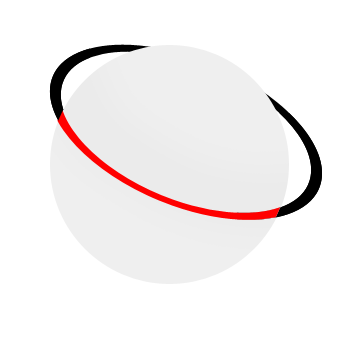
L'objectif étant de simuler la courbe que prendrait une auréole de planète. Je vous invite à rééditer ce que nous venons de faire, mais en effectuant cette fois des allées et venues 7 fois, en lâchant à chaque fois le clic quand un trait est tracé (en imaginant la fameuse auréole au centre de la planète). Ainsi, on reprendrait cette étape là 7 fois :
Ce qui revient plus ou moins à dire :
Vous devriez donc obtenir le résultat suivant :
Il s'agira de notre base, celle à partir de laquelle nous allons tracer les autres arcs de sorte à créer le fameux dégradé que l'on retrouvait dans l'exemple précédent. Ainsi, nous allons commencer par tracer de nouveaux arcs en-dessous de celui que nous avons déjà tracé. Pour former un dégradé, nous sommes dans l'obligation d'effectuer des allées et venues en moins de 7 clics (pour que l'effet de l'outil soit moins important), mettons par exemple 4 clics. Donc, on reprend exactement les mêmes gestes mais en ne lâchant que 4 fois le clic :
Ce qui donne donc...
Notre boule prend forme on dirait. ^^ Rééditons, mais en faisant cela au-dessus de notre premier arc de cercle maintenant. J'ai décidé de lâcher le clic 5 fois.
En l'état actuelle, on peut dire que notre boule est déjà relativement bien formée. On pourrait toutefois l'améliorer (on peut toujours tout améliorer vous me direz) en accentuant davantage les reliefs grâce à des contrastes plus importants... On peut par exemple modifier le diamètre du pinceau ou encore utiliser l'outil Densité - pour contrecarrer l'effet de l'outil Densité +.
Je vous laisse vous débrouiller tout seul pour arriver à ce résultat, je crois que vous en êtes largement capable maintenant. ^^
Hey, il n'y aurait pas moyen d'obtenir un meilleur résultat avec les options de l'outil ? Tu sais, les options qu'on trouve en haut du logiciel...
Vous faites bien de m'en parler, ces options sont on ne peut plus importantes pour la suite des évènements. Car on ne va pas s'arrêter là, jusqu'ici les exemples que je vous proposais étaient plutôt basiques et n'avaient pas vraiment d'intérêt en soi. Je dirais même plus, on commençait presque à rentrer dans le domaine de la création plus que dans celui de la retouche photographique. Pourtant, force est de constater que cet outil est davantage utilisé pour cette dernière et c'est pourquoi nous allons véritablement avoir besoin de ses différentes options. Il est temps de passer aux choses sérieuses. :D
Les options de l'outil
Tout d'abord, notez que les options sont les mêmes pour les deux outils de densité. Veuillez donc sélectionner l'un ou l'autre puis observer les options qui lui sont liées :
Procédons de gauche à droite. Nous avons tout d'abord l'icône de l'outil actuellement tenu en main. En fait, quel que soit l'outil, vous trouverez toujours son icône sur la gauche de la barre des options. Vous savez donc que j'ai sélectionné l'outil Densité -, il se peut que vous trouviez quant à vous l'icône de l'outil Densité + si c'est celui-ci que vous avez pris.
Vous trouverez ensuite les paramétrages du bout de votre pinceau, il suffit de cliquer sur le bouton où il est écrit 100 :
Mais en fait, c'est quoi cette liste juste en-dessous des paramètres du pinceau ?
Je vous en ai touché un mot tout à l'heure, il s'agit des pinceaux à la pointe (ce que l'on appelle plus communément le poil) pré-paramétrée. Je ne vous ai toutefois pas tout dit car j'ai prévu d'en parler plus longuement dans un chapitre de la troisième partie de ce tutoriel, c'est pourquoi il va falloir patienter un peu. :D Mais rassurez-vous, vous n'avez pas besoin de savoir en quoi cela consiste à ce stade du tutoriel, du moins pas tant qu'on utilisera l'outil de densité. Puis, si ça vous intrigue vraiment, essayez par vous-même, vous allez vite comprendre, cela n'a rien de sorcier.
On continue et nous allons directement passer à l'option "Gamme". Je ne vais pas parler de l'option liée à cette icône
puisqu'en réalité, il s'agit de la miniature d'une palette flottante telle qu'on les trouve à droite du logiciel. Cette miniature ouvre la palette flottante appelée "Forme", elle est directement liée au pinceau. Encore une fois, nous en parlerons le moment venu, c'est-à-dire dans le chapitre traitant du pinceau. ;)
L'option suivante, la gamme, permet de choisir les tons de couleur sur lesquels nous allons appliquer l'outil afin de lui faire gagner en efficacité et que le rendu soit des plus optimaux. En utilisant par exemple l'outil Densité - (censé "éclaircir") en définissant une gamme de tons foncés, l'outil sera plus efficace si vous travaillez sur les parties foncées de votre photo. Voyons un exemple.
Sur ce schéma, on vous présente trois carrés initialement de couleur noir. On a appliqué l'outil densité sur chacun de ces carrés noirs en prenant soin d'utiliser chaque gamme et de cliquer 5 fois à chaque fois. Incontestablement, la gamme des tons foncés a été plus efficace et effective que les deux autres et ceci s'explique par le fait que le carré est de couleur foncée.
Cela fonctionne aussi dans le sens inverse. Si l'on reprend le même exemple, mais avec des carrés de couleur claire, mettons un gris clair, on obtient un résultat parfaitement logique et en adéquation avec celui ci-dessus :
Le carré sur lequel on a travaillé avec l'outil Densité - paramétré pour la gamme "tons clairs" a quasiment disparu. Et si vous suivez bien, cela est parfaitement normal puisque l'outil était à ce moment-là programmé pour être plus efficace sur les tons clairs. La preuve, le carré de droite n'a pas bougé d'un poil, sa couleur est restée la même. C'est encore normal, l'outil était en effet paramétré sur la gamme des tons foncés.
Allez, dernier petit essai avec des carrés de couleur gris foncé maintenant, comme ça on les aura tous faits. Je vous laisse juger et analyser les résultats, vous devriez les comprendre sans que j'aie besoin de vous les expliquer désormais. :)
Terminons avec les options de densité. Déterminer un pourcentage d'exposition permet de modifier la puissance de l'effet de l'outil de densité. Ainsi, moins le pourcentage d'exposition est important, moins l'effet de l'outil le sera. Et vice-versa, bien entendu. :)
Le bouton
Aérographe ne nous intéressera pas dans ce cours, ce n'est pas forcément ce qu'il y a de plus important à étudier. Je peux simplement vous dire qu'avec l'aérographe d'activé, si vous restez appuyé sur une zone de votre image, l'effet de l'outil gagnera progressivement en puissance et prendra peu à peu de l'ampleur sur votre image.
Nous passerons directement à l'option à cocher "Protéger les tons". Cette option est relativement récente car elle n'existe que depuis la version CS4 de Photoshop. À l'aide de cette option, nous allons être en mesure de conserver les tons de couleurs de l'image en cours de modification, chose qui n'était pas permise avant. On ne va donc pas se contenter de travailler la densité des couleurs de manière "brute", l'option va en fait se charger de garder une certaine uniformité pour que l'harmonie des couleurs soit correcte et que cela paraisse plus vrai que nature.
Je vais vous donner un exemple pour que vous puissiez vous en rendre compte. Vous verrez quels résultats présente le "nouvel" outil densité et ceux que présente l'outil sans l'option. L'image, la voici :
N'hésitez pas à travailler avec moi ! Télécharger l'image Ex_ski.png Pour télécharger l'image, faites un clic droit puis "Enregistrer sous"
Mon objectif : passer l'outil
Densité - sur l'ensemble du visage de ce jeune homme, mais seulement sur la peau (exit le masque et le bonnet) une première fois avec l'option de protection des tons activée, une autre fois avec l'option décochée.
Je commence avant tout par détourer le contour du visage avec le lasso polygonal afin de protéger le reste des modifications que je compte apporter. Seul le visage sera à même de recevoir une quelconque modification.
Je reprends ensuite mon outil Densité - et prends soin de cocher l'option "Protéger les tons". De cette manière, je conserverai les tons de couleurs de l'image. Au niveau des options et paramètres, j'ai personnellement pensé que ceux-ci étaient les plus justes :
Diamètre : 13px
Dureté : 0px
Gamme : tons moyens
Exposition : 50%
Je clique une fois, maintiens ce clic et passe plusieurs fois sur la partie sélectionnée. N'hésitez pas à dépasser, tout le reste est protégé donc vous ne risquez pas de déborder. Retirez ensuite la sélection et vous devriez obtenir ce même résultat :
Et mieux, si on avait utilisé une gamme de tons foncés, on aurait obtenu un résultat encore plus prononcé :
Si l'on compare avant/après, on peut se rendre plus facilement compte de l'évolution :
Faisons maintenant l'essai avec le même outil, les mêmes paramètres mais l'option "Protéger les tons" décochée. Cela signifie logiquement que les tons de couleurs ne sont pas conservés, comme ça a toujours été le cas jusqu'à la version CS4 du logiciel, quoi.
Donc, premièrement, on détoure le visage. Puis, on prend l'outil, on décoche l'option de protection de tons et on passe l'outil dans la sélection en maintenant le clic et en ne faisant qu'un seul clic. Une fois que l'outil est bien passé, on retire la sélection et on obtient le visage de la maladie ! :D
Le résultat parle franchement de lui-même, on obtient un visage drôlement pâle, trop pâle même pour qualifier la transformation de correcte. C'est d'ailleurs pourquoi je juge l'outil obsolète quand la protection des tons n'est pas cochée, du moins dans un tel contexte de travail.
Hey, mine de rien, tous ces exemples n'ont pas servi à rien car, finalement, nous aurons travaillé la densité de couleur d'une photo, et cela faisait partie de mes objectifs. :)
Quand on débute sur Photoshop, on ne se rend pas bien compte d'une chose : le plus souvent, quand on sait utiliser un outil, on sait en utiliser beaucoup d'autres du moment qu'ils font partie de la même famille. Et justement, c'est le cas de l'outil éponge
qui est le cousin des outils de densité, je vous invite d'ailleurs à le sélectionner, c'est avec lui que nous travaillerons.
Le principe d'utilisation de l'outil éponge est clairement le même que celui des outils que nous venons d'étudier. Hormis ses options qui sont différentes, la seule vraie nouveauté, c'est l'effet que produit l'outil sur nos images. Si les outils de densité permettaient de régler la densité de nos images, l'éponge nous servira quant à elle à régler la saturation des couleurs de nos images.
C'est quoi déjà, la saturation ?
Nous avons eu affaire à elle dans le chapitre précédent, en étudiant la fenêtre de réglages "Teinte/Saturation". Travailler la saturation des couleurs d'une image revient à les ternir ou les raviver. Par exemple, un vert pomme peut être transformé en vert pale ou vert fluo. Voyez plutôt :
On va faire subir quelques modifications à cette pomme ! Tout d'abord, allons jeter un œil sur les options de l'outil éponge et choisissons un mode.
Le mode présente deux paramètres : Désaturation et Saturation. Le premier permet de ternir la couleur, l'autre de la rendre plus vive. Voyons voir ce que cela donne sur notre fameuse petite pomme verte.
Un coup d'éponge un peu partout avec le mode Désaturation activé et hop :
Une pomme malade :D . J'ai passé mon éponge partout sur la pomme, et d'ailleurs, j'ai n'ai même pas eu besoin de créer une sélection autour car le fond est blanc, l'outil n'a donc aucun effet sur lui.
Avec le mode Saturation, c'est tout l'inverse qui se produit. Voilà ce que ça donne :
Les couleurs sont plus vives, plus éclatantes. C'est encore plus flagrant quand on compare les ombres des deux pommes (l'originale et la modifiée) ou leurs reflets.
Bon, je dois admettre que présenté sous cette forme, la saturation semble n'avoir aucun intérêt et je vous l'accorde, ce n'est pas particulièrement intéressant de saturer/désaturer une pomme. Mais pour que cela soit utile, il suffit simplement d'en avoir l'intérêt. Et j'ai justement quelque chose pour vous !
N'hésitez pas à travailler avec moi ! Télécharger l'image Plateau_fromage.png Pour télécharger l'image, faites un clic droit puis "Enregistrer sous"
Je dois vous faire une confidence, je déteste le fromage ! :D Mais pour le bien du tutoriel, je vais faire comme si j'étais un adepte, je ne voudrais pas me mettre à dos la majorité des lecteurs. :-°
Notre objectif consistera à raviver le jaune du fromage pour qu'il paraisse moins terne. Qui dit couleurs vives dit... ? Saturation, parfaitement ! On va donc faire usage de l'éponge sur les carrés de raclette au mode saturation. Mais on ne va pas juste se contenter du mode, on va en effet activer la vibrance de l'éponge.
C'est pour donner un effet et faire croire que l'image est en train de vibrer ? :euh:
Pas vraiment, non. :lol: Comme vous le savez, saturer les couleurs d'une image signifie les raviver. Or, on peut facilement abuser de la saturation et créer ce que l'on appelle un écrêtage de couleurs.
On parle d'écrêtage pour désigner les valeurs de couleur d’un pixel qui sont supérieures à la plus haute ou inférieures à la plus faible valeur "conforme" ou "tolérée". Ainsi, un pixel trop lumineux ou pas assez lumineux sera un pixel écrêté. Cela se traduit par une perte de détails de l'ensemble de l’image.
Revenons-en à notre fromage (notre excellent fromage de raclette !) et testons d'abord l'outil sans la vibrance activée. Laissez-moi juste avant vous toucher un petit mot concernant le flux que vous trouverez dans les options de l'outil. Il s'agit ni plus ni moins de la puissance de l'outil, à l'image de l'option exposition que l'on trouvait avec les outils de densité. Plus le flux est important, plus l'outil est puissant et effectif sur votre image.
Comme avec les outils de densité, je commence par sélectionner les fromages et je passe mon outil éponge avec les options suivantes :
Mode : saturation
Flux : 15 px
Vibrance : désactivée
Suite au passage de l'éponge, les couleurs du fromage ont jauni, du coup on pourrait croire que le fromage a eu un petit coup de chaud. ^^ Personnellement, je ne suis pas fan de l'effet, je ne dis pas qu'il est "horrible" mais je ne trouve pas ça forcément très réaliste... A l'inverse de l'effet que produit la vibrance !
Quand on refait la même expérience mais avec la vibrance activée, c'est clairement plus réaliste, regardez !
Et notre traditionnel avant/après, pour vous rendre compte de l'intérêt de l'outil.
On reste dans la modification d'image grâce aux outils de retouche et de réparation, et nous allons présentement nous intéresser, dans l'ordre, aux outils Goutte d'eau, Netteté et Doigt.
La goutte d'eau
Tout d'abord, veuillez sélectionner l'outil goutte d'eau
. Cet outil permet de créer un effet de flou sur une image. D'un point de vue technique, cela revient à dire que les pixels vont se "brouiller", se mélanger entre eux de sorte à ce qu'ils ne soient pas plus nets mais... flous :
Il existe diverses manières de créer du flou. La manière la plus répandue et sans doute la plus simple est l'utilisation des filtres prévus à cet effet. L'avantage avec la goutte d'eau, c'est que tout se fait avec la souris. On clique, on maintient ce clic et on déplace la souris. À la différence des filtres qui sont paramétrables grâce à des chiffres et des valeurs parfois approximatives et complexes à définir, à l'image des fenêtres de réglages telles que les niveaux de couleurs par exemple. :)
Comme pour tous les outils de retouche, il existe une fenêtre de paramètres pour faire des réglages sur l'embout de l'outil. Pour la goutte d'eau, nous avons les paramètres suivants (en faisant un clic droit dans la zone de travail, comme toujours) :
Cette fenêtre, vous la connaissez, parce qu'il s'agit de la même pour tous les outils de retouche (et pas qu'eux !), notamment ceux que nous avons étudiés auparavant. Nous nous contenterons pour le moment de n'utiliser que l'épaisseur. Veuillez définir un diamètre de 170px à votre outil et télécharger par la suite le document sur lequel nous allons travailler.
Encore le Big Ben ! :D
N'hésitez pas à travailler avec moi ! Télécharger l'image Lampadaire_BB.png Pour télécharger l'image, faites un clic droit puis "Enregistrer sous"
Comment pourrions-nous, à votre avis, utiliser le flou dans cette image pour qu'il ait un intérêt et ne la gâche pas ? C'est simple, nous allons essayer d'isoler un élément qui compose l'image en floutant tout le reste. Cette image est ici constituée de trois éléments : le lampadaire en premier plan puis le parlement et enfin le Big Ben. Notre premier travail sera d'isoler le lampadaire qui se trouve en premier plan en floutant tout le reste de sorte à le faire ressortir de l'image.
Est-ce qu'il va falloir que j'utilise le Lasso polygonal encore une fois ?
Exceptionnellement, je vais devoir vous déconseiller d'utiliser le lasso avec un outil engendrant l'apparition de flou. Vous le savez, le lasso permet de créer une sélection autour d'un élément dans un calque, cela crée donc une délimitation protégeant tout ce qui se trouve à l'extérieur de la sélection. Mais voilà, cette délimitation est nette à partir du moment où le contour progressif est de 0px, or, quand on floute quelque chose, on brouille justement l'ensemble de l'image, contours compris. Il est donc déconseillé de laisser des contours nets, chose qu'engendrerait justement la sélection du Lasso.
On n'a qu'à utiliser le contour progressif dans ce cas ?
On pourrait, mais c'est juste inutile puisque l'outil de flou s'en charge à votre place. :) Regardez ce que cela aurait donné si nous avions utilisé la goutte d'eau dans la sélection qui encadre la cathédrale et le Big Ben :
Le résultat n'est pas à la hauteur de nos espérances. Pourtant, le flou a été créé en soi, il est donc bien présent et c'est ce que nous recherchions. Le vrai problème, c'est l'apparence des bords (regardez les contours des bâtiments), la démarcation est trop nette. Il vaut mieux se contenter de l'outil brut, sans sélection aucune, tant que l'on fait ça avec soin et délicatesse. Ainsi, si vous respectez bien les bords et que vous travaillez correctement, vous devriez sans mal obtenir ce résultat :
Incontestablement, le résultat est meilleur, le rendu est de qualité et bien entendu, le lampadaire est maintenant isolé du reste, il est devenu l'objet principal de la photo.
Et si je veux isoler le Big Ben ?
La question ne se pose même pas, on refait exactement la même chose mais en veillant à ce que la grande cloche ne soit pas touchée par la goutte d'eau afin de lui éviter toute trace de flou. Encore une fois, si vous vous appliquez et que vous travaillez correctement, vous devriez obtenir une image semblable à celle-ci :
Dans notre exemple, on avait deux éléments au second plan : Big Ben et le parlement. Or, nous n'avons isolé que Big Ben, ce qui donne l'impression que le travail est mal fini. La preuve, si je recommence mon floutage mais en veillant à ne pas toucher au parlement avec ma goutte d'eau (donc conserver tout le contenu du second plan de mon image), j'obtiens un résultat beaucoup plus propre :
La netteté
Maintenant que nous en avons terminé avec la goutte d'eau, veuillez sélectionner l'outil netteté
. Il vous faut faire un clic-droit sur l'icône de l'outil goutte d'eau pour le voir apparaitre dans la liste qui va s'afficher. Lui et la goutte d'eau font tous deux partie de la même famille, tout comme l'outil qui va suivre d'ailleurs.
La différence entre les outils goutte d'eau et netteté est que ce dernier ne floute pas une image mais la rend plus nette, comme le laisse présager son nom.
Je vous disais d'ailleurs la goutte d'eau rendait les pixels moins différents les uns des autres puisque les pixels et les couleurs se mélangeaient. Et bien, on peut dire que c'est l'effet inverse avec l'outil Netteté : le fait d'ajouter de la netteté à une image a pour effet de préciser ses pixels, on peut ainsi plus facilement les distinguer à l'œil nu par exemple. Vous me suivez ?
Toutefois, aussi puissant soit-il, l'outil Netteté ne peut pas créer des détails. On pourrait penser que cet outil est le parfait contraire du flou, alors que ce n'est pas exactement ça. Par exemple, on ne peut pas prendre une image floue, y appliquer l'outil Netteté et se retrouver avec une image complètement claire et détaillée. On aura tendance à utiliser la Netteté pour combattre un léger flou.
Dans cet exemple, je vais vous proposer de passer l'outil Netteté dans les zones les moins floues que l'on peut trouver, c'est-à-dire au niveau de la goutte d'eau et du milieu de la tige. Encore une fois, vous n'êtes vraiment pas obligés d'utiliser le lasso pour créer une sélection, du moins ce n'est pas nécessaire. Mais si vous le désirez vraiment, faites-en une autour de la goutte d'eau seulement car en qui concerne la tige, il existe déjà un flou progressif sur lequel il ne faudrait pas chevaucher avec l'outil Netteté pour créer une délimitation.
N'hésitez pas à travailler avec moi ! Télécharger l'image goutte_netteté.png Pour télécharger l'image, faites un clic droit puis "Enregistrer sous"
Bref, quand vous vous sentez prêt, vous pouvez y aller. Vous devriez obtenir un résultat proche de celui-ci :
Nous avons réussi à accentuer les reflets de la goutte pour la rendre d'une manière générale moins floue, tout comme nous avons réussi à faire ressortir un peu plus les petites imperfections de la tige. A comparer, cela donne :
permet de mélanger les pixels entre eux. Pour comprendre, on peut imaginer une peinture encore toute fraiche et dans laquelle on va s'amuser à mélanger chaque élément peint à l'aide de notre doigt. En d'autres termes, vous allez être en mesure de "tirer" les pixels en direction du curseur de votre souris de cette manière :
Cet outil fait partie de la même famille que les deux outils précédemment étudiés. En règle générale, on utilise le doigt pour estomper les contours d'un calque afin de l'intégrer à son décor, l'idée étant que cette intégration paraisse « naturelle ». C'est ce que je vais tenter de vous démontrer tout de suite. Je travaillerai sur l'image suivante :
Cliquez sur l'image pour l'agrandir
Voici l'élément à intégrer dans ce décor, un joli papillon !
En intégrant le papillon dans ce décor, on peut se rendre compte que les contours de ce dernier ne sont pas dignes d'un petit papillon virevoltant au-dessus des champs. :-°
Comment faire pour mettre le paysage et le papillon dans la même zone de travail ?
Suivez mes indications très attentivement. Après avoir téléchargé l'image du paysage (clic-droit > enregistrer sous...), ouvrez-la sur Photoshop. L'image sera alors en mode "Arrière-plan", vous pouvez la passer en mode "calque standard" en faisant un double-clic dessus. Ouvrez ensuite l'image du papillon dans une nouvelle zone de travail. Cliquez dans la zone de travail du papillon, maintenez le clic et déplacez votre curseur jusqu'à l'onglet (en haut de votre logiciel) de la zone de travail du paysage. Vous laisserez ré-apparaitre la zone de travail du paysage. Déplacez votre curseur jusqu'à elle et lâchez enfin le clic pour déposer le papillon.
Cliquez sur l'image pour l'agrandir
On pourrait y croire. Mais en étant pointilleux (pour ça, il suffit simplement de zoomer sur le papillon et d'observer ses contours), on se rend compte que les contours sont effectivement pas très convaincants par rapport au décor derrière. On va donc estomper ce contour pour mélanger les quelques pixels du contour du papillon et de ce qui l'entoure afin d'estomper l'effet de cassure. Commencez par sélectionner le calque du papillon puis, effectuez un zoom sur celui-ci. Prenez ensuite le doigt.
La démarche consiste à passer l'outil sur l'ensemble du contour du papillon. Il faut, pour cela :
Sélectionner le calque du papillon dans la fenêtre de calques.
Définir la bonne épaisseur au doigt, en faisant un clic-droit à l'intérieur de la zone de travail.
Modifier, dans la barre d'option, le paramètre d'intensité pour travailler avec celle qui vous convient.
Passez donc votre souris, clic maintenu, sur le contour du papillon afin que celui-ci perde légèrement de sa netteté. C'est un travail minutieux. Lorsque vous avez fait le tour, vérifiez et comparez avant/après.
Le titre de ce chapitre disait "Et les outils, on en fait quoi ?". Le moins que l'on puisse dire, c'est que l'on aura bien bossé avec, et pas qu'un peu !
Pourtant, c'est loin d'être fini. Nous avons droit à un arsenal on ne peut plus complet et c'est ce pourquoi d'autres chapitres vous attendent, il y a encore matière à retoucher. Alors on y va, on a encore du pain sur la planche ! ^^
Le voilà enfin, le chapitre qu'on attendait tous ! :D
Jusqu'ici, cette deuxième partie sur la retouche photographique tournait principalement autour des couleurs. On pouvait parler de "retouche chromatique", autrement dit de "retouche de la couleur" car c'est en effet ce que nous faisons de puis le début : nous trifouillons et modifions tout ce qui se rapporte à la couleur dans une image.
Désormais, nous allons nous en écarter un peu et nous concentrer sur ce que l'on appelle la réparation photographique.
Bah, c'est pareil, non ? En modifiant leurs couleurs, on réparait plus ou moins les images sur lesquelles on travaillait.
Hmmm, si on joue sur les mots, j'aurais tendance à appeler cela de la retouche photographique. Cette fois-ci, nous allons encore faire de la retouche, mais avec des outils qui servent généralement à réparer des images (qui peuvent être abimées, esquintées, dégradées, ou tout simplement dans le but de tricher un peu et camoufler certains éléments non-désirables). D'où le terme de réparation qui me semble assez approprié finalement !
Il arrive souvent qu'on ait besoin de supprimer quelques imperfections sur nos photographies, qui peuvent être abîmées par le temps et la vieillesse.
Pour cela, on a recours à bon nombre d'outils sur Photoshop et c'est ce que nous allons étudier dans ce chapitre. Et le premier va nous permettre de cloner une partie de notre zone de travail.
Cloner les éléments d'une image
Oui, oui, vous avez bien lu : nous allons voir comment cloner les éléments d'une image. Le principe est simple, nous définirons une zone dans une image à l'aide de la sélection puis nous la déplacerons autre part dans sur même image. Sur Photoshop, on dira pour définir toutes ces actions que l'on "rapièce".
Commençons par sélectionner l'outil, il s'agit de l'outil Pièce
que vous trouverez dans la boite à outil, il fait partie de la même famille que l'outil Correcteur localisé
(que nous étudierons aussi dans ce même chapitre). Faites un clic droit dessus pour laisser apparaitre la liste des outils, ou bien utilisez la touche J.
Voici l'image sur laquelle nous allons travailler :
N'hésitez pas à travailler avec moi ! Télécharger l'image Dalmatien.png Pour télécharger l'image, faites un clic droit puis "Enregistrer sous"
Nous allons procéder à quelques expériences scientifiques sur ce pauvre petit dalmatien. :) Nous aurons précisément deux objectifs :
Cloner les taches du chien pour les faire paraitre sur d'autres parties de son corps.
Supprimer les taches du chien.
Avant de commencer, il est recommandé de jeter un œil sur les options de l'outil pour définir quel type de clonage nous désirons effectuer, autrement dit de quelle manière nous allons rapiécer les taches.
On retrouve tout d'abord nos quatre petites vignettes auxquelles on a droit quand on utilise les outils de sélection. Vous allez voir que la pièce est elle aussi une sorte d'outil de sélection, du moins son principe d'utilisation est similaire au Lasso "normal", c'est pourquoi ces vignettes existent pour cet outil.
Mais le plus intéressant, le "cœur" des options, c'est le paramètre "Rapiécer" qui présente deux choix : source ou destination. Voici en quoi ils consistent :
Source : nous allons définir une zone qui constituera la source du clonage, autrement dit l'emplacement dans lequel le clonage va être fait.
Destination : à l'inverse, nous définirons une zone que nous déplacerons pour cloner le contenu de cette zone autre part dans notre zone de travail.
En ce qui concerne la transparence, c'est un peu complexe à expliquer et surtout à comprendre. En cochant cette option, vous pourrez extraire une texture avec un arrière-plan transparent de la zone sélectionnée avec la pièce. A l'inverse, quand l'option n'est pas cochée, on va remplacer complètement la zone cible par la zone sélectionnée avec la pièce.
L'essai
Maintenant que l'on a fait le tour des options, on va pouvoir se concentrer sur l'outil et son utilisation.
Outil en main, voici grosso modo comment on va procéder : on sélectionne d'abord une zone dans notre calque, n'importe laquelle. Avec le paramètre "Source" de coché pour l'option "Rapiécer", on pourra dire que cette zone constitue l'emplacement dans lequel le clonage va être effectué. On en déduit donc qu'il faudra alors définir une zone à cloner. Pour ce faire, on va déplacer cette première sélection que l'on a faite avec l'outil pièce n'importe où dans l'image afin que le contenu de cette sélection soit transposé dans la première zone que nous avions justement créé avec cette même sélection. Vous me suivez ?
Tout le monde le sait, les Dalmatiens ont la particularité d'avoir des petites taches noires partout sur le corps. Pour cet exemple, j'ai décidé de lui retirer l'une de ses nombreuses petites taches noires. Ainsi, il faut effectuer une sélection autour d'une des taches, mettons celle-ci :
Pour faire cette sélection, vous pouvez utiliser un outil de sélection comme on a eu l'habitude de faire jusqu'ici, mais vous pouvez aussi utiliser l'outil Pièce directement qui permet la sélection et qui fonctionne pareillement au lasso. ;)
Allez, pour commencer, veuillez sélectionner soit un outil de sélection lambda, soit l'outil pièce
si ce n'est pas déjà fait.
Définissons à présent la fameuse zone dont je parlais ci-dessus. Cette zone sera l'emplacement dans lequel le clonage va être effectué. Nous souhaitons supprimer la tache noire, il faudra donc effectuer une sélection autour d'elle, comme ceci :
Tout en restant suffisamment précis, n'hésitez pas à faire une sélection plus grossière autour de la tache, quitte à prendre un bon centimètre de blanc comme je l'ai fait. Je veux dire, avec l'outil pièce, on est obligés de faire ça à main levée, il ne faut donc pas se leurrer, nous n'aurons jamais une sélection parfaitement ronde. De même pour ceux qui utilisent d'autres outils de sélection, il est inutile de détourer la tache au pixel près. Une sélection approximative suffira amplement.
Quand votre sélection est terminée, il vous faudra impérativement utiliser l'outil Pièce pour l'étape suivante. Si vous avez fait votre sélection avec un autre outil, il est temps de changer. L'outil Pièce en main, maintenez le clic à l'intérieur de la sélection et déplacez votre curseur pour déplacer la sélection. Essayez par exemple de la déplacer vers une partie blanche du chien. Vous vous apercevrez alors que chaque fois que vous déplacerez la sélection, son contenu sera transposé dans la première sélection créée (dans notre exemple, il s'agit de celle de gauche, donc).
Pour confirmer le clonage, vous n'avez qu'à lâcher le clic de la souris...
Magie, la tache a disparu ! Ce qui est génial avec l'outil pièce, c'est que en plus de cloner le contenu d'une sélection, il prend en compte la luminosité et le contraste de ce qui se trouve autour de la sélection pour conserver un effet naturel.
D'ailleurs, si on pousse un peu, on peut arriver à un résultat... incroyablement excellent !
Et si on change le mode pour rapiécer, ça donne quoi ?
Le mode d'action est différent, mais le principe reste le même. Avec le paramètre "Source", on devait faire une première sélection qui, quand on la déplaçait, faisait alors office de récepteur du nouveau contenu de la sélection déplacée. Cette fois-ci, c'est l'inverse : on fait une sélection autour d'un élément et, quand on déplace cette sélection on déplace cet élément pour le "copier" (le cloner) autre part. Par exemple, je commence par sélectionner une tache (je reprends la même) :
N'oubliez pas que pour l'option "Rapiécer", il faudra sélectionner le paramètre "Destination". ;) Déplaçons ensuite la sélection (avec la pièce de sélectionnée) :
On peut déjà remarquer que la tache est copiée à l'intérieur de la sélection. On n'a plus qu'à lâcher et voilà le travail !
Et encore une fois, on peut s'amuser un peu avec toutes les taches du chien ! :D
Je ne sais pas ce que vous avez pensé de l'outil Pièce
, mais à mon avis, Photoshop n'a pas fini de vous surprendre, surtout quand on connait l'incroyable pouvoir des outils que nous nous apprêtons à étudier.
Et pour l'instant, on va s'affairer avec un outil au nom assez spécial, je veux parler du Tampon de duplication
. Vous ne le trouverez pas dans la même famille que l'outil Pièce mais juste en-dessous si vous disposez de la version CS5 (c'est peut-être le cas pour les autres versions aussi d'ailleurs). La touche S permet de sélectionner l'outil.
Le Tampon de duplication, qu'on a généralement pour habitude de raccourcir par "tampon" tout court, permet de créer une copie d'une zone ciblée, autrement dit de la dupliquer.
C'est exactement ce qu'on vient de faire avec la Pièce !
Avec la pièce, on sélectionnait une partie de l'image pour la cloner autre part. Cette fois-ci, aucune sélection n'est nécessaire, on va simplement définir une zone dont notre curseur va se servir comme base pour dupliquer ce qu'elle contient. Pourquoi comme "base" ? Parce que cette zone va suivre les mouvements du curseur, tandis que le curseur va copier le contenu de cette zone. Et comme j'ai le sentiment que c'est un peu flou pour vous, je vous propose un petit exemple illustré avant de passer à un essai concret :
La première chose à faire, c'est choisir une base de duplication. Il s'agira du cercle rouge à gauche de l'image. Ensuite, en le déplaçant, je me rends compte que la base de duplication a remplacé mon curseur, c'est le cas sur l'image ci-dessous où je l'ai placé au-dessus de ma tête (oui, c'est moi sur la photo).
Toujours avec la même base, j'ai décidé de déplacer mon curseur en direction de ma jambe gauche. Et sans surprise, la base de duplication est toujours "en copie" au niveau de mon curseur :
Cela fonctionne aussi avec une autre base de duplication, évidemment. J'aurais pu choisir ma tête comme base et la duplication (la "tamponner") sur la neige :
Et les options de l'outil, alors ?
Chaque chose en son temps. ;) A vrai dire, vous n'avez pas vraiment besoin de moi pour les options puisque vous les connaissez toutes, ou presque mais celles dont vous n'avez jamais entendu parler sont faciles à deviner puisqu'elles sont étroitement liées à d'autres outils déjà étudiés.
Je préfère que vous vous concentriez sur le diamètre et la dureté de l'outil. En effet, plus le diamètre de votre outil sera gros, moins vous aurez de place pour faire vos mouvements. Et si la base de duplication, en suivant les mouvements de votre curseur, est amenée à sortir de la zone de travail, alors l'effet prendra fin brutalement car, techniquement parlant, elle ne peut pas sortir de la zone de travail, elle sera donc bloquée à son bord :
En ce qui concerne la dureté, elle va permettre de camoufler un travail trop net du tampon. C'est un peu le même principe que le contour progressif : si les contours sont flous, ils vont se confondre avec ce qui se trouve autour d'eux et le travail sera correctement effectué car difficilement visible à l'œil nu. A l'inverse, si on met une dureté à 100%, ce qui revient à retirer toute forme de flou, on va avoir une pointe qui va dupliquer un élément avec des contours très nets, et clairement cela peut engendrer une perte de réalisme au niveau de l'effet comme le montrent les images ci-dessous.
1. Image d'origine.
2. Jambe gauche supprimée avec une dureté de 40%
3. Jambe droite supprimée avec une dureté de 100%
Les résultats parlent d'eux-même, l'image 2. est bien mieux retouchée que la 3. et cela grâce à la dureté que j'ai volontairement baissée sans la mettre à 0% pour ne pas que les bords de mon curseur ne soient trop flous.
L'essai
Ce nouvel essai se déroulera sur l'image suivante.
N'hésitez pas à travailler avec moi ! Télécharger l'image Ecureuil.png Pour télécharger l'image, faites un clic droit puis "Enregistrer sous"
Dans cet exercice, nous allons tout bonnement effacer l'animal. L'objectif, bien entendu, est que l'on n'y voie que du feu. On va donc utiliser le tampon pour dupliquer certaines parties du décor sur l'écureuil.
Il va d'abord nous falloir définir une base de duplication. Pour ce faire, il faut impérativement prendre en main l'outil Tampon de duplication
puis déplacer son curseur sur la zone que vous désirez cibler et qui sera notre fameuse base. Pour ma part (et je vous invite à faire de même), j'ai placé mon curseur dans ses environs-ci :
En ce qui concerne les paramètres de votre outil, je vous laisse le soin de les choisir. De toute manière, vous allez sûrement être amenés à modifier ces paramètres au cours de votre travail. Voici ceux que je vous conseille d'appliquer pour commencer notre exercice :
Épaisseur : 70 px
Dureté : 58 px
Votre curseur est enfin placé au bon endroit ? Il faudra donc utiliser le clavier de votre ordinateur et taper la combinaison suivante selon le système d'exploitation de votre ordinateur :
ALT + Clic Option + Clic
Dès lors que vous aurez appuyé sur la touche Alt (ou Option), votre curseur changera d'apparence et se transformera en une sorte de cible. Quand vous aurez cliqué ensuite, vous aurez enfin défini la base de duplication.
On peut maintenant commencer à tamponner notre animal pour le remplacer par notre fameuse base de duplication. Commençons par maintenir le clic au niveau de sa queue et, plus généralement, du bas de l'animal. N'hésitez pas à définir une nouvelle zone à dupliquer à chaque fois pour varier les résultats. Le but étant d'utiliser un maximum de l'espace disponible autour de l'écureuil, en prenant soin de conserver une certaine homogénéité au niveau de la lumière et des couleurs. De même, vous pouvez tout à fait rétrécir l'épaisseur de votre tampon si vous avez besoin de ne dupliquer qu'une infime partie de l'image, et vice-versa. Si vous faites ça correctement, vous devriez obtenir un résultat semblable à celui-ci.
Continuez et montez un peu plus haut.
Et continuez encore et toujours, allez-y progressivement de sorte à supprimer entièrement l'animal. Au risque de me répéter, n'hésitez pas à définir une nouvelle base de duplication même au cours de votre travail si cela vous semble nécessaire par moment.
Vous le constatez, l'écureuil a totalement disparu de l'image, à croire qu'il n'a jamais été question d'un quelconque animal sur cette photo. Nous avons réussi à inventer un fond en utilisant le décor de l'image, en l'occurrence de l'herbe et des feuilles, ce que je qualifie comme une véritable prouesse tant le travail s'est avéré... simple ? Oui, oui, c'est le terme, c'était très simple ! Vous ne trouvez pas ? :)
Je ne pouvais pas écrire ce tutoriel et consacrer une partie à la retouche photographique sans vous parler des outils correcteurs suivants. Ils ont fait le succès des dernières versions de Photoshop tant ils sont puissants et demandent peu d'effort et de connaissance en matière d'infographie.
Hormis les options qu'il va nous falloir connaitre sur le bout des doigts, les outils sont tout bonnement très faciles d'utilisation et nous offrent un moyen de corriger une photo de manière très optimale, vous allez voir. :)
Outil correcteur localisé
L'outil Correcteur localisé
(dont la touche J en est le raccourci), qui portait auparavant le nom de "correcteur de tons directs", est un outil aux capacités on ne peut plus incroyables. On s'en sert généralement pour supprimer un élément de la zone de travail sans laisser de traces de cette suppression, à l'image de ce que l'on a fait avec le tampon.
Hmm, quel intérêt dans ce cas d'avoir fait un autre outil ?
La fonction principale du tampon est de copier un élément d'une image pour en camoufler une autre. C'est le principe du tampon, après peu importe la manière dont vous l'utilisez, moi j'ai trouvé un exemple suffisamment parlant pour vous le proposer.
Cette fois, avec le correcteur, on n'a quasiment plus rien à faire autrement que cliquer avec notre souris. Là où je veux en venir, c'est qu'on n'a pas forcément besoin de "base de duplication" (propre au tampon) ou quoi que ce soit d'autre : on place notre curseur sur l'élément que nous désirons éliminer, on clique, et Photoshop s'occupe du reste. C'est aussi pour ça qu'on utilise généralement cet outil pour des éléments non-imposants, à l'inverse du chien par exemple sur la photo de l'essai précédent qui était, lui, très imposant.
Le résultat risque d'être drôlement bof si c'est Photoshop qui s'en occupe, non ? Cela reste un logiciel, tout de même !
Évidemment, notre capacité, nous humains, à travailler minutieusement et proprement grâce aux sens dont nous sommes dotés nous permettent sans doute de travailler aussi bien voire mieux qu'une automatisation générée par un logiciel. Mais il ne faut pas les sous-estimer ! Quand je vous disais que l'outil Correcteur était juste incroyablement puissant, vous allez voir que retoucher une image peut s'avérer finalement très simple et accessible. ;)
Nous travaillerons sur cette image :
N'hésitez pas à travailler avec moi ! Télécharger l'image Roue.png Pour télécharger l'image, faites un clic droit puis "Enregistrer sous"
Et notre objectif consistera à supprimer les maillons de la roue. :) Prenez votre outil et jetez un œil sur ses options.
Pour plus de clarté, je vais lister chaque option pour vous expliquer en quoi elles consistent. Nous les étudierons dans l'ordre, de gauche à droite.
Mode : il s'agit des quelques modes de fusion que l'on peut appliquer à notre modification. Personnellement, je ne les utilise pas beaucoup, mais libre à vous de les essayer quand on aura appris à utiliser l'outil.
Type : Le type par défaut est "contenu pris en compte". Cela signifie que le correcteur va réfléchir à votre place et définira seul quels éléments prendre en compte pour camoufler, remplacer l'élément à corriger. Si vous choisissez "Similarité des couleurs", Photoshop analysera les couleurs autour de l'élément à corriger et se chargera de travailler en fonction d'elles. Enfin, si vous cochez "Créer une texture", le logiciel se chargera de remplacer l'objet à corriger par une texture qui est à définir. Nous nous contenterons du type "Contenu pris en compte" pour cet exercice.
C'est tout ce qui nous importera dans ce chapitre. On peut désormais faire usage de notre outil Correcteur localisé
, c'est pourquoi je vous demande de le sélectionner si ce n'est pas encore fait.
L'utilisation de cet outil, je vous le rabâche depuis le début, est on ne peut plus simple mais aussi très efficace. Tout ce qu'on va vous demander de faire, c'est cliquer ! Mais pas n'importe où, évidemment. On va cliquer et "surligner" grâce à notre outil l'élément que nous souhaitons voir disparaitre.
C'est ce que nous allons tenter de faire sur la petite tache rouge de l'image ci-dessus. Commencez par définir un nouveau diamètre à votre outil en lui donnant 18 px d'épaisseur. Le tout est de choisir un diamètre plus grand que l'élément que nous désirons éliminer.
Nous avons déjà eu affaire à cette petite fenêtre, mais on peut toutefois noter une différence qui se trouve en bas de la fenêtre, je veux parler de cette espèce de cible noire sur blanc. Deux nouveaux champs blancs figurent à sa droite :
Angle : définit l'angle que prend le cercle représentant le bout de votre outil. Si le cercle est parfaitement circulaire, modifier son angle n'aura aucun impact sur la forme du cercle. Cela peut toutefois être intéressant si on modifie le paramètre 'Arrondi'.
Arrondi : permet de choisir la forme circulaire ou ovale de votre rond.
Quand c'est fait, placez votre curseur (et donc le cercle) à ce niveau-ci de la tache :
Maintenez le clic et déplacez votre curseur de sorte à surligner la tache, comme ceci :
Enfin, lâchez le clic, et laissez opérer la magie du correcteur :
Plutôt efficace, n'est-ce pas ? ;)
Hmm, il existe pas une gomme ou un truc du même type pour ce genre de chose ?
Si, oui, il existe bien une gomme en effet et ça aurait été plus approprié ici. Mais je trouvais simplement très intéressant de vous montrer comment l'outil pouvait réagir via un exemple simplifié et évocateur. Pourtant, on peut faire beaucoup mieux que ça, croyez-moi. Et d'ailleurs, je vais de suite essayer de vous le démontrer avec un petit exercice que vous devriez avoir du mal à finir si vous n'avez pas la patience pour. :diable:
L'image, vous l'avez déjà téléchargée, il s'agit de la jeune fille tournée vers la grande roue. Notre objectif consistera à supprimer les maillons de la roue et de laisser le ciel apparaitre totalement. Il va donc falloir passer notre correcteur partout sur les maillons, en prenant soin de choisir la bonne épaisseur de notre outil à chaque fois.
Commençons par surligner ce maillon-ci :
Si vous faites cela correctement (faut dire que "correctement" est un grand mot, en même temps...), vous devriez obtenir ce résultat :
Rééditez l'opération sur les autres maillons. Lorsqu'ils se croisent, n'hésitez pas à modifier le diamètre de votre outil sur les parties les plus difficiles. Au sujet du maillon qui est en contact, sur l'image, avec les cheveux de la jeune fille, faites un zoom et réduisez le diamètre de votre outil. Ensuite, passez entre les cheveux de manière minutieuse pour qu'eux ne soit pas supprimés de la photo, à l'inverse du maillon.
Soyez patient et travaillez de manière rigoureuse de sorte à supprimer absolument toute trace de maillon. J'espère que vous arriverez à ce résultat, c'est du moins ce qui est censé arriver. :)
Outil correcteur
Sans rentrer dans les détails, laissez-moi vous toucher un mot sur l'outil Correcteur
que vous trouverez en faisant un clic droit sur l'icône de l'outil Correcteur localisé
, ou bien en appuyant sur la touche J de votre clavier.
A vrai dire, si je ne veux pas m'étaler, c'est parce que le Correcteur est un condensé des deux derniers outils que l'on vient d'étudier. En effet, son mode d'action est précisément le même que le correcteur localisé. La seule différence, c'est qu'il fonctionne de la même manière que l'outil Tampon de duplication
. Il s'agit donc d'un correcteur comme on le connait, qui va utiliser une "base de duplication" comme le tampon, ce qui peut se présenter comme un réel avantage selon les modifications que l'on doit apporter. :)
Mesdames, mesdemoiselles, messieurs, j'ai le plaisir de vous annoncer que le prochain chapitre ne sera pas comme les autres. Pour l'heure, ce chapitre est terminé et vous avez appris bon nombre de techniques essentielles et ultra-utilisées dans le monde de la retouche photographique.
Tiens, ça tombe bien, j'ai comme quelque chose pour vous... Passez donc à la page suivante ! :)
Je vous souhaite la bienvenue dans votre premier vrai TP ! :D
Ce chapitre n'est pas un chapitre ordinaire : hors de question que je vous bassine avec de quelconques explications, cette fois-ci, c'est vous et seulement vous qui êtes maitres de la situation. :magicien:
J'essaie tant bien que mal de vous donner des exercices régulièrement et aussi souvent que possible en mettant à votre disposition plusieurs fichiers PSD à télécharger afin que vous puissiez travailler tout au long du cours.
Pourquoi faire un TP dans ce cas ? :euh:
L'objectif d'un chapitre comme celui-ci est que vous puissiez mettre en pratique tout ce que vous avez assimilé dans les chapitres précédents pour répondre à un seul et même sujet que j'ai spécialement confectionné pour vous. Vous devrez donc faire fonctionner tous vos neurones car il n'est plus question de compter sur moi : c'est vous et vous seul qui allez réfléchir à quels outils et fonctionnalités de Photoshop vous utiliserez pour répondre au sujet donné.
Nous y voici, notre premier grand TP est sur le point de démarrer. Pour son bon déroulement, nous allons préparer le terrain, comme on dit. :)
Depuis le début du cours, nous avons appris à maitriser différents outils de la panoplie proposée par Photoshop. Mais je me pose tout de même une question, et vous devriez vous aussi vous la poser : saurez-vous mettre en commun toutes vos connaissances dans une seule et même image ?
En effet, jusqu'ici, nous avons utilisé dans la plupart des cas un seul exemple par outil ou fonctionnalité. Désormais, il va falloir mettre toutes vos connaissances en relation afin de travailler différentes parties d'une même image et ainsi, réaliser un travail complet et de longue haleine. Il est temps que vous puissiez enfin vous vanter auprès de vos amis d'avoir réussi un projet de A à Z, sans l'aide de personne ! :p
Moi, je suis convaincu que vous avez l'étoffe d'un grand graphiste et que votre savoir est suffisant pour la réalisation d'un tel projet. Mais avant-tout, un petit rappel des éléments clés pour réussir ne vous ferait pas de mal.
Rappels essentiels
L'espace de travail
Je n'ai plus besoin de vous expliquer ce qu'est l'espace de travail, je pense que c'est acquis maintenant. Si ce n'est pas le cas, c'est qu'il y a un problème ou que vous avez lu ce cours "un peu trop" vite. :p
Au risque de me répéter, j'insiste sur le fait que l'espace de travail est un composant à part entière de Photoshop et que tout infographiste qui se respecte se doit de le tenir rangé pour un travail des plus optimal. Négligez cette étape, et croyez-moi, il y aura des répercussions au fur et à mesure que vous travaillerez.
Zone de travail
Je ne sais pas si vous aviez l'habitude d'écrire sur la table quand vous étiez à l'école, mais sur Photoshop c'est pas possible ! :D Alors n'oubliez pas de créer une nouvelle zone de travail avant de commencer. Heureusement pour vous, dans ce TP je vous fournirai les images qu'il vous faudra pour travailler.
Autre chose. Prenez soin de créer des dossiers et de nommer vos calques. Vos calques, au même titre que l'espace de travail, sont bien plus agréables à gérer et à utiliser quand ils sont proprement rangés. Vous vous y retrouverez plus facilement et vous serez plus productif. C'est comme en programmation, mieux vaut écrire des commentaires pour ne pas se perdre dans son propre code. D'ailleurs, si vous ressentez le besoin d'utiliser des annotations, servez-vous, elles sont faites pour cela !
Enfin, n'hésitez surtout pas à consulter certaines parties tutoriel si vous êtes perdus et que vous avez un problème. Si ça peut vous aider, faite-le. Je vous demande simplement de ne pas en abuser, essayez de vous débrouiller comme vous le pouvez tout seul et même si ça vous semble pas forcément bon, ne courrez pas vers la facilité, laissez-vous vous tromper. C'est aussi comme ça qu'on apprend à ne plus reproduire les mêmes erreurs, d'autant plus qu'une correction vous sera proposée. ;)
Enregistrez, enregistrez et enregistrez !
Prenez l'habitude d'enregistrer aussi souvent que possible votre progression. A peine votre zone de travail créée et une première manipulation effectuée que vous pouvez d'ores et déjà enregistrer votre "travail" dans un dossier. Une fois enregistré, vous pourrez reprendre ou sauvegarder la progression de votre projet sans aucun souci. Je vous rappelle les raccourcis clavier pour enregistrer votre travail :
CTRL + S Command (ou Pomme) + S
"Je vais perdre tous mes moyens !"
Concentrez-vous et repensez à tout ce que l'on vient d'étudier. Si c'est encore un peu flou, une relecture règlera sans doute le problème. Au pire, refaites-vous le tutoriel en diagonal pour avoir un aperçu rapide de ce en quoi chaque outil et fonctionnalité consiste et que vous soyez en mesure de les utiliser correctement le moment opportun.
On peut passer aux choses sérieuses :pirate: ! Les préparatifs sont faits, les conseils ont été donnés, je crois que vous êtes prêts, c'est bon !
J'imagine que vous avez une petite idée de ce que je vais vous demander de faire... Sans surprise, vous allez être amené à effectuer une retouche photographique de A à Z !
Intéressons nous tout d'abord à l'image de base qu'il vous sera demandé de modifier. Le sujet est particulièrement connu dans le monde de la retouche photographique, cela fait partie des "trucs connus" et soit disant "compliqués à faire" avec Photoshop.
J'ai volontairement choisi de vous faire travailler sur une image de grande taille afin que vous puissiez travailler le plus méticuleusement possible. En effet, plus l'image est grande, plus le zoom est important et du coup, c'est plus facile d'effectuer des retouches détaillées.
Consigne
La consigne est claire : il n'y a pas de consigne ! Vous n'avez qu'un seul objectif, il vous faudra effectuer des modifications sur cette photo de sorte à l'améliorer avec les outils que vous connaissez.
Je sens que je vais carrément bloquer ! :(
Le travail de graphiste passe énormément par la réflexion. Posez-vous les bonnes questions et allez de l'avant à chaque fois, tentez ce qui est tentable et annulez ce qui vous semble bâclé :
Que suis-je capable de faire ? Sous-entendu, quels outils puis-je utiliser pour faire des transformations ?
Qu'est-ce qui est modifiable et qu'est-ce que je peux améliorer dans cette photo ?
Les couleurs sont-elles bonnes ? Dois-je changer certaines teintes, certaines intensités de couleur ?
Puis-je y prendre des éléments d'une autre image pour l'insérer dans celle-ci ?
Autant de questions à vous poser pour être certain de mener à bien votre projet. Vous devez également réfléchir sur comment vous allez travailler : devrez-vous, par exemple, créer plusieurs calques pour chaque modification ou travailler plusieurs fois sur le même ?
N'oubliez pas quelque chose d'essentiel : n'en faite pas trop. Gardez en tête que vous ne connaissez que les bases d'Adobe Photoshop et que vous avez tout le temps de vous perfectionner. Il vaut mieux retoucher une image légèrement mais correctement que de lui ajouter un tas d'effets complètement loufoques et me rendre une image dégoûtante.
Quelques idées de modifications à apporter à l'image...
Suppression des rides.
atténuation du creux des poches sous les yeux.
Changement de couleur des yeux, des poils, ...
Donner un nouvel aspect visuel à l'image en général.
Libre à vous de modifier davantage d'éléments au sein de cette image. Après tout, c'est vous le graphiste. ;)
Ah oui, au fait, vous remarquerez que l'image est légèrement dégradée tout en haut. A vous de faire le nécessaire pour remédier au problème. :)
Tout est prêt ? Alors allez-y, éclatez-vous ! La correction vient juste après...
J'espère que vous n'avez pas rencontré trop de problème pour ce premier TP. Dans tous les cas, je tiens à rassurer une majeure partie des lecteurs : si vous avez galéré, c'est NORMAL ! :D
Ce TP est le bilan de notre deuxième partie (mais aussi de la première). En effet, en recherchant bien comme il faut, vous auriez pu utilisé la quasi-totalité des outils que nous avons vu pour effectuer cette retouche.
Bon, alors comme ça il faut que je vous montre comment on fait. Sincèrement, ça va être assez compliqué pour moi de vous fournir une vraie correction tant le travail de graphiste est propre à chacun. Du coup, je vais vous proposer une retouche, une retouche que j'ai effectuée, et je vais vous donner les différentes techniques que j'ai utilisées pour que vous puissiez vous rendre compte de comment j'ai procédé et que vous essayiez de vous en servir comme modèle.
Sans plus attendre, laissez-moi vous présenter le résultat que j'ai personnellement obtenu :
Outch, je suis loin de ce résultat moi...
Et pourtant, je n'ai fait qu'utiliser les outils qu'on a déjà étudiés et sans forcer en plus, ça parait compliqué comme ça mais ça vous est totalement accessible, croyez-moi. Allez, on va voir ça tout de suite.
Recadrage de l'image
Avez-vous remarqué que l'image était légèrement bancale ? Souvenez-vous, pour recadrer une image il existe un outil justement prévu à cet effet, il s'agit de l'outil Recadrage
. Ainsi, on passe d'une image bancale à une image parfaitement droite :
Réparation des éléments dégradés
Je vous faisais part tout à l'heure des parties supérieures de l'image qui étaient légèrement abimées. La consigne disait qu'il fallait les supprimer.
Pour ce faire, on aurait pu avoir recours à bon nombre d'outils, mais celui qui correspond le plus ici est sans aucun doute le Tampon de duplication
. L'idée, c'est de partir de la gauche de l'image (toujours en restant en haut) et de maintenir le clic jusqu'à l'extrémité droite en prenant soin de passer sur toutes les parties saccagées.
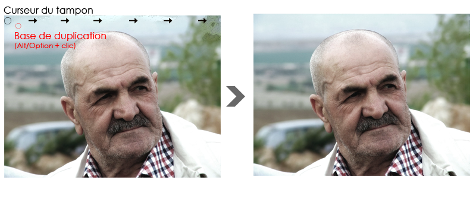
Augmentation de la saturation
Les couleurs de l'image sont un peu ternes à mon goût, je pense qu'il y a matière à ajouter de la saturation pour les raviver un peu. J'ouvre donc ma fenêtre Teinte/Saturation et vais jeter un œil du côté du paramètre "Saturation".
Si j'ai personnellement décidé de saturer un peu plus les couleurs, vous auriez très bien pu opter pour une autre solution. Pourquoi pas tenter le noir et blanc ? Ou bien l'effet sépia aussi, en cochant l'option "Redéfinir" dans la fenêtre Teinte/Saturation ?
Amélioration du contraste
On peut aussi avoir besoin d'utiliser les niveaux de couleurs, et notamment pourquoi pas pour ajouter du contraste à l'image. On n'est pas obligés, mais personnellement je suis particulièrement friand des niveaux de couleurs et je sais que ça donne un effet sur la photo qu'on retrouve d'ailleurs assez régulièrement sur certaines photos de qualité.
Vous en aurez également besoin si vous travaillez en noir et blanc. N'hésitez pas à utiliser les niveaux de couleurs. ;)
Suppression des rides
C'est sans doute l'étape la plus délicate de toutes et je suis certain que vous avez buté là-dessus. C'est normal, vous débutez, vous avez encore besoin de vous expérimenter un peu pour être vraiment à l'aise avec la bête. La bête ? Oui, je veux parler du correcteur localisé bien entendu que je ne peux que conseiller pour ce type d'exercice.
Pour réussir, il ne faut pas oublier trois choses essentielles :
Définir les bonnes options au bon moment.
Paramétrer correctement son outil en choisissant la bonne épaisseur et la bonne dureté.
Travailler en prenant sans cesse le temps de la réflexion : comment travailler cette ride, mon outil est-il vraiment approprié, est-il bien paramétré, ... ?
C'est ainsi que nous allons enfin être prêt à travailler sur les rides. N'oubliez pas que le diamètre de votre outil doit être supérieur à la taille des éléments à supprimer, donc plus épais que les rides. Passez l'outil sur l'une des rides frontales de la personne sur la photo et voyez le résultat. Si d'autres rides réapparaissent, elles seront forcément moins importantes que la première. Ainsi, vous n'avez qu'à rééditer l'opération en modifiant l'épaisseur de votre outil sur les nouvelles rides. Ne négligez aucun ride, les plus visibles autant que les moins visibles, sans quoi votre travail ne sera pas complet.
Je vous laisse observer le résultat que j'ai personnellement obtenu en travaillant chaque ride, un travail de longue haleine m'attendait et vous a attendu. D'abord, le résultat en travaillant les rides frontales ...
Puis le résultat que j'ai obtenu en passant un coup de correcteur sous les yeux pour enlever les rides et rendre les poches un peu moins creuses par la même occasion.
N'oubliez pas : il faut essayer d'utiliser les options de l'outil chaque fois que vous en voyez l'utilité. Si par exemple votre outil ne travaille pas efficacement sur certaines parties de l'image, il faut essayer d'autres options pour voir si cela correspond mieux. Vous pouvez même changer d'outil et en essayer d'autres si cela peut arranger le problème.
Enfin, je me suis permis d'enlever les impuretés du nez du monsieur, ce que l'on appelle plus communément les "points noirs". J'ai utilisé le correcteur, avec un diamètre très bas et en attaquant chaque point noir un par un. De la patience, je vous disais qu'il allait en falloir. :p
Allez, un énième avant/après et on pourra clôturer ce chapitre avec quelques conseils de fin.
Évolution et perspectives
Pour un début, c'est déjà un travail très laborieux et je peux vous dire que vous avez du mérite d'en être arrivé jusque là, croyez-moi c'est déjà très bien, quel que soit le résultat de vos travaux. ;)
En infographie, il y a toujours moyen "de faire mieux". On peut toujours trouver des éléments à modifier, à améliorer, etc. Le tout étant de faire ça bien et de ne pas tomber dans l'excès. Ainsi, je peux vous proposer quelques idées pour améliorer votre rendu, il sera surtout question d'esthétisme plus qu'autre chose, mais c'est toujours bon à prendre.
Utilisez les styles de calque
Les options de fusion sont à mon sens un excellent moyen de donner de la valeur ajoutée à vos photos sans pour autant les truffer d'effets spéciaux sans intérêts.
Voici quelques idées que je vous invite à garder précieusement dans un coin, vous pourriez en avoir besoin à terme quand vous vous lancerez dans vos propres projets. ;)
1. Ajoutez un cadre à votre photo
Il est facile d'ajouter un cadre à votre photo à partir du moment où vous maitrisez les styles de calque. Pour cela, on va avoir recours au contour. Je ne vais pas vous guider pas à pas car je sais que vous en êtes capable tout seul. Voici cependant quelques indications qui pourraient vous aider :
Si votre calque est un calque de type Arrière-plan, déverrouillez-le en double-cliquant dessus ou en cliquant sur le cadenas dans la fenêtre de calques.
Définissez une position intérieure à votre contour sans quoi il ne sera pas visible.
N'hésitez pas à choisir un nouveau type de remplissage, comme le dégradé par exemple. Restez néanmoins sobre.
Moi, j'en suis arrivé à ça, c'est très sobre mais ça me plait.
2. Ajoutez une ombre interne
Encore une fois, dans le but de styliser un peu plus la photo, j'aime ajouter de temps en temps de l'ombre interne. Je vous laisse juger de la pertinence de l'effet, en tout cas moi j'adhère :
Bon, c'est toujours aussi léger mais qu'importe, ça reste suffisamment important selon moi pour être ajouté.
3. Transformez l'image et ajoutez-y une ombre externe
Et enfin, on pourrait aussi transformer l'image et lui ajouter une petite ombre externe pour donner un effet de profondeur à l'image. :)
On va commencer par réduire un peu l'image avec la transformation en homothétie, puis on utilise la rotation pour incliner légèrement l'image et on ajoute l'ombre (je vous conseille de mettre 0 de distance pour que l'ombre soit équitablement répartie autour de l'image) :
Après, on peut même s'amuser à empiler les photos en dupliquant les calques. :p
J'espère que ce premier TP vous a plu et j'espère surtout qu'il vous a permis de faire de vraies prouesses techniques en matière de retouche photographique ! D'ailleurs, je dois dire que vos connaissances vont maintenant au-delà du "novisme", vous êtes maintenant plus habile avec les outils de Photoshop et vous pouvez vraiment vous en féliciter. :)
Tout d'abord, je vous souhaite la bienvenue dans cette troisième partie du tutoriel !
Dans ce premier chapitre, on peut dire que vous allez enfin pouvoir faire usage du mot "créer", notamment quand vous parlerez à vos amis de ce tutoriel. :-° Bon, je ne vous promets pas monts et merveilles, mais au moins de quoi avoir une base que vous serez libres, par la suite, de travailler pour devenir de vrais infographistes.
Je ne dis pas que vous n'en avez pas l'étoffe, je suis même sûr du contraire. Mais avant de vous donner un titre qui, soit dit en passant, ne veut pas dire grand chose, il vous faudra des acquis que vous consoliderez en pratiquant de manière régulière et rigoureuse, ce que l'on appelle plus communément... l'expérience (oui, oui !).
Hey, d'ailleurs, je ne sais pas si vous vous en souvenez, mais je vous en avais déjà touché un mot au début du cours (ça commence à remonter maintenant !). Flashback :
« Je suis absolument incapable de développer votre esprit créatif et encore moins capable de faire de vous des Picasso modernes. Ce n'est pas là l'objectif de ce cours, et je pense d'ailleurs qu'il est techniquement impossible qu'un tel cours fonctionne. En fait, la lecture de ce tutoriel vous permettra d'avoir les bons outils en main pour développer tout seul votre esprit créatif et ainsi, réaliser ce que vous aimeriez réaliser. Comme n'importe quel apprentissage, c'est en expérimentant que l'on s'améliore. Je vous rappelle que j'ai commencé comme vous ;) . »
Allez, on commence doucement avec une petite minute théorique afin de mettre en marche le cerveau puis on attaque ensuite avec les outils de création semblables à nos outils d'artiste : le crayon, le pinceau et le pot de peinture !
Si vous avez bien suivi le cours depuis son commencement, je ne devrais pas avoir à me répéter au sujet du pixel. Qu'est-ce qu'un pixel ? Comment cela fonctionne ? Qu'est-ce qu'une image numérique ? Autant de questions auxquelles vous êtes censés savoir répondre. Reprenons juste là-dessus :
Qu'est-ce qu'une image numérique ?
Je n'ai cessé de vous expliquer qu'on parlait d'image numérique pour référence aux images composées de pixels. On parlera alors d'image de type BITMAP, moins connue sous le nom d'image matricielle.
Ce que je ne vous ai toutefois pas dit, c'est qu'une image numérique n'est pas exclusivement une image composée de pixels.
Gné ? Je crois que tu nous en avais légèrement parlé, ouais, mais j'ai un peu de mal à te suivre...
En fait, il existe un tout autre type d'image numérique que l'on appellera image vectorielle (par opposition aux images matricielles). Comme l'explique Wikipédia, ces images ne sont pas composées de pixels mais « d'objets géométriques individuels (segments de droite, polygones, arcs de cercle, etc.) » chacun caractérisé par leur forme, leur position, leur couleur, etc.
Matriciel/Vectoriel
Une image matricielle (BITMAP) est une image exclusivement constituée de pixels. S'il s'agit du format le plus commun et qu'il est certainement celui que l'on utilise le plus couramment, il présente néanmoins un inconvénient de taille : les dimensions d'une image matricielle ne sont absolument pas modulables. Si l'on agrandit une image matricielle, elle va finir par se détériorer, on dira alors qu'elle est trop « pixelisée ». Une telle image est alors floue et même obsolète comme en témoigne cette illustration (merci Jiyong) :
A l'inverse, une image vectorielle a l'avantage de pouvoir être agrandie à l'infini. On crée une image vectorielle à l'aide de formes géométriques qui sont automatiquement calculées par votre machine ce qui les rendent modulables à souhait. Ainsi, il n'y a pas d'effet de "pixellisation" dû à l'agrandissement des images (appelé aussi l'effet escalier). Pour vous donner un exemple, on utilise couramment des images vectorielles pour produire des logos, des icônes ainsi que certaines affiches qui doivent être imprimées en très grand format.
Je ne comprends pas trop en fait. Pourquoi c'est le BITMAP qui est le plus utilisé dans ce cas ?
Le matriciel ne nous donne aucune restriction en terme de création. On peut à peu près tout faire, il suffit simplement d'utiliser les pixels de la zone de travail et de laisser libre cours à son imagination. Or, avec le vectoriel, on va créer plusieurs tracés de différentes formes et couleurs que l'on va assembler pour former un dessin. C'est donc une toute autre technique de création qui va s'avérer moins efficace pour créer des images de qualité photo réaliste, c'est-à-dire très détaillée au point de confondre avec la réalité, mais plus profitable pour la création de logos, par exemple.
Matriciel (bitmap)
Vectoriel
Définition : image numérique composée de pixels Avantage : diversité sur le plan création, aucune restriction Inconvénient : non-modulable sinon effet escalier (flou)
Définition : image numérique composée de formes géométriques Avantage : possibilité d'agrandir l'image à l'infini Inconvénient : beaucoup de restrictions en terme d'effets spéciaux
Les notions vues dans cette première partie du cours doivent être acquises. Si vous n'arrivez pas encore à faire la différence entre vectoriel/matriciel, c'est qu'il y a un problème. Une petite relecture devrait vous aider. ;)
Pour l'heure, nous étudierons dans ce chapitre les outils de type matriciel (avant de passer aux outils vectoriels), cela me permettra de vous parler de Pixel-Art qui est une discipline à part entière dans le domaine de l'infographie bien qu'elle soit un peu méconnue du fait des restrictions qu'elle impose sur le plan diversité de création.
Définition
Le Pixel-Art, expression anglophone qui se traduit par « l'art du pixel », est une discipline qui consiste à dessiner pixel par pixel, c'est-à-dire qu'on va créer une image en s'occupant de remplir chaque pixel de notre zone de travail, un par un.
Haha ! Non, sérieusement, c'est quoi le secret là... ?
Je suis très sérieux. On va zoomer sur notre zone de travail et on va remplir chaque pixel pour former un dessin complet. D'ailleurs, voici un exemple, c'est un dessin entièrement réalisé pixel par pixel et je peux vous dire que son auteur n'a pas chômé !
De toute évidence, je n'aurai jamais assez d'un chapitre pour vous initier aux différentes techniques du Pixel-Art. Le dessin ci-dessus est le fruit de longues heures de patience et de travail de la part son auteur qui est certainement très expérimenté et maitrise parfaitement son sujet. En réalité, je vais vous faire découvrir l'outil dont vous avez déjà forcément entendu parler, le Crayon, à travers cette discipline qu'est le Pixel-Art. Il s'agit en effet de l'outil qu'on utilise le plus généralement pour en faire, cela vous permettra de comprendre rapidement son mode d'action.
Commencez par prendre en main votre crayon puis ouvrez une nouvelle zone de travail. Veuillez paramétrer cette zone de travail selon les données suivantes :
Dimensions : 250*250 px
Arrière-plan : blanc
Pour le reste, c'est carte blanche. :-° Nous voici donc avec une zone de travail vide, il ne reste plus qu'à la remplir ! :D
Mais avant cela, on va voir ce que nous offre la panoplie d'options relatives au crayon.
Ces options ne sont pas bien différentes de celles que nous avons déjà étudiées dans les chapitres précédents, d'ailleurs il n'y a qu'une seule nouveauté, c'est l'inversion auto, qui permet d'inverser la couleur automatiquement quand on utilise l'outil (par exemple, le blanc est automatiquement transformé en noir quand on utilise le crayon). Si je veux "à tout prix" vous parler de ces options, c'est pas pour vous rabâcher ce qui a déjà été rabâché maintes et maintes fois (les modes de fusion, l'opacité, ...) mais surtout pour vous faire prendre conscience de l'importance ici de choisir un bon diamètre pour notre outil.
Je vais encore un peu radoter, mais faire du Pixel-Art, c'est travailler une image pixel par pixel. Là où je veux en venir, c'est qu'il va falloir paramétrer notre outil pour lui donner un diamètre qui corresponde à notre technique de travail, donc un diamètre pas plus élevé que... un pixel ! Tout compte fait, on n'a même pas besoin de changer le paramètre puisque, à défaut de l'avoir préalablement modifié, le diamètre de votre crayon devrait déjà être d'un pixel (voir image ci-dessus, option de gauche).
Vous l'aurez donc compris : pour faire du Pixel-Art, on a besoin d'une zone de travail vide et du crayon. C'est pas plus compliqué et ça peut se révéler être un art très passionnant.
Oui, bon, on l'essaie cet outil, oui ou non ? :p
Oui, essayons. Vous êtes censé avoir ouvert une zone de travail, il va donc simplement falloir prendre votre crayon en cliquant sur la vignette associée ou bien en tapant sur la touche B.
Assurez-vous qu'il soit bien paramétré, et en l'occurrence je pense au fameux 1 pixel de diamètre.
Premièrement, faites un zoom x10 sur la ZDT (3200% - le maximum quoi) puis placez votre curseur au-dessus de votre zone de travail et enfin, cliquez une fois :
En cliquant, vous avez rempli un pixel de la couleur de premier-plan de votre palette (en l'occurrence, pour moi, c'était du noir !). Et bien, c'est à peu près tout ce que vous avez à savoir pour être apte à faire du Pixel-Art en fait. :D
Quoi ? C'est tout ?
Bah, en même temps, le mode d'action du crayon n'est pas plus complexe ni compliqué que celui-ci. Mais je vois où vous voulez en venir, vous ne savez pas exactement quoi faire avec l'outil, c'est ça ? Cela peut se comprendre puisqu'en effet, on n'a quasiment rien fait avec pour le moment. Alors, pour remédier au problème, je vais tenter de vous faire pratiquer histoire de vous familiariser un peu avec l'outil.
Par contre, ce cours ne portant pas directement sur le Pixel-Art, je ne pourrai pas vous initier à toutes les techniques de création auxquelles on peut avoir recours quand on travaille dans ce domaine. Je veux vous prévenir que vous n'aurez clairement pas les acquis nécessaires pour réaliser, par exemple, le dessin que je vous ai présenté au début de la partie. Comme je vous le disais, il faudrait écrire un tutoriel complet pour réussir de telles prouesses (et une bonne expérience aussi).
Non, en fait, je vais simplement vous donner un exemple que je vous demanderai de reproduire (ou de réaliser en même temps que moi) pour que vous ayez une idée concrète de comment on dessine avec un crayon sur Photoshop. Ce n'est pas sorcier en soi, mais ça demande quand même des bases sur lesquelles s'appuyer, comme par exemple l'utilisation de la perspective isométrique ou encore la création des dégradés que l'on utilise généralement pour réaliser des dessins bien plus complexes que celui que je vais vous proposer de faire tout de suite. :)
L'essai
Allons donc, c'est parti pour l'essai traditionnel. Sans surprise, nous allons faire du Pixel-Art, enfin du Pixel-Art "léger". ^^ Commençons par créer une nouvelle zone de travail de 150*150px sur fond blanc.
N'oubliez pas qu'il va régulièrement falloir zoomer (pour ne pas dire constamment) sur votre zone de travail sans quoi vous ne pourrez pas travailler minutieusement (ou alors, je demande à voir !).
Commencez par choisir du noir en couleur de premier-plan dans votre palette de couleur...
... créez ensuite un nouveau calque standard vide et enfin, remplissez 50 pixels de manière successive et de sorte à former un trait vertical. Le nouveau calque correspondra évidemment à ce trait vertical. Vous devriez obtenir une ligne semblable à celle-ci :
Reprenons le même exemple, mais en traçant cette fois-ci un trait horizontal de 45 pixels. N'oubliez pas de créer un nouveau calque. ;)
On recommence maintenant la même chose de sorte à former un rectangle, comme ceci :
Assurez-vous d'avoir bien créé un calque vide pour chaque nouveau trait.
On a presque terminé les "fondations" de notre dessin. La prochaine étape consiste à créer un effet de perspective pour former un cube à partir de notre rectangle. Enfin, nous allons plutôt faire un prisme, le cube étant par définition composé de 6 faces parfaitement identiques (ce que nous ne ferons pas). Ne m'en voulez pas si je dis "cube", c'est plus simple. :-°
A partir du sommet gauche, vous allez devoir remplir 20 pixels en diagonale, en direction de la droite. Vous comprendrez plus facilement avec un dessin :
Dupliquez ensuite le calque correspondant à ce nouveau trait et déplacez-le sur le sommet droit du rectangle, comme ceci :
Allez, on recommence : duplication du calque et déplacement vers le sommet en bas à droite du rectangle, comme ceci :
Et pour finir, on referme le tout, j'attends donc de vous que vous obteniez ce résultat-ci !
L'architecture globale de notre cube est terminée. On va pouvoir commencer à coloriser tout ça et donner un peu de valeur ajoutée à ce petit cube tristounet. Choisissez une couleur de base que vous devrez définir dans la palette de couleurs, en couleur de premier-plan. Pour ma part, ce sera #dbd29e. Si vous voulez un conseil, prenez la même ! ^^
Votre crayon en main, remplissez (d'un nouveau calque) les pixels se trouvant à l'intérieur de la première face du cube. J'aimerais que vous arriviez à un résultat proche de celui-ci :
Pour assurer un éclairage réaliste, il va maintenant falloir changer la couleur de notre palette. En fait, quand je dis changer, c'est juste reprendre la même base (donc ici, du beige), mais pour une couleur légèrement plus sombre. Pour cela, il suffit simplement de descendre un petit peu le rond du sélecteur de couleur. Pour ma part, le nouveau code hexadécimal est #cbc292.
Quand la couleur est changée, remplissez la face supérieure de l'image, comme ceci :
Et comme si on en avait jamais assez, on refait exactement la même chose : on change la couleur pour quelque chose d'un peu plus sombre encore (mais sur la même base au niveau de la couleur) puis on remplit la dernière face du cube.
Créez un nouveau calque, placez-le en haut de la liste dans la fenêtre calques puis modifiez la couleur de premier-plan dans la palette de couleurs en reprenant la même base que la première face de votre cube (la première que nous avons remplie - servez-vous de la pipette). Je vous mets quand même le code hexadécimal pour aller plus vite : #dbd29e . Cette fois-ci, toujours avec cette base, modifiez la position du sélecteur de couleur pour une couleur plus claire encore :
Afin de donner encore plus de relief à notre cube et d'accentuer le jeu de lumière, nous allons remplacer les traits noirs se situant à l'intérieur du cube avec la nouvelle couleur, comme ceci :
Pourquoi nous avoir fait tracer des traits noirs, dans ce cas ?
Je vous ai fait tracer les traits noirs pour que vous puissiez avoir une base sur laquelle colorier. Maintenant que cette dernière étape est passée, vous pouvez tous les supprimer, même si le mieux serait quand même de les masquer en cliquant sur les petits yeux qui leur correspondent dans la fenêtre de calque. Ou alors, vous pouvez tout simplement les remplacer eux aussi, mais par une couleur plus foncée que toutes celles déjà existantes dans votre création. En ce qui me concerne, je vais opter pour cette solution. Pour la couleur choisie, voici le code hexadécimal à rentrer dans votre palette de couleurs : #a79f72. Le résultat :
Notre cube est quand même déjà bien mieux que notre première ébauche. :-°
C'est déjà terminé ?
Hmm... Disons que cet exemple aura été fructifiant dans la mesure où vous avez pratiqué : c'est tout ce qui m'importait pour être honnête. Maintenant, rien ne vous empêche d'améliorer ce cube en y apportant la fameuse "valeur ajoutée" dont je vous parlais. Quoi par exemple ? J'en sais rien... à quoi ce cube vous fait-il penser ? Un jouet ? Un immeuble ? Un dé ? Une boite ? ...
En reprenant l'exemple de l'immeuble, pourquoi ne pas tenter de créer une porte ? Avec un peu de jugeote, je suis sûr que vous réussirez !
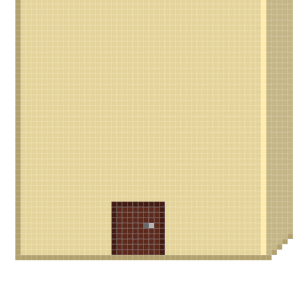
Puis... pourquoi pas ajouter quelques petites fenêtres ? Voilà un exemple :
En variant un peu pour les fenêtres, voici le résultat que l'on pourrait obtenir :
Une petite sortie sur le toit ? :-°
On ajoute une antenne...
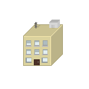
Des petites barrières de sécurité au cas où ?
Et pour finir, j'ai ajouté des conteneurs poubelles sur le côté de l'immeuble.
Et voilà le travail ! Tout ça avec le crayon, c'est plutôt pas mal, n'est-ce pas ? ;)
Et si je vous disais qu'on aurait pu terminer ce dessin en Pixel-Art un chouilla plus rapidement... ? Si je vous disais qu'on aurait pu se faciliter la tâche pour colorier les faces de notre immeuble et qu'en un clic, ç'aurait pu être fait ? :D
Le pot de peinture
Pour colorier les faces de l'immeuble, je vous avais demandé d'utiliser le crayon et de le passer un peu partout, sans dépasser. Eh bien, oui, en réalité, il y a avait beaucoup plus simple, je suis au regret de vous l'annoncer. :D
Je ne comprends pas trop ta démarche en fait... Me faire travailler pour rien, j'aime pas ça. :colere2:
Vous n'avez pas travaillé "pour rien". Au contraire, voyez le résultat, il n'est pas si mal votre immeuble ? Je ne pouvais pas vous parler de l'outil Pot de peinture à ce moment-là car ce n'était pas forcément le moment le plus adéquat étant donné que la partie de ce cours portait bien sur le crayon et non autre chose.
A propos, à l'instar du crayon, vous trouverez le Pot de peinture
dans la panoplie d'outils Paint. Pour sélectionner cet outil, vous pouvez utiliser la touche G.
Cet outil sert à remplir une zone de votre travail. Au même titre que la baguette magique, il suffit de cliquer au centre de cette zone pour que celle-ci se remplisse de la couleur d'avant-plan choisie dans la palette de couleurs. Je ne vais pas m'attarder trop longtemps dessus, vous avez compris que son utilisation était simple comme bonjour. Reprenons notre création Pixel-Art:
Qu'auriez-vous fait si je vous avais demandé de modifier la couleur de la face principale de l'immeuble ? La solution est toute trouvée : on prend l'outil Pot de peinture, on définit la couleur souhaitée dans la palette de couleurs et enfin, on clic dans la zone en prenant soin de sélectionner le calque dans la fenêtre de calques, à condition bien entendu d'avoir prévu un calque spécialement pour cette face comme je vous avais demandé de le faire tout à l'heure. ;)
Le changement est immédiat, rapide et très réussi :
Bon, bien sûr, avec cette nouvelle couleur, la création perd tout son intérêt. Un petit coup de peinture par-ci par-là et...
Les dégradés
Le dégradé faisant partie de la même famille que le pot de peinture, il faut faire un clic droit sur ce dernier pour faire dérouler la liste dans laquelle notre nouvel outil apparaitra.
Vous savez ce qu'est un dégradé, nous en avons longuement parlé dans la partie sur les styles de calques. Et justement, à l'instar du style "dégradés", l'outil dégradé
permet la création d'un... dégradé de couleurs sur un calque. :)
Pourquoi j'utiliserais l'outil dégradé quand je peux le faire via les styles de calque ?
C'est une bonne question. En fait, c'est à vous de voir. Les styles de calque, c'est une sorte de paramètre ajouté au calque. Ce n'est pas un effet brut, je dirais que c'est un complément. Avec l'outil, on va appliquer le dégradé directement sur le calque. Cela peut s'avérer plus précis et plus pratique aussi, mais c'est surtout selon les goûts.
Personnellement j'utilise le style de calque par habitude, mais rien ne vous empêche d'utiliser l'outil. D'ailleurs, le gros atout, tout de même, de l'outil dégradé, c'est qu'on peut l'utiliser avec la sélection, ce qui se révèle être vraiment très pratique dans la sens où vous pouvez "remplir" d'un dégradé de couleurs tous les éléments que vous désirez. Il suffit de les sélectionner et d'appliquer le dégradé.
La question qu'il faut se poser maintenant, c'est : "comment ça fonctionne ?". Tout d'abord, notez que le dégradé de couleurs par défaut utilisera la couleur de premier plan et la couleur d'arrière-plan de la palette de couleurs.
Du noir (premier-plan) au blanc (arrière-plan)...
Veuillez créer une nouvelle zone de travail aux dimensions 250*250px et sur fond blanc.
Pour créer un dégradé avec l'outil, il suffit d'indiquer deux points entre lesquels les deux couleurs vont se rejoindre (et former le dégradé bien entendu). Créons ce premier point : on clique et on maintient le clic de sorte à ce qu'un trait apparaisse entre le point et le curseur de votre souris. On décidera de la trajectoire du dégradé en déplaçant le curseur. On a déjà connu ce système avec les outils de détourage tels que les différents lassos, donc rien de bien compliqué ici.
Une fois la distance et la trajectoire déterminées, il ne reste plus qu'à lâcher le clic et le dégradé se formera automatiquement à l'intérieur de votre zone de travail :
C'est étonnant, la distance de mon trait ne dépassait pas les dimensions de ma ZDT. Pourtant, le dégradé occupe toute la place !
C'est normal, vous ne lui avez indiqué aucune zone de délimitation. Tout ce que vous avez fait, c'est déterminer la trajectoire et la longueur de votre dégradé. Vous auriez pu faire sortir le trait de la zone de travail que ça aurait aussi marché. Simplement, le dégradé aurait été plus large, plus "étiré". Et à l'inverse, si vous aviez "tracé" un tout petit trait, la transition du noir et blanc aurait été plus directe.
Essayez de faire la même chose, mais juste après avoir créé un rectangle de sélection légèrement plus petit que les dimensions de votre zone de travail :
On redéfinit la trajectoire et la distance de transition du dégradé de couleurs...
Et on lâche le clic pour laisser apparaitre le dégradé à l'intérieur de la sélection.
Voyons ce qui se serait passé si nous avions définit une distance beaucoup plus réduite, comme ceci :
Le résultat :
La transition entre le noir et le blanc est plus directe, c'est parce que la transition a commencé à partir du premier point que nous avons créé, puis s'est terminée à partir du deuxième point.
L'essai
On va garder notre immeuble en guise d'exemple et allons une nouvelle fois essayer de modifier l'apparence de ses murs. Vous allez constater que cela n'a rien de sorcier, encore une fois. :-°
Commençons par la face principale de l'immeuble, celle avec les fenêtres et la porte d'entrée. Veuillez sélectionner le calque correspondant à cette face dans la fenêtre de calque puis sélectionner le mur avec un outil de sélection tel que le rectangle de sélection.
On prend ensuite notre outil dégradé et on fait comme on a appris : choix de la distance et de la trajectoire. N'oubliez pas de modifier les couleurs de votre palette de couleurs avant. Voici ce que j'ai personnellement obtenu, j'ai repris la même base de couleur et ai effectué mon dégradé d'en haut à droite à en bas à gauche.
On réédite l'opération sur les deux autres faces de l'immeuble...
Voilà pour le dégradé, vous êtes maintenant formés et saurez l'utiliser à tout moment !
Attends ! T'as oublié de nous parler des options !
Hormis les différents types de dégradés, on connait déjà la majorité des options du dégradé. En ce qui concerne les dégradés justement, vous disposez d'une multitude de types de dégradé que je vais simplement vous énumérer parce que, finalement, on en a déjà parlé lors du passage sur le style de calque "dégradé". ;)
Il est enfin temps de s'intéresser au fameux pinceau ! Et le vrai, cette fois-ci. Si je dis ça, c'est parce que j'utilisais souvent ce même terme pour désigner d'autres outils comme l'éponge par exemple dans le sens où ils fonctionnaient tous les deux de la même manière, leur utilisation était semblable. Seuls leurs modes d'action différaient.
Pour sélectionner le pinceau, vous pouvez utiliser la touche B de votre clavier.
Et justement, on va maintenant pouvoir s'intéresser au mode d'action du vrai pinceau, celui qui va nous permettre, entre autres, de dessiner des formes diverses et variées comme on pouvait déjà le faire avec le crayon.
Bah, justement, si on peut faire la même chose avec le pinceau et le crayon, quelle est la différence ?
C'est une bonne question à laquelle il vous faut connaitre la réponse. Je vous ai présenté le mode d'action du crayon à travers le Pixel-Art. Cela consistait donc à dessiner pixel par pixel. Pourquoi pixel par pixel ? Parce que c'est ce que permet le crayon. Utiliser le crayon, c'est remplir un pixel ou des pixels d'une couleur à 100%. Cela se constate au premier abord : quand on zoome sur notre ZDT et qu'on clique avec notre crayon paramétré à 1px de diamètre, le pixel est complètement rempli de la couleur de premier plan (ici le noir) :
Bah, ça, c'est logique non ?
Avec le crayon, ça l'est. Avec le pinceau, c'est autre chose. Et pour preuve : en zoomant sur la ZDT et en reprenant le même exemple (on clique avec 1px d'épaisseur, toujours avec du noir), vous ne remplirez non pas 1 seul pixel mais plusieurs, tous d'intensités de couleur différentes en fonction de là où vous aurez cliqué :
Ici, on a 4 pixels de remplis, et en plus ils sont gris. Pourtant, j'ai bien utilisé du noir, et j'ai bel et bien cliqué une seule fois, et sur un seul pixel. Si vous voulez, le pinceau est moins net, il a tendance à s'étaler un peu pour donner un effet moins pixelisé. Par exemple, avec le pinceau, il est techniquement impossible de faire du Pixel-Art, ou alors très, très, très difficilement (et ce ne serait plus du Pixel-Art d'ailleurs).
Cela se remarque sur une image en gros plan (comme celles ci-dessus) mais aussi sur plan large, regardez.
Sur deux dessins de forme identique et dessinés avec un même diamètre (mais le premier au pinceau, l'autre au crayon), on obtient deux résultats parfaitement différents. Le dessin au pinceau est moins net, comme je vous l'avais annoncé, que celui au crayon. Ce que je ne vous ai toutefois pas dit, c'est qu'il est possible d'utiliser le pinceau sans pour autant que le rendu soit aussi flou que le dessin précédent. En fait, le principe est simple, tout se passe avec la dureté, que vous trouverez en faisant un clic droit à l'intérieur de la zone de travail (la fameuse petite fenêtre des options de l'outil).
Par défaut, la dureté du pinceau est à 0%. On peut traduire ça par "le pinceau est mouillé". Et quand un pinceau est mouillé (enfin son poil), la peinture a tendance à être légèrement floue, à l'image du dessin ci-dessus. En modifiant le % de dureté du pinceau, et en l'occurrence en la mettant à 100%, le pinceau apparaitra comme sec et donc, la peinture y sera moins floue, le résultat sera d'ailleurs proche de celui du crayon :
Même si ces deux résultats sont très proches, on remarque quand même une petite différence. Et c'est normal : le dessin du pinceau ne présente pas cet effet crénelé que l'on retrouve sur celui du crayon...
Les brosses
En réalité, sur Photoshop, on appelle le bout du pinceau (le poil) une brosse, bien que le terme le plus couramment utilisé soit celui de nos amis anglophones, on parlera alors de brush. On dispose d'un nombre incommensurable de brosses, ce sont celles que nous fournit Photoshop à l'achat ou au téléchargement. La brosse par défaut est celle que nous utilisons depuis le début. Mais vous en trouverez une partie ici-même :
Pour toutes les autres, il vous faudra cliquer sur la petite flèche en haut à droite et sélectionner la catégorie qui vous intéresse.
Pour l'exemple, j'ai ouvert la catégorie "Effets spéciaux" et ai choisi l'une des brosses pour en arriver ici :
Un autre petit essai avec l'une des formes "DP"... ?
Ce n'est pas forcément très beau, mais ça reste quand même très efficace pour le peu de boulot que cela nous demande. Et c'est justement un "problème", les brosses sont souvent critiquées pour cela. J'aimerais donc en profiter pour vous sensibiliser et vous faire comprendre que l'utilisation de brosses, c'est bien, mais à petite dose. ;)
Ce qui est vraiment super, c'est qu'il existe un très grand nombre de brosses disponibles sur la toile. Une petite recherche sur Google vous permettra de trouver votre bonheur. Croyez-moi, ce n'est pas ce qu'il manque. Voici un petit échantillon de ce que j'ai pu télécharger personnellement. Vous allez voir qu'on peut "faire" des trucs sympa sans trop se fouler :
Le pinceau, pour quoi faire ?
Vous le savez, on utilise le crayon pour faire du Pixel-Art. Mais avez-vous une idée des domaines pour lesquels on utilise le pinceau ? :)
Digital painting
On a recours au pinceau pour différents types d'utilisation, et je peux par exemple vous parler du très connu "digital painting", peinture numérique en français, qui consiste tout simplement à... peindre. ^^ Un peu comme le Pixel-Art, je ne pourrai pas vous initier au digital painting car ce serait trop long et ce n'est pas l'objet de ce cours. En fait, vous savez comment fonctionne le pinceau et c'est là l'essentiel. Du coup, je vous laisse vous documenter si cette technique de création vous intéresse, en attendant je vous laisse baver devant ces œuvres. Avant d'en arriver là, il va falloir travailler ! :D
A titre d'information, toutes ces images ont été réalisées avec des tablettes graphiques, ce qui s'avère quand même bien plus pratique. Une tablette graphique, c'est une planche électronique sur laquelle on fait mine de dessiner pour que nos faits et gestes soient retranscrits sur notre ordinateur, cela nous permet donc de dessiner sans utiliser notre souris d'ordinateur. Toujours est-il que c'est du travail exceptionnel et qu'il faut vraiment travailler dur pour réussir de telles images. Mais ne vous découragez pas.
Retouche photographique
On peut utiliser le pinceau pour dessiner sur une photo et la modifier voire la retoucher. Le plus souvent, le pinceau va servir à coloriser certaines parties d'une image, comme par exemple les yeux. Il existe un tas de techniques pour colorier des yeux, mais le pinceau peut se révéler plus pratique dans la mesure où l'on a une totale maitrise sur lui. On clique, et on colorie les parties qui nous intéressent.
D'ailleurs, un outil a été inventé dans les dernières versions de Photoshop, il s'agit de l'outil
Remplacement de couleur, un cousin de notre bon vieux pinceau. Celui-ci a été étudié spécifiquement pour remplacer la couleur déjà présente au sein d'une image. Ses options nous permettent de l'adapter aux différents types d'images auxquelles on peut être confrontées. Je vous laisse le soin de l'essayer. :)
Masques de fusion
Le pinceau est réellement polyvalent. S'il sert à dessiner et à retoucher une image, on profite souvent de cet outil en complément de ce que l'on appelle les "masques de fusion".
Ah bah oui, ça on connait, les modes de fusion. Mais quel rapport avec le pinceau... ?
Attention, j'ai bien dit les masques de fusion et non les modes de fusion. Ce sont deux notions parfaitement différentes et il vaudrait mieux ne pas faire de confusion, c'est pour vous que je dis ça. :-°
Inutile de vous rappeler ce qu'est un mode de fusion, vous le savez aussi bien que moi maintenant. Ce que vous ne connaissez pas en revanche, ce sont les masques. Et bien figurez-vous qu'avec eux, on va non pas créer, non pas retoucher, mais nous allons sélectionner ! :D Eh oui, encore un outil de sélection qui vient s'ajouter à notre longue liste d'outils de sélection déjà étudiés. Mais, évidemment, les masques de fusion proposent de sélectionner une image différemment, sans quoi ils n'existeraient pas.
Pour utiliser un masque de fusion, il faut déjà en créer un. Prenons un exemple, nous travaillerons sur cette image :
N'hésitez pas à travailler avec moi ! Télécharger l'image Deux_filles.png Pour télécharger l'image, faites un clic droit puis "Enregistrer sous"
Pour créer un masque de fusion, ce n'est pas bien compliqué, il faut se rendre en bas de la fenêtre de calques et cliquer sur cette image :
. Elle représente les masques sur Photoshop. Si l'icône n'est pas opérationnelle (vous ne pouvez donc pas cliquer dessus), deux raisons sont plausibles :
Votre calque n'est pas sélectionné dans la fenêtre de calque. Du coup, le masque de fusion ne sait pas où se ranger.
Votre calque est un calque de type "Arrière-plan". Du coup, il faut lui retirer ce statut pour pouvoir lui ajouer un masque de fusion. Pour cela, on effectue un double clic sur l'image du calque (puis sur OK quand la nouvelle petite fenêtre apparait) ou on fait un clic droit sur le calque puis, dans la liste, on choisit Calque d'après l'arrière-plan....
Une fois que votre calque est ouvert à la modification et que vous avez cliqué sur le bouton représentatif des masques de fusion, un nouvel élément devrait apparaitre dans votre fenêtre de calques :
Ce nouveau carré de couleur blanche, c'est ce qui caractérise la présence d'un masque de fusion.
Mais c'est quoi, en fait, un masque de fusion ? Ça sert à sélectionner, d'accord, mais c'est quoi ?
Un masque de fusion, c'est une sorte de film transparent que l'on va poser au-dessus du calque pour le protéger provisoirement des futures modifications que l'on apportera au calque. Pourquoi provisoirement ? Tout simplement parce que l'on va pouvoir supprimer ce masque et retrouver notre calque d'origine. Cela signifie donc que l'on va modifier l'apparence du calque, mais que c'est le masque qui va se charger de conserver en mémoire ces modifications, le calque n'aura donc subi aucune modification directe.
Prenons un exemple. J'ai dessiné sur ma zone de travail deux ronds blancs portés par le même calque de fond bleu, puis j'ai créé un masque de fusion et ai créé un rond gris foncé, ce qui donne :
Ceci est un schéma détaillé pour que vous puissiez bien comprendre comme cela fonctionne. Voilà maintenant le même schéma, mais avec un aperçu de la zone de travail :
Le masque de fusion est bien invisible, seul son contenu est venu se confondre avec celui du calque et c'est logique, puisqu'on n'est pas censé savoir qu'un masque de fusion existe. C'est un outil dont seul l'infographiste est censé en connaitre l'existence.
Je vous disais donc que les masques étaient provisoires. Cela se vérifie rapidement, il suffit simplement de supprimer le masque de fusion (nous verrons comment faire, juste une minute) et le tour est joué...
... le rond de couleur grise n'apparait plus dans la zone de travail.
Ok, je vois maintenant... Par contre, désolé, mais j'imagine mal les masques permettre de faire une sélection. :o
N'oubliez pas : les masques de fusions seuls ne le permettent pas, il va nous falloir utiliser le pinceau. On va donc créer un masque de fusion et peindre dessus. Ainsi, toutes les zones peintes feront office de sélection, tandis que les autres seront protégées de toute modification.
Reprenons l'image que je vous ai faite télécharger précédemment et essayons de créer une sélection avec les masques. Commencez par ouvrir l'image sur Photoshop puis sélectionnez le pinceau.
Ensuite, veuillez remettre par défaut les couleurs de votre palette en cliquant sur cette petite icône :
De cette manière, votre palette sera composée de la couleur noir en premier plan, et du blanc en second blanc. Ce sont les deux couleurs dont on aura besoin pour travailler, c'est avec elles que les masques de fusion fonctionnent.
Une fois votre palette réinitialisée, veuillez créer un nouveau masque de fusion en cliquant sur la petite icône représentative :
Je vous rappelle que si le bouton des masques de fusion n'est pas opérationnel (il est grisé et non-cliquable), c'est sans doute parce que l'image que vous avez ouverte sur Photoshop est de type Arrière-plan dans la fenêtre de calques. Pour remédier au "problème", il vous faudra faire un double clic sur la vignette du calque dans la fenêtre de calque puis cliquer sur "Ok", ou bien faire un clic droit sur cette vignette puis cliquer sur Calque d'après l'arrière-plan... et enfin sur Ok. L'icône devrait alors revenir à ton état normal, vous pourrez maintenant créer le masque.
Comme vous le savez, le masque de fusion est caractérisé par l'apparition d'une nouvelle petite vignette venu se loger à droite de la vignette du calque :
On peut ainsi choisir quel élément modifier en cliquant sur la vignette de notre choix : si je clique sur la vignette du masque, c'est lui qui sera prêt à subir des modifications. Si je clique sur la vignette de gauche, autrement dit celle du calque, ce sera sur ce dernier que je vais pouvoir travailler.
Si je vous ai demandé de réinitialiser votre palette de calques afin de lui appliquer ses couleurs par défauts en premier-plan (noir) et en arrière-plan (blanc), c'est parce que nous aurons besoin de ces deux couleurs pour former notre sélection.
Une fois le masque créé, il suffit de peindre dessus avec le noir pour supprimer la partie sur laquelle nous aurons peint. Par exemple, si je travaille sur un visage humain et que, après avoir créé un masque de fusion, je peins sur l’œil, ce dernier va disparaitre au fur et à mesure que je peindrai dessus. Essayez, vous verrez !
Ouvrez une image, peu importe laquelle. Ensuite, créez un masque de fusion puis prenez votre pinceau. Enfin, mettez du noir en couleur de premier-plan et peignez sur votre zone de travail. Si vous avez bien suivi, alors la zone que vous peignez est censée disparaitre, elle devient donc transparente. Et quand une zone est transparente sur Photoshop, souvenez-vous, ce sont des petits carrés blanc et gris qui font leur apparition.
Voyez plutôt. Cette image est tirée de mon appareil photo, elle est donc tout ce qu'il y a de plus normal.
Un petit coup de pinceau en gardant bien entendu les différents paramètres permettant d'utiliser les masques de fusions, et hop, je supprime la demoiselle de gauche :
Bon, j'avoue que c'est un travail un peu grotesque, mais avec un peu d'application, ça peut se révéler très efficace.
Le tout maintenant, c'est de sélectionner ce que l'on a peint. Pour cela, il suffit de maintenir la touche Ctrl (Command) et de cliquer simultanément sur la vignette du masque. C'est alors que la sélection se forme autour du masque.
Or, ici, la sélection n'est pas formée autour de la zone peinte mais de tout le reste. La zone peinte est "protégée" de toute modification, pourtant c'est l'inverse que nous voudrions, nous. Pour qu'elle ne contienne que la zone peinte, il faut faire un clic droit à l'intérieur de la sélection (donc en dehors de la zone peinte et avec un outil de sélection en main) puis cliquer sur "Intervertir", comme nous l'avions déjà fait dans le chapitre sur les niveaux de couleurs, dans la partie 2 de ce cours.
Il suffit ensuite de cliquer sur la vignette du calque pour que la sélection fonctionne sur l'image de base et non plus sur le masque. Vous pouvez aussi supprimer le masque une fois votre sélection faite, en faisant un clic droit sur sa vignette puis en sélectionnant soit "Désactiver le masque", pour le supprimer provisoirement, soit "Supprimer le masque", pour le supprimer définitivement.
Mais pourquoi j'utiliserais les masques plutôt qu'un outil de sélection lambda ?
Tout d'abord parce que vous effectuez cette sélection de manière provisoire. C'est un avantage à ne pas négliger. Aussi, on peut préférer le pinceau pour sa flexibilité : on peint, ça efface, puis on sélectionne la zone peinte et effacée. De plus, on peut moduler notre sélection selon trois caractéristiques on ne peut plus pratiques :
En définissant le blanc comme couleur de premier-plan (on remplace donc le noir), c'est l'effet inverse qui se produit ! Le pinceau n'efface plus, il réinitialise l'effacement causé par le noir. Donc, si vous passez d'abord le noir sur votre dessin, ça efface. Si vous passez ensuite le blanc, ça remet la photo en état.
L'un n'empêche pas l'autre : si vous mettez du gris, le pinceau va générer un effet se balançant entre le blanc et le gris. En d'autres termes, si votre gris est très proche du noir (disons donc gris foncé), alors le pinceau effacera la partie peinte, mais pas à 100% de son efficacité car la couleur n'est pas totalement noire. Cela fonctionne donc comme l'opacité, à la différence près que c'est la couleur qu'il faut moduler, allant du noir au blanc ou du blanc au noir.
Enfin, et c'est là la vraie puissance des masques et du pinceau, c'est qu'on module le type de sélection que l'on veut faire selon la brosse de notre pinceau, autrement dit sa pointe. Si je change la dureté du pinceau, alors je change en quelque sorte la dureté de ma sélection. Rappelez-vous, plus le pinceau est dur, plus il est net. C'est pareil ici : plus le pinceau est dur, plus les contours de la sélection seront nets. Et vice-versa ! Cela se révèle particulièrement efficace sur les photos dont des cheveux ou des poils sont à détourer. Le fait de pouvoir choisir le diamètre du pinceau et sa dureté nous permet de sélectionner les cheveux jusque dans leurs moindres détails. ;)
Mais ce n'est pas tout ! Les masques ne servent pas seulement à sélectionner, il peuvent être utiles à autre chose. Et cet autre chose arrive dans le prochain chapitre, alors tenez-vous prêts ! ;)
Voilà pour les outils de type matriciel. N'hésitez pas à vous entrainer pour progresser en pixel-art et à prendre le temps de découvrir le digital-painting.
Le prochain chapitre traite des outils vectoriels et vous verrez, on a du pain sur la planche ! :D
Je présume que vous aussi, vous avez déjà utilisé le logiciel Paint au moins une fois dans votre vie ? Sachez qu'il n'y a pas de honte à avoir ! Je vais même vous faire une petite confidence, figurez-vous qu'on retrouve certains des outils du logiciel de Microsoft sur Photoshop. Oui, oui, improbable mais vrai. :D
Parmi eux, il y a les outils de forme. Ces outils vont nous permettre de créer des formes géométriques diverses et variées, bien que prédéfinies. Nous apprendrons donc à dessiner des rectangles, des ronds ou encore des triangles.
Mais rassurez-vous, si l'utilisation des outils de forme peut se révéler simple voire enfantine, j'ai quand même prévu de vous en faire baver un peu avec l'emblématique plume. ^^ Elle fait partie des outils "phares" de Photoshop, mais je ne vous en dis pas plus, vous allez vite vous en rendre compte une fois que nous aurons travaillé avec.
A noter une chose avant de commencer : la particularité de tous ces outils est qu'ils sont tous de type vectoriel. On peut donc dire Adios aux images Bitmap (matricielles) pendant au moins tout ce chapitre.
Voici venu le temps des formes géométriques ! :D Elles sont un outil grâce auquel nous allons pouvoir créer des dessins de type vectoriel de différentes formes. On utilise les formes géométriques pour bien des choses et notamment, pour ceux que ça intéresse, pour créer le "design" d'un site internet. :-°
Oui, mais alors non, je n'ai pas encore prévu de vous initier à la dure tâche qu'est l'écriture et la réalisation d'une charte graphique (le fameux "design" comme beaucoup aiment l'appeler). Ce n'est pas ce qui est au programme dans ce chapitre. A la place, nous allons nous concentrer sur les formes pour créer un vrai dessin de toute pièce, et avec un peu de réflexion, vous devriez deviner sur quoi portera ce dessin. ;)
Définition
Comme je vous le disais, les outils de forme sont tout simplement des formes prédéfinies, ce sont autrement dit des formes géométriques. Ainsi, nous apprendrons, par exemple, à dessiner un rectangle ou un polygone.
Voici la liste complète de ce qui nous est proposé. Pour avoir un aperçu de cette liste, il faut faire un clic droit sur cette petite icône
. La touche U permet également de sélectionner l'outil.
Le Rectangle : forme rectangulaire, elle est donc dotée de 4 angles droits.
Le Rectangle arrondi : semblable au rectangle, à la différence que les angles sont arrondis, donc pas d'angle droit.
L'Ellipse : forme circulaire. Même principe que celui de l'ellipse de sélection.
Le Polygone : cette forme dispose de plusieurs côtés.
Le trait : traits rectilignes. comme on les connait.
Forme personnalisée : il s'agit d'une galerie de formes offerte avec le logiciel. Il y a par exemple une panoplie de flèches différentes, des symboles, des objets, etc.
Bon, ce serait sans doute un peu redondant et sans intérêt de vous montrer à quoi ressemble chaque forme, mais parce qu'on est censé partir de zéro (et même si vous n'êtes plus vraiment un zéro maintenant, d'ailleurs) et que l'on n'est jamais trop sûr... Voici un rectangle ! :D
Pour dessiner ce rectangle, je n'ai pas eu besoin d'utiliser une règle ni une équerre ou quoi que ce soit d'autre d'ailleurs. Une souris suffit : on sélectionne l'outil dans la boite à outils, on place son curseur sur la zone de travail, on clique et enfin, en maintenant ce clic, on déplace son curseur pour former le rectangle. Plutôt simple et intuitif, n'est-ce pas ? Cela fonctionne de la même manière pour chaque outil.
Allons donc plutôt jeter un œil sur les options de ces outils. Pour la plupart, les mêmes options reviennent, à quelques exceptions près.
En cochant l'option "Étendre la zone de la forme (+)" qui correspond plus ou moins à l'option "Ajouter à la sélection" des outils de sélection, je vais pouvoir additionner un rectangle au premier, puis encore un au deuxième, etc. Je me suis amusé à faire un truc complètement dénué de sens et graphiquement très laid, juste pour l'exemple. ^^
J'insiste bien sur le fait que ces formes sont vectorielles : nous allons pouvoir modifier leurs dimensions comme bon nous semblera. Souvenez-vous, une image vectorielle est transformable à souhait sans perte de qualité.
Vous vous souvenez à quoi ressemblaient les calques que nous utilisions jusqu'ici ? C'était les fameux calques standards, appelés calques Image. On dit que ce sont des calques dont le contenu est "pixelisé" car il ne peut être modulable, ce sont des images matricielles (BITMAP). Cette fois-ci, quand vous créerez quelque chose avec les outils qui suivent, vous créerez également automatiquement un calque Forme qui se caractérisera de cette manière dans la fenêtre de calques :
Comme vous pouvez le constater, la vignette du calque vectoriel n'est pas la même que celle du calque standard (le calque Image) que l'on peut créer manuellement.
Ici, nous avons à gauche la couleur de la forme vectorielle (en l'occurrence, du noir) puis la vignette qui représente la forme créée (ici, une fleur). Sur cette vignette, on reconnait la forme grâce aux couleurs qui les différencient du fond : la forme est blanche, le fond de la zone de travail est représenté en gris. Attention, je ne dis pas que la forme est blanche dans la zone de travail ! Non, là, elle est noire, puisque le carré de gauche est de couleur noire. Par contre, elle apparait en blanc dans la vignette de droite pour la différencier du fond qui apparait, quant à lui, en gris (mais en réalité, il peut très bien être blanc, orange ou autre : c'est juste pour la vignette).
Revenons sur nos options si vous le voulez bien.
A comparer avec les options que l'on a pu rencontrer depuis le début de ce cours, faut dire qu'ici, il semble y en avoir un paquet. Les cinq premières (en partant de la gauche) ne nous intéresseront pas pour le moment. Nous les utiliserons dans ce même chapitre, mais un peu plus tard, le temps pour moi de vous parler des autres options et des possibilités que nous donnent les outils de forme.
Les outils de forme justement, ce sont les six options suivantes. Eh bien oui, des raccourcis. Vous pouvez ainsi choisir la forme qui vous intéresse directement via les options, ça vous éviter le clic-droit dans la boite à outil. (Qui ça ? Moi, fainéant !?)
Les cinq options suivantes servent à définir le mode d'action de l'outil sélectionné. Encore une fois, elles fonctionnent absolument de la même manière que les options liées au rectangle de sélection ou encore l'ellipse de sélection. Vous pourrez par exemple additionner deux rectangles ou plus, ou bien alors créer une interaction entre deux rectangles... bref, vous pourrez faire ce que vous pouviez déjà faire avec les outils de sélection.
Nous avons ensuite l'option "Style". Vous vous souvenez ce que sont les styles de calque ? Et bien, figurez-vous qu'il s'agit là d'une série de différents styles de calques prédéfinis que vous pourrez appliquer à vos formes. A propos, vous pourrez retrouver ces styles dans une palette flottante prévue à cet effet (Fenêtre > Style).
Attention toutefois de ne pas abuser des bonnes choses. On peut être fainéant sans chercher la facilité. Soyez créatif et ne vous reposez pas que sur des fonctionnalités prêtes à l'emploi comme les styles que je vous présente ici. D'autant plus qu'il ne sont pas particulièrement jolis, ceux-là. Je les trouve presque grossiers (bon, en fait, je les déteste, mais faisons preuve de diplomatie, je ne suis pas tout seul).
Enfin, la dernière option, c'est le choix de la couleur, et ça, vous connaissez ! :)
Pour l'outil de forme
Polygone, vous trouverez une nouvelle option appelée "côtés". C'est simple, cela permet de choisir le nombre de côtés (de faces) dont disposera la forme. Si je choisis par exemple 15, le polygone aura bel et bien 15 côtés :
Un polygone est une forme qui comprend forcément 3 côtés, ce que l'on apppelle plus communément un triangle. Si vous indiquez la valeur 3 au champs de l'option "Côtés", vous obtiendrez bel et bien un triangle :
Les transformations
Rien ne vous empêche de retravailler vos formes en créant, par exemple, un effet de perspective ou encore en lui faisant effectuer une rotation à 90°. Personnellement, j'ai tendance à utiliser la transformation manuelle à chaque fois que je retravaille mes formes, mais vous pouvez très bien passer par le menu Édition > Transformation.
Le fait est que votre forme est vectorielle et qu'il ne faut pas l'oublier. Cela vous laissera donc plus de liberté et vous pourrez la redimensionner à votre guise sans qu'elle perde sa qualité.
Ce qui vous reste à faire désormais, c'est essayer, essayer, et encore essayer. Les transformations n'ont plus de secret pour vous, donc je vous laisse vous amuser un peu et vous familiariser avec les formes et les transformations avant de passer à la suite. :)
Afin que vous puissiez véritablement vous familiariser avec les formes, car croyez-moi, vous ne passerez plus une minute sur Photoshop sans les utiliser, je vous ai concocté un petit TP.
S'habituer aux formes, c'est savoir les utiliser à bon escient, mais c'est aussi savoir les agencer et les assembler pour former un dessin cohérent et esthétique : choix des couleurs, des transformations, des dimensions, etc.
South Park is back !
... Pardon ? Comment ça, vous aviez déjà oublié notre fameux petit personnage de la série South Park du début de cours ? Rappelez-vous, c'est celui qui nous a servi à illustrer l'utilisation des calques et notamment l'ordre dans lequel nous les disposions dans une fenêtre de calque. Une notion de purs débutants qui ne vous concerne absolument plus maintenant ! :lol:
A la fin de cette partie du cours, je vous annonçais fièrement :
Citation : sp0z
Au fait, je dois vous annoncer une bonne nouvelle : d'ici la fin de ce cours, vous serez en parfaite mesure de réaliser un tel dessin ! Je dirais même plus, vous allez vous rendre compte que cet exemple est vraiment bidon et que vous êtes capables de faire bien mieux que ça :D !
Comme je suis un homme de parole, vous allez aujourd'hui être amené(e) à réaliser votre propre dessin vectoriel sur Photoshop et surtout votre propre petit personnage South Park !
Dans ce mini TP, nous n'utiliserons que les outils de forme. Si j'appelle cela un TP, c'est parce que vous serez maitre de la situation, c'est vous le créateur. Disons que ce n'est pas vraiment un petit exercice comme j'ai l'habitude de vous faire faire, quoi... On va pousser un peu et essayer de dépasser nos limites.
Consignes
Des consignes, je n'en ai pas beaucoup à vous donner puisque vous les connaissez déjà. Je vais vous demander de créer votre propre personnage de South Park.
Évidemment, je ne vous demande pas de copier bêtement les personnages de la série ou encore mon personnage ci-dessus (celui-ci n'a aucun intérêt !), il s'agit de faire différent et mieux ! Vous en êtes absolument capable, j'en suis convaincu.
N'oubliez pas qu'il vous faudra utiliser les outils de forme seulement, ils suffisent largement à la réalisation de notre dessin. Par contre, vous pouvez très bien faire usage des notions étudiées précédemment, tout au long du cours. Par contre, les outils et fonctionnalités étudiées dans la partie "retouche photographique" ne vous seront d'aucune utilité ici. ;)
Bon, comment je peux commencer, moi ? :(
Je vous conseille de commencer par créer une nouvelle zone de travail. Sans elle, ça va être dur de dessiner ! Choisissez les dimensions de votre zone en veillant à ce qu'elle ne soit ni trop grande, ni trop petite. En ce qui me concerne, j'ai choisi 600*600px.
1. Le décor
A mon sens, il serait plus judicieux de commencer votre dessin par le décor, c'est-à-dire le fond. De cette manière, on donne tout de suite le ton et on sait sur quoi se baser. Vous pouvez très bien reprendre le même type de fond de mon premier dessin (en changeant les couleurs, quand même !), même si je vous recommande vivement d'essayer autre chose. Soyez créatif, vous pouvez très bien reprendre comme base le fond de mon dessin mais l'améliorer en ajoutant des carrés par-ci par-là pour lui donner un peu plus de style. N'oubliez pas que la duplication existe si nécessaire. ;)
2. La tête
Une fois le décor posé, on peut commencer notre personnage. J'ai tendance à préférer dessiner la tête avant le corps car c'est ce qui me semble être la suite logique des choses. Pour la tête, on va utiliser l'outil de forme Ellipse bien entendu. Pareil pour les yeux. N'oubliez pas d'ajouter des sourcils, une bouche (et pourquoi pas des dents ?), etc.
3. Le reste du corps
Et pour finir, on dessine le reste du corps : les bras, le corps, les jambes, les mains, les pieds, etc. Gardez une chose en tête : on ne dessine pas des bras (pour reprendre cet exemple) mais des manches. On ne dessine pas vraiment des jambes, mais un pantalon. Du coup, faites attention au choix des couleurs que vous utiliserez, elles caractériseront votre personnage.
Résultat
Si vous jugez votre dessin terminé, n'hésitez pas à le soumettre sur le forum Graphisme pour avoir l'avis des Zéros. Ce forum est un forum respectable et il vous est généralement demandé de présenter des dessins avec un minimum de travail personnel. On ne vous demande pas d'être particulièrement doué, on est tous là pour progresser. Veillez simplement à ne pas présenter une œuvre parfaitement identique à la mienne ou bien une œuvre non soignée ou non approfondie. :)
En ce qui me concerne, pour cet exemple, j'ai essayé de faire un dessin un peu plus poussé que le premier. J'en suis arrivé à là :
Les dessins de South Park ont l'avantage d'être relativement simples. Il y a peu de détails et les formes sont généralement grotesques. Et pourtant, je les trouve particulièrement sympas personnellement.
Voyons dans les grandes lignes comment j'ai procédé. :)
Le décor
Tout comme je vous le conseillais, j'ai commencé mon dessin par le décor. Je me suis dit "tiens, on va mettre une porte et une étagère, ça va me permettre de créer plusieurs petits dessins pour montrer la diversité de création offerte par les outils de forme". Pour ce décor comme pour l'ensemble du dessin, je n'ai fait qu'utiliser les outils de forme.
Pour le mur, j'ai d'abord rempli l'arrière-plan de marron foncé, puis j'ai créé une ellipse d'un marron plus clair que j'ai fait dépasser de la zone de travail pour n'en garder qu'un infime partie. J'ai ensuite utilisé le rectangle de sélection pour faire la porte, l'étagère et le panneau de sortie de secours. Pour ces deux derniers, j'ai utilisé la transformation "perspective" car cela me semblait plus judicieux.
J'ai créé le petit homme qui court (sur le panneau) à l'aide d'une forme personnalisée. Vérifiez, elle existe ! Idem pour la flèche.
Concernant les enceintes, c'est on ne peut plus simple : on utilise l'ellipse pour faire les baffles en modifiant la dimension de chacun à chaque fois, puis on prend le rectangle et on fait le caisson grâce à la perspective.
Pour les papillons, ça s'est passé du côté des formes prédéfinies, vous les trouverez là-bas. J'ai ensuite choisi la couleur de chacun et ai modifié la direction dans laquelle il semblait aller grâce aux outils de transformation.
Je vous laisse deviner le reste, vous n'avez plus besoin de moi. :)
La tête
Pour former le visage du garçon, j'ai utilisé l'Ellipse
. J'espère que cela ne vous étonne pas et que vous avez vous aussi utilisé cet outil. Je vous rappelle que pour que votre rond soit parfait, il suffit d'appuyer simultanément sur la touche Shift de votre clavier.
Pour les yeux, j'ai d'abord utilisé l'ellipse pour ensuite profiter de la transformation "Torsion" pour les incliner légèrement vers l'intérieur. J'ai ensuite créé les pupilles noires avec ce même outil.
Les sourcils ont été créés à l'aide de l'outil
Trait. J'ai modifié l'épaisseur du trait dans les options de l'outil.
Pour la bouche, deux traits croisés et le tour était joué.
Enfin, pour les cheveux, j'ai fait preuve de ruse en en me servant d'une
Forme personnalisée, il s'agit d'une bulle de dialogue que j'ai ensuite retournée verticalement à l'aide de la transformation "Symétrie axe vertical" et que j'ai dupliqué deux fois pour les intégrer à la première sur chaque côté.
Le reste du corps
J'ai terminé mon dessin en réalisant le reste du personnage, à savoir ses bras, son corps, ses mains, etc. Pour l'ensemble du corps, j'ai utilisé le rectangle arrondi avec 20px de rayon. J'ai réutilisé l'outil pour faire les deux manches, ceci en sachant que la transformation "rotation" m'a été nécessaire pour incliner les bras.
Pour les mains, c'est facile, l'ellipse faisait l'affaire. Afin de donner un style particulier au bonhomme, je me suis dit qu'un petit col en V ferait bonne apparence. Pour cela, j'ai utilisé une forme personnalisée qui représentait un triangle aux sommets légèrement arrondis. J'aurais également pu utiliser un polygone à trois côtés.
En ce qui concerne les boutons, j'ai utilisé l'ellipse mais aussi le trait pour marquer la séparation.
Pour finir, le pantalon a été créé à l'aide du rectangle, et la séparation grise à l'aide du trait.
Le mot de la fin
Comme vous pouvez le constater, tout a été fait grâce aux formes et rien qu'elles. On aurait pu pousser un peu et chercher les détails pour donner un côté un peu plus vrai que nature au dessin. C'est d'ailleurs ce que je vous invite à faire : je veux que vous réussissiez à faire un dessin plus complet que le mien, vous avez de la matière !
Ah, et tant que j'y pense : quand je vous disais que le vectoriel pouvait être très intéressant, ça se confirme ici même. En admettant que mon dessin ait été fait en matriciel, donc à base de calques pixelisés, les calques standards, et que j'augmente la taille générale du dessin. J'aurais obtenu cette horreur :
Cliquez sur l'image pour l'agrandirCliquez sur l'image pour l'agrandir
Observez bien l'image. Elle présente un défaut de qualité, vous savez, cet effet pixelisé dont je vous parlais au début de cette troisième partie. Cette image a été agrandie par 3 fois.
Refaisons l'expérience, mais sur notre travail de base qui est donc entièrement vectoriel puisque tout a été réalisé à l'aide des outils de forme. On agrandit par 3 fois...
Cliquez sur l'image pour l'agrandirCliquez sur l'image pour l'agrandir
Le résultat est net. Il n'y a pas d'effet escalier dû à la pixelisation engendrée par l'agrandissement de l'image quand celle-ci n'est pas vectorielle.
Voilà pour ce petit point, je voulais revenir dessus rapidement et c'est chose faite. On peut passer à autre chose.
Dans le chapitre précédent, je vous annonçais que les masques de fusion pouvaient servir à autre chose qu'à sélectionner. Cette autre fonctionnalité est directement liée aux calques Forme.
Quand vous créez un nouveau calque Forme, autrement dit quand vous utilisez la plume ou une forme comme le rectangle ou l'ellipse par exemple, il n'est a priori pas possible de supprimer une partie de cette forme. Faites un essai et vous pourrez constater comme moi que cette opération n'est pas possible :
On crée une forme avec la plume. Un nouveau calque Forme apparait dans la fenêtre de calques.
La forme créée est automatiquement en sélection dans la fenêtre de calques. Il faut d'abord cliquer une fois sur la vignette pour retirer cette sélection.
On crée ensuite une sélection avec un outil de sélection quelconque. Par exemple, le rectangle de sélection.
Enfin, on essaie de supprimer la partie sélectionnée en tapant sur la touche Retour de son clavier.
En réalité, pour pouvoir supprimer une partie d'un calque Forme, il faut préalablement avoir créé un masque de fusion. Essayez ! Créez une forme (ou reprenez la même), mettez-lui un masque de fusion, sélectionnez la vignette de ce masque et enfin, faites une sélection pour supprimer une partie de la forme. Si vous avez fait ça correctement, ça devrait fonctionner. :)
BONUS !
Je vais vraiment conclure ce chapitre avec une petite astuce qui pourrait vous êtes utile. Figurez-vous qu'il est possible d'effectuer la même opération ci-dessus, mais dans le sens inverse. Cela signifie donc que, une fois la forme créée, on peut d'abord effectuer une sélection et ensuite créer le masque.
La différence toutefois, c'est que le contenu de la sélection sera automatiquement protégé tandis que le reste sera supprimé. En d'autres termes, tout ce qui se trouvera dans la sélection restera visible au sein de votre ZDT, tout le reste disparaitra. :)
On n'en a pas fini avec les outils vectoriels, le prochain chapitre est entièrement consacré à un outil particulièrement apprécié : la plume.
Si les formes sont un excellent moyen de réaliser des dessins simplifiés mais néanmoins jolis et qu'elles sont surtout modulables à souhait du fait qu'elles sont vectorielles, elles présentent malheureusement une limite à ne pas négliger : ce sont des formes prédéfinies.
Je ne comprends pas bien où tu veux en venir, en fait...
Avec les formes, la diversité de création est pauvre car limitée à de simples formes géométriques standards : un rectangle, un rond, un trait... Et si nous voulions pousser un peu ? Par exemple, comment ferait-on si on avait envie de créer des montagnes enneigées ? Mais bien sûr, souvenez-vous l'image de South Park en début de cours :
Même si l'ensemble du dessin est relativement simple, à première vue, la seule chose que nous sommes véritablement capables d'assurer ici est la réalisation des personnages et du panneau jaune. Et encore, c'est très relatif : comment pourrions-nous, par exemple, réaliser de A à Z les deux silhouettes noires sur ce panneau ? Hormis certains éléments techniquement faisables avec les outils de forme (la tête est ronde par exemple, on peut donc utiliser l'ellipse), on a forcément besoin d'un outil supplémentaire nous permettant de varier nos formes et de les personnaliser.
Et c'est ici qu'intervient la plume. La plume est un outil vectoriel au même titre que les formes. Ce qui la différencie d'elles, vous l'aurez compris, est tout ce que l'on peut faire avec, c'est-à-dire à peu près tout. On peut créer n'importe quelle forme, on a un total contrôle sur elle !
Ah ok ! Tu veux dire que c'est comme le pinceau, sauf que là, c'est en vectoriel. C'est ça ?
Hmm, pas vraiment, non. L'utilisation de la plume se veut plus complexe mais aussi plus précise. C'est une technique de travail qu'il faut connaitre et adopter sans quoi on ne peut pas vraiment se proclamer "pro de la plume". L'utilisation est différente mais pas forcément compliquée à comprendre. Avec un peu d'attention de votre part, on devrait s'en sortir. :D
Bon alors, déjà, on peut faire quoi avec la plume ? Eh bien, on peut faire tout et n'importe quoi. Par exemple :
Bah, à voir cette image, on dirait que ça marche comme le pinceau et le remplissage. On dessine une forme n'importe comment avec le pinceau puis on la remplie avec le pot de peinture de la même couleur, c'est pas ça ?
Cette démarche n'est pas idiote du tout, on aurait pu effectivement obtenir un résultat proche de celui-ci en faisant comme ça. Sauf que :
La forme ne serait plus vectorielle, donc moins modulable (pour ne pas dire plus du tout) : finies les transformations, finis les agrandissements/rétrécissement, ... sinon, perte de qualité oblige.
Dans le cas d'une forme complètement loufoque et sans but précis, cela fonctionne effectivement. Mais si on veut créer quelque chose de plus travaillé, plus précis, le pinceau n'est pas forcément le plus approprié, à l'inverse de la plume (vous comprendrez pourquoi plus tard).
La démarche est bien plus complexe que si on se servait de la plume car, vous le verrez, on n'a même pas besoin de remplir manuellement une forme d'une couleur : la plume s'en charge.
Vous l'aurez donc compris, la plume présente un nombre notable d'avantages, d'autant plus que je ne vous ai pas tout dit. C'est pour tout cela qu'elle est devenue un incontournable sur les logiciels de traitement d'images, comme Photoshop, Illustrator ou encore GIMP.
Bon, alors voyons comment tout cela fonctionne. Je vais d'abord vous demander de bien vouloir ouvrir une nouvelle zone de travail (optez pour 500*500px pour la taille) puis de sélectionner votre outil, je vous rappelle au cas où qu'il s'agit de l'outil
Plume. Appuyez sur la touche P pour le sélectionner.
Pour définir le mode d'action de la plume, on dit qu'elle sert à créer des tracés vectoriels, c'est-à-dire des segments de droite dont on va se servir pour former notre dessin. La plume va ainsi nous permettre de créer un tracé quelconque (il peut même ressembler à rien, la preuve la forme que je viens tout juste de créer ci-dessus) qui va automatiquement se caractériser sous la forme d'un calque Forme dans votre fenêtre calques. Ce tracé sera rempli de la couleur de premier plan choisie dans la palette de couleurs.
Pour former un tracé, on va utiliser ce que l'on appelle des points d'ancrage. Et si je ne m'abuse, ce n'est pas la première fois qu'on à affaire à eux ! N'est-ce pas ? ;)
... Euh, ça ne me dit rien, moi. :euh:
On utilisait déjà les points d'ancrage lorsque nous étions en train d'étudier le Lasso polygonal. Souvenez-vous, chaque fois qu'on cliquait avec le lasso polygonal, on créait justement un point d'ancrage, ou du moins c'est comme ça que j'aimais les appeler pour faciliter mes explications :
Deux points d'ancrage formaient un segment, segment que l'on appelle plus communément un tracé quand il s'agit d'utiliser la plume.
Avec la plume, le principe est parfaitement le même. On crée successivement des points d'ancrage jusqu'à obtenir la forme désirée. Du coup, on peut d'ores et déjà s'amuser à créer des formes personnalisées, il suffit d'utiliser la plume comme vous le feriez avec le lasso polygonal. Essayons par exemple de réaliser une étoile. On va d'abord mettre en place un premier point d'ancrage puis un deuxième comme ceci :
Le dernier point d'ancrage créé est caractérisé par le carré entièrement rempli de noir. Vous aurez donc compris que ce tracé a été créé de bas en haut.
Créons à présent un deuxième tracé à partir de ce dernier point d'ancrage créé.
Comme vous pouvez le constater, la couleur de premier-plan (le noir ici) a fait son apparition et est venue remplir l'espace compris entre les deux tracés. Complétons maintenant notre dessin...
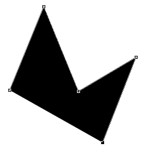
Pour fermer la "boucle", un petit cercle vient accompagner le curseur de votre souris, signe que vous pouvez terminer votre tracé.
Modifier la position des points d'ancrage
Je ne sais pas vous, mais je ne la trouve pas très jolie, moi, mon étoile. Les branches ne sont pas identiques ni symétriques, c'est pourquoi cela ne ressemble pas vraiment à une étoile d'ailleurs.
L'astuce se trouve dans un autre outil. Cet outil ne fait pas vraiment partie de la même famille que la plume même s'ils sont tous deux complémentaires. Il s'agit de l'outil
Sélection directe. Vous le trouverez en faisant un clic droit sur l'outil appelé "sélection de tracé" :
Vous avez également la possibilité d'appuyer sur la touche A.
Une fois votre outil en main, cliquez sur votre étoile ou votre tracé pour ceux qui n'ont pas fait d'étoile. Votre tracé est maintenant en sélection, il ne nous reste plus qu'à déplacer nos différents points d'ancrage. Pour cela, rien de plus facile : on clique d'abord sur le contour du tracé pour que les points d'ancrage apparaissent. Ensuite, on clique (et maintenons ce clic) sur le point d'ancrage de notre choix et on déplace le curseur de notre souris pour emmener le point d'ancrage avec lui.
Après quelques minutes à essayer de régler tout bien comme il faut, j'ai obtenu ce résultat.
Pas forcément parfait, mais satisfaisant quand on compare avec ma première étoile. :-°
Le problème qui se pose avec cette étoile, c'est que les segments sont parfaitement rectilignes. Pourtant, figurez-vous qu'avec la plume, il nous est possible de courber ces segments, il ne s'agira donc plus d'un trait mais bel et bien d'une courbe. Bon, ce n'est pas forcément nécessaire pour notre étoile, mais ça peut être amusant de la modifier pour que la pointe de ses cinq branches finisse par être arrondie ? ^^
Pour modifier la courbe d'un segment, il suffit de maintenir le clic au moment de créer un nouveau point d'ancrage et de déplacer son curseur. La courbe s'effectuera en fonction des mouvements de ce curseur. En résumé :
Je clique sur ma zone de travail : un premier point d'ancrage apparait, jusque là rien de nouveau.
Je clique à nouveau dans ma zone de travail et je maintiens le clic : un deuxième point d'ancrage apparait, donc le tracé (segment) est formé. Rien de nouveau non plus, c'est ce qu'on vient de faire pour former l'étoile.
Enfin, je déplace mon curseur : le tracé se courbe en fonction de mes déplacements avec le curseur de ma souris.
Je crée mes deux premiers points d'ancrage. Je maintiens le clic sur le dernier point d'ancrage créé, c'est-à-dire le point noir.
En déplaçant mon curseur vers la droite, la courbe s'est formée entre le point de départ et la direction prise par le curseur.
De la même manière, la courbe s'est formée dans le sens inverse étant donné que j'ai déplacé mon curseur non pas vers la droite, mais vers la gauche.
Comment faire pour courber des segments déjà créés ? Par exemple, pour mon étoile, les branches sont déjà créées... Je vais devoir tout recommencer en veillant à courber les branches cette fois-ci ?
Si vous avez déjà dessiné quelque chose avec votre outil plume, rassurez-vous, rien n'est fixé. En effet, ce dessin est totalement modulable grâce aux outils faisant partie de la même famille que la plume. Et en l'occurrence, pour modifier la courbe d'un dessin déjà créé, par exemple notre étoile, on va utiliser l'outil
Conversion de point.
L'outil en main, il vous suffit de maintenir le clic sur le point d'ancrage ciblé et ensuite déplacer votre curseur. C'est alors que vous pourrez modifier la courbe des deux segments liés à ce même point d'ancrage. Essayons, voici un schéma présentant deux segments (d1 et d2) reliés par un seul et même point d'ancrage.
Je place donc mon curseur sur le point d'ancrage avec l'outil
Conversion de point en main bien entendu, je clique, je maintiens le clic et enfin, je déplace mon curseur vers la gauche ou vers la droite...
Comme vous pouvez le constater, les deux segments se sont courbés en fonction de la trajectoire et de la distance parcourue par le curseur. D'ailleurs, vous le voyez, le point d'ancrage n'est plus transparent, il est automatiquement devenu noir. Tout cela peut s'expliquer.
En ayant voulu modifier la courbe de nos segments, nous avons converti le point d'ancrage en un point d'inflexion. On appelle point d'inflexion le point qui nous permet justement de courber les segments créés. L'information à retenir ici, c'est qu'un point d'ancrage ne permet pas de courber les segments. Pour cela, il faut le convertir en un point d'inflexion. D'ailleurs, vous pouvez vérifier les exemples précédents, chaque fois qu'on courbait un segment, le point d'ancrage devenait point d'inflexion, que l'on passe par l'outil
Conversion de point ou par la plume directement (car oui, rappelez-vous, on peut courber un segment directement avec la plume, c'est ce que l'on a commencé par faire). ;)
Vous aurez également remarqué l'apparition d'une ligne formée justement à partir de ce point d'inflexion. Cette ligne est appelée ligne directrice. C'est elle qui déterminera la forme finale de la courbe selon la trajectoire et la distance que l'on lui donnera. Si, par exemple, j'avais incliné légèrement cette ligne et si je l'avais agrandie, alors la courbe aurait été modifiée en fonction, toujours, de cette ligne directrice, comme le montre cette image :
En réalité, la courbe joue le rôle de tangente par rapport à la ligne directrice, c'est-à-dire qu'elles se touchent à peine.
Bien entendu, il est techniquement possible de ne modifier qu'une seule courbe parmi les deux. Pour cela, il suffit de maintenir le clic sur l'une des extrémités de la ligne directrice (celle qui va dans le sens de la courbe ciblée) et de modifier, encore une fois, sa trajectoire et sa longueur.
Sur ce schéma, j'ai modifié la trajectoire et la longueur de la partie droite de la ligne directrice, correspondant ainsi à la courbe la plus à droite. Reprenons un exemple pour bien comprendre comme cela fonctionne. Je crée une courbe à l'aide de la plume en y déterminant une ligne directrice adaptée :
Essayons à présent de créer un nouveau point d'ancrage à côté de cette courbe, toujours au-dessus de la ligne directrice...
La nouvelle courbe est apparue entre le nouveau point d'ancrage (qui est en fait un point d'inflexion puisqu'il s'agit d'une courbe) et le point d'inflexion de base, à partir duquel la courbe a été formée.
Reprenons notre exemple et essayons maintenant de cliquer en-dessous de la ligne directrice, comme ceci :
C'est encore et toujours la même chose. Si le résultat est différent du fait que le nouveau point d'inflexion ne se situe pas au même endroit que le point d'inflexion précédemment créé, le principe est inchangé, on peut voir que la nouvelle courbe (celle du bas) est toujours très proche de la ligne directrice mais qu'elle ne la coupe pas.
Comment se fait-il que ton tracé n'aie pas généré de la couleur, comme c'était le cas pour l'étoile ?
J'ai un peu triché. :-° En fait, il y a de la couleur, sauf qu'elle est blanche, elle se confond donc avec l'arrière-plan. Mais rassurez-vous, la couleur est là et c'est d'ailleurs grâce à elle qu'on va réussir à dessiner de belles formes comme, par exemple... Des montages ! :D
Je vais vous proposer de reproduire les montagnes de l'image de South Park ci-dessous en guise d'exercice de pratique.
L’exercice est simple : vous allez télécharger l'image, l'ouvrir sur Photoshop et enfin, vous allez faire comme si vous détouriez les montagnes afin de les reproduire avec la plume. Cela ne devrait pas vous dépayser puisque le principe est le même que celui du lasso : on détoure avec la plume pour recréer la même forme. Ensuite, on n'aura plus qu'à choisir la couleur de remplissage et le tour sera joué.
Il y a un problème avec ton exercice. Les montagnes sont en arrière-plan sur l'image, du coup elles n'apparaissent pas en totalité, elles sont cachées par les sapins et compagnie.
Justement ! Un peu de difficulté ne nous fera pas de mal. Vous allez inventer ce qui ne se voit pas sur l'image pour recréer l'entière forme de la montagne, vous me suivez ? :)
Le principe est simple. Ouvrez l'image suivante sur Photoshop puis prenez votre plume :
Modifiez la couleur de la plume pour une couleur similaire à celle des montagnes. N'hésitez pas à utiliser la pipette, vous irez beaucoup plus vite et obtiendrez le même vert.
Quand ceci est fait, commencez le détourage des montagnes. Vous avez deux solutions pour commencer :
Vous commencez votre détourage à partir de ce qui est visible dans l'image, donc la partie visible de la montagne, puis vous partez ensuite à l'aventure en inventant le reste du dessin pour revenir jusqu'au point de départ. En résumé, on commence ici et on continue vers la droite pour détourer l'ensemble de la montagne, même ce qui n'est pas visible :
Ou alors, on commence directement dans le brouillard, c'est-à-dire dans les parties non-visibles de la montagne, et on reprend les mêmes gestes pour détourer l'ensemble de la montagne.
Ici, j'ai pris le "risque" de commencer tout à gauche, à travers les sapins, pour inventer les parties non accessibles des montagnes.
Quelle que soit la solution adoptée, vous pouvez créer la forme de la montagne, allez-y ! :) N'oubliez pas, quand vous devez courber vos segments, maintenez le clic et déplacez votre curseur pour justement former la courbe :
Si vous en êtes à là, il se peut que vous rencontriez un problème. En effet, en l'état actuel, j'aurais besoin de créer une nouvelle courbe qui passe toujours sur les contours de la montagne pour pouvoir la détourer. Or, la ligne directrice est bien trop grande, et quoi que je fasse, la courbe ne peut pas y passer, elle est forcément en dehors de la montagne.
Bref, là où je veux en venir, c'est qu'il vous suffit simplement de modifier la trajectoire et la longueur de la partie droite de la ligne directrice pour pouvoir moduler à la fois votre courbe. Il vous faudra donc d'abord modifier la position de la ligne, et ensuite recréer la courbe. Plus la ligne est courte, plus votre courbe sera modulable :
Vous devriez obtenir ce résultat, ou du moins un résultat très proche de celui-ci :
Notre montagne est créée ! :D Faites-en de même pour les deux autres montagnes puis le ciel...
Et voilà, nous avons recréé le décor de l'image. Vous pouvez ensuite vous amuser à créer de nouvelles formes pour compléter votre dessin, vous pouvez également ajouter le personnage que vous venez de créer pour voir ce que cela peut donner !
Comment je fais ça, moi ?
Il faut ouvrir le fichier .PSD de votre personnage. Ensuite, le mieux est de mettre tous les calques de votre personnage (pas ceux du fond ou des éventuels autres éléments de votre ZDT, juste ceux du personnage) dans un seul et même groupe. D'ailleurs, si vous êtes organisé, cela est déjà censé être fait. Faites ensuite glisser le groupe dans le document où se trouvent vos montagnes.
Pour cela, il faut maintenir le clic au sein de votre ZDT en prenant soin de vérifier que votre groupe est en sélection dans la fenêtre de calques. Ensuite, dirigez votre curseur vers l'onglet de la ZDT des montagnes : vous emmènerez le groupe (donc le personnage) avec vous. Quand votre curseur se situe bien au-dessus de l'onglet, patientez une à deux secondes et vous remarquerez alors que c'est cette zone de travail qui apparaitra à présent sous vos yeux.
A cet instant, vous maintenez toujours le clic. Déplacez maintenant votre curseur vers la nouvelle ZDT et lâchez le clic : vous aurez déplacé le groupe dans la nouvelle zone de travail. Bien entendu, le personnage est toujours présent au sein de sa ZDT d'origine. Ce que vous avez fait, c'est juste une duplication d'une zone de travail à une autre, chose que nous avions d'ailleurs déjà faite dans le chapitre 3 de la première partie de ce cours. ;)
En ce qui me concerne, je me suis amusé à rajouter une route et un énorme soleil. Bon, ça ne casse pas trois pattes à un canard mais c'est pour l'exemple. :-°
Félicitations, vous savez maintenant manier la plume convenablement, ce qui signifie que vous pouvez créer des images de toute pièce, tout seul, sans l'aide de personne. Je trouve que c'est déjà une très belle avancée, vous pouvez être fier de vous ! :)
Laissez-moi conclure ce chapitre avec la sélection, encore elle.
Depuis le début de ce chapitre, ne vous êtes-vous jamais demandé pourquoi on n'utiliserait pas les formes comme base de sélection ? Par exemple, avec la plume, on peut détourer des éléments comme nous venons tout juste de le faire. On pourrait ainsi utiliser ce détourage pour créer une sélection, ce qui nous vaudrait un gain de temps considérable si le besoin de sélectionner ce que nous avions détouré à la plume se faisait ressentir. En gros, on détoure puis on crée une sélection à partir de ce détourage pour éviter de devoir le refaire avec un autre outil de sélection.
Je vais d'ailleurs vous faire une petite confidence. La majorité du temps, je me suis servi de la plume dans ce cours pour faire mes détourages et mes sélections, même quand on apprenait à utiliser un autre outil de sélection. Ne m'en voulez pas, c'est juste une question de pratique. J'ai l'habitude d'utiliser la plume chaque fois que je le peux et vous verrez, vous-même vous ne pourrez plus vous en passer. ;)
Rassurez-vous, pour faire une sélection avec la plume, il n'y a pas plus simple. :-° Il suffit tout d'abord de détourer l'élément de votre ZDT avec la plume. Ensuite, il faut maintenir la touche Ctrl (Option sur MAC) puis cliquer sur la vignette du calque à détourer pour que la sélection se forme. Cela fonctionne à la fois pour les calques Image et les calques Forme.
Vous venez d'apprendre à utiliser l'un des outils les plus célèbres en termes de possibilité de création. La plume est un incontournable, et il n'est jamais trop tard pour vous entrainer encore et toujours avec. Pour l'heure, ce chapitre marque la fin des chapitres sur les outils vectoriels.
Que serait un logiciel de graphisme sans l'emblématique outil Texte ?
Sur Photoshop, savoir écrire du texte ne suffit pas. C'est bien plus complexe que cela, il s'agit d'une vraie discipline qui demande réflexion et créativité. En fait, c'est à mon sens aussi important que de savoir utiliser les calques ou encore les outils de sélection. Déjà, on en a constamment besoin mais en plus, cet outil nous offre tellement de possibilités diverses et variées que l'on cherche sans cesse à pousser un peu plus et découvrir de nouvelles techniques de création.
Par exemple, on va voir que les styles de calque sont particulièrement efficaces sur du texte, on arrive à faire de belles choses, vous verrez ! Ceci sans vous parler des transformations mais aussi et surtout des déformations envisageables grâce aux options liées au texte ainsi que la construction d'une identité graphique via la création d'un logo textuel ou bien d'un bandeau publicitaire.
Réjouissez-vous, c'est un chapitre "relax" qui vous attend ! :) On va d'abord apprendre à créer du texte, nous allons ensuite le paramétrer puis la partie la plus intéressante fera office de conclusion : nous verrons comment donner du style au texte, en d'autres mots comment l'embellir quoi...
Au fait, j'ai une question. Bon, on est bien censés commencer à partir de zéro ? Alors, je me lance... Savez-vous à quoi ressemble du texte ? :D Du texte, c'est ça :
Salut, je suis du texte !
Heu... tu serais pas en train de me prendre pour un crétin, là ?
Absolument pas, où est-ce que vous allez chercher ça ? :-°
Si vous êtes utilisateur des traitements de texte (Microsoft Word, OOwriter, Wordpad, ...), vous savez qu'à l'ouverture de ces logiciels, on peut directement et facilement écrire du texte, ce qui semble logique finalement puisqu'après tout, c'est à ça qu'ils servent. C'est aussi le cas pour le bloc-note d'ailleurs, dans lequel vous pouvez écrire du texte.
Sur Photoshop, c'est "un peu plus" compliqué. Déjà, on va évidemment utiliser un outil pour écrire du texte. Mais la nouveauté, c'est qu'on va définir une zone dans notre document pour dire au logiciel "hey, je veux écrire du texte d'ici à ici, pas plus !".
Allez, sélectionnons l'outil Texte
et commençons. Le raccourci clavier de l'outil est la touche T.
Je vous invite par ailleurs à ouvrir une nouvelle zone de travail de dimensions 500*500px au moins.
Créer une zone de texte
Bon, vous allez voir que ce n'est pas bien compliqué. Le principe est simple : il va falloir faire comme si vous utilisiez votre outil rectangle de sélection. Alors, il faut cliquer, maintenir le clic et déplacer le curseur de la souris.
Après cela, il ne reste plus qu'à taper du texte, comme je viens de le faire là. ^^
<
Ce que vous ne savez toutefois pas, c'est que j'ai écris un peu plus que ce que vous voyez sur cette image...
Cette partie de texte n'est pas visible car elle n'est pas comprise dans la zone que j'ai créée. Pour le rendre visible, il va nous falloir agrandir la zone de texte en utilisant les poignées (les carrés blancs/transparents). Ainsi, en agrandissant le bas de la zone...
C'est pas plus compliqué que ça. :-° Vous pouvez aussi écrire du texte sans vous imposer de limites avec cette fameuse zone que l'on vient de créer. Pour ça, il suffit simplement de cliquer une fois avec votre souris (et l'outil texte en main, évidemment) puis d'écrire !
Un outil de type vectoriel
Le calque Texte est un calque de type vectoriel. Cela signifie que, sur Photoshop, on peut agrandir le texte autant qu'on le souhaite sans qu'il perde en qualité.
D'ailleurs, si vous créez un calque standard vide (un calque pixelisé, comme on a l'habitude de faire, vous savez...) et que vous utilisez le texte, ce calque standard va automatiquement se transformer en calque texte. Il ne s'agira donc plus de matriciel mais d'un calque vectoriel.
Voilà, c'est à peu près tout. Vous voyez, quand je vous disais que ça allait être un chapitre "relax"... ;)
Savoir écrire du texte ne suffit pas quand on travaille sur un projet, aussi complexe soit-il. D'autant que ce n'est pas ce qu'il y a de plus compliqué, hein. :-°
En fait, il faut surtout savoir comment le paramétrer pour pouvoir l'adapter au projet sur lequel nous sommes en train de travailler. On va donc apprendre à formater le texte (comme on le ferait avec le CSS), autrement dit nous verrons comment modifier son apparence à travers les différentes options qui nous sont proposées.
Vous allez voir, il y a pas mal de trucs que vous allez découvrir et qui, je l'espère, vous plairont. :)
Les options de texte
Nous retrouverons les options liées à l'outil texte dans la barre d'options habituelle. Simplement, cette barre d'options n'est en fait qu'un résumé de toutes les options véritablement existantes pour le texte. En fait, je dirais ce sont les options "principales" et élémentaires pour paramétrer du texte. Jetons donc un œil sur cette barre.
Orientation du texte
La première option, que vous trouverez la plus à gauche sur l'image ci-dessus, permet de modifier l'orientation de votre texte. Soit le texte est écrit à l'horizontale, soit il est écrit à la verticale.
Cette option est suivie par l'une des plus importantes : le choix de la police d'écriture.
Les polices d'écriture
Soit je suis fou, soit j'ai bien lu qu'il y avait une "police" pour les écritures... o_O
C'est presque ça, oui ! :lol: Pour faire simple, une police d'écriture, que l'on peut aussi appeler "police de caractère", est la forme même que prendront les lettres de l'alphabet que vous taperez avec votre clavier d'ordinateur. Chaque police a des propriétés différentes, en voici quelques exemples :
Ce texte est écrit avec la police d'écriture arial.
Ce texte est écrit avec la police d'écriture times.
Ce texte est écrit avec la police d'écriture courrier.
Ce texte est écrit avec la police d'écriture impact.
Ce texte est écrit avec la police d'écriture geneva.
On remarque bien que l'aspect global de chacun de ces textes est différent d'une police à une autre. C'est là la force des polices. Parce que bon, pour ces exemples, j'ai utilisé des polices connues et reconnues, des polices que l'on retrouve très souvent sur les sites web que l'on visite. D'ailleurs, je les ai prises directement sur le Site du Zéro, ce sont celles proposées dans le "zCode". ;)
Rien ne nous empêche d'en essayer d'autres. Vous savez, des polices, ce n'est pas ce qui manque ! Il en existe des milliers et des milliers, je vous propose un petit échantillon de quelques polices toutes différentes les unes des autres. Vous allez voir qu'elles sont loin d'avoir les mêmes propriétés :
Vous voyez, je trouve ça fascinant personnellement, on a vraiment le choix et je trouve ça vraiment génial, ça laisse beaucoup de possibilités sur le plan création et imagination.
Wow ! Moi aussi, je veux télécharger plein de polices d'écriture ! :waw:
Normalement, vous devriez déjà avoir quelques polices d'écriture qui sont installées sur votre ordinateur. Vous avez néanmoins la possibilité d'en télécharger d'autres sur des sites connus comme par exemple DAFONT.
Vous verrez que la majorité de ces polices sont libres et gratuites. Un chapitre additionnel sera consacré aux polices, en attendant, je vous invite à vous documenter pour apprendre à installer une police d'écriture. Cela n'a rien de sorcier, rassurez-vous. ;)
Attributs de caractère
Encore un terme étrange, je vous l'accorde. :-° Pourtant, je suis sûr que vous savez pour la plupart de quoi il s'agit. Que seraient en effet du texte sans les fameux attributs que l'on connait tous :
Regular (normal) : c'est l'attribut par défaut, la police ne subit aucune modification.
Bold (gras) : permet de renforcer l'épaisseur des lettres.
Citation
Cette phrase a été écrite normalement. Celle-ci est écrite en gras.
Italic (italique) : permet d'incliner les lettres sur la droite.
Citation
Cette phrase a été écrite normalement. Celle-ci est écrite en italique.
Bold Italic : permet de renforcer l'épaisseur des lettres et de les incliner.
Citation
Cette phrase a été écrite normalement. Celle-ci est écrite en italique.
Si vous faites partie de ceux qui ont pris comme modèle mon espace de travail, vous devriez avoir de disponible la palette flottante "Caractère/Paragraphe". Si ce n'est pas le cas, cliquez sur Fenêtre > Caractère.
On retrouve toutes les options de la barre d'options dans cette palette dédiée aux (polices de) caractères. Pour l'heure, restons-en à cette petite ligne qui présente tous les différents attributs de caractère et donc, ceux qui ne figurent pas dans la barre d'options :
Bon, les deux premiers, on les connait : ils permettent respectivement de transformer le texte en gras et en italique.
L'icône
permet de transformer les lettres en lettres capitales.
Citation : Tout en capitales
Ces lettres sont écrites normalement. CELLES-CI SONT ÉCRITES EN LETTRES CAPITALES.
Cette icône
permet, quant à elle, de transformer vos lettres en petites lettres capitales. Je vous laisse essayer par vous-même à partir de maintenant, on continue notre petit tour d'horizon. ;)
En cliquant sur cette icône
, vous transformerez vos lettres en lettres exposantes, à l'image du petit 2 ici présent : a².
L'icône suivante
permet à l'inverse de mettre vos lettres en indice.
Les deux dernières icônes permettent, dans l'ordre d'apparition sur l'image ci-dessous, de souligner le texte et de le barrer.
Citation : Souligner
Cette phrase a été écrite normalement. Celle-ci est maintenant soulignée.
Citation : Barrer
Cette phrase a été écrite normalement. Celle-ci est maintenant barrée.
Voilà pour les attributs. :-°
Corps de police
On dit "corps de police" pour désigner la taille de la police d'écriture et donc, par extension, les dimensions de nos lettres. L'unité de mesure est le point (et non le pixel) que l'on abrège pt.
Évidemment, plus la valeur de point est importante, plus la police d'écriture gagnera en hauteur et largeur. Voici un exemple, cette phrase a été écrite en 12pt :
Lissage de caractère
Prochaine étape : déterminer le lissage de la police de caractère. Une police non lissée ressemble à ceci :
La police d'écriture prend cette apparence crénelée quand le paramètre de lissage est défini sur "sans". Pour supprimer cet effet crénelé, il faut modifier ce paramètre et en choisir un parmi les quatre autres proposés. Par exemple, en choisissant le paramètre "nette", votre police apparaitra comme plus nette (oui, c'est logique) :
Une fois n'est pas coutume, essayons une nouvelle méthode de lissage, mettons "Forte" par exemple :
Alignement du texte
On entre dans une catégorie légèrement différente puisqu'il ne s'agit plus de modifier l'apparence du texte mais plutôt son positionnement dans votre zone de travail ou dans la zone que vous aurez créée avec l'outil Texte.
L'icône de gauche (celle qui est sélectionnée) permet de décaler l'ensemble de votre texte sur la gauche de votre zone, comme le montre l'image ci-dessous.
En ce qui concerne l'image du milieu, bah... elle permet de centrer l'ensemble du texte.
Et enfin, je vous laisse deviner le mode d'action de l'icône de droite. ^^
Couleur du texte
Cette option permet, comme son nom le laisse présager, de définir une couleur au texte. Vous savez faire, on ne va pas s'attarder là-dessus. Notez simplement que si vous ajoutez un style de calque lié à la couleur (dégradé, motif ou couleur), celui-ci remplacera obligatoirement la couleur d'origine du calque.
Déformer du texte
Cette option est particulièrement intéressante (et amusante) puisqu'elle sert à modifier la forme des nos textes.
On avait déjà la police, pour ça...
Non, la police modifie l'apparence des lettres. Avec cette option, on va modifier l'apparence générale du texte en le déformant dans tous les sens. En cliquant sur la vignette de l'option
, vous ouvrirez une nouvelle fenêtre :
En faisant dérouler la liste, vous ferez apparaitre toutes les déformations possibles sur vos textes :
Autant dire que ce n'est pas ce qui manque ! Je vous invite à essayer la déformation appelée "Renflement" pour commencer. Il vous faudra d'abord taper du texte (évidemment) puis paramétrer la déformation.
Il y a trois paramètres à chaque fois, leurs modes d'action est facile à deviner. En ce qui concerne l'inflexion, plus la valeur est grande, plus la déformation (et donc le renflement ici) est important, et vice-versa.
Pour le reste...
Je ne vais pas passer en revue tous les paramètres disponibles dans les palettes flottantes "Caractère" et "Paragraphe". Ce serait trop long et pas forcément très intéressant, d'autant qu'on devine assez facilement à quoi ils servent. Petite astuce : placez votre curseur au-dessus de l'icône du paramètre et ne bougez plus pour laisser apparaitre une courte description du paramètre en question.
Nous avons appris à créer du texte, à le formater et même à le déformer. Que diriez-vous maintenant de lui donner un petit coup de "peps" ? Faut dire que jusqu'ici, nos textes ont toujours été très pauvres en couleurs, ils n'ont absolument aucun style, en tout cas graphiquement parlant.
Cela fera donc l'objet de ce cours, nous allons étudier les quelques moyens mis à notre disposition pour "styliser" vos textes. Le vrai problème, c'est qu'il existe tellement de techniques qu'on ne pourra pas toutes les passer en revue. On va toutefois pouvoir profiter de quelques fonctionnalités que l'on a étudiées dans ce cours, et principalement celles dont on a parlé le temps d'un chapitre qui leur était entièrement consacré : les styles de calque ! :D
Ils sont la technique idéale pour donner de la couleur et une texture particulière aux textes. Ce n'est pas forcément le moyen le plus efficace, mais il n'empêche qu'on peut obtenir des résultats vraiment intéressants, de quoi rendre nos textes sophistiqués plus attractifs.
Première étape : le formatage
Avant d'utiliser les styles de calque, je vous conseille d'utiliser les options pour donner la forme désirée à vos textes. Généralement, je procède dans cet ordre :
Rédaction du texte : on écrit le texte que l'on sera amené à formater puis styliser. Pour le moment, on ne touche pas aux options : on ne fait qu'écrire le texte avec la dernière police d'écriture utilisée.
Choix de la police de caractère : on choisit ensuite la police de caractère désirée. Pour cet exemple, je suis passé de "Verdana" à "Century Gothic". Ce n'est pas une police téléchargée, vous devriez l'avoir sur votre ordinateur. ;)
Modification de la taille de la police : je passe de 72pt à 140pt.
Et pour finir, on ouvre la palette "caractère" pour paramétrer encore un peu plus le texte si cela nous semble nécessaire : gras, italique, capitales, ... En ce qui me concerne, j'ai d'abord choisi l'attribut de caractère appelé "bold" pour rendre mon texte plus gras, puis j'ai accentué encore un peu plus l'épaisseur de mes lettres en cliquant, toujours dans la fenêtre de caractères, sur le bouton "Faux gras". Enfin, j'écarte un peu chaque lettre de mon texte (l'option s'appelle "Définir l'approche des caractères sélectionnés") pour le mettre à 25.
Les styles de calque
Une fois votre texte formaté, on peut passer à l'étape de stylisation. On va donc ajouter de la couleur au texte, lui donner une certaine texture, etc. Et pour cela, je vous le disais, on va utiliser les options de fusion (styles de calque). Nous allons procéder en trois parties : d'abord les couleurs, ensuite la texture et enfin, les petits détails qui donnent ce petit "plus" aux textes.
Les couleurs
Nous avons plusieurs possibilités pour coloriser notre texte de manière on ne peut plus simple. On utilisera alors le style "Incrustation couleur" pour appliquer une couleur unique sur le texte, rien de plus basique. Dans ces cas là, le mieux est quand même d'utiliser l'option "couleur" que l'on retrouve dans la barre d'options. Allez, juste un petit aperçu pour le plaisir des yeux. J'ai seulement sélectionné les lettres "Life" pour que la couleur ne soit appliquée que sur cette partie du texte, le "My" reste donc noir :
D'ailleurs, j'aurais très bien pu m'amuser à ne coloriser qu'une lettre sur deux. Regardez :
On peut aussi s'amuser à mettre deux couleurs différentes, sans noir :
Enfin bref, niveau couleurs, on peut imaginer à peu près tout et n'importe quoi. Il suffit d'être créatif. D'ailleurs, je ne l'ai pas dit tout à l'heure, mais rien ne nous empêche ensuite de modifier les options du texte. Si on veut changer les attributs de certaines lettres, leur police ou encore leur taille, n'hésitez pas. Par exemple, je vais réduire la taille du mot "My" pour donner un style globalement différent au texte et mettre en avant le mot "Life" :
Pour mettre encore un peu plus en avant le mot life, il m'est aussi envisageable de mettre en majuscule ses lettres...
... voire carrément de modifier leur police d'écriture !
Vous êtes libre de faire absolument tout ce que vous voulez, tout réside dans l'imagination et la créativité dont vous ferez preuve. ^^
On reste dans les couleurs et allons désormais profiter de ce que j'ai tendance à préférer utiliser pour mes projets : les dégradés de couleurs. Ils sont disponibles quand vous activez le style appelé logiquement "Incrustation dégradé". Cela n'a plus de secret pour vous, je vous laisse le plaisir de paramétrer votre dégradé à votre guise. Pensez simplement à décocher le style "Couleur" avant si ce n'est pas déjà fait. ^^
Voici plusieurs essais avec des dégradés déjà existants :
Avec un peu d'imagination et en utilisant les différents paramètres mis à disposition (type de dégradé, angle, échelle, ...), on peut réussir à obtenir de bons résultats hein. :)
J'aimerais mettre un dégradé de couleurs uniquement sur le mot "My". Mais problème : quand j'active le style dégradé, ce dernier s'applique sur tout mon texte... :(
En activant les styles de calque, vous demandez à ce que le style soit appliqué sur l'ensemble du calque et non sur une seule de ses parties. Du coup, pour choisir précisément sur quelle partie notre dégradé va s'appliquer, on a deux techniques :
La première n'est pas la plus pratique. Il suffirait en fait de créer deux calques Texte différents : le premier pour "My", le deuxième pour "Life", l'idée étant de les mettre côté à côté ensuite dans la zone de travail pour faire croire qu'il n'existe qu'un seul et même texte.
La deuxième, la plus logique, est d'utiliser un calque de remplissage, celui appelé logiquement "dégradé".
On va donc opter pour la deuxième solution. Il faudra tout d'abord écrire le texte "MyLife" sur un seul et même calque Texte, comme on fait depuis le début. On va ensuite utiliser un outil de sélection pour créer une sélection autour du texte "My".
Pour faire cette sélection, j'ai utilisé la baguette magique et ai profité de l'option Ajouter à la sélection
pour sélectionner simultanément la lettre M et la lettre Y, comme on l'a déjà appris ensemble.
Pour créer le dégradé couleur, on va créer un calque de remplissage. On clique donc sur la petite icône Créer un calque de remplissage ou de réglage
située en bas de la fenêtre de calques pour faire dérouler la liste puis on clique sur "Dégradé...". Une nouvelle petite fenêtre fait son apparition, c'est celle qui vous permettra de paramétrer votre dégradé, elle est sensiblement la même que celle du style de calque "dégradé", vous n'avez donc pas besoin de moi.
Oui, je sais. Ça pique, et c'est fait exprès ! >_
La texture
Une fois votre texte colorisé, vous pouvez ajouter un motif à votre texte afin de lui appliquer une nouvelle texture. Pour cela, il faut bien entendu cocher le style de calque "motif". Simplement, en laissant le dégradé d'activé, le motif ne sera pas visible (il prend le dessus sur le motif). Il faudra alors réduire l'opacité du dégradé ou utiliser un mode de fusion (toujours pour le dégradé) afin qu'un jeu de transparence s'effectue. Personnellement, j'ai obtenu ces différents résultats :
Je n'ai jamais été très fanatique des motifs, non pas que je ne les trouve pas intéressants, mais je n'en ai que rarement l'utilité. Une chose est certaine, on peut obtenir des résultats bien meilleurs que ceux-ci, mais c'est pas grave, c'est pour l'exemple. Si cela vous intéresse, vous pouvez télécharger des motifs prêts à l'emploi sur internet, exactement comme vous le feriez pour télécharger des brosses pour le pinceau.
Pour donner une nouvelle texture à vos textes, vous pouvez d'autre part utiliser le biseautage ce qui aura pour effet de leur donner du relief. Un peu comme le logo de Google par exemple :
Voici un exemple de biseautages paramétrés différemment. Je suis parti de ce texte coloré d'un dégradé bleu :
Pour finalement obtenir les résultats suivants, sachant que je n'ai fait qu'ajouter deux biseautages différents, j'en ai aussi profité pour augmenter un peu la taille de la police :
Vous pouvez même ajouter une texture sur le biseautage, ne laissez pas passer cette occasion et amusez-vous à faire des essais. :)
C'est tout ?
Vous connaissez maintenant quelques techniques permettant de personnaliser vos textes et, même si on pourrait s'arrêter là et estimer les résultats obtenus satisfaisants, je pense que vous serez d'accord avec moi sur le fait que l'on peut mieux faire, l'idée étant d'optimiser encore un peu plus nos textes pour leur donner un style encore un peu plus particulier et personnalisé.
Des techniques, il en existe des centaines, des milliers même, et clairement je ne pourrai pas toutes vous les donner là non plus. Pas que je ne veuille pas, mais surtout parce que je ne les connais pas toutes (loin de là !) et parce que je n'aurais pas assez d'un tutoriel (combien de fois je vous l'aurai sortie, celle-là ?).
Je vais donc vous proposer une ou deux techniques que j'ai moi-même développées. Évidemment, ce sont des techniques que je n'ai pas inventé : je les ai simplement découvertes tout seul en bidouillant un peu. C'est là-dessus que j'aimerais vous sensibiliser ! Cela n'a rien d'exceptionnel en soi, mais c'est tellement plus gratifiant et plus amusant de découvrir soi-même des petites combinaisons qui permettent d'obtenir de jolis résultats, que je vous invite à faire des essais pour faire de vos textes de jolis textes. :)
Technique n°1 : des textes en 3D
Oui, vous avez bien entendu, nous allons faire un peu de 3D !
Tu veux dire qu'on va faire de la modélisation ?
Pour ceux qui ne sauraient pas ce qu'est la modélisation, il s'agit d'une discipline propre au domaine de la 3D, je ne vais pas revenir dessus mais voilà, au moins vous savez que l'on "modélise" pour faire de la 3D.
Nous, nous n'allons absolument pas "modéliser". Nous allons donner une apparence 3D à notre texte, il ne s'agira donc pas vraiment de 3D, et pour cela, nous allons utiliser la duplication de texte. Commencez par écrire quelque chose et donnez lui un petit dégradé. Quand je vous disais que les dégradés, c'était mon dada (si, si, souvenez-vous, je vous l'ai dit dans les débuts du cours ^^ ), je ne vous mentais pas !
Dupliquez ensuite le texte et retirez-lui le style de calque en faisant un clic droit sur son calque (dans la fenêtre de calques) et en cliquant sur "Effacer le style de calque". Faites en sorte de changer la couleur de ce texte, choisissez une couleur identique à la couleur du premier texte, essayez simplement de lui mettre une couleur un peu plus foncée, vous comprendrez pourquoi plus tard. Enfin, placez-le en-dessous du calque stylisé (c'est donc ce dernier qui doit être visible sur la ZDT) et gardez-le sélectionné dans votre fenêtre de calques.
Quand c'est fait, il ne nous reste plus qu'à faire la fameuse duplication massive et le tour sera joué. Le principe est simple : on va appuyer sur la touche Ctrl (Option) et la maintenir, et ensuite appuyer successivement sur les touches directionnelles gauche et bas. Il se passera que chaque fois que vous appuierez sur l'une des touches directionnelles, un nouveau calque apparaitra et ce sera la duplication parfaite du calque sélectionné. La nouveauté, c'est que le calque sera dupliqué en fonction de la direction que vous lui donnerez avec les flèches. Si vous dupliquez avec la flèche de gauche, alors le calque sera dupliqué 1 pixel à gauche du calque dupliqué. Voici la manœuvre à effectuer avec votre clavier :
Sur Windows : CTRL (maintenir) + flèche de gauche puis flèche du bas plus flèche de gauche puis flèche du bas... Sur Mac : Option (maintenir) + flèche de gauche puis flèche du bas plus flèche de gauche puis flèche du bas...
Faites cette opération une fois : deux nouveaux calques apparaitront dans votre fenêtre de calques (pour un total de 4 calques en tout, sans compter l'arrière-plan) et surtout, deux nouveaux éléments apparaitront dans la zone de travail :
Continuez jusqu'à obtenir un texte en 3D. :)
Vous auriez également pu n'utiliser qu'une seule flèche directionnelle, par exemple la flèche du bas uniquement !
Ou encore la flèche de droite. :)
Au fait, n'hésitez pas à modifier le premier calque pour personnaliser encore un peu plus votre texte. On aurait pu, par exemple, donner un contour intérieur à ce calque :
Vous voyez, il suffit d'un peu d'imagination et on peut améliorer distinctement nos textes. :)
Technique n°2 : styles de calque
Retrouvons nos bons vieux styles de calque. Avec eux, croyez-moi, on peut styliser nos textes de mille et une façons et on ne va pas s'en priver. Que puis-je vous proposer en guise d'exemple... ?
Bah, on les a déjà utilisés, les styles de calque !
Ah oui, ça c'est bien vrai. Mais en même temps, on n'a pas vraiment tout fait avec. Je veux dire... moi, je vous ai montré l'essentiel (et encore), à vous maintenant d'essayer de faire des combinaisons qui peuvent améliorer un peu les textes et leur donner un sens. C'est de cette manière, d'ailleurs, que vous réussirez à créer un logo textuel, vous verrez cela dans le prochain chapitre.
Moi, par exemple, j'ai pensé qu'on pouvait donner un peu plus d'importance au contour d'un texte grâce à l'ombre.
Qu'est-ce que tu racontes ? :lol:
Créons du texte sur un fond blanc. C'est-à-dire que le calque d'arrière-plan doit être de couleur blanche et que, évidemment, notre texte doit être de couleur relativement foncée pour qu'on puisse bien le distinguer du fond. Mettons... du vert ! On change la police (Century Gothic) et la taille et voilà sur quoi nous travaillerons. :)
Allons faire un tour du côté des styles de calque maintenant. Ajoutons, par exemple, un petit dégradé léger pour donner un peu de style au calque. Évidemment, ce dégradé sera basé sur la couleur initialement choisie, le vert. Ajoutons ensuite un contour extérieur blanc de 3 pixels. Logiquement, vous ne devriez même pas l'apercevoir puisque que le fond est blanc lui aussi, ils sont censés se confondre.
Pour justement voir ce contour, on va ajouter une petite ombre portée afin de le faire ressortir. Voyez plutôt. :)
Voilà ! Ce n'est pas prodigieux, ça n'a rien de bien exceptionnel comme je vous le disais, et pourtant, ça fait son petit effet je trouve. :) Après, on peut s'amuser à ajouter une ombre interne par exemple pour faire ressortir le contour blanc du fond ET du texte :
Allez, à vous de jouer maintenant. :)
Félicitations, vous êtes maintenant parés pour réaliser votre premier logo sur Photoshop ! :D
Le prochain chapitre ne sera donc pas un chapitre comme les autres. Vous l'aurez compris, un TP (étayé d'une petite partie reprenant les différents points de création d'un logo) vous attend dans le prochain chapitre.
Vous voici arrivé à votre deuxième TP. Je vous rappelle rapidement en quoi consiste ces chapitres particuliers et tant attendus.
Ici, vous n'apprendrez pas de nouvelles techniques de création. Tout ce qui vous sera demandé, c'est de mettre en pratique toutes les connaissances acquises depuis le début du cours pour répondre à un sujet qui vous sera donné.
En l'occurrence, ce TP a été étudié pour que vous puissiez surtout utiliser les outils de création que nous avons vu dans cette troisième partie, mais rien ne vous empêchera d'utiliser accessoirement les autres fonctionnalités de Photoshop pour compléter votre réalisation. Après tout, vous le savez maintenant, c'est vous qui gérez votre temps et votre zone de travail pendant les TP ! :)
Le thème de ce TP portera sur la réalisation d'une affiche publicitaire. Il vous sera ainsi demandé de répondre à un sujet précis, avec des contraintes et des directives qui seront à prendre en considération. L'objectif, vous le savez, est que vous tentiez de travailler absolument seul(e), pour obtenir un résultat final répondant audit sujet.
De quoi allez-vous avoir besoin pour réaliser votre affiche ? Voici les quelques points sur lesquels il va falloir réfléchir avant de commencer. :)
Matriciel ou vectoriel ?
Matriciel
Si votre choix se porte pour le matriciel, vous n'avez donc aucune restriction en termes de création. N'oubliez pas, toutefois, l'aspect technique de votre affiche. De toute évidence, une affiche est destinée à imprimée et, souvent, sous un grand format. Évitez les ombres et compagnie, travaillez sur un document de grande taille en prenant soin de modifier la résolution de votre document (300 ppp/dpi), etc.
Vectoriel
Si vous optez pour le vectoriel (ce que je peux vous conseiller), alors préparez-vous à n'utiliser que la plume ou presque. Je vous rappelle que le texte est vectoriel, donc aucune crainte à ce niveau. Faites preuve de créativité et d'imagination : vous êtes plus restreints en termes de possibilités, mais cela ne doit pas vous empêcher de faire ce que vous voulez.
Si vous avez encore un peu de mal à comprendre pourquoi nous sommes restreints quand on bosse en vectoriel, dites-vous simplement que vous ne devez absolument pas trouver de calque Image (les calques standards (pixelisés), ceux que l'on utilise pour le matriciel le plus souvent) dans votre fenêtre de calques. On peut toutefois y trouver des calques forme, des tracés et éventuellement des calques de remplissage, etc. Mais pas de calque Image !
En ce qui me concerne, j'ai choisi d'orienter la correction de ce tutoriel vers une réalisation vectorielle.
On prend une feuille, un crayon, et on s'y met.
Sortez votre bon vieux crayon à papier et placez une feuille face à vous. (Pas la zone de travail, pardi ! Une vraie feuille)
Je crains le pire... :(
Aucune raison, vous avez ma parole. ;) Nous allons établir sur papier ce que nous allons éventuellement être amenés à réaliser sur notre ordinateur. Cela commence donc par les éléments qui paraitront dans notre zone de travail et qui constituerons notre affiche. On va donc déterminer, au choix :
Un nom : le nom de la marque, du produit, de la société, ... dont on fera la promotion.
Un logo : n'hésitez pas à consulter mon tutoriel pour apprendre à concevoir votre propre logo sur Photoshop.
Un slogan : un slogan peut s'avérer très efficace sur une affiche publicitaire, car c'est un moyen de faire passer un message différemment que par l'image. On utilisera par exemple un jeu de mots évocateur, comme le font bon nombre de marques aujourd'hui encore.
Des dessins, des formes particulières : des frites ? Un piano ? Un hexagone ? Une étoile ? Un $ ? ... Notez tout ce qui peut représenter votre produit, votre marque...
Retenez l'essentiel : un piano, c'est trop grand ? On ne retient donc que les touches noires et blanches. Reproduire la silhouette de la France, c'est trop compliqué ? Ce serait trop complexe à détailler ? Faites un hexagone simple qui rappelle la France, ça suffira sans doute à comprendre, surtout si les couleurs sont le bleu, le blanc et le rouge. Au final, faites simple et allez à l'essentiel, ça vous réussira. ;)
C'est bien tout ça, mais je ne vois pas l'intérêt de faire ça sur papier ?
Avant de nous lancer dans la réalisation d'une affiche publicitaire, il vaut mieux créer une esquisse sur papier. On cogite, on gribouille, on essaie... Cela vous permettra de recenser toutes vos idées sur papier pour, peut-être, obtenir un résultat proche de celui que vous voudrez voir sur votre écran. Vous n'avez pas forcément besoin d'être un pro en dessin pour cela, il s'agit en effet d'une esquisse sur laquelle vous vous baserez pour la reproduire sur ordinateur, avec tous les outils que Photoshop vous mettra à disposition.
Une fois votre esquisse terminée, n'hésitez pas à la numériser (la scanner) et à l'ouvrir sur Photoshop pour la reproduire directement par-dessus votre dessin. Si vous n'avez pas de scanner, ce n'est pas bien grave, gardez quand même votre dessin comme modèle.
Passons aux choses sérieuses et lançons-nous enfin dans la réalisation de votre affiche publicitaire.
Avant tout, il me faut m'assurer que vous savez dans quoi vous vous lancez. Qu'est-ce qu'une affiche publicitaire ?
Une affiche publicitaire, c'est ce que vous pouvez voir partout autour de vous dans la rue. Ce sont ces images qui présentent, sous différentes formes, un produit, une marque, ou encore un concept.
Je n'ai pas la prétention de pouvoir vous donner des cours de marketing ou de publicité. Je peux toutefois vous assurer qu'une publicité réussie, c'est une publicité qui a fait parler d'elle, ou plus simplement qui a marqué les esprits et a laissé des traces. Par exemple, quelle est la couleur dominante de la célèbre boisson Coca-Cola ? Évidemment, on le sait tous, c'est le rouge. Comment le savez-vous ? Mon petit doigt me dit que la publicité financée par Coca-Cola y est pour quelque chose. ;)
Notre objectif, en ce qui nous concerne, consistera à créer une affiche publicitaire tournée autour d'un évènement annuel. Il s'agira d'un festival cinématographique dédié aux réalisateurs amateurs, qui récompensera le court-métrage le plus réussi. Les consignes porteront davantage sur la mise en avant d'informations pratiques sur l'évènement, comme par exemple la date de commencement, ou encore les délais de création avant l'envoi des court-métrages au jury du festival. Nous reviendrons sur ces contraintes dans quelques instants.
Ce que nous allons d'abord devoir faire, c'est élaborer une charte graphique pour notre affiche. Quelles couleurs allons-nous choisir ? Quel style graphique allons-nous adopter ? Voilà comment on va donc procéder : je vais vous lister, dans l'ordre, les étapes nécessaires à la réalisation de votre affiche que vous suivez à la lettre si vous le voulez bien. Vous devriez réussir à obtenir quelque chose de potentiellement cohérent et donc intéressant. :)
Commencez par vous poser les bonnes questions au sujet de votre affiche.
Elle représente qui/quoi ? Produit, marque, projet internet, société, ... Ici, il représente un festival, un évènement.
A quel public est-elle destinée ? : Enfants, musiciens, écologistes, danseurs, ... Ici, les cinéphiles en particulier sont ciblés.
A quel support est-elle destinée ? : Autrement dit, vectoriel ou matriciel ? RVB ou CMJN ? Ici, il s'agit d'une affiche, elle sera imprimée sur feuille grand format. On optera pour du vectoriel et pour du CMJN, qui est davantage adapté à l'impression.
Quel est le thème en vigueur ? Que doit représenter votre affiche ? Ici, en l'occurrence, le sujet portera sur le cinéma et, pour être plus précis, sur un évènement cinématographique.
Si vous avez décidé de créer une affiche sur un thème différent, cela vous concerne également : faites une liste des éléments (objets, symboles...) qui peuvent apparaitre sur l'affiche. Même les plus absurdes, faites-le. C'est assez embêtant, je vous l'accorde, mais cela peut vous servir. Voici quelques exemples de thèmes accompagnés d'idées :
Musique : notes, vinyles, enceintes, instrument(s), micro...
Creusez-vous la tête, trouvez un maximum d'idées !
Faites un tri, et essayez maintenant de crayonner les idées qui vous semblent les plus intéressantes pour apparaitre sur votre affiche. Dessinez également celles qui vous semblent les plus réalisables sur Photoshop. Rappelez-vous que vous n'êtes pas obligés de passer des heures sur votre dessin, il s'agit d'un modèle plus ou moins approximatif que vous reproduirez sur votre logiciel. Un dessin apparemment mal fait peut aussi être un dessin particulier et remarquable. Un dessin sans détails peut aussi avoir un sens et être joli. N'hésitez pas à caricaturer ledit objet, c'est encore un autre moyen de le personnaliser et de lui donner un peu de votre emprunte à vous. Croyez-moi, cela peut donner du charme à votre affiche alors ne vous découragez pas pour si peu.
Bon, évidemment, restez réaliste et ne pondez pas un truc immonde non plus. ^^
Il est très rare de voir une affiche sans texte, puisqu'une affiche sert surtout à communiquer et que les textes sont particulièrement efficaces. A ce titre, essayez de choisir une ou deux polices d'écriture que vous réutilisez sur l'ensemble de votre affiche pour conserver une certaine homogénéité dans votre travail.
Pour finir, définissez un ensemble de couleurs que vous utilisez pour concevoir votre affiche. N'hésitez pas à noter quelque part les codes hexadécimaux pour les avoir sous la main à chaque fois.
Ces 6 étapes sont celles sur lesquelles je me base plus ou moins fidèlement pour réaliser des affiches. Bien entendu, à chacun sa méthode, à chacun ses étapes.
Le sujet
Voici les contraintes liées au sujet. Les informations suivantes devront apparaitre sur votre affiche, avec plus ou moins de visibilité à chaque fois.
Message à faire passer : « Les Z'HEROS présentent la 11e édition du FESTIVAL DU COURT-MÉTRAGE AMATEUR»
Délai d'envoi : « Inscrivez votre film du 1er novembre au 15 janvier sur www.siteduzero.com »
Date de l'évènement : Du 18 au 30 janvier 2013
Pour cette 11e édition, l'organisateur souhaite mettre l'emphase sur la sobriété et la créativité. N'en rajoutez pas trop, faites passer un message clair et n'oubliez pas qu'un ou plusieurs dessins peuvent jouer un rôle communicatif énorme. Évidemment, n’ajoutez pas de textes supplémentaires, ce n'est pas ce qui vous est demandé. Contentez-vous de créer, c'est tout. :)
Allez, on y va, c'est maintenant l'heure de se mettre au travail ! Faites-moi une belle affiche !
On passe désormais à la perpétuelle correction. :)
Voilà comme nous allons faire. Je vais partir de rien, c'est-à-dire d'une zone de travail vierge, que je compléterai au fur et à mesure que j'expliquerai les démarches à suivre pour concevoir l'affiche du festival. A chaque nouvelle démarche un nouveau titre, je prends donc soin de structurer mes explications pour plus de clarté.
Création de la zone de travail
Bien évidemment, on ne crée pas de zone de travail « au pif ». Il va falloir la paramétrer afin de s'assurer qu'elle soit utilisable après création, notamment pour l'impression.
Ouvrez la fenêtre de création d'une nouvelle zone de travail. Nous créerons notre affiche au format A2, qui équivaut à 4 fois notre traditionnelle feuille A4. Voici les dimensions correspondantes :
42*59cm
4963*7017px
On définira une résolution à 300 pixels/pouce, changerons le mode en "Couleurs CMJN" à "8-bits" (ce qui devrait déjà être le cas). Pour le reste, on ne touche plus à rien ! :)
Le fond
En définissant un fond à notre zone de travail, on pose l'essentiel du décor en termes de couleur. Il s'agira de la couleur dominante de notre affiche, mais bien entendu rien n'empêche de mettre en avant d'autres couleurs. Mais ça, on y viendra après.
Pour le fond, j'ai choisi d'utiliser une couleur claire. A mon sens, et cela n'engage que moi, la clarté rime avec la sobriété. J'ai donc opté pour un beige tendance dont voici le code hexadécimal : #F2F2D9
Pour donner un peu de vie à ce fond, ou du moins lui donner un peu plus de style graphique, on va créer un point de lumière au centre de la zone de travail à l'aide du pinceau. Pour créer un point de lumière, il nous faudra utiliser une couleur plus claire que celle du fond. En l'occurrence, j'ai choisi la couleur blanc, tout simplement : #FFFFFF
Pour que le point ne soit pas net, il va falloir lui retirer sa dureté, c'est-à-dire la mettre à 0%. Pour cela, il faut faire un clic droit sur la zone de travail et faire varier la jauge où il est indiqué qu'il s'agit de la dureté. On va également en profiter pour modifier l'épaisseur du pinceau. De toute évidence, il va falloir grossir son diamètre pour que le point soit suffisamment visible et se répande bien sur l'ensemble de la zone de travail. Comme nous travaillons sur une grande dimension, il faudra indiqué 2500px à l'épaisseur du pinceau.
Enfin, on créera un nouveau calque vide pour que le point lumineux ait son propre calque. Si nous ne créons pas de calque ici, le point lumineux fait avec le pinceau se trouvera dans le calque d'arrière-plan : il ne sera plus possible de le modifier seul.
Allez-y, cliquez au milieu de votre zone de travail. Le résultat, bien que léger, devrait être suffisamment visible à l’œil nu :
Hey mais, ce n'est plus vectoriel, puisqu'on utilise le pinceau !
C'est une bonne remarque. En fait, techniquement, il est possible de réaliser cet effet en vectoriel. C'est juste plus complexe, plus long et donc, moins adapté pour un débutant. Au final, le résultat est le même (sans doute plus optimal avec le matriciel car on fait difficilement mieux que le pinceau), et en l'occurrence notre affiche est définie par un format qui, pour l'heure, ne devrait pas bouger.
J'ajoute que cet effet est le seul qui nous fera utilisé un outil de type matriciel. J'entends par là qu'il est parfaitement facultatif, vous pouvez donc le retirer si ça vous embête. :)
Élaboration du contenu par l'esquisse
Comment allons-nous agencer le contenu de l'affiche ? Qu'est-ce qui y figurera, à part les textes proposés dans le sujet ?
Il faut pouvoir répondre à ces questions avant même de commencer à créer quoi que ce soit. Voici donc comment je compte mettre en place mon affiche :
Bon, visuellement, c'est horrible et j'en conviens. Mais rassurez-vous, ce n'est qu'une esquisse, une modèle sur lequel je vais me baser pour réaliser mon affiche. On comprend (avec du recul...) que le cœur de l'affiche sera la caméra. Je l'ai prévue un peu plus volumineuse, elle sera omniprésente au sein de mon affiche, vous le constaterez.
Maintenant que l'agencement est fait, je peux passer au plus délicat : la colorisation et la stylisation. Voici à quoi j'aimerais en venir :
Tout de suite, c'est quand même plus accrocheur, vous ne trouvez pas ? ;)
Le décor secondaire
J'appelle « décor secondaire » les bandeaux de couleur que l'on retrouve dans le prototype ci-dessus. On a donc trois bandes de couleur à créer : la grosse bande rouge, la bande noire verticale et enfin, la barre horizontale noire que l'on retrouve en bas d'affiche. Allez, vous savez tout faire tout seul !
Pour rappel, il vous faudra utiliser la transformation pour faire pivoter vos formes. Je vous signale également que le code couleur du rouge utilisé est le suivant : #AC1710
On peut s'amuser à styliser ces bandeaux avec, par exemple, les dégradés, ou encore en en dupliquant un une ou deux fois en veillant à supprimer un peu d'opacité à chacun pour donner un effet de répétition, comme présenter ici :
Pour le dégradé, j'ai évidemment utilisé les styles de calque. Pour l'effet de bandeau noir progressive, j'ai fait comme expliqué précédemment :
On duplique le bandeau noir.
On utilise la transformation pour déplacer une seule extrémité du bandeau, celle du bas, pour la laisser légèrement apparaitre derrière le premier bandeau noir.
Enfin, on modifie l'opacité du nouveau bandeau, en le passant par exemple à 70%.
On réitère l'opération autant de fois qu'il y a de bandes, à savoir 3 fois.
Création des textes
On peut désormais écrire tous les textes qui nous ont été demandés de proposer dans l'affiche. Si je ne m'abuse, vous devriez avoir fait un choix de police d'écriture. Voici donc les textes, placés comme je le souhaitais avec l'aide de l'outil
Déplacement et de la transformation. Vous devriez donc savoir comment j'ai fait pour en arriver là :
Voici quelques explications sommaires si vous êtes perdu(e) :
J'ai utilisé la même police d'écriture pour tous les textes afin que tout soit parfaitement homogène. La différence seule vient du formatage : parfois je mets les textes en gras, d'autres fois j'utilise les styles de calque pour leur donner un contour et les changer de couleur. J'ai également utilisé la transformation à plusieurs reprises pour créer des décalages entre les textes, ou plus simplement pour les faire pivoter comme ça a été le cas pour le texte « Du 18 au 30 janvier 2012 ». Pour cela, j'ai tapé la combinaison Ctrl + T, puis j'ai utilisé ma souris en maintenant le clic de sorte à faire pivoter le texte en cours de transformation.
Je signale également que, lorsque le fond est à tendance foncée, j'utilise une couleur claire pour le texte afin de créer un contraste important. A l'inverse, lorsque le texte est placé sur le fond beige, autrement dit sur un fond de couleur clair, je laisse mes textes en noir. C'est bien connu, le noir sur blanc est particulièrement efficace.
Hey, mine de rien, elle prend forme notre affiche. Il ne manque plus qu'un seul élément et on pourra la considérer comme terminée. Vous savez de quoi je parle, je fais évidemment référence à la fameuse caméra. C'est la partie la plus complexe de ce TP car on va être amenés à utiliser pas mal de fonctionnalités du logiciel, parfois de manière un peu répétitive je l'admets.
Le cœur graphique de l'affiche : la caméra
Il est donc temps de s'attaquer au plus coriace, au plus complexe. Pour cette illustration, je me suis servi d'outils et de fonctionnalités que vous connaissez tous. En réalité, je ne suis pas allé chercher plus loin que ce que nous avons étudié dans ce cours, c'est pourquoi j'ai simplement fait usage des outils de forme, des styles de calque et de la transformation. Rien de vraiment sorcier vous en conviendrez. ;)
Avant même de commencer, je n'ai pas prévu de prendre en considération tous les détails qui constituent une caméra. Je veux parler de ces petits boutons qui l'accompagnent pour la rendre plus fonctionnelle, ou encore des éventuels textes informatifs qui nous renseignent, par exemple, sur les capacités du zoom. Il est question d'une illustration représentant une caméra, libre à nous d'omettre ou non certains détails, selon s'ils ont de l'importance ou non. Ici, ils n'en ont pas.
Création d'une base
Vous le verrez en fin de chapitre, le plus important en termes de créativité dans cette illustration sera l'objectif. On va donc d'abord s'occuper de créer tout le reste, c'est-à-dire l'ensemble de la caméra sans l'objectif.
Techniquement, c'est facilement réalisable étant donné qu'on s'épargne nous-mêmes tous les détails. On va donc commencer par créer deux rectangles arrondis de forme avec des tailles à peu près équivalentes à celles-ci :
Pour l'arrondi, je vous conseille un rayon pas plus élevé que 300 px (dans les options).
Je vous invite ensuite à utiliser la perspective sur l'arrête supérieure du bloc noir du haut (le bloc signifie ici le rectangle arrondi noir que nous venons de créer), pour finalement obtenir un résultat proche de celui-ci :
Enfin, veuillez descendre légèrement le bloc du haut derrière celui du bas, de sorte à ce que les arrondis ne soient plus visibles. Le résultat qui est attendu est le suivant :
On ajoute ensuite un dégradé de couleur à l'un et à l'autre bloc, avec une ombre interne et un contour. C'est du moins comme ça que j'ai souhaité styliser la caméra, libre à vous de faire comme bon vous semble.
Pour être plus précis, j'ai ajouté un dégradé allant du noir vers un gris foncé pour le bloc du bas. J'ai en revanche fait l'inverse pour le bloc du haut. Pour le contour, j'ai choisi un couleur légèrement plus claire que le gris foncé utilisé dans les deux dégradés et je ne l'ai appliqué que sur le bloc du bas.
Figurez-vous qu'on va s'arrêter là pour la caméra. Enfin, l'objectif est encore à faire, bien entendu, mais pour le reste, ça suffira amplement. :)
L'objectif
Notre objectif sera de forme ronde. En effet, je vais intégrer une série de cercles à la taille décroissante, en jouant sur des nuances de gris, de noir et de blanc afin de réaliser un effet de profondeur et de relief qui me permettront de concevoir l’« œilleton » de la caméra. On va donc débuter notre dessin par la création d'un cercle de forme.
Une petite ombre externe, et un dégradé allant du noir vers un gris foncé, pour ne pas changer.
On crée maintenant un nouveau cercle, légèrement plus petit, auquel on va appliqué de nouveaux effets afin de créer du relief comme le montre l'image ci-dessous :
Pour créer un effet de relief semblable à celui-ci, il m'a suffit d'appliquer un dégradé inverse au premier rond. Je suis donc parti d'un gris foncé vers le noir.
On va préciser notre dessin en réitérant la même opération, mais à plus petit échelle. On crée donc un premier rond, plus petit et que l'on vient loger au centre des premier ronds déjà créés. Puis, on crée un quatrième rond, légèrement plus petit, auquel on applique cette fois-ci un dégradé de type linéaire.
Notre objectif prend peu à peu forme. On va encore créer un certain nombre de ronds pour lui donner une apparence proche de la réalité. Ces ronds seront, à chaque fois, un peu plus petits que les précédents. En voici donc un nouveau, que l'on va remplir d'un dégradé de couleurs très claires :
Puis encore un, d'un gris un peu plus foncé que le précédent.
Vous remarquerez à chaque fois que je prends soin de modifier éventuellement l'angle du dégradé ou le type de dégradé (linéaire, radial, ...). J'estime qu'à ce stage du tutoriel, je n'ai plus besoin de vous expliquer comment j'ai fait pour obtenir tel et tel résultat. Si vous savez utiliser les dégradés (ce qui devrait être le cas), vous saurez retrouver des résultats très proches du mien.
On ajout une nouveau rond, toujours plus petit, et de couleur beaucoup plus foncée :
Encore un rond, d'une couleur proche du noir maintenant, auquel on ajoute un contour gris clair pour le faire ressortir :
Et enfin, un nouveau rond noir, plus petit et presque invisible ! :)
Ce n'est pas tout-à-fait terminé avec les ronds. On va en effet on ajouter un dernier, mais derrière tous les derniers que l'on a faits. Cette fois-ci, on remplira ce rond d'un dégradé aux couleurs claires, à l'image d'un des ronds déjà créés auparavant. On appliquera également une ombre externe relativement importante afin de donner de la profondeur à l'ensemble des ronds créés.
Vous aurez remarqué que le dégradé est composé de plusieurs variantes : un gris clair, un gris foncé, puis un gris clair, un gris foncé, ...
Il est temps de créer le petit vitrage de protection que l'on peu retrouver sur tous les objectifs, qu'il s'agisse d'une caméra ou d'un appareil photo par exemple. Souvenez-vous, j'avais prévu d'utiliser cette partie pour réaliser un jeu de couleurs et répondre au sujet qui demandait d'insister sur l'aspect « créativité ».
Je vous invite donc, pour commencer, à créer un énième rond de la taille suivante, puis à lui définir une couleur claire (du blanc par exemple) et enfin, modifier l'opacité de ce nouveau calque à 72%. Vous devriez obtenir ce résultat :
L'objectif, en modifiant l'opacité de ce nouveau rond, est le laisser transparaitre tous les autres comme c'est le cas avec une véritable caméra. On va désormais pouvoir modifier la couleur de ce vitrage en passant par les styles de calque et plus précisément par les dégradés. Voici le résultat attendu :
Pour arriver à ce résultat, j'ai simplement eu besoin de paramétrer l'incrustation de dégradé. En premier lieu, j'ai modifié le style de dégradé : je suis passé de "Linéaire" à "Angle". Ce dernier permet la création d'un dégradé à partir du centre du calque. Après avoir défini ce style à votre calque, vous devriez obtenir ce truc bizarre :
Je vous invite à ouvrir la page de modification de dégradé en cliquant sur l'illustration suivante :
La démarche suivante consisterait à ajouter de nouvelles couleurs aux dégradés puis de les paramétrer pour définir celles que l'on souhaite. Mais heureusement, un paramètre prédéfini est proposé par Photoshop, cela nous facilitera grandement la tâche.
Dernière étape : on valide ! Et effectivement, vous devriez obtenir ce que je vous présentais il y a quelques minutes :
On pourrait s'arrêter ici, mais je ne suis pas totalement satisfait. Vous le voyez, les couleurs ne sont pas aussi vives qu'elles devraient l'être, la faute à la suppression de l'opacité du calque qui laisse transparaitre les ronds de couleur sombres situés derrière. J'estime également que d'un point de vue graphique, on pourrait clairement améliorer cette partie de l'image pour lui donner un aspect plus réaliste.
C'est pourquoi nous allons dupliquer le calque de la protection. A cet instant, deux solutions :
Soit vous modifiez l'opacité de ce nouveau calque, en la baissant légèrement.
Soit vous pixelisez ce calque en cliquant sur le menu Calque > Pixellisation > Forme (on passe donc à du matriciel) et vous le passer sous le mode de fusion "Lumière crue". De cette manière, il n'est pas nécessaire de toucher à l'opacité du calque.
Si vous ne savez pas quelle solution choisir, optez pour la seconde. Le résultat sera plus optimal du fait de l'utilisation du mode de fusion qui accentuera la présence des couleurs sans faire disparaitre notre objectif. ;)
Lorsque votre choix est fait, ouvrez les paramètres du style de calque "Ombre interne" lié au calque que vous venez de dupliquer puis réglez l'ombre de sorte à créer un nouvelle effet de profondeur. Voici celui que j'ai utilisé :
Opacité : 100%
Angle : 120° (Il faut décocher le paramètre « Utiliser l'éclairage global » !)
Distance : 0px
Maigri : 32%
Taille : 215px
Et le résultat obtenu...
Visuellement, je suis satisfait de ce que l'on obtient. Rien ne nous empêche, par la suite, d'ajouter des éléments à notre affiche pour la rendre plus attractive ou plus jolie, tout simplement. Par exemple, j'ai ajouté des effets à l'aide de l'outil ellipse de forme, formes auxquelles j'ai attribué la couleur blanc, dont j'ai modifié l'opacité et enfin, que j'ai transformé pour les rendre ovale et les déplacer de sorte créer un jeu de reflet. Finalement, j'ai atterri là-dessus et ce sera mon affiche finale :
Je le répète, libre à vous ensuite de faire des modifications. Que ce soit un changement de couleur, ou encore l'ajout d'un élément précis rappelant le cinéma par exemple, faites-vous plaisir, rien n'est figé. Il s'agissait là d'un simple exemple. ;)
Ce TP est terminé ! Les prochains chapitres vous initierons aux joies de la réalisation d'une charte graphique. Quelque chose me dit que votre site a besoin de se refaire une petite beauté, non ? :)
Si créer un site web peut se révéler passionnant et attrayant, il faut toutefois disposer des compétences nécessaires pour se lancer dans une telle aventure. Ainsi, concevoir un site internet un tant soit peu interactif, fonctionnel et sophistiqué, relève dans l'ordre des domaines informatiques suivants :
Charte graphique (design) : on peut choisir de faire cela en premier, en tout cas c'est une étape importante dans la conception de votre site, je veux parler de son design. On va alors réaliser ce que l'on appelle la charte graphique du site, c'est-à-dire la maquette qui va déterminer son aspect global (couleurs, formes, ...). A la fin de cette étape, on obtient une image au format JPEG ou PNG par exemple. Cette image, c'est la charte graphique, elle est la représentation finale de votre site.
Mise en forme (HTML et CSS) : une fois la charte graphique terminée, on va découper l'image et la décomposer en plusieurs petits morceaux puis, à l'aide des langages dits de balisage (souvent confondus avec les langages de programmation), on les assemblera afin de "mettre en boite" tous les morceaux pour reformer l'image et la rendre fonctionnelle pour le web. Ainsi, on sera ensuite à même de remplir le site de textes, formulaires, liens hypertextes, etc.
Développement : la dernière étape pour la conception d'un site internet consiste à procéder à son développement. Pour cela, on utilise des langages de programmation comme par exemple les deux inséparables PHP/MySQL avec lesquels nous allons rendre nos pages dynamiques pour, par exemple, permettre à nos visiteurs de publier des commentaires, de rédiger des actualités, de participer sur des forums de discussion, etc. D'ailleurs, le Site du Zéro lui-même est développé avec PHP. ;)
Vous l'aurez compris, en ce qui nous concerne, nous nous chargerons d'effectuer la toute première étape de conception puisqu'il s'agit d'utiliser Photoshop et de faire de l'infographie, tout simplement. Je vais tenter de vous initier à la dure tâche qu'est l'élaboration et la réalisation d'une charte graphique (ou "design", c'est comme vous voulez, selon votre préférence).
Il n'existe presque aucune normalisation dans ce domaine, il n'y a pas de charte graphique standard (d'ailleurs, une "charte" est par définition un ensemble de normes, et ce sera à vous de les déterminer) et surtout, on peut créer des milliers et des milliers de designs différents selon les thèmes sur lesquels ils portent, selon l'identité de leur propriétaire, selon les formes avec lesquelles ces designs ont été réalisés aussi... Bref, là où je veux en venir, c'est qu'il y a tellement d'éléments qui font d'une charte graphique qu'elle est différente d'une autre et unique que je ne pourrai sans doute pas traiter votre cas en particulier.
Ainsi, je ferai mon possible pour généraliser mes explications de sorte à ce que vous puissiez adopter différentes techniques de travail et que vos aptitudes en terme de création soient aussi diverses que variées.
Si l'on s'en tient à la définition du mot, une charte graphique définit un ensemble de règles à respecter pour constituer une identité graphique, qu'il s'agisse d'une entreprise, d'un produit, d'une marque ou même d'un site web... En bref : de tout et n'importe quoi.
Elle impose donc, d'une certaine manière, des normes dans la réalisation des graphismes d'un même projet, ce qui va permettre, par extension, de conserver une certaine cohérence sur le plan graphique. Pour faire simple, on utilise une charte graphique pour garder une homogénéité visuelle.
Un "design" de site web
Personnellement, j'ai toujours eu l'habitude d'utiliser le terme de charte graphique pour désigner de manière générale l'identité visuelle d'un site web. Je vous le disais il y a quelques secondes, on a plutôt tendance à parler de "design de site", terme anglais que l'on a vite fait de franciser et qui est rentré dans les mœurs d'aujourd'hui. Dans ce tutoriel, j'utiliserai les deux expressions pour ne pas faire de jaloux. :)
Aussi, l'intérêt de mettre en place une charte graphique est de donner au site web une identité graphique propre et personnalisée. Cette identité se doit essentiellement d'être à l'image du contenu du site dans la mesure où elle est censée permettre à un visiteur lambda qui visionne les pages de ce site de reconnaitre au premier coup d'œil à qui il appartient ou du moins, de quoi il traite. Comment pourrait-on reconnaitre un site dédié au football si l'on y affichait des images tirés des matches de la NBA (basketball) ?
Supposons que vous soyez un jeune étudiant en architecture. En arrivant sur votre site personnel, il faut qu'on puisse constater rapidement que :
Ce site traite de l'architecture.
C'est un site personnel.
Il appartient à un jeune étudiant.
A partir de ces éléments, on peut rapidement se douter que vous êtes étudiant en architecture et que vous avez conçu ce site pour présenter vos œuvres ou plus simplement pour vous présenter.
Je suis d'accord, mais ça ne marche pas tout le temps. Prenons l'exemple du Site du Zéro. Quand j'atterris dessus, je n'ai aucune image me faisant véritablement penser que ce site propose des tutoriels sur l'informatique...
Hmm, je ne suis pas vraiment d'accord avec vous, et je vais vous le prouver. Sachez néanmoins qu'on ne peut pas tout faire avec les images. Je dirais même plus, il ne faut pas compter que sur les graphismes d'un site pour se faire une idée de ce dont il traite. On va aussi utiliser les textes, les liens, leur emplacement, leur format, etc.
Ergonomie et accessibilité
Vous savez... Si votre nom et votre prénom sont mis en évidence sur votre site personnel et que vous glissez une petite auto-description en guise de slogan par exemple, on saura déjà plus ou moins à quoi s'attendre. Et puis, de toute évidence, l'objectif n'est pas uniquement que l'utilisateur sache à qui appartient le site. Il faut avant tout qu'il sache à qui ou à quoi il a affaire, même vaguement, mais aussi de quoi le site traite, à quoi il fait référence, etc. En reprenant l'exemple du Site du Zéro, on sait de par son logo que la notion d'apprentissage est prônée grâce notamment au chapeau d'étudiant, ceci sans oublier le "zéro" du nom du site qui laisse supposer le concept même qui consiste à "commencer son apprentissage depuis le début". Et tout ça, rien qu'avec le logo. Mais il n'est pas le seul indicateur, on sait aussi, par exemple, que le site propose des cours d'informatique et que, d'une manière générale, il regroupe une communauté forte grâce à d'autres indices laissés un peu partout sur le site et notamment en page d'accueil :
Le message d'accueil : "Bienvenue sur le Site du Zéro. Le site pour débutants où tout est expliqué... à partir de Zéro !
Que propose le Site du Zéro ? : ce bloc présente les différents pôles sur lesquels s'articule le SdZ. On sait alors qu'avec ce site, on peut "apprendre à maitriser son ordinateur", "échanger avec la communauté" et "s'informer de l'actualité".
Les cours : le menu de gauche présente une liste dans laquelle on peut retrouver des termes évocateurs tels que "site web", "programmation" ou encore "bureautique". On sait là-aussi qu'il est question d'informatique et qu'il s'agit de cours relatifs aux différents domaines listés.
Mais quel rapport avec la charte graphique ?
On associe très souvent l'ergonomie avec la charte graphique, c'est même essentiel. Dans un souci de lisibilité et surtout d'accessibilité, le site que vous allez concevoir se devra d'être ergonomique au possible. Un site ergonomique, c'est avant tout un site qui se veut intuitif et facile d'utilisation, un site sur lequel la navigation est fluide et précise. D'ailleurs, si on peut être soit ergonome, soit graphiste, et bien le plus souvent, on est les deux.
Le Site du Zéro est d'ailleurs réputé pour son côté ergonomique et accessible. Il a été étudié et conçu de sorte à ce qu'un visiteur lambda, quel que soit son âge et surtout son niveau en informatique, puisse naviguer avec tout le confort qu'il se doit.
Certains sites ont tendance à privilégier l'esthétique à la pratique. Du coup, ils sont graphiquement bien faits, mais pas forcément agréables à utiliser, et c'est un problème de taille vis-à-vis du visiteur. Il faut donc penser à tout, et c'est justement là qu'intervient le binôme graphiste-ergonome.
En résumé
On suppose que je suis en train de monter ma petit entreprise. Je vais d'abord établir une charte graphique qui va déterminer les éléments graphiques de ma boite. Attention, je ne suis pas en train de parler du site de ma boite mais bel et bien de l'ensemble des éléments graphiques relatifs à ma boite :
Style graphique
Choix des couleurs
Réalisation du logo : couleurs, formes, positionnement, déclinaisons, ...
Choix des polices de caractère
Emplacement et positionnement des éléments graphiques
Adaptation des éléments graphiques aux supports utilisés (web, papier, textile, ...)
Nous déclinerons ces éléments pour créer le "design" du site de l'entreprise : si les couleurs majeures de la charte graphique sont le bleu et le orange par exemple, alors on saura que le design du site sera majoritairement composé des couleurs... orange et bleu ! :)
Il n'y a pas de règle !
Imaginez, créez, innovez !
Il existe une règle à laquelle il faut se plier lors de l'élaboration du design de votre site : ne vous fixez absolument aucune règle, aucune contrainte ! Hormis les principes fondamentaux stipulés par la charte graphique, vous êtes absolument libre de faire ce que vous voulez, quand vous voulez et de la manière que vous voulez.
Tenez, c'est un peu comme votre CV (curriculum vitae) : saviez-vous qu'il n'y avait absolument aucune règle qui vous oblige à utiliser un format de présentation standard ? Si vous êtes suffisamment créatif, vous pouvez innover et faire globalement ce qui vous plait. ;)
C'est parfaitement la même chose avec le design de votre site. Pour se démarquer, on peut user de techniques diverses et variées dans le but d'inventer ou de changer voire optimiser ce qui est déjà existant. Il faut laisser libre cours à son imagination et ne pas se restreindre aux normes spéculatives qui font de votre site web un site banal.
Quelques exemples...
Laissez-moi vous présenter quelques sites internet différents en guise d'exemple suite aux explications que je viens de vous donner. Je vous le disais, chaque site a sa propre identité et on détermine cela à l'aide d'une charte graphique. Par exemple, un site internet peut traiter du même thème mais se différencier grâce à leurs logos ou encore leurs couleurs. C'est notamment le cas pour les plateformes de vidéo Youtube et Dailymotion.
Chacune s'est forgé un caractère physique différent. On reconnait Youtube pour son logo noir et un fond rouge tandis que Dailymotion se démarque de par sa couleur majoritairement bleue. C'est un peu comme Coca-Cola et Pepsi : le premier est reconnu pour son logo fantaisiste et sa couleur rouge dominante, Pepsi est quant à lui davantage reconnu pour son texte blanc sur fond bleu et surtout son logo en forme de cercle et de couleur rouge/blanc/bleu.
Bon, allez, maintenant, quelques exemples de sites internet aux charte graphiques complètement différentes pour vous faire une petit idée de ce qu'on peut trouver sur le web.
C'est maintenant que les choses se précisent, nous allons élaborer le squelette de notre charte graphique.
Je serais bien tenté de te dire qu'Halloween est passé, mais je suppose que la signification de ce terme est tout sauf celle à laquelle je pense ? ^^
Oh la blague de mauvais goût ! :lol: En fait, j'utilise le terme de "squelette" pour désigner cette étape dans l'élaboration d'une charte graphique qui consiste à définir une structuration des différents éléments qui la composeront, en passant par le choix des couleurs dominantes et secondaires et de l'extensibilité du design. Vous allez voir, c'est une étape de réflexion très intéressante, passage essentiel (et souvent omis malheureusement) avant de commencer quoi que ce soit.
Choix du thème
De quoi mon site va-t-il parler ? Telle est la question que vous devez vous poser avant de commencer. Cette démarche est nécessaire car elle vous permettra d'éviter le hors-sujet mais aussi de centraliser vos idées pour concevoir une charte graphique à l'image du contenu de votre site, comme je le conseillais il y a quelques minutes.
Alors oui, il va parler de quoi, mon site ? Je vais mettre quoi dedans ? Et tiens, d'ailleurs, à quel type de visiteur mon site va-t-il s'adresser ? Voyons quelques exemples avérés pour nous donner une petite idée.
Catégorie
Thème
Cible
Environnement
Protection des animaux, réchauffement climatique...
Grand public, écologistes, associations...
Musique
Classique, titre à la demande, tutoriels vidéos...
Musiciens (confirmé, en herbe...), mélomanes...
Diffusion d'information
Jeux vidéos, faits divers, informatique, mode...
Journalistes, les filles, les geeks :-° ...
De toute évidence, je ne pourrai pas traiter tous les cas existants sans quoi je n'en aurais jamais fini. Puis, de toute manière, c'est à vous de travailler ici. Car, une fois le thème choisi, il va vous falloir penser au style graphique que vous devrez adopter pour construire votre charte graphique.
Prenons un exemple. Supposons que nous sommes en passe de concrétiser un projet qui consiste à créer un site dont le thème serait la forêt. Qu'est-ce qui caractérise ce thème à votre avis ? Par quels moyens peut-on retranscrire graphiquement cet univers ? On peut penser au bois (on reprendrait donc une texture boisée pour notre site), aux feuilles, à l'eau mais aussi à la terre, pourquoi pas ?
Supposons maintenant que nous sommes amenés à réaliser un site internet sur... les anges. On peut tout de suite deviner que le site sera réalisé sur des tons de couleur clairs. Quelles couleurs précisément, on ne sait pas encore (c'est la prochaine étape), mais sur des tons clairs, ça semble logique. Que peut-on ajouter d'autre ? Des nuages par exemple ? Et pourquoi pas des plumes ou encore des étoiles ?
Enfin, vous l'aurez compris, la procédure est simple : on a notre thème, on trouve les éléments clés en rapport avec ce thème, et on note ça de côté pour la suite.
Choix des couleurs
Et la suite, c'est le choix des couleurs pour votre charte graphique. Cette étape est tout aussi importante que la première, elle va déterminer beaucoup de choses pour votre site : son caractère, sa cohérence avec le thème choisi, la première impression de votre visiteur, le premier lien qu'il entretiendra avec votre site, et j'en passe... C'est comme en gastronomie, on a tendance à juger en premier l'apparence du met qu'on vous prépare : sa texture, son aspect, ses couleurs, son odeur... C'est précisément le même principe. Avant de goûter, on regarde.
Choisir les couleurs d'un site, c'est loooiin d'être simple et vous allez vite vous en rendre compte. Il va falloir choisir les couleurs qui correspondent le mieux avec le thème du site, mais aussi des couleurs harmonieuses et qui s'accordent bien entre elles. Comme pour un logo, il vaut mieux ne pas utiliser trop de couleurs différentes, il faut pouvoir rester simple et efficace, mais aussi garder une certaine uniformité entre design et logo.
Pour le choix des couleurs, vous avez deux solutions :
Vous faites marcher vos neurones et mettez en avant votre esprit créatif : les couleurs, c'est vous et vous seul qui les choisirez.
Trouver des couleurs qui vont bien ensemble et qui me plaisent vraiment ? Trop dur, je ne sais pas faire.
Très souvent, on a tendance à vouloir opter pour la première solution et, très souvent, quand on n'a pas trop l'habitude, et bien on fait n'importe quoi. Les couleurs ne sont pas particulièrement jolies et ne s'accordent pas forcément très bien. Bon, après, les goûts et les couleurs, ça ne se discute pas. Mais en infographie... un peu quand même. :-°
Pour vous aider, vous pouvez utiliser des combinaisons de couleurs déjà préparées, vous les trouverez sur des sites spécialisés sur la toile comme Kuler par exemple :
Sur le site, les premières couleurs qui vous sont proposées sont celles-ci :
Évidemment, vous êtes libre de choisir les couleurs qui vous correspondent ou qui correspondent à votre site. C'est à vous de décider de celles qui semblent être les plus appropriées. Il va par exemple falloir choisir les tons de couleurs qui vont le mieux avec l'esprit de votre site. Pour reprendre l'exemple du site sur les anges, l'idéal serait d'utiliser des couleurs claires et même lumineuses (dans la limite du raisonnable, évidemment).
Si toutefois Kuler ne vous correspond pas, vous pouvez trouver d'autres sites du même type sur Google, sinon je peux aussi vous conseiller ColorJack.
Les couleurs principales et secondaires
Lors de l'élaboration d'une charte graphique, il faut définir approximativement trois à quatre couleurs. C'est un chiffre approximatif qui dépend de vous et seulement vous, je vous donne juste une piste pour ne pas que vous abusiez des bonnes choses. ^^
On catégorisera ces couleurs en deux parties : les couleurs principales du site, et ses couleurs secondaires.
Les couleurs principales, comme elles le laissent présager, sont les couleurs majoritaires de votre site, elles doivent être celles que l'on remarque en premier et qui apparaissent en évidence.
Les couleurs secondaires sont moins visibles, moins apparentes, mais tout aussi importantes que les couleurs principales car elles sont complémentaires et sont censées "casser" le trop plein que peuvent représenter les couleurs majoritaires. Cela permet de donner un aspect plus harmonieux à l'ensemble du design.
Sur les couleurs présentées ci-dessus, on note trois bleus différents, un blanc beige et du orange. On peut éventuellement penser que les couleurs majoritaires sont le bleu et le blanc beige, tandis que la seule couleur secondaire sera le orange (et pourquoi pas l'un des trois bleus si le mariage est convenable ?).
Je vous laisse choisir les couleurs qui vous conviennent et qui conviennent à votre futur site. ;)
Le logo
On peut décider de réaliser le logo de notre futur site avant même d'avoir commencé la charte graphique de ce site. Il pourrait même s'agir d'une base, ce sera alors avec elle qu'on déciderait du style de notre site, des couleurs majoritaires et secondaires, etc. Par exemple, si je crée un logo dont la couleur qui en ressort majoritairement est orange, je sais que mon site sera principalement orange. Ce n'est pas une obligation, mais c'est une piste sur laquelle on peut prendre base.
On peut aussi décider de réaliser le logo du site après avoir défini une charte graphique. Ce serait donc la suite logique de ce que l'on fait actuellement : on a choisi un thème, du coup on sait dans quel style notre charte graphique va être réalisée. On a également choisi les couleurs du site, on peut donc maintenant commencer à créer son logo. En ce qui nous concerne, nous avons déjà réalisé un logo dans le TP précédent. Vous pouvez le prendre comme base ou bien en réaliser un nouveau selon le thème et les couleurs que vous venez de choisir.
Si vous avez encore des incertitudes quant à la conception et la réalisation d'un logo, allez jeter un œil au chapitre précédent, cela devrait vous aider. ;)
Étape de conception
La partie théorique est quasiment terminée. Nous avons quasiment tous les éléments nécessaires pour la réalisation du design de notre site. Il manque toutefois deux morceaux très importants qu'il faut impérativement traiter avant de débuter.
Fixe ou extensible ?
On dit d'un design qu'il peut être fixe ou extensible. Ces deux notions sont surtout connues des programmeurs xHTML/CSS, d'ailleurs on peut le constater dans ce chapitre du cours xHTML/CSS du Site du Zéro, mais elles doivent aussi faire partie du vocabulaire de l'infographiste qui se charge de créer un design.
Quand on dit qu'un design est fixe ou extensible, on veut parler de sa largeur.
Un design fixe est un design qui dispose d'un certain nombre de pixels de largeur. Par exemple, le design fera 850px de largeur : pas plus, ni moins.
Un design extensible est un design qui s'élargit en fonction de l'écran de son utilisateur. Par exemple, si mon écran est plus large que le vôtre, alors le site s'adaptera et à votre écran, et à mon écran ! Il va "s'étirer" en fonction de la largeur des écrans sur lequel il apparaitra.
Par exemple, le Site du Zéro est extensible. Il occupe toute la largeur de votre écran. A l'inverse, le site Linternaute est fixe : il occupe un certain nombre de pixels et c'est pareil pour tous les écrans. Pour combler le vide aux extrémités gauche et droite, le créateur du site a mis un fond blanc, tout simplement.
Sur le premier schéma (Design fixe), on aurait pu élargir la taille de l'écran que les dimensions du carré gris foncé n'auraient pas bougé. A l'inverse, sur le deuxième schéma, si la taille de l'écran avait été plus importante (et notamment la largeur de l'écran), et bien les dimensions du design (toujours le carré gris foncé) se seraient adaptées et le design aurait occupé toute la largeur comme c'est le cas sur le schéma actuel.
Bah, c'est bizarre ton truc. Sur Photoshop, on peut donner une hauteur et une largeur, c'est tout. Du coup, on ne peut que créer des designs fixes, n'est-ce pas ?
Le choix entre "design fixe" ou "design extensible" se fait en règle générale par celui qui va se charger de "mettre en page" votre site, la fameuse étape xHTML/CSS dont je vous faisais part au début du chapitre. C'est lui qui va se charger de rendre extensible un design ou non, c'est lui qui fera en sorte que le site détecte la largeur de votre écran et s'y adapte (ou pas).
Nous, infographistes, allons faire en sorte de faciliter la tâche du codeur xHTML/CSS en créant un design qui puisse être codé et adapté à tous les écrans. Cette étape n'est pas compliquée en soi, et tout dépend également des compétences du codeur. L'idée, c'est juste de savoir si le design que l'on s'apprête à créer sera ou non extensible. A partir de là, on va pouvoir passer à la prochaine étape.
Franchement, je n'en ai aucune idée personnellement... Comment savoir lequel est le mieux ?
Il n'y a pas de "mieux". Il faut faire comme bon vous semble. Si vous avez une préférence pour les sites extensibles, alors lancez-vous. Sachez toutefois qu'il est sans doute plus simple de coder un site qui aura un design fixe car ça retire beaucoup de contraintes d'un point de vue technique.
Par exemple, pour rendre un design extensible, très souvent, on va découper les parties du design (souvenez-vous, cela fait partie du travail du codeur xHTML/CSS) de sorte à ce qu'on puisse "copier" certaines parties pour les ajouter au design afin de l'agrandir en fonction de l'écran de l'utilisateur. Dans le cas du Site du Zéro, en prenant l'exemple de la barre de navigation (speedbarre), personnellement, avec mon écran, elle fait cette taille :
Cliquez ici pour agrandir l'image
Comme vous pouvez le constater, elle est quand même très large. Pourtant, chez certains utilisateurs (peut-être même vous), elle n'est pas plus grande que cela :
C'est simple : la largeur de la speedbarre (barre de navigation) s'est adaptée à la largeur de nos écrans. Et tout s'est joué à ce niveau là :
Grâce au code xHTML/CSS, on a demandé à ce que cette partie se répète autant de fois que nécessaire vers la droite jusque que ça soit ajusté à la largeur de l'écran de l'utilisateur, vous me suivez ?
Si ce n'est pas très clair, vous pouvez toujours comparer la barre de navigation que j'ai sur mon écran (première image parmi les trois dernières ci-dessus) avec celle qui est beaucoup moins large (la deuxième ci-dessus). Vous verrez alors où je veux en venir quand je dis que la partie remplie de rouge ci-dessus s'est "copiée" autant de fois que nécessaire pour agrandir la barre de navigation et l'adapter à mon écran.
Au fait, pourquoi je vous dis tout ça, moi ? Ah, oui. En fait, c'est ce genre de détail auquel il va falloir prêter attention si vous désirez faire un design extensible. Souvent, quand on décide de réaliser un design fixe, on peut difficilement le rendre extensible par la suite. Rien n'est figé, mais presque. Je vous conseille donc vivement de bien décider avant comment votre design sera sur ce plan-ci. :)
Quand on crée une charte graphique, il faut penser à tout :
Visibilité
Esthétique
Navigation
Fluidité
Accessibilité
Sécurité
Praticité
Et j'en passe...
On a déjà traité quelques uns de ces cas, mais pas tous (et nous ne pourrons d'ailleurs pas tous les faire). Je voudrais maintenant vous parler de la visibilité et de la navigation au sein de votre site. Quand je parle de "visibilité", je veux parler de l'agencement des différents composants de votre design. Si la visibilité est bonne, la navigation le sera. En d'autres termes, si tout est agencé correctement, on va pouvoir naviguer sur votre site correctement.
Pour cela, on va chercher à créer un squelette de notre design pour avoir une idée précise de l'agencement général du site : qui va où, pourquoi, comment, etc. On va faire une étude schématique de notre projet. Et cela se passe bien entendu avec... Photoshop !
On commence donc par choisir la taille de notre design. Que vous ayez décidé qu'il finira par être fixe ou extensible, dans tous les cas, il faut choisir une taille. Pour notre exemple, nous travaillerons sur un design fixe car cela me semble plus simple, moins contraignant vis-à-vis des explications que j'aurai à vous fournir. Nous partirons sur une base de 900*850px. Je vous invite à créer cette nouvelle zone de travail.
Quand c'est fait, sélectionnez l'outil forme rectangle : c'est avec lui que nous allons travailler 90% de notre design, on va l'utiliser pour "former" la bête. :)
Dans les cas les plus basiques, un design est composé de 4 éléments :
Une bannière, appelée aussi "header" : c'est le cœur graphique de notre design. C'est elle qui donne le ton, c'est elle qui joue le premier rôle en terme d'esthétisme. Elle est l'emblème de la charte graphique.
Un menu : le menu va permettre de choisir le contenu à afficher. Par exemple, on va pouvoir mettre, dans le menu, différentes sections du site en leur donnant des noms évocateur comme "Page d'accueil", "Contact" ou encore "Qui sommes-nous ?".
Le corps : c'est ici que tout se passe. Dans le corps, on affiche tout le contenu de la page. Si j'ai cliqué, par exemple, sur le bouton "Contact" du menu, le corps va afficher des formulaires permettant d'envoyer un message vers un destinateur afin de le contacter.
Le pied de page (aussi appelé "footer") : on utilise le pied de page pour afficher des choses de manière moins apparentes. Souvent, on peut lire dans les pieds de page les "copyright" des auteurs du site, leurs noms, les mentions légales de l'entreprise éditrice du site, etc.
Ce sont donc les quatre éléments principaux à partir desquels nous travaillerons. Le tout, maintenant, c'est de faire un assemblage de ces quatre éléments afin de les disposer de manière intelligente pour que la visibilité soit bonne car, vous le savez maintenant, bonne visibilité = bonne navigation. Laissez-moi vous tester. Si je vous montre un design agencé de la manière suivante, en sachant que j'ai repris les quatre éléments ci-dessus, pensez-vous que la disposition est bonne sur le plan visibilité ?
Cliquez sur l'image pour l'agrandir
En théorie, une disposition n'est pas "moins bonne" qu'une autre, en tout cas pas si l'on regarde ça objectivement : après tout, chacun fait comme il veut, je ne cesse de vous le répéter. Mais en pratique, il faut dire que cette disposition manque cruellement de sens.
On a d'abord le pied de page qui se trouve en haut du site. Pourtant, le pied de page est censé énumérer les informations qui ne sont pas forcément les plus importantes : on aura donc tendance à préférer les mettre en bas de la page, d'où le terme "pied de page".
Par ailleurs, la bannière étant l'élément graphique le plus évocateur vis-à-vis de votre visiteur, c'est-à-dire que c'est la première chose que le visiteur verra et par le biais de laquelle il va pouvoir se créer un avis sur l'aspect graphique global du site, il faut impérativement qu'elle soit visible et surtout pas masquée par autre chose. Or, ici, le menu est gigantesque : il est même plus grand que la bannière elle-même ! Cette disproportion est à éviter. Quand on fait un design et qu'une bannière existe, il faut mieux qu'elle soit au moins aussi visible que le menu et que sa taille soit suffisamment proportionnée. Encore une fois, on peut trouver quelques stratèges pour donner un aspect unique au design et donc, par exemple, faire une bannière quasiment invisible et neutre et l'accompagner d'un menu très "design" et facilement remarquable. Mais encore faut-il savoir le faire et pour le moment, on s'en tiendra aux manipulations et explications les plus simples, c'est-à-dire celles que je viens de vous fournir.
Hum... à ce moment là, est-ce qu'il ne vaut mieux pas utiliser une disposition "type" ?
Figurez-vous qu'il existe une disposition basique (et souvent déclinée) utilisée dans la majorité des sites internet. Cette disposition consiste à placer les éléments de manière assez stratégique et logique. Ainsi, on aura la bannière tout en haut du site, qui prendra toute la largeur. Ensuite, on viendra placer les menus sur la gauche et/ou la droite pour avoir un accès constant sur les différentes rubriques du site. Enfin, on viendra placer le corps au milieu (entre les menus ou juste à côté) et le pied de page de la même manière que la bannière, mais tout en bas du site. Schématiquement, cela donnerait donc :
Cliquez sur l'image pour l'agrandir
On peut décliner ce squelette en différentes versions. Par exemple, on pourrait décomposer le seul et unique menu en deux menus plus petits, ce qui peut ainsi permettre de "catégoriser" vos rubriques :
Cliquez sur l'image pour l'agrandir
Rien ne nous empêche d'ajouter deux autres menus à droite du squelette par exemple, c'est selon vos besoins et vos envies :
C'est à vous de faire comme bon vous semble. Chaque design se doit d'être unique, mais sachez toutefois que l'un se démarque de l'autre grâce aux couleurs et au style adopté le plus souvent. Vous pouvez donc vous permettre de "copier" la disposition du site voisin à condition que vous utilisez d'autres techniques de création qui vous permettront de vous démarquer significativement. Bien entendu, si la structure de votre squelette est nouvelle, il sera unique. Cela dit, disposer les menus, la bannière et compagnie de manière innovante se fait de plus en plus complexe et donc, par extension, de plus en plus rare. Eh oui, vous n'êtes pas les premiers à avoir essayé.
D'autant qu'une bonne partie de ceux qui ont essayé d'adopter une structure nouvelle et inconnue (autrement dit "leur" squelette) se sont littéralement ramassés car cela ne suffisait pas à répondre aux critères permettant une navigation fluide et accessible pour tous leurs visiteurs. ;) C'est pourquoi nous ne nous y risquerons pas dans ce cours. Libre à vous ensuite de créer votre squelette, c'est aussi comme ça qu'on innove et qu'on sort un peu du lot.
Les choses sérieuses peuvent maintenant commencer : nous allons apprendre à concrétiser ce que l'on a commencé. On passe donc à une toute nouvelle étape : après l'élaboration, la réalisation.
Bien entendu, nous allons reprendre tous les éléments que nous venons de traiter pour créer le design de notre site, autrement dit sa charte graphique.
Une "bannière" ?
Au risque de me répéter, on parle de bannière (tirée de l'anglais "Header") pour désigner l'en-tête du site. C'est le cœur graphique du site dans la mesure où c'est elle qui va d'abord accueillir le logo, mais aussi jouer le rôle de "première image" vis-à-vis des utilisateurs qui se connectent sur votre site.
Vous l'aurez donc compris, créer la bannière, c'est créer une base graphique sur laquelle va découler l'ensemble de la charte graphique. Bien entendu, si le logo est déjà réalisé, on va créer une bannière qui puisse s'adapter au logo. On peut aussi faire l'inverse si le logo n'est pas encore réalisé.
Là encore, on va devoir reprendre les bases déjà créées. Qu'est-ce que cela signifie ? Eh bien, on va prendre en compte les informations déjà réfléchies plus haut :
Thème du site : de quoi va parler mon site ?
-> Choix des éléments graphiques qui peuvent éventuellement figurer sur ma bannière.
Style graphique : à quoi va ressembler mon site ?
-> Choix des textures et des tons de couleur à adopter.
Couleurs du site
-> Choix des couleurs en fonction des tons choisis.
En ce qui me concerne, Je vais devoir créer une charte graphique reprenant les bases de mon logo : couleurs, style graphique, ... Quant à vous, je vous rappelle que vous aurez tout le temps d'y réfléchir quand vous travaillerez sur le TP qui arrive. Du coup, pour le moment, contentez-vous de regarder "le pourquoi du comment", vous travaillerez après. ;)
Réalisation
Avant de créer quoi que ce soit, on va devoir choisir les dimensions de notre zone de travail. Pour le moment, nous allons créer une zone de travail par élément du design. Donc, nous créerons une zone de travail spécialement pour la bannière. Bien sûr, la largeur que vous lui définirez sera la largeur que vous donnerez à l'ensemble de votre site.
Je vous conseille vivement d'opter pour un design fixe pour le moment. Si vous préférez réaliser un design extensible, il vous faudra prévoir le coup en laissant un espace qui puisse s'étirer lorsque vous créerez votre image. On ne va pas se prendre le chou, je crois qu'il est plus judicieux de se lancer sur un design fixe. ;)
Nous partirons sur une base de 1024 pixels de largeur pour 140px de hauteur (longueur) :
La bannière est maintenant prête à subir des modifications, ou plutôt, elle est prête à recevoir un peu de notre art. ^^
Posons-nous quelques questions. De quoi parle mon site ? Mettons que le thème principal sera la nature, personnellement je pense tout de suite à :
Herbe
Feuilles
Arbres
Fleurs
Bois
Papillons
Soleil
Nuages
Oiseaux
...
Cette liste est interminable, c'est pourquoi il va falloir piocher dedans et tenter de mettre 3 à 4 couleurs en évidence pour donner du caractère au site. Pour ce thème-ci, on pourrait par exemple retenir du vert, du bleu ou encore du blanc. Le vert pour l'herbe et les plantes, le bleu pour le ciel et l'eau et enfin, le blanc pour donner cette impression de "jour" et instaurer une ambiance gaie et joyeuse. Rien ne nous empêchera, au fur et à mesure que nous créerons, d'ajouter quelques éléments colorés rappelant eux aussi la nature et la vivacité qui s'en dégage, à condition que ce soit ce thème que vous choisissiez lors du TP à venir. ;)
Il s'agit ici des couleurs majoritaires et secondaires du site. Mais encore une fois, on pourra par la suite ajouter des détails permettant de donner un peu de chaleur à l'aspect général du site justement. Pour l'instant, c'est les couleurs principales du site.
Cela veut dire que ces couleurs-là figureront forcément dans la bannière ?
Ce n'est pas une obligation, c'est juste plus simple. Maintenant, on peut très bien travailler notre bannière de sorte qu'elle soit totalement différente du reste du design, et notamment au niveau de ses couleurs... puis la travailler de sorte qu'elle ne fasse pas "tache". Mais nous, lors du prochain TP, on ne va pas se compliquer la vie car on aura déjà bien à faire, donc on restera sur des couleurs plus ou moins similaires partout et on verra plus tard si on peut tenter autre chose. :)
Le logo
Si vous disposez déjà d'un logo, alors vous pouvez d'ores et déjà imaginer le placer quelque part sur votre bannière. De toute manière, rien n'est fixé, vous pourrez modifier son emplacement plus tard si cela vous semble plus pertinent.
Moi, je vais travailler avec le logo sur la musique pour cet exemple. Je vous rappelle rapidement à quoi il ressemble. :-°
Je ne sais pas encore où est-ce que je vais le mettre exactement sur ma bannière.
Le fond
La deuxième étape consiste à créer le fond de notre bannière. On va donc d'abord choisir des couleurs. Pour cela, nous allons retenir les couleurs principales du logo afin de les réutiliser pour l'ensemble de notre charte graphique et de garder une certaine homogénéité. J'ai retenu ceci :
Pour choisir le fond, en ce qui me concerne, j'ai piochées les couleurs qui me semblaient être intéressantes à marier avec l'ensemble de mon logo. Je n'ai pas cherché bien loin, j'ai choisi le blanc. J'ai donc réalisé un dégradé de gris très proches du blanc pour donner une apparence relativement claire à la bannière.
C'est plutôt simple et léger, mais c'est aussi accrocheur. Si j'avais choisi un fond orangé, j'aurais eu une image avec plus de caractère, mais pas forcément très cohérente avec le orange du mot "musique" dans le logo.
A ce moment-là, on peut toujours essayer de modifier les couleurs du logo, mais ce n'est pas très loyal. Quand vous on donne un logo, il vaut mieux s'y adapter plutôt que faire l'inverse. ;)
Malgré tout, c'est un fond relativement simple que nous avons créé ici. Moi, j'aimerais faire quelque chose d'un peu plus poussé pour que ma bannière ne soit pas un simple dégradé de couleurs comme on peut en voir un peu partout. Pour répondre à ce problème, on peut utiliser bon nombre d'outils de création comme par exemple la plume. Elle est faite pour ça, on ne va donc pas s'en priver.
Qu'à cela ne tienne, je vais utiliser la plume et créer des sortes de "vagues" de différentes couleurs, mais toujours dans une nuance de gris.
En orange, ça donnerait :
L'avantage de la bannière par rapport au logo, c'est que l'on a aucune restriction. Le logo, il faut au possible ne pas trop le surcharger pour des raisons que l'on a déjà évoquées dans le chapitre précédent, tandis que la bannière est là pour donner le ton à l'ensemble de votre design. On peut donc se faire plaisir sans trop réfléchir aux éventuelles contraintes techniques, même s'il faut toujours être raisonnable évidemment.
Valeur ajoutée
Vous vous souvenez de la liste d'idées que j'avais faite pour les objets que j'intègrerai à mon logo ? Et bien figurez-vous que je vais la réutiliser pour ma bannière.
Ah, tu veux dire que tu vas insérer des notes par exemple dans la bannière ?
Exactement ! D'ailleurs, je vais effectivement reprendre l'idée des notes de musique, de quoi personnaliser un peu plus ma bannière :
Et en orange...
Si l'on devait résumer, on pourrait en conclure qu'une bannière se construit en trois étapes :
D'abord, on place le logo.
Ensuite, on crée le fond en fonction du logo.
Enfin, on ajoute quelques éléments par-ci par-là pour personnaliser la bannière et la différencier des autres.
C'est comme cela qu'on différencie une bannière d'une autre. Déjà, il faut que le logo soit unique, mais ça vous le savez. Ensuite, on crée un fond pour instaurer une ambiance et donner un ton à la bannière et donc, à l'ensemble du design (je vous rappelle que la bannière est la première chose que l'on remarque). Enfin, on crée de nouveaux éléments, qu'il s'agisse d'objets, de formes abstraites ou quoi que ce soit d'autres, permettant ainsi de donner de la valeur ajoutée et rendre la création vraiment à votre image.
Pour l'heure, on peut dire que cette bannière est "terminée". Nous pourrons éventuellement l’améliorer par la suite, mais en l'état actuelle, elle conviendra très bien pour notre exemple.
La première étape est terminée, nous avons notre bannière. On va maintenant pouvoir continuer notre design en prenant notre maquette pour base. La maquette justement, vous en souvenez-vous ?
Si l'on s'y réfère, il nous reste trois objectifs : réaliser les menus, le corps et le pied de page. Nous nous concentrerons sur les menus.
Qu'est-ce qu'un menu ?
Le menu recentre les différentes sections de votre site, il s'agit de leur porte d'entrée. Par exemple, tous les textes que vous pouvez lire à gauche de ces textes sont contenu dans le menu "Cours". Et en effet, il s'agit des différents cours du Site du Zéro, classés par catégorie :
Site Web
Programmation
Systèmes d'exploitation
Graphisme
...
Chaque catégorie centralise les cours qui lui sont relatifs. Vous trouverez par exemple le cours Photoshop dans la catégorie "Graphisme". Je suis même convaincu que c'est via ce lien que vous avez atterri ici. ;)
En bref, un menu est une partie de votre site via laquelle le visiteur peut accéder aux différentes sections de votre site. C'est pas plus compliqué. :D
Un site n'est pas forcément constitué de plusieurs menus comme vous pourriez le croire par rapport à notre maquette. Tout dépend des besoins : si le site a besoin de plusieurs menus car il y a beaucoup de pages à consulter, alors on fait plusieurs menus. Maintenant, il faut savoir que l'on peut aussi utiliser ces menus sans forcément y placer des liens menant aux sections de votre site.
Gné ? C'est pas logique. Dans ce cas, ce n'est plus vraiment un menu... Si ?
Personnellement, j'appelle ces "menus sans lien" des "blocs". C'est d'ailleurs un terme devenu courant.
On a donc :
Les menus : ce sont des "blocs", mais avec des liens menant aux sections du site.
Les blocs : ce sont des menus, mais sans lien. :-°
Le plus souvent, tous les menus sont identiques. Lorsqu'un menu est destiné à afficher une liste de liens, on s'efforce de de créer un bloc qui soit créé à ce effet. Par exemple, si on parle de "liste" de liens, on peut penser à créer une véritable "liste" :
Bon, c'est pas terrible terrible, mais l'idée est là, c'est l'essentiel. :) Ici, nous avons un menu vertical, c'est-à-dire que les liens sont présentés sous forme de liste de haut en bas. Mais un menu peut également être agencé à l'horizontale ! D'ailleurs, ça se fait très souvent, il n'y a qu'à voir le Site du Zéro, la fameuse "speedbarre" grise juste en-dessous de la bannière. C'est ce que j'appelle une barre de navigation et cela constitue aussi un menu à part entière. Par exemple :
Ces exemples présentent une base de ce qui est techniquement réalisable et, bien entendu, améliorable. La fameuse barre de navigation peut par exemple être construite sous la forme d'onglets. Je veux dire par là qu'il s'agit encore une fois d'un éléments totalement personnalisables et qui forgent, d'une certaine manière, le caractère de votre site, que vos menus soient horizontaux, verticaux, à l'envers, en diagonale... ;)
La première partie s'achève ici. Je vous attends sur la page suivante pour la suite de ce chapitre portant sur la réalisation d'une charte graphique.
Dans ce deuxième chapitre, vous ferez connaissance avec le corps d'un site et son pied de page, dans la continuité de ce que l'on vient d'étudier.
J'en profiterai pour vous toucher un mot sur les potentielles démarches d'amélioration de votre charte graphique. Ce chapitre est relativement court, mais je vous rassure, un TP vous attend juste après ! :)
Le titre de ce sous-chapitre prend son sens quand on sait ce que représente le corps d'un site. En fait, le corps, c'est la partie dans laquelle se trouve le contenu du site. C'est l'information que renvoie chaque lien du menu. Si je clique sur le menu "Actualités", alors le corps va afficher les actualités (sous forme de textes, images, etc.).
Ainsi le corps est d'une certaine manière le cœur du site. Attention, je ne parle pas du cœur graphique telle que j'en avais désignée la bannière, mais bel et bien du cœur en termes de contenu. Lorsqu'un visiteur consulte un site internet, c'est principalement pour accéder au contenu du site, c'est d'ailleurs la raison pour laquelle le corps occupe la majeur partie de l'espace d'un design. :)
Ce que vous devez savoir du corps, c'est qu'il doit être visible et suffisant grand pour accueillir le contenu du site. Et puis... bah c'est à peu près tout. Bien entendu, il va de soi que le corps doit être agencé de façon à ce que l'ensemble du design soit proportionné et en accord, tant sur la forme qu'au niveau des couleurs et des textures. En bref, un corps peut ressembler à tout et n'importe quoi, tant qu'il respecte les conditions dont je viens de parler.
Je vous exempte d'une démonstration pour cette fois-ci, j'imagine que vous en avez saisi le principe. ;)
Comme son nom l'indique, le "pied de page", appelé aussi footer en anglais, est un bloc qui se situe tout en bas de la page et qui fait plus ou moins office de signature.
En fait, dans le pied de page, on ira mettre toutes les informations qui, aussi importantes soient-elles, n'ont pas besoin d'être mises trop avant mais qui sont tout de même accessibles assez facilement.
Copyright
Très souvent, on profite du pied de page pour installer ce que l'on appelle un "copyright", c'est-à-dire que l'on signale aux visiteurs que tous les droits relatifs au site sont strictement réservés à son auteur. Il n'est pas question de droits d'auteur à proprement parler (le copyright tient ses origines d'Amérique, les droits d'auteur de la France), bien que les deux tendent à se rapprocher puisqu'ils encadrent un ensemble de règles communes.
Pourtant, j'en ai vu un paquet des sites français avec ce genre de mention !
A priori, il n'y a aucun problème à ce qu'une société française profite du copyright américain. Mais de toute manière, le système de droits d'auteur ne nous oblige pas à déposer quoi que ce soit, il est en vigueur en France et vous concerne du moment que vous êtes l'auteur d'une oeuvre (ou l'éditeur/producteur). Utiliser la mention "Copyright" n'a pour but que d'informer vos visiteurs d'une éventuelle copie frauduleuse. ;)
Liens annexes
Lorsqu'il s'agit d'un site internet d'une entreprise lambda, cette dernière se sert du footer afficher différents liens menant à des sections moins visibles du site. Elle ira placer par exemple ce que l'on appelle les mentions légales. Les mentions légales regroupent l'ensemble des informations officielles relatives à l'entreprise. C'est une sorte de communiqué prouvant l'authenticité de la société qui est, soit dit en passant, parfaitement obligatoire quand on est une entreprise qui exerce et qui, par extension, cherche à faire du chiffre ;o) . Rassurez-vous, si vous n'avez pas encore ouvert la vôtre, on ne vous demandera pas de compte si ces mentions ne figurent nulle part. ;)
On y présentera aussi un éventuel plan du site, comme celui du Site du Zéro. Bah, d'ailleurs, vous trouverez un grand nombre d'exemples sur le pied de page du Site du Zéro. Je vous invite vivement à prendre quelques minutes pour le consulter et constater des liens et informations qui y sont affichées. Vous y trouverez les fameuses mentions légales, mais aussi la liste des équipes du site, le lien vers le blog de l'entreprise Simple-IT (celle qui édite le site), etc. Ne soyez pas étonnés de ne pas trouver de "copyright", je vous rappelle que le site est soumis aux droits d'auteur français et que le copyright est américain. ;)
Et d'un point de vue graphique, ça donne quoi ?
J'ai failli oublier l'essentiel avec tout ça : à quoi ressemble un pied de page ? Graphiquement, réaliser un pied de page n'est pas plus compliqué que de créer un corps de page puisqu'il s'agit simplement d'un bloc horizontal dans lequel on viendra lister les fameuses informations dont je vous parlais.
On évite généralement de créer un bloc trop important quand on a peu d'informations à afficher. Celui du Site du Zéro est particulièrement rempli, c'est pourquoi il est un peu plus volumineux que la moyenne. :)
Jusqu'ici, ce que nous avons étudié est ce qui se présente comme les fondations d'un site : la bannière, le corps, les menus et le pied de page.
Il vous est bien entendu possible d'apporter vos propres améliorations en mettant en place des idées susceptibles de donner de la valeur ajoutée à votre site ou, plus simplement, de favoriser l'ergonomie ou l'esthétique de votre charte graphique.
Sur le Site du Zéro, vous pouvez apercevoir une bande blanche située au-dessus de votre écran, au-dessus encore du logo du site. Cette barre blanche est dotée de textes informatifs que vous ne trouverez quasiment nulle part d'autre qu'ici. Les créateurs ont opté pour cette solution car elle semblait, à mon sens, être le compromis idéal : les informations sont mises en valeur (car situées en haut du site, proche de la bannière qui fait figure de première impression chez un visiteur je vous le rappelle), mais raisonnablement étant donné la taille des textes utilisée.
Cette barre se veut de plus en plus courante, si bien qu'on la retrouve sur bien des sites à fort trafic : Le Parisien, L'Equipe, France 2...
Le plus souvent, on affiche des informations relatives à la fréquentation que connait ledit site, à l'image du SdZ. On en profite également pour afficher certaines informations qui pourraient paraitre potentiellement en pied de page mais qui auront leur place dans cette barre pour plus de visibilité.
Cette barre est typiquement le type de démarches que je vous invite à entreprendre. Il s'agissait ici d'améliorer l'ergonomie du site.
Comment améliorer l'aspect graphique de votre site aussi, par exemple ? L'idée, devenue commune également, est d'ajouter ce que l'on appelle des puces à côté de chaque lien constituant vos menus. C'est d'ailleurs ce que j'avais inconsciemment fait lors de mon exemple, regardez :
Chaque flèche constitue une puce. Une puce est un petit symbole lambda (cela peut prendre n'importe quelle forme, pas forcément une flèche !) que l'on vient placer quelque part à côté de chaque lien. C'est simple à faire, et ça peut donner du style à vos menus. :)
Dans la même optique, on peut aussi réfléchir à réaliser quelque chose permettant de créer une liaison entre les menus et le corps par exemple. Mettons un dégradé de couleurs, ou encore des fils selon le style graphique adopté.
Bref, vous le voyez, tout est imaginable et force est de constater que je suis loin de vous avoir tout dévoilé. Maintenant, c'est à vous de jouer. Construisez des bases solides en réalisant bannière, menus, corps et pied de page, et pensez sans cesse à améliorer ce qui est améliorable en apportant de nouvelles idées aussi pratiques qu'esthétiques. ;)
Ces deux derniers chapitres ont été riches en informations, je suis fier de vous savoir en vie ! :D
Rassurez-vous, tous vos efforts vont payer : vous êtes sur le point de réaliser un ultime TP dans lequel vous serez amené à réaliser votre propre charte graphique. Le moins que l'on puisse dire, c'est qu'il va y avoir du sport, vous allez vite comprendre pourquoi. ;)
Amis lecteurs, je vous souhaite la bienvenue dans votre ultime TP ! :)
Laissez-moi vous rappeler rapidement en quoi cela consiste, je sais qu'il y a quelques étourdis parmi nous. ^^ Un TP, c'est un chapitre spécial qui a été écrit de sorte à ce que vous puissiez, vous lecteurs, revoir tout ce qui a déjà été étudié précédemment pour que vous pratiquiez et réussissiez le sujet qui vous sera donné.
Le thème de ce TP n'est autre que la réalisation d'une charte graphique, de A à Z. Si vous ne savez pas ce qu'est une charte graphique, c'est que vous n'avez pas lu les deux chapitres précédents. Pour le bon déroulement de votre lecture, je vous invite à les consulter avant de continuer.
Je vous le disais dans les chapitres précédents, les étapes de création d'un design peuvent varier. Par exemple, si vous avez déjà un logo prêt à l'emploi, vous pourrez créer la charte graphique en fonction de lui. Le contraire fonctionne aussi : vous pouvez créer une charte graphique et concevoir un logo en veillant à ce que les deux se marient correctement. On peut enfin imaginer créer le logo d'abord, puis ensuite la charte graphique sans se soucier que les deux s'accorderont pour, au final, adapter le logo en modifiant simplement ses couleurs. Cette dernière hypothèse n'est pas la plus pratique ni même la plus logique, de toute évidence, mais il se peut que vous ayez recours à elle si l'on vous fournis un logo et que l'on vous demande de réaliser une charte graphique totalement différente. A ce moment-là, vous devrez effectivement adapter le logo. ;)
Pour ce TP, vous aurez besoin de :
Photoshop :-°
Savoir ce qu'est une charte graphique, comment elle se présente.
Utiliser les outils étudiés tout au long de ce tutoriel, et particulièrement ceux de cette troisième partie.
Faire preuve d'imagination et de créativité.
Si l'un de ces quatre points ne vous inspire pas ou vous parait encore flous, c'est que vous n'êtes pas encore prêts pour vous lancer dans cette aventure. Armez-vous de patience, relisez les chapitres relatifs aux outils que vous ne maitrisez pas, pratiquez encore et toujours. C'est comme ça que ça marche pour tout le monde et vous verrez que l'efficacité sera au rendez-vous.
Consignes
Le temps est venu de vous donner les quelques consignes de ce nouveau TP. Je suis parti d'une idée simple : vous êtes passionné d'informatique et souhaitez partager vos connaissances en installant sur la toile un site internet type "blog".
Il vous est demandé de créer une charte graphique moderne et ergonomique. Le sujet est vaste : votre site traitera de l'informatique, cela vous laissera de nombreuses possibilités sur le plan création. Tout ce qu'on vous demande, c'est de faire quelque chose de propre mais qui accroche et qui respire la modernité de notre époque. Choisissez des couleurs agréables, définissez une charte précise pour la présentation des articles que vous serez amenés à rédiger pour vos visiteurs. N'omettez pas le côté pratique de votre site, il faut que l'on puisse accéder à toutes les rubriques contenues facilement, même les articles les plus anciens.
Préparatifs
N'oubliez pas qu'une charte graphique se pense avant d'être créée. On détermine par exemple à l'avance les couleurs que l'on va utiliser.
Pareil, je vous conseille de créer d'abord un logo (reprenez celui que vous avez déjà réalisé dans le dernier TP) puis le design de votre site. Vous aurez déjà une bonne partie des couleurs majoritaires que vous utiliserez, et vous pourrez aussi vous baser dessus pour le choix des formes et du style graphique dans sa généralité.
Je vous rappelle aussi qu'un design est généralement composé de :
Driiiing ! L'heure de la correction a sonné, il est temps de rendre les copies !
Comment ça s'est passé ? J'espère que vous n'avez pas connu trop de difficultés. Et si c'était le cas, pas la peine de se décourager, ça fait partie des aléas du métier.
Il est probable, par exemple, que vous ayez été en manque d'inspiration. Et quand ça arrive (ça arrive assez souvent !), on peut être le meilleur infographiste du monde qu'on ne réussirait pas à se satisfaire du moindre pixel créé. Conseil : ne relâchez pas vos efforts et continuez jusqu'à obtenir satisfaction. Il faut que vous fassiez constamment des essais pour chaque partie du design (bannière, menu...) et que vous soyez heureux du résultat final. À force d'essayer, vous y arriverez, je vous le garantis. ;)
Il se peut également que vous ayez beaucoup d'imagination, tellement que vous vous retrouvez sans moyen devant votre logiciel. Généralement, cela se traduit par un manque de compétences pour que vos idées prennent forme. Dans ce cas-là, le remède est le même : trifouillez, essayez, cherchez, testez... Il n'y a pas de secret, la manière la plus efficace, c'est l'expérimentation.
Correction
Revenons-en à notre correction. Pour faire court, il vous a été demandé de réaliser la charte graphique d'un site informatique que vous serez tenu de mettre à jour car il s'agissait de votre passion.
Je n'ai cessé de vous le répéter, il vaut mieux créer un plan déterminant la structure de votre site avant de le commencer car cela vous permettra d'avoir une idée globale de comment vous le présenterez. Pour un site informatique de type blog (c'est-à-dire sous la forme d'articles disposés les uns après les autres), j'ai pensé judicieux d'afficher quelque part sur le site les informations suivantes :
Derniers articles en date
Edito : présentation brève et concise (du site et de moi)
Moteur de recherche (pour rechercher les articles par mots-clés)
Accueil : page dans laquelle figurent les articles
Catégories : page présentant les différentes catégories dans lesquelles les articles sont classés
Contact
Bien entendu, mon site se composera des éléments que vous connaissez déjà :
Bannière : affichage du logo
Menu 1 : barre de navigation horizontale présentant les différentes sections du site
Menu 2 : barre verticale dans laquelle nous viendrons placer l'édito, le moteur de recherche et la liste des derniers articles publiés
Corps : on y affichera le contenu du site, c'est-à-dire les articles
Pied de page : le traditionnel pied de page, avec les mentions légales et compagnie
Schématiquement, j'ai conçu ma charte graphique de cette manière :
Vous le voyez, ça change un peu de la structure habituelle que je vous ai présentée dans les deux chapitres précédents. Et c'est le but ! Je vous rappelle qu'un design est personnel et que vous avez totale carte blanche à chaque fois. Ici, je me suis permis quelques folies en proposant, par exemple, un menu vertical qui vient chevaucher la bannière et dans lequel figure le logo. Bon, notez toutefois que cela existe sans aucun doute déjà sur la toile et qu'il est assez difficile de se démarquer tellement il existe de sites différents les uns des autres.
Une fois la maquette terminée, il vous sera encore possible d'apporter des modifications à la structure initialement réalisée selon votre inspiration du moment. Il se peut que de nouvelles idées plus pertinentes surgissent de votre esprit et que vous ayez donc besoin de les mettre en application sur la maquette. Une maquette en apparence finalisée n'est pas une maquette véritablement définitive.
Maintenant qu'elle est prête, il est temps d'habiller cette petite maquette. Le plus souvent, on procède de haut en bas car le haut recouvre la bannière et éventuellement la barre de navigation (il n'est pas obligatoire de créer une barre de navigation horizontale, les menus verticaux peuvent suffire).
La bannière
Avant de commencer, il nous faudra un logo que nous serons certains de pouvoir adapter à la bannière. Pour le réaliser, je me suis essentiellement concentré sur deux critères : la simplicité et l'esthétique. Aucun des graphismes ne laissera supposer qu'il s'agit d'un site d'informatique. Pourquoi ce choix ? Tout simplement parce que le nom du site est suffisamment évocateur à lui tout seul. En allant sur "Linformatique.com", on devine assez facilement que ce site traitera d'informatique.
Depuis quelques temps maintenant, j'insiste sur le fait que la charte graphique peut (et doit) se construire en fonction du logo si celui-ci est préalablement réalisé. Si je suis cette logique, mon design devrait être majoritairement composé de vert et de noir. Il n'en sera rien.
Si j'avais choisi du vert en couleur majoritaire, je me serais heurté à deux problèmes. Tout d'abord, il aurait fallu que je trouve la couleur idéale pour remplir la bannière. Le vert n'aurait pas convenu, nous l'aurions confondu avec le logo, quand bien même le logo est censé se trouve en haut du menu (vérifiez la maquette) qui, quant à lui, sera de la même couleur que la bannière. D'autre part, et c'est ici sans doute une question de goût, je n'aurais pas supporté naviguer sur un site vert pomme. Cela m'aurait davantage incité à quitter le site, j'ai les yeux sensibles que voulez-vous... Au final, voici ma palette :
Je me suis laissé tenté par le beige ainsi que le marron, en sachant que les couleurs majoritaire seront effectivement le beige et le noir. Les couleurs secondaires seront le vert, le marron et le blanc.
Je commence donc par réaliser ma bannière. Elle sera de taille fixe, mettons 1050 pixels de largeur.
Pour la hauteur, on partira sur 169 pixels, dont 25 pixels prévus pour la barre qui se situera au-dessus de la bannière comme la maquette le prévoyait. Pour les proportions, on aura au final quelque chose comme cela :
J'insère mon logo dans la bannière. Généralement, on le place sur la gauche. Cela ne doit pas devenir systématique, mais disons que c'est ce qui se fait le plus souvent. Et si, de toute manière, on se réfère à la maquette (encore une fois), il me faut effectivement placé le logo à gauche.
Ma bannière est ainsi composée d'un fond gris et d'un logo. Cela me parait un peu maigre pour parler de "cœur graphique". Il va falloir lui donner un nouvel aspect. Pour ce faire, j'ai simplement ajouté un dégradé de noirs, passant du code couleur #2e2e2e à #222222.
C'est léger, mais la simplicité est au rendez-vous et c'est ce que je voulais. Aussi, vous aurez remarqué que j'ai modifié la couleur du slogan pour qu'il puisse ressortir et être visible.
Passons à la barre horizontale du dessus. De même que pour la bannière, je vais lui appliquer un dégradé avec le beige défini tout à l'heure.
Il fallait ensuite que je crée une ambiance. Je devais trouver quelque chose pour que la bannière dégage une atmosphère en rapport avec l'informatique, mais toujours sans trop en faire. J'ai été amené à faire des essais et ai finalement été séduit par l'idée d'intégrer l'image d'un clavier d'ordinateur. Ni une, ni deux, j'ai pris en photo le clavier de mon ordinateur portable à l'aide de mon téléphone et l'ai transférée pour enfin l'ouvrir sur Photoshop. La suite n'est pas plus compliquée : j'ai tout d'abord réduit la photo pour la découper et l'intégrer dans la bannière correctement. Ensuite, j'ai modifié le mode de fusion du calque de la photo pour le passer en "Luminosité" et enfin, à l'aide de l'outil Rectangle de sélection et d'un contour progressif de 30px, j'ai découpé une partie du bord gauche de l'image pour la faire fondre avec la bannière. Pour finir, j'ai réduit l'opacité du calque à 31%.
Voici le résultat :
Comme moi, vous constatez que la bannière a pris forme. De toute évidence, ce n'est pas terminé. Vous vous rappelez que le menu et la bannière était étoilement liés si l'on en croit la maquette ? Cela signifie donc qu'en réalisant le menu, nous allons compléter la bannière. Et c'est aussi le cas pour le barre de navigation puisqu'elle vient, elle aussi, se loger sur le bord inférieur de la bannière.
La barre de navigation
Réaliser une barre de navigation n'est pas particulièrement compliqué du moment que l'on se débrouille pour qu'elle se marie correctement avec la bannière.
En ce qui me concerne, je me suis fié à ma palette de couleurs et après quelques essais, le blanc s'est avéré concluant. De cette manière, la barre de navigation sera mise en valeur et sera parfaitement adaptée avec la bannière (blanc sur noir, c'est bien connu). La nouveauté, c'est que j'ai découpé la barre en petits onglets dans lesquels j'ai inséré un trait de couleur différente pour les différencier les uns des autres.
Afin de styliser les onglets, j'ajoute un traditionnel dégradé allant du blanc au gris clair. Je crée également un contour blanc ainsi qu'une petite ombre à peine visible. Enfin, je donne un nom à chaque onglet.
Accueil : page d'accueil du site.
Catégories : liste des catégories dans lesquels sont classés les articles.
Archives : liste de tous les articles parus.
Notre équipe : présentation des membres tenant le site.
Contact : moyens de contact.
J'en ai terminé avec ma barre de navigation, ma charte graphique prend forme ! :D
Le menu
Pour terminer la bannière de manière définitive , il me faut encore réaliser le menu. Pour ce faire, j'utilise l'outil de forme rectangle et crée la structure du menu. Je vous rappelle que le calque du logo, pour que ce dernier soit apparent, doit se trouver au-dessus du calque du menu.
Du côté de la stylisation, je réutilise le dégradé de la bannière en prenant soin, cette fois-ci, de modifier l'angle à 0° pour que la transition s'effectue de gauche à droite, et non plus de haut en bas.
Pour que l'on démarque bien le logo du reste du menu (que l'on va créer incessamment sous peu), je viens placer un rectangle d'un noir un peu plus foncé juste derrière le logo :
Il est désormais temps de remplir ce menu. Nous le décomposerons en trois parties :
L'édito
Le moteur de recherche
Les derniers articles
Pour marquer la séparation entre chaque partie, il va falloir créer une en-tête que l'on viendra placer au-dessus de chaque partie. Par exemple, j'ai personnellement opté pour un trait horizontal banal de couleur beige au-dessus duquel j'ai tapé le titre du menu :
Toujours dans le but de styliser un peu plus ma charte graphique, j'ai réalisé des petites icônes représentatives que j'ai placées à côté des textes "Édito" et "Rechercher". Cela est généralement très apprécié par les visiteurs et améliore l'esthétique de votre site. Pour le menu "Les derniers articles", je me suis contenté de changer le fond de couleur pour un noir un peu plus important, à l'image de ce que l'on a fait avec le logo il y a quelques minutes.
La suite, vous la connaissez. Il ne reste plus qu'à remplir. Pour l'édito, il m'a juste suffit remplir l'espace libre par un texte de présentation. En ce qui concerne le moteur de recherche, un champs blanc ainsi qu'un bouton "Valider" font l'affaire. Enfin, pour les derniers articles, j'ai construit une liste avec titre de l'article, son auteur et la date de parution. Résultat :
Corps
Il ne nous reste plus que le corps et le pied de page à réaliser, le plus gros morceau est passé. Commençons par définir une nouvelle couleur au fond. Il faudra pour ce faire utiliser l'outil Remplissage et sélectionner le calque "Arrière-plan" situé tout en bas de la fenêtre de calques. En ce qui concerne la couleur, le beige fera l'affaire. (#DACF9C)
Le corps sera constitué de "blocs". Chaque bloc équivaudra à un article. Qu'à cela ne tienne, je crée un rectangle dans lequel je pourrai coller une photo et y inscrire quelques textes comme prévu. Pour styliser ce rectangle, j'ai bien entendu fait appel aux styles de calque. Au menu : dégradés, ombre et contour.
J'ai prévu un espace entre le menu et l'article pour y afficher la date de parution dans un style particulier que l'on trouve de plus en plus sur le net. En ce qui concerne l'article, j'ai suivi ce que j'avais planifié de faire grâce à ma maquette. À droite se situera une photo de présentation. À gauche de la photo figurera un résumé de l'article. En-dessous de la photo, je crée un bouton "Lire la suite" pour que les visiteurs puissent consulter l'intégralité de l'article. Pour le reste, je vous laisse découvrir et deviner comme j'ai procédé, vous en êtes tout-à-fait capable. ;)
Pied de page
Notre charte graphique est quasiment terminée, il nous faut maintenant la finaliser en mettant en place un pied de page. Nous allons nous aider de la bannière et réutiliserons ses couleurs. Notre pied de page, aussi rudimentaire soit-il, sera amplement en adéquation avec le reste du design.
Ce TP s'achève et marque également la fin de ce tutoriel sur votre logiciel Adobe Photoshop. J'espère que ces quelques heures passées à mes côtés vous auront été bénéfiques et vous auront permis d'être plus à l'aise avec les outils du logiciel à la plume, c'est en tout cas l'objectif que je m'étais fixé. Si tel est le cas, c'est alors pour moi une réelle satisfaction, sachez-le. :)
Pour ceux qui en redemanderaient, je vous ai préparé quelques annexes qui compléteront votre formation. Pour les autres, il est temps de consacrer quelques heures à votre passe-temps et à venir nous présenter vos oeuvres sur le forum.
Je vous l'annonçais en début de chapitre, j'aimerais faire un point sur les différentes versions connues de Photoshop. Car en vérité, à l'heure où j'écris ces lignes, notre logiciel fétiche a déjà connu 15 générations depuis sa création :D !
La première version de Photoshop éditée par Adobe en 1990 est la version 1.0, elle était alors accessible sur les machines Macintosh, c'est-à-dire nos Apple MAC d'aujourd'hui.
Depuis, beaucoup de choses ont évolué. Ce que l'on pouvait faire avec Photoshop avant n'est rien de ce que l'on peut faire maintenant. Si le logiciel était tout bonnement en adéquation avec son époque, la technologie a grandement évolué et on est aujourd'hui capable de réaliser des prouesses dignes de ce nom. Ceci est en partie dû aux nombreux outils que nous offre la panoplie de Photoshop. En témoigne d'ailleurs la boite à outils qui s'est vue dotée de nombreux nouveaux outils performants depuis toutes ces années :
Il va sans dire que la boite à outils a également connu un revêtement graphique digne de ce nom au fil du temps. Et elle en avait bien besoin...
Outre l'aspect graphique, elle ne nous offrait que très peu de possibilités comparé à ce que l'on peut faire aujourd'hui. Par exemple, le Lasso Polygonal n'existait même pas à la première version du logiciel tout comme l'outil Ellipse de sélection qui n'est arrivé qu'après coup. Ceci sans parler de l'outil Texte qui est on ne peut plus utile de nos jours. Remarquez, en faisant ça "manuellement", ça s'tenait...
J'ai aussi noté l'une des évolutions les plus frappantes connues par le logiciel Photoshop. Je veux parler de l'espace de travail, autrement dit l'interface du logiciel. Regardez comment on est passé du tout au tout :
Le moins que l'on puisse dire, c'est qu'il était très simple. Mais alors vraiment très simple, surtout quand on compare cet espace de travail avec celui que l'on connait de nos jours, celui que vous trouverez en téléchargeant la version CS5 du logiciel :
On croirait voir deux logiciels différents... :-°
A propos de logiciels différents (notez la transition à peine remarquée :p ), savez-vous qu'il existe des alternatives à Photoshop ? J'entends par "alternatives" d'autres logiciels de traitement d'image qui offrent parfois des avantages par rapport à Photoshop et dont j'ai envie de vous toucher un mot parce que ça me semble normal :) .
Si je vous demandais pourquoi vous avez décidé d'utiliser Photoshop, que me répondriez-vous ? Après tout, on peut retenir un certain nombre de points négatifs au logiciel :
Le logiciel est payant
Le logiciel coûte relativement cher
Il demande un certain nombre de ressource
Il est très volumineux et prend donc pas mal d'espace sur votre disque dur
Il existe des alternatives allant à l'encontre d'une manière ou d'une autre de tous les aspects négatifs que je viens de citer
Et je dois dire que je ne pourrais qu'approuver, tout cela est bien vrai. D'ailleurs, ce sont sans doute les quatre principaux défauts que l'on peut reprocher au logiciel (l'existence d'alternatives n'étant pas un défaut à proprement dire). Mais en même temps, un logiciel parfait (tant sur le fond que sur la forme), ça n'existe à priori pas.
Mais alors, pourquoi Photoshop ? Croyez-moi, c'est une question qui soulève énormément d'intérêt et on peut retrouver partout sur la toile de longs et interminables débats. Je vais tenter de vous donner une réponse avec le plus d'objectivité possible, tout en sachant que celle-ci n'engage que moi ;) .
En premier lieu, voici les principales raisons pour lesquelles j'utilise Photoshop et pas une alternative :
Le logiciel est très puissant. Il est sans aucun doute le plus puissant dans son domaine et permet de faire des prouesses en matière de retouche photographique, entre-autres.
Le logiciel est aussi extrêmement complet. Il est bourré de fonctionnalités innovantes .
Il s'agit d'un logiciel réputé et mondialement connu. Principalement destiné aux professionnels, quiconque fait de l'infographie connait Photoshop. Si un jour une entreprise venait à vous demander de connaitre un logiciel de traitement d'image, ce sera Photoshop et très rarement un autre.
Il existe une communauté Photoshop très importante.
Mais, si ces informations sont avérées, pourquoi y a-t-il débat ?
Il y a débat pour différentes raisons, souvent liées au type d'utilisation que l'on peut faire des logiciels et leur accessibilité.
D'un côté, nous avons les logiciels payants dont Photoshop est le plus connu. Photoshop est un outil originellement dédié aux professionnels de l'imagerie informatique. Or, du fait de son succès et de l'engouement provoqué par différents facteurs (réputation, affiches publicitaires, ...), il est devenu l'un des logiciels les plus téléchargés et les plus convoités et ainsi, cela a engendré une effervescence auprès des non-professionnels ce qui a fait de lui le logiciel le plus utilisé au monde dans le domaine du traitement d'image.
D'un autre côté, nous avons les logiciels gratuits (parfois libres), comme le devenu-célèbre logiciel The GIMP. Il s'agit là aussi d'un logiciel de traitement de l'image à l'instar de Photoshop. Reconnu comme étant plus intuitif et plus attractif, quatre facteurs principaux sont à l'origine de son succès :
La gratuité du logiciel
Sa portabilité.
Il s'agit d'un logiciel libre.
Il regroupe lui aussi une communauté digne de ce nom.
Il existe d'autres alternatives ayant chacune leurs caractéristiques. Si elles sont moins connues, cela n'en fait pas moins d'elles des logiciels puissants et faisant partie de la grande famille des logiciels de traitement d'image.
Les alternatives les plus connues de Photoshop
The GIMP
Je viens de vous en toucher un mot, l'alternative la plus connue est sans aucun doute le logiciel The GIMP. Il est reconnu comme étant l'un des logiciels les plus complets en matière de traitement d'image et est caractérisé par son interface plus intuitive mais aussi et surtout son acquisition qui est gratuite et libre.
Voici à quoi ressemble le logiciel une fois ouvert :
Ce logiciel constitue l'alternative "secondaire" de Photoshop et The GIMP. Il est considéré comme étant le grand frère du logiciel PAINT que l'on retrouve sous Windows, il s'agit d'une version plus évoluée et plus complète. Lui aussi est gratuit et ma foi relativement puissant, même s'il est clairement plus limité comparé aux deux acolytes ci-dessus.
La zone de travail de ce logiciel ressemble à cela :
Interface du logiciel Paint.NET
Photofiltre
Apparu pour la première fois en 2001, Photofiltre dispose de deux versions adaptées : une version gratuite, une autre payante (Photofiltre Studio). Tout porte à croire qu'il fait partie de ces programmes dont les débutants raffolent, tant il est accessible et facile d'utilisation, ceci sans parler du fait qu'il est gratuit. Loin d'être aussi complet que ses grands frères comme Photoshop ou GIMP, cela n'en fait pas moins de lui un logiciel à priori relativement facile à maitriser, ceci sans aucune connaissance dans le domaine de l'infographie.
Voici une capture d'écran de l'interface du logiciel :
C'est tout ?
A vrai dire, il existe un tas d'autres logiciels et je ne vais mas m'éterniser sur chacun d'eux. Voici une liste non-exhaustive de ceux que je connais :
Attention : il se peut que certains de ces logiciels ne soient pas compatibles avec la configuration de votre ordinateur (et de son système d'exploitation, entre-autres).
Cette annexe vous a permis d'en savoir un peu plus sur le logiciel Photoshop. N'empêche, depuis sa création, le logiciel a changé du tout au tout, tant au niveau de ses performances que son aspect graphique :) .
Enfin, j'imagine que si vous avez atterri ici depuis le premier chapitre de ce cours, vous pouvez alors continuer votre lecture sans problème maintenant que vous possédez le logiciel. Allez, allez, au boulot, on a du pain sur la planche ! :D
Ce cours sur Photoshop est maintenant terminé. :)
La première partie a fait l'objet d'une très grosse introduction : il s'agissait de vous offrir une première approche avec tout ce qui doit être acquis pour commencer véritablement votre ascension dans le monde de l'infographie : les calques, le détourage, la transformation, ...
Vous avez eu l'occasion dans la deuxième partie de découvrir la retouche photographique, discipline consistant à modifier une ou des parties d'une photo pour l'améliorer ou la détériorer.
Enfin, la troisième partie, dédiée à la création d'images destinée au web, vous a permis d'apprendre à faire du Pixel-Art, mais aussi à créer un logo et une charte graphique de toutes pièces pour vous ou votre entreprise/projet.
Merci de votre fidélité et de votre patience et à très vite !
Remerciements
Anaïs pour son opinion de débutante et son dévouement. SimSonic pour ses relectures et sa patience. victor pour ses talents de photographe. karamilo pour ses messages d'encouragement réguliers. Berzy pour sa sympathie et notre passion commune. Jiyong pour son soutien et son aide, notamment pour la construction de mon plan. Clems pour ses belles images du début de cours.
 Je ne me moque pas de vous, je suis même très sérieux ! Figurez-vous que la majorité des images que vous pouvez apercevoir dans la rue ou sur internet est issue d'un seul et même logiciel. Je veux parler de ce logiciel dont le nom ne vous est sûrement pas inconnu, Adobe Photoshop !
Je ne me moque pas de vous, je suis même très sérieux ! Figurez-vous que la majorité des images que vous pouvez apercevoir dans la rue ou sur internet est issue d'un seul et même logiciel. Je veux parler de ce logiciel dont le nom ne vous est sûrement pas inconnu, Adobe Photoshop !


{kind=link}
{kind=link}
{kind=link}
{kind=link}
{kind=link}
{kind=link}
{kind=link}
{kind=link}
{kind=link}
{kind=link}
{kind=link}
{kind=link}
{kind=link}
{kind=link}
{kind=link}
{kind=link}
{kind=link}
{kind=link}
{kind=link}
{kind=link}
{kind=link}
{kind=link}
{kind=link}
{kind=link}
{kind=link}
{kind=link}
{kind=link}
{kind=link}
{kind=link}
{kind=link}
{kind=link}
{kind=link}
{kind=link}
{kind=link}
{kind=link}
{kind=link}
{kind=link}
{kind=link}
{kind=link}
{kind=link}
{kind=link}
{kind=link}
{kind=link}
{kind=link}
{kind=link}
{kind=link}
{kind=link}
{kind=link}
{kind=link}
{kind=link}
{kind=link}
{kind=link}
{kind=link}
{kind=link}
{kind=link}
{kind=link}
{kind=link}
{kind=link}
{kind=link}
{kind=link}
{kind=link}
{kind=link}
{kind=link}
{kind=link}
{kind=link}
{kind=link}
{kind=link}
{kind=link}
{kind=link}
{kind=link}
{kind=link}
{kind=link}
{kind=link}
{kind=link}
{kind=link}
{kind=link}
{kind=link}
{kind=link}
{kind=link}
{kind=link}
{kind=link}
{kind=link}
{kind=link}
{kind=link}
{kind=link}
{kind=link}
{kind=link}
{kind=link}
{kind=link}
{kind=link}
{kind=link}
{kind=link}
{kind=link}
{kind=link}
{kind=link}
{kind=link}
{kind=link}
{kind=link}
{kind=link}
{kind=link}
{kind=link}
{kind=link}
{kind=link}
{kind=link}
{kind=link}
{kind=link}
{kind=link}
{kind=link}
{kind=link}
{kind=link}
{kind=link}
{kind=link}
{kind=link}
{kind=link}
{kind=link}
{kind=link}
{kind=link}
{kind=link}
{kind=link}
{kind=link}
{kind=link}
{kind=link}
{kind=link}
{kind=link}
{kind=link}
{kind=link}
{kind=link}
{kind=link}
{kind=link}
{kind=link}
{kind=link}
{kind=link}
{kind=link}
{kind=link}
{kind=link}
{kind=link}
{kind=link}
{kind=link}
{kind=link}
{kind=link}
{kind=link}
{kind=link}
{kind=link}
{kind=link}
{kind=link}
{kind=link}
{kind=link}
{kind=link}
{kind=link}
{kind=link}
{kind=link}
{kind=link}
{kind=link}
{kind=link}
{kind=link}
{kind=link}
{kind=link}
{kind=link}
{kind=link}
{kind=link}
{kind=link}
{kind=link}
{kind=link}
{kind=link}
{kind=link}
{kind=link}
{kind=link}
{kind=link}
{kind=link}
{kind=link}
{kind=link}
{kind=link}
{kind=link}
{kind=link}
{kind=link}
{kind=link}
{kind=link}
{kind=link}
{kind=link}
{kind=link}
{kind=link}
{kind=link}